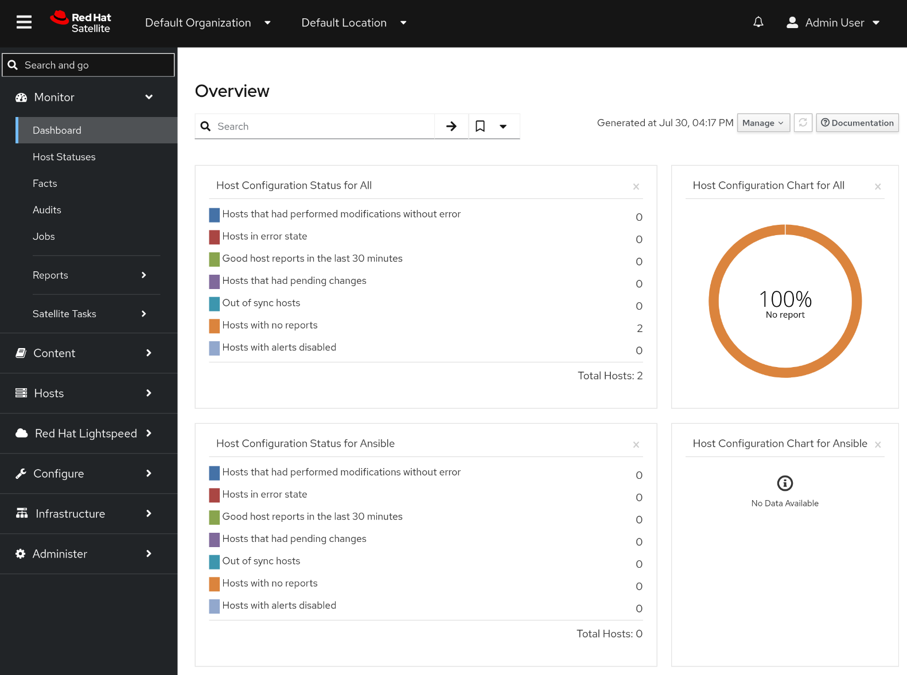
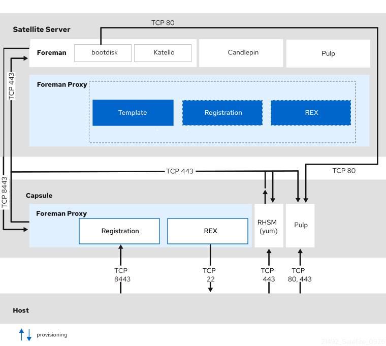
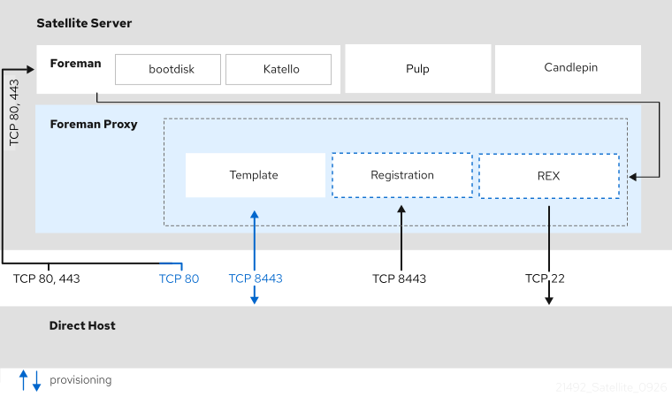
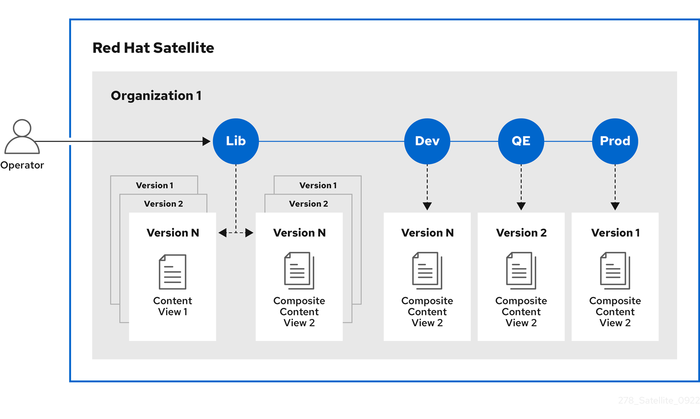
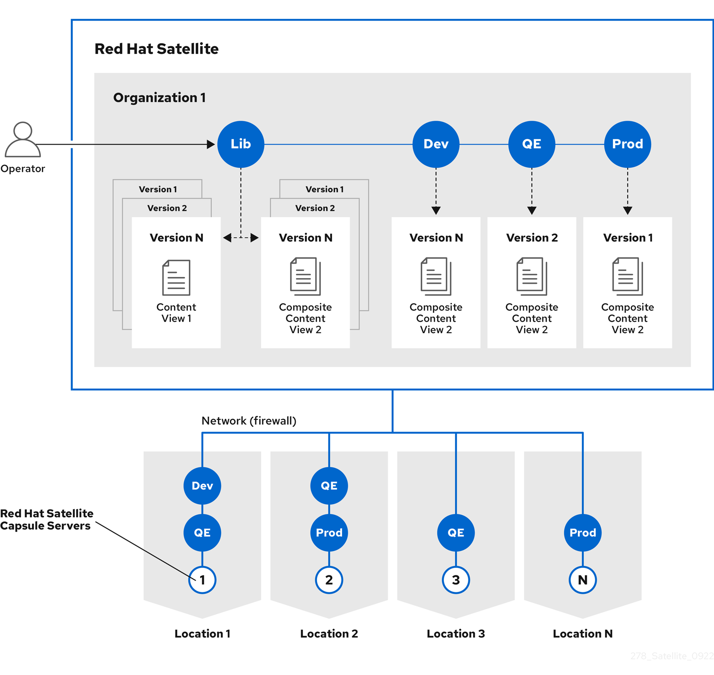

2. Discover
2.1. Satellite capabilities and use cases
Evaluate whether the core capabilities that Satellite provides meet the needs of your organization.
2.1.1. Satellite use cases
Red Hat Satellite is a centralized tool for provisioning, content delivery, remote management, and monitoring of multiple Red Hat Enterprise Linux deployments. With Satellite, you can deploy, configure, and maintain your systems across physical, virtual, and cloud environments.
Satellite helps you provision hosts, manage patches and content, strengthen security, and understand infrastructure health across physical, virtual, and cloud environments. You can also benefit from AI-powered assistance by deploying the Model Context Protocol (MCP) server for Satellite, which enables you to interact with your infrastructure using natural language.
Satellite focuses on the following use cases:
- Provisioning
-
Deploy consistently configured hosts on bare metal, virtual machines, and cloud instances from a unified interface.
Satellite automates key stages of the deployment lifecycle, including network configuration, operating system installation, and post-installation tasks. For example, you can define templates, partition layouts, and available software to achieve flexibility in how you deploy hosts.
This approach helps reduce deployment time, standardize the provisioning process, and support scaling of your infrastructure.
- Patch management and content distribution
-
Apply updates to hosts in a consistent, scalable, and repeatable manner. Import, organize, and distribute content to hosts.
NoteIn the context of Satellite, content is defined as the software installed on hosts. For example, you can use Satellite to distribute a broad range of content ranging from packages and errata to container images, Ansible content, and custom file types.
Satellite enables you to import, organize, and distribute content to hosts while staying in control of which versions of content reaches which hosts and when. For example, you can schedule maintenance windows, test updates in staging environments, and roll out patches across your infrastructure with controlled deployment strategies.
This approach provides enhanced control over what software runs in your environment and reduces the manual effort required to keep hosts up to date.
- Security management
-
Reduce the effort required to secure hosts at scale.
Satellite helps you enforce security policies, scan for vulnerabilities, and remediate compliance violations across your infrastructure. For example, you can integrate Satellite with security scanning tools, track compliance against security baselines, and set up procedures to help ensure hosts meet regulatory requirements.
This capability enables centralized security oversight, supports incident response, and helps reduce the attack surface of your hosts.
- Knowledge and analytics
-
Identify potential issues and gain a comprehensive view of your infrastructure.
Satellite collects data from hosts, generates reports on system status and trends, and provides dashboards that visualize infrastructure health. For example, you can monitor resource utilization, track configuration changes, and identify patterns.
This knowledge helps you make informed decisions about your infrastructure and spot potential problems.
- Configuration management
-
Apply configurations to hosts in a consistent and repeatable manner.
Satellite integrates with configuration management tools to define desired state, enforce policies, and remediate drift across your infrastructure. For example, you can manage configurations as code, version control your infrastructure definitions, and automate updates to help keep hosts compliant with organizational standards.
This approach reduces the risk of manual configuration errors and helps maintain consistency across your hosts.
2.1.2. Satellite security capabilities
Satellite supports multiple security mechanisms for additional layers of protection. Understanding these capabilities helps you evaluate how Satellite can support the security requirements of your organization.
You can use the following security capabilities in Satellite to enhance the security of your deployment:
- Federal Information Processing Standards (FIPS) Mode
-
Satellite Server and Capsule Servers can run on FIPS-enabled Red Hat Enterprise Linux hosts. Note that Satellite itself is not FIPS-certified.
FIPS mode enforces the use of validated cryptographic algorithms and modules. Enabling FIPS mode ensures that all cryptographic operations within the system adhere to strict security standards.
NoteSatellite supports DEFAULT and FIPS crypto-policies. The FUTURE crypto-policy is not supported for Satellite Server and Capsule Server installations.
If you want to run Satellite Server or Capsule Server on a FIPS-enabled host, FIPS must be enabled on the host before installing. You cannot enable FIPS mode on Satellite Server or Capsule Server after installation.
NoteIf you manage FIPS-enabled hosts, you must also run Satellite Server and Capsule Servers in FIPS mode. If the server does not run in FIPS mode in this situation, you might experience unexpected behavior. For example, the hosts might not be able to run remote execution jobs from the server.
- File Access Policy Daemon (
fapolicyd) -
Satellite Server and Capsule Servers can run on hosts that have the
fapolicydservice enabled.The
fapolicyddaemon helps prevent unauthorized code execution and enhances system integrity by enforcing file access policies.You can enable or disable
fapolicydon your Satellite Server and Capsule Servers at any time. - Post-Quantum Cryptography (PQC)
-
Satellite can synchronize and distribute Red Hat Enterprise Linux 10 content signed with the Module-Lattice-Based Digital Signature Standard (ML-DSA). ML-DSA is a quantum-resistant cryptographic signature algorithm designed to protect content integrity against potential attacks from quantum computers.
Red Hat does not currently support full PQC compatibility for Satellite.
- Security-Enhanced Linux (SELinux)
-
Satellite Server and Capsule Servers must be run on hosts with SELinux enabled.
The SELinux collection of security modules enforces policies that define which processes can access specific system resources, providing protection against unauthorized access and exploitation.
To maintain a high-security environment, Red Hat recommends running Satellite with SELinux in enforcing mode. This ensures that access control policies are strictly enforced and minimizes the risk of privilege escalation or unauthorized actions.
In addition to these security capabilities, regularly updating security policies and configurations, as well as monitoring system logs, can help detect and respond to potential threats effectively on both Satellite Server and Capsule Server.
For certain use cases, Satellite Server must meet security compliance requirements. You can use Security Content Automation Protocol (SCAP) to scan your system for security policy compliance.
2.1.3. Authentication methods in Satellite
The authentication methods you can configure depend on the authentication source you are using. If the native authentication features provided by Satellite are not sufficient for your use case, use this information to decide which external authentication provider best suits your requirements.
Red Hat Satellite includes native support for authentication with a username and password. If you require additional methods of authentication, configure your Satellite Server to use an external authentication source.
| Username and password | Single sign-on (SSO) | One-time password (OTP) | Time-based one-time password (TOTP) | |
|---|---|---|---|---|
Active Directory (direct integration) |
Yes |
Yes |
No |
No |
Identity Management |
Yes (Linux and Active Directory users) |
Yes (Linux users only) |
No |
No |
Red Hat Single Sign-On |
Yes |
Yes |
Yes |
Yes |
LDAP |
Yes |
No |
No |
No |
2.2. Administration tools overview
Satellite offers multiple tools for administrators to manage the deployment. Understanding the available administration tools helps you select the approach that fits your workflow and automation needs.
2.2.1. Satellite web UI overview
You can manage and monitor your Satellite infrastructure from a browser with the Satellite web UI. Satellite supports recent versions of the Mozilla Firefox and Google Chrome browsers.
The Satellite web UI and command-line interface support English, French, Japanese, Korean, and Simplified Chinese.

2.2.2. Hammer CLI overview
You can configure and manage your Satellite Server with CLI commands by using Hammer.
Using Hammer has the following benefits:
-
Create shell scripts based on Hammer commands for basic task automation.
-
Redirect output from Hammer to other tools.
-
Use the
--debugoption with Hammer to test responses to API calls before applying the API calls in a script. For example:hammer --debug organization list.
To issue Hammer commands, a user must have access to your Satellite Server.
|
Note
|
To ensure a user-friendly and intuitive experience, the Satellite web UI takes priority when developing new functionality. Therefore, some features that are available in the Satellite web UI might not yet be available for Hammer. |
In the background, each Hammer command first establishes a binding to the API, then sends a request. This can have performance implications when executing a large number of Hammer commands in sequence. In contrast, scripts that use API commands communicate directly with the Satellite API and they establish the binding only once.
-
xref:[Using the Hammer CLI tool]
2.2.3. Satellite API overview
Integrate with enterprise systems, automate repetitive tasks, and manage your infrastructure programmatically using the resource-based REST model of the Satellite API. You can use any HTTP client to interact with Satellite.
Using the REST API has the following benefits:
-
Broad client support – any programming language, framework, or system with support for HTTP protocol can use the API.
-
Self-descriptive – client applications require minimal knowledge of the Satellite infrastructure because users discover many details at runtime.
-
Resource-based model – the resource-based REST model provides a natural way to manage a virtualization platform.
You can use the REST API to perform the following tasks:
-
Integrate with enterprise IT systems.
-
Integrate with third-party applications.
-
Perform automated maintenance or error checking tasks.
-
Automate repetitive tasks with scripts.
Scripts based on API commands communicate directly with the Satellite API, which makes them faster than scripts based on Hammer commands or Ansible Playbooks relying on modules within redhat.satellite.
|
Important
|
API commands differ between versions of Satellite. When you prepare to upgrade Satellite Server, update all the scripts that contain Satellite API commands. |
-
xref:[Using the Satellite REST API]
2.2.4. Satellite Ansible Collection
Satellite Ansible Collection is a set of Ansible modules that interact with the Satellite API. You can use these modules to automate many aspects of Satellite administration.
Modules from the Satellite Ansible Collection are provided by the ansible-collection-redhat-satellite package.
On your Satellite Server, the package is installed by default.
Using the modules, you can write playbooks to automate the administration of your Satellite.
-
xref:[Using the Satellite Ansible Collection]
2.2.5. MCP server overview
Satellite provides a Model Context Protocol (MCP) server so that you can query and manage your Satellite inventory from MCP-compatible AI applications by using natural language.
You deploy the MCP server from a container image that Red Hat provides and connect it to the AI application that runs your MCP client. The MCP server accesses Satellite with your credentials, so your MCP client cannot obtain data that you do not have permission to access.
By default, the MCP server is read-only. You can query your inventory and generate reports from it, for example, a report of all subnets and the hosts that are assigned to them.
When you start the MCP server, you can also grant it permissions to change your Satellite. For example, you can start remote execution jobs on your hosts, and publish and promote content views.
2.2.6. Satellite API compared to Hammer CLI
Hammer serves as a human-friendly interface to Satellite API. Use Hammer for interactive tasks and testing API calls, but use the API directly for better performance when executing many commands in scripts.
For example, to test responses to API calls before applying them in a script, use the --debug option to inspect API calls that Hammer issues: hammer --debug organization list.
In the background, each Hammer command first establishes a binding to the API, then sends a request. This can have performance implications when executing a large number of Hammer commands in sequence. In contrast, a script communicating directly with the API establishes the binding only once.
-
xref:[Using the Satellite Ansible Collection]
2.3. Configuration management with Ansible
Learn how to use Ansible as a configuration management tool to define and maintain the desired state of your hosts over time.
2.3.1. Configuration management with Ansible in Satellite
By using Ansible as a configuration management tool in Satellite, you can define the desired state of your hosts and maintain it over time. Satellite combines Ansible features with recurring job runs and centralized orchestration, which helps you manage host configurations consistently.
2.3.2. High-level steps for configuration management with Ansible
You use Ansible roles to define the desired state of the hosts registered to Satellite. Running the roles enforces the configuration.
Configuration management with Ansible involves the following high-level steps:
-
Import Ansible roles into Satellite.
-
Assign specific roles to a host or host group.
-
Optional: Override Ansible variables per host or host group in Satellite.
-
Run the roles on the host or host group.
As a result, your hosts maintain a consistent configuration over time. The Ansible roles become a part of their definition.
|
Note
|
Running an Ansible role on a host triggers a remote execution job in the background but the use case is different. The typical use case for a remote execution job is to run an ad-hoc task or orchestration. The typical use case for configuration management by using Ansible and Ansible roles is long-term state management. |
2.3.3. Red Hat Enterprise Linux System Roles in Satellite
Red Hat Enterprise Linux System Roles is a collection of Ansible roles that provide a configuration interface to remotely manage Red Hat Enterprise Linux servers. Satellite includes Red Hat Enterprise Linux System Roles as pre-installed Ansible roles that you can import and use for configuration management.
The rhel-system-roles package is pre-installed in Capsule Server container images and includes roles for common system management tasks such as certificate management, firewall configuration, kernel settings, logging, network configuration, SELinux management, storage management, and time synchronization.
Support levels for some of the Red Hat Enterprise Linux System Roles might be in Technology Preview. For up-to-date information about support levels and a complete list of available roles, see Red Hat Enterprise Linux System Roles.
To use Red Hat Enterprise Linux System Roles, import them from your Capsule Server using the same process as any other Ansible role. For more information, see Import Ansible roles and variables.
3. Get started
3.1. Get started with Satellite
Learn essential Satellite concepts to manage your infrastructure efficiently.
3.1.1. Access Red Hat Satellite from Satellite web UI
After Red Hat Satellite has been installed and configured, you can use a browser to log in to the Satellite web UI.
Log in to the Satellite web UI
The Satellite web UI is a browser-based user interface that you can use to manage and monitor your Satellite infrastructure. To access Satellite web UI, use your web browser to navigate to the Satellite web UI login page and enter your credentials.
-
Ensure that the Katello root CA certificate is installed in your browser. For more information, see Import the Katello root CA certificate by using browser.
-
Access Satellite Server using a web browser pointed to the fully qualified domain name:
https://satellite.example.com/
-
Enter the user name and password created during the configuration process. If a user was not created during the configuration process, the default user name is admin.
-
If you have problems logging in, you can reset the password. For more information, see Reset the administrative user password.
Import the Katello root CA certificate by using browser
After the first login to Satellite web UI, you might see a warning that you are using the default self-signed certificate. To ensure a successful connection, locate the root CA certificate on Satellite and import it into your browser truststore.
-
Your Red Hat Satellite is installed and configured.
-
Identify the fully qualified domain name of your Satellite Server:
# hostname -f
-
Access the
pubdirectory on your Satellite Server using a web browser pointed to the fully qualified domain name:https://satellite.example.com/pub
-
When you access Satellite for the first time, an untrusted connection warning displays in your web browser. Accept the self-signed certificate and add the Satellite URL as a security exception to override the settings. This procedure might differ depending on the browser being used. Ensure that the Satellite URL is valid before you accept the security exception.
-
Select
katello-server-ca.crt. -
Import the certificate into your browser as a certificate authority and trust it to identify websites.
Import the Katello root CA certificate by using command line
After the first login to Satellite web UI, you might see a warning that you are using the default self-signed certificate. To ensure a successful connection, locate the root CA certificate on Satellite and import it into your browser truststore.
-
Your Red Hat Satellite is installed and configured.
-
On your Satellite Server, copy the
katello-server-ca.crtfile to the machine you use to access the Satellite web UI:# scp /var/www/html/pub/katello-server-ca.crt username@hostname:remotefile
-
In the browser, import the
katello-server-ca.crtcertificate as a certificate authority and trust it to identify websites.
Reset the administrative user password
You can reset the administrative password to randomly generated characters or set a new administrative password for a specific user. This might be useful when you forget the password, when the administrative user is deleted, or for assigning administrative privileges to a user.
-
Log in to the base operating system where your Satellite Server is installed.
-
Reset the administrative user password:
-
To set a randomly generated administrative user password:
# foreman-rake permissions:reset Reset to user: admin, password: qwJxBptxb7Gfcjj5
-
To set a new administrative user password:
# foreman-rake permissions:reset username=My_User_Name password=My_New_Password
Replace
My_User_Namewith the username of the user whose password you want to reset.NoteBe aware of the following behaviors:
-
If you enter a username that does not exist, the
foreman-rakeutility creates a new administrative user with the defined password. -
If you enter a username of a user without administrative privileges, that user gains administrative privileges.
-
If you do not enter a username, the password resets for the
adminuser by default.
-
-
-
To use the new password with the Hammer CLI, add the password and username to the
~/.hammer/cli.modules.d/foreman.ymlfile on your Satellite Server:# vi ~/.hammer/cli.modules.d/foreman.yml
-
Use the new password to log in to the Satellite web UI.
Set a custom message on the Satellite web UI login page
You can change the default text on the login page to a custom message you want your users to see every time they access the page. For example, your custom message might be a warning required by your company.
-
In the Satellite web UI, navigate to Administer > Settings.
-
Select the General tab.
-
Enter your custom message in the Login page footer text field.
-
Click Submit.
-
Log out of the Satellite web UI and verify that the custom message is now displayed on the login page.
3.1.2. Satellite web UI efficiency features
The Satellite web UI includes search, bookmarking, keyboard shortcuts, and various settings to help you work more efficiently.
Efficiency tips for Satellite web UI
Use these keyboard shortcuts and techniques to navigate and search more efficiently in the Satellite web UI.
Ctrl + Shift + Ffocuses the vertical navigation search bar-
After pressing this shortcut, you can start typing in the vertical navigation search bar.
/focuses the page search bar-
After pressing this shortcut, you can start typing in the page search bar.
- Saving searches as bookmarks
-
You can save a search you frequently use as a bookmark. After entering your search query in the search field, click the arrow next to the Search button and select Bookmark this search. You can then give the bookmark a name and choose whether to make it public or private.
To manage all bookmarks, navigate to Administer > Bookmarks.
- Compact table mode
-
Navigate to the user menu in the top bar and select My account. Under the UI Preferences tab, you can enable compact table mode. With compact table mode enabled, Satellite web UI displays table rows with less space between items.
- Instance title setting
-
If you have multiple Satellite instances, you can configure Satellite web UI to always show a banner with the instance title in the top bar to help you identify which instance you are currently using. To set an instance title, navigate to Administer > Settings, and edit the Instance title setting on the General tab. To set a color for the instance title banner, edit the Instance color setting.
Satellite web UI search query reference
Use search query syntax and operators in the Satellite web UI to filter lists of resources on Satellite web UI pages. Parameter-based queries help you find the resources you need faster and more precisely than free-text search in large inventories.
Search queries in the page search bar follow the pattern:
parameter operator value
To search text with whitespaces, enclose it in quotes:
hostgroup = "Web Servers"
Typing without specifying a parameter searches across multiple fields simultaneously, also known as free-text search.
For example, typing 64 in the search bar on the hosts page displays all hosts that have 64 in their name, IP address, MAC address, and architecture.
|
Note
|
Free text search is slower and less accurate than parameter-based queries. Use specific parameters whenever possible for better performance and precision. |
The search bar supports multiple date and time formats, including the following:
-
"10 January 2017"
-
"10 Jan 2017"
-
10-January-2017
-
10/January/2017
-
"January 10, 2017"
-
Today, yesterday, and similar keywords
| Operator | Short Name | Description |
|---|---|---|
= |
EQUALS |
Accepts numerical, temporal, or text values. For text, exact case sensitive matches are returned. |
!= |
NOT EQUALS |
|
~ |
LIKE |
Accepts text or temporal values. The search is not case-sensitive. Accepts the following wildcards: _ for a single character, % or * for any number of characters including zero. If no wildcard is specified, the string is treated as if surrounded by wildcards: %rhel7% |
!~ |
NOT LIKE |
|
> |
GREATER THAN |
Accepts numerical or temporal values. For temporal values, the operator > is interpreted as "later than", and < as "earlier than". Both operators can be combined with EQUALS: >= <= |
< |
LESS THAN |
|
^ |
IN |
Compares an expression against a list of values, as in SQL. Returns matches that contain or not contain the values, respectively. |
!^ |
NOT IN |
|
HAS or set? |
|
Returns values that are present or not present, respectively. |
NOT HAS or null? |
|
| Operator | Alternative Notations | ||
|---|---|---|---|
and |
& |
&& |
<whitespace> |
or |
| |
|| |
|
not |
– |
! |
|
Useful search examples
The following examples demonstrate useful ways to filter and find resources in Satellite web UI. Use them as starting points to build your own searches that match your specific needs.
These search examples show how to filter hosts and are based on host attribute search parameters. You can use them on Satellite web UI pages that list hosts, such as Hosts > All Hosts. You can apply the same syntax to filter other resources on other Satellite web UI pages.
- Find hosts by host global status and sub-status
-
Hosts that have an OK global status:
global_status = ok
Hosts that have an Error or Warning global status:
global_status = error or global_status = warning
Hosts that have at least one pending resource:
status.pending > 0
Hosts that restarted some service during last run:
status.restarted > 0
Hosts that have an interesting last run that might indicate something has happened:
status.interesting = true
- Find hosts that need attention
-
Hosts with security updates available:
errata_status = security_needed
Hosts that have email notifications for configuration errors enabled and are in a failed state:
status.enabled = true AND status.failed = true
Hosts that have not generated a report recently:
last_report < "7 days ago"
- Find hosts by configuration, environment, or registration date
-
Hosts in production that belong to a host group whose name includes a variation of the word "webservers":
environment = production AND hostgroup ~ webservers
Hosts registered in the last month:
registered_at > "30 days ago"
Hosts registered between specific dates:
registered_at > 1-January-2026 AND registered_at < 31-January-2026
- Exclude specific results
-
All hosts except hosts in a host group named "exceptions":
NOT hostgroup = exceptions
Hosts that are not compliant with policies:
compliance_status != compliant
- Use wildcards for flexible matching
-
Hosts with names that include the strings "web" and "prod":
name ~ web*prod*
Host groups starting with a specific prefix:
hostgroup ~ rhel%
3.2. Get started with content management
After installing Satellite, to become productive synchronizing and distributing your content, import initial content into your Satellite Server and set up a content delivery pipeline to distribute that content to your hosts.
3.2.1. Create a product and a repository
A product in Satellite groups repositories, and a repository in Satellite mirrors an upstream content source. Create a custom product and add a repository so that Satellite has content to synchronize.
|
Note
|
If you exclusively distribute Red Hat content, proceed to Import a subscription manifest and enable Red Hat repositories. |
This example adds a repository with RPM content from EPEL (Extra Packages for Enterprise Linux).
-
Your Satellite web UI account has administrative privileges.
-
In the Satellite web UI, navigate to Content > Products.
-
Click Create Product. To configure the new product:
-
In the Name field, enter a name for the product. For example:
EPEL. -
Click Save.
-
-
On the product page, click New Repository. To configure the new repository:
-
In the Name field, enter a name for the repository. For example:
EPEL 9. -
From the Type list, select the required repository type. For example:
yum. -
In the Upstream URL field, enter the URL of the upstream repository. For example:
https://dl.fedoraproject.org/pub/epel/10/Everything/x86_64/. -
From the Download Policy list, select a download policy. For example: Select On Demand to save disk space. With this policy, Satellite downloads only the metadata during synchronization and fetches the actual packages when a host requests them.
-
Click Save.
-
-
In the Satellite web UI, navigate to Content > Products. The Products page now shows the new product. The new product contains the new repository.
-
Follow Synchronize your content to synchronize the new repository so that Satellite downloads its metadata and makes it available for distribution.
3.2.2. Import a subscription manifest and enable Red Hat repositories
To distribute Red Hat content, you must first import a subscription manifest that entitles your Satellite Server to download content from the Red Hat CDN. After that, you enable the specific Red Hat repositories you want to synchronize.
-
You have a Red Hat subscription manifest file exported from the Red Hat Hybrid Cloud Console. For more information, see Obtaining a Red Hat subscription manifest in Managing content.
-
Your Satellite web UI account has administrative privileges.
-
In the Satellite web UI, ensure the context is set to the organization you want to use.
-
Navigate to Content > Subscriptions. To upload the manifest:
-
From the options menu, select Manage Manifest.
-
In the Manage Manifest window, click Choose File. Upload the manifest file.
-
After the manifest imports successfully, close the Manage Manifest window.
-
-
Navigate to Content > Red Hat Repositories. To enable repositories:
-
Search for the repository you want to enable. You can toggle the Recommended Repositories option to view repositories that are used in a typical setup.
-
Expand the repository set and click the Enable icon next to the base architecture and release version that matches your hosts.
-
-
The repository you enabled is listed in the Enabled Repositories list.
-
Follow Synchronize your content to synchronize the new repository so that Satellite downloads its metadata and makes it available for distribution.
3.2.3. Synchronize your content
Synchronization downloads metadata and packages from an upstream source into Satellite. Until you synchronize a repository, Satellite has no content to distribute to your hosts.
-
In the Satellite web UI, navigate to Content > Products.
-
Select the product that contains the repositories you want to synchronize.
-
Select the checkboxes next to the repositories you want to synchronize.
-
Click Sync Now.
Depending on the repository size and your network speed, the sync can take from a few minutes to over an hour. The first time you synchronize a repository, the sync typically takes longer.
-
In the Satellite web UI, navigate to Content > Sync Status.
-
Expand the product to see the synchronization result for each repository.
-
Verify that the synchronization completed successfully and that the repository shows a package count.
-
After the sync finishes, your content is stored in the Library environment. Library is the default lifecycle environment where all content lands first. Next, follow Define lifecycle environments to create additional lifecycle environments to stage content through a promotion path.
3.2.4. Define lifecycle environments
Lifecycle environments represent stages in your content promotion pipeline. By adding lifecycle environments, you define the stages through which you will be promoting your content as you test it.
Every Satellite deployment starts with an initial Library lifecycle environment that holds all synchronized content. From there, you create a lifecycle environment path that matches the stages your content passes through before reaching your hosts.
For example, consider a team managing web servers. They want to test package updates in a development environment first, then validate them further in a testing environment, and only then promote the packages to production. The resulting lifecycle environment path looks like this: Library > Development > Testing > Production.
In this example, you create that path.
-
In the Satellite web UI, navigate to Content > Lifecycle > Lifecycle Environments.
-
Add an environment path:
-
Click Create Environment Path to start a new lifecycle environment path.
-
In the Name field, enter
Development. -
Click Save.
-
-
Extend the environment path with a testing stage:
-
Click Add New Environment next to the Development environment.
-
In the Name field, enter
Testing. -
Ensure that the Prior Environment dropdown list value is set to Development.
-
Click Save.
-
-
Extend the environment path with a production stage:
-
Click Add New Environment next to the Testing environment.
-
In the Name field, enter
Production. -
Ensure that the Prior Environment dropdown list value is set to Testing.
-
Click Save.
-
-
In the Satellite web UI, navigate to Content > Lifecycle > Lifecycle Environments. Review your new lifecycle environment path.
-
Follow Publish and promote a content view to create a content view so that you control which repositories are available in the new environments.
3.2.5. Publish and promote a content view
A content view is a curated collection of your repositories. When you publish a content view, Satellite takes a point-in-time copy of the selected repositories. This snapshot, called a content view version, is delivered to hosts through promotion to a lifecycle environment.
In this example, you create a content view, publish the first version, and promote it to the Development environment.
-
The content you want to publish is synchronized, as described in Synchronize your content.
-
In the Satellite web UI, navigate to Content > Lifecycle > Content Views.
-
Create a content view:
-
Click Create content view.
-
In the Name field, enter a name. For example:
My Content View. -
Ensure Content view is selected as the type.
-
Click Create content view.
-
-
Define the properties of the new content view:
-
On the Repositories tab, select your preferred repository type from the Type list.
-
Click Show repositories, an select the repositories you want to include.
-
Click Add repositories.
-
-
Publish a new version of the content view with the selected repositories:
-
Click Publish new version.
-
Optional: In the Description field, enter
Initial version. -
Toggle Promote, and select the Development lifecycle environment.
-
Click Next, and review the details.
-
Click Finish, and wait for the publishing task to complete.
-
-
In the Satellite web UI, navigate to Content > Lifecycle > Lifecycle Environments. Click the Development lifecycle environment. On the Content Views tab, you can see that My Content View is listed.
-
Navigate to Content > Lifecycle > Content Views. Click the My Content View content view. On the Versions tab, you can see the version of the content view that is published and the environments associated with My Content View. Hosts registered to these environments with this content view will receive exactly the packages from this snapshot.
-
Follow Create an activation key to create an activation key that maps new hosts to this content view and lifecycle environment.
3.2.6. Create an activation key
An activation key assigns a lifecycle environment, content view, and other settings to hosts during registration. Every time you reuse the key to register a host, Satellite applies the same settings to the host.
In this example, you create an activation key that points to the Development environment and the My Content View content view.
-
In the Satellite web UI, navigate to Content > Lifecycle > Activation Keys.
-
Create an activation key:
-
Click Create Activation Key.
-
In the Name field, enter a name. For example:
My Development Key. -
Ensure the Unlimited hosts checkbox is selected.
-
On the Content view environments card, click Assign content view environments.
-
Select the Development lifecycle environment.
-
Select the content view you created, for example My Content View.
-
Click Save to save the content view environment.
-
-
Click Save to create the activation key.
You now have an activation key that you can use to register hosts. Each host registered with this activation key will automatically receive content from the Development lifecycle environment and the My Content View content view.
3.2.7. Register a host and test package delivery
Register a host to Satellite and verify that it receives packages from your content view. Registration connects the host to Satellite Server and assigns the lifecycle environment and content view from the activation key.
|
Important
|
After registration, all content requests from the host are served by Satellite Server rather than by external repositories. |
-
You have root access to the host.
-
The host and your Satellite Server can communicate over the network.
-
In the Satellite web UI, navigate to Hosts > Register Host.
-
From the Activation Keys list, select the required activation key.
-
If you have not deployed a CA-signed certificate on Satellite Server, select the Insecure option for the purposes of this tutorial.
-
Click Generate to generate the registration command.
-
On your host, run the registration command as the root user.
-
The registration command succeeds.
-
On the host, install a package that is provided through the content view:
# dnf install My_Package_Name
Verify that Satellite Server delivers the package instead of external mirrors.
Your content pipeline is now working end to end. Hosts registered with your activation key will receive packages from the content view snapshot most recently promoted to the Development lifecycle environment.
-
Registering hosts by using global registration in Managing hosts
3.3. Get started with remote execution
To run your first remote job, ensure that your user account has the required permissions and your hosts are configured to run remote jobs.
3.3.1. Permissions for remote execution
You can control which roles can run which jobs within your infrastructure, including which hosts they can target.
The remote execution feature provides two built-in roles:
-
Remote Execution Manager: Can access all remote execution features and functionality.
-
Remote Execution User: Can only run jobs.
You can clone the Remote Execution User role and customize its filter for increased granularity.
If you adjust the filter with the view_job_templates permission on a customized role, you can only see and trigger jobs based on matching job templates.
You can use the view_hosts and view_smart_proxies permissions to limit which hosts or Capsules are visible to the role.
The execute_template_invocation permission is a special permission that is checked immediately before execution of a job begins.
This permission defines which job template you can run on a particular host.
This allows for even more granularity when specifying permissions.
You can run remote execution jobs against Red Hat Satellite and Capsule registered as hosts to Red Hat Satellite with the execute_jobs_on_infrastructure_hosts permission.
Standard Manager and Site Manager roles have this permission by default.
If you use either the Manager or Site Manager role, or if you use a custom role with the execute_jobs_on_infrastructure_hosts permission, you can execute remote jobs against registered Red Hat Satellite and Capsule hosts.
The following example shows filters for the execute_template_invocation permission:
name = Reboot and host.name = staging.example.com name = Reboot and host.name ~ *.staging.example.com name = "Restart service" and host_group.name = webservers
Use the first line in this example to apply the Reboot template to one selected host.
Use the second line to define a pool of hosts with names ending with .staging.example.com.
Use the third line to bind the template with a host group.
|
Note
|
Permissions assigned to users with these roles can change over time. If you have already scheduled some jobs to run in the future, and the permissions change, this can result in execution failure because permissions are checked immediately before job execution. |
3.3.2. Distribute SSH keys for remote execution
For Capsules in ssh mode, remote execution connections are authenticated using SSH.
By default, global registration deploys Capsule SSH public keys to hosts automatically.
You can disable this through the Setup REX option.
-
The SSH service is enabled and running on the hosts.
-
Any network or host-based firewalls are configured to enable access to port 22.
-
If the hosts are running on Amazon Web Services, enable password authentication. For more information, see New User Accounts.
-
If you register hosts by using global registration, leave Setup REX set to Yes (the default) to deploy SSH keys automatically. For more information, see Registering hosts by using global registration in Managing hosts.
-
If global registration did not deploy the SSH keys, or you use another provisioning method, use one of the following methods to distribute the public SSH key from Capsule to target hosts:
3.3.3. Execute a remote job by using Satellite web UI
You can execute a job that is based on a job template against one or more hosts from the Satellite web UI.
|
Note
|
Ansible jobs run in batches on multiple hosts, so you cannot cancel a job running on a specific host. A job completes only after the Ansible Playbook runs on all hosts in the batch. |
-
In the Satellite web UI, navigate to Monitor > Jobs and click Run job.
-
Select the Job category and the Job template you want to use, then click Next.
-
Select hosts on which you want to run the job. If you do not select any hosts, the job will run on all hosts you can see in the current context.
NoteIf you want to select a host group and all of its subgroups, it is not sufficient to select the host group as the job would only run on hosts directly in that group and not on hosts in subgroups. Instead, you must either select the host group and all of its subgroups or use this search query:
hostgroup_fullname ~ "My_Host_Group*"
Replace My_Host_Group with the name of the top-level host group.
-
If required, provide inputs for the job template. Different templates have different inputs and some templates do not have any inputs. After entering all the required inputs, click Next.
-
Optional: To configure advanced settings for the job, fill in the Advanced fields. To learn more about advanced settings, see Advanced settings in the job wizard.
-
Click Next.
-
Schedule time for the job.
-
To execute the job immediately, keep the pre-selected Immediate execution.
-
To execute the job in future time, select Future execution.
-
To execute the job on regular basis, select Recurring execution.
-
-
Optional: If you selected future or recurring execution, select the Query type, otherwise click Next.
-
Static query means that job executes on the exact list of hosts that you provided.
-
Dynamic query means that the list of hosts is evaluated just before the job is executed. If you entered the list of hosts based on some filter, the results can be different from when you first used that filter.
Click Next after you have selected the query type.
-
-
Optional: If you selected future or recurring execution, provide additional details:
-
For Future execution, enter the Starts at date and time. You also have the option to select the Starts before date and time. If the job cannot start before that time, it will be canceled.
-
For Recurring execution, select the start date and time, frequency, and the condition for ending the recurring job. You can choose the recurrence to never end, end at a certain time, or end after a given number of repetitions. You can also add Purpose - a special label for tracking the job. There can only be one active job with a given purpose at a time.
Click Next after you have entered the required information.
-
-
Review job details. You have the option to return to any part of the job wizard and edit the information.
-
Click Submit to schedule the job for execution.
3.3.4. Execute a remote job by using Hammer CLI
You can execute a job that is based on a job template against one or more hosts.
|
Note
|
Ansible jobs run in batches on multiple hosts, so you cannot cancel a job running on a specific host. A job completes only after the Ansible Playbook runs on all hosts in the batch. |
For more information about creating, monitoring, or canceling remote jobs with Hammer CLI, enter hammer job-template --help and hammer job-invocation --help.
-
Enter the following command on Satellite:
$ hammer settings set \ --name remote_execution_global_proxy \ --value false
-
Find the ID of the job template you want to use:
$ hammer job-template list
-
Show the template details to see parameters required by your template:
$ hammer job-template info --id My_Template_ID
-
Execute a remote job with custom parameters:
$ hammer job-invocation create \ --inputs My_Key_1="My_Value_1",My_Key_2="My_Value_2",... \ --job-template "My_Template_Name" \ --search-query "My_Search_Query"
Replace
My_Search_Querywith the filter expression that defines hosts, for example"name ~ My_Pattern".
4. Plan
4.1. Deployment architecture requirements
Understand infrastructure requirements and deployment considerations to ensure your environment is properly configured before installing Satellite.
4.1.1. Supported usage and versions of Satellite components
Verify that your platforms, architectures, and component versions are supported before deploying Satellite.
Supported usage of Satellite components
Usage of all Red Hat Satellite components is supported within the context of Red Hat Satellite only as described below.
- Red Hat Enterprise Linux Server
-
Each Red Hat Satellite subscription includes one supported instance of Red Hat Enterprise Linux Server. Reserve this instance solely for the purpose of running Red Hat Satellite.
Not supported: Using the operating system included with Satellite to run other daemons, applications, or services within your environment.
- Foreman
-
You can extend Foreman with plugins packaged with Red Hat Satellite. See Satellite 6 Component Versions in Red Hat Knowledgebase for information about supported Foreman plugins.
Not supported: Extending Foreman with plugins in the Red Hat Satellite Optional repository.
Red Hat Satellite also includes components, configuration, and functionality to provision and configure operating systems other than Red Hat Enterprise Linux. While these features are included, Red Hat supports their usage only for Red Hat Enterprise Linux.
- Pulp
-
Interact with Pulp only by using the Satellite web UI, CLI, and API.
Not supported: Direct modification or interaction with the Pulp local API or database. This can cause irreparable damage to the Red Hat Satellite databases.
- Candlepin
-
Interact with Candlepin only by using the Satellite web UI, CLI, and API.
Not supported: Direct interaction with Candlepin, its local API, or database. This can cause irreparable damage to the Red Hat Satellite databases.
Supported client architectures for content management
You can use the following combinations of major versions of Red Hat Enterprise Linux and hardware architectures for registering and managing hosts with Satellite. The Red Hat Satellite Client 6 repositories are also available for these combinations.
| Platform | Architectures |
|---|---|
Red Hat Enterprise Linux 10 |
x86_64, ppc64le, s390x, aarch64 |
Red Hat Enterprise Linux 9 |
x86_64, ppc64le, s390x, aarch64 |
Red Hat Enterprise Linux 8 |
x86_64, ppc64le, s390x, aarch64 |
Red Hat Enterprise Linux 7 |
x86_64, ppc64 (BE), ppc64le, aarch64, s390x |
Supported client architectures for host provisioning
You can use the following combinations of major versions of Red Hat Enterprise Linux and hardware architectures for host provisioning with Satellite.
| Platform | Architectures |
|---|---|
Red Hat Enterprise Linux 10 |
x86_64 |
Red Hat Enterprise Linux 9 |
x86_64 |
Red Hat Enterprise Linux 8 |
x86_64 |
Red Hat Enterprise Linux 7 |
x86_64 |
Supported client architectures for configuration management
You can use the following combinations of major versions of Red Hat Enterprise Linux and hardware architectures for configuration management with Satellite.
| Platform | Architectures |
|---|---|
Red Hat Enterprise Linux 10 |
x86_64 |
Red Hat Enterprise Linux 9 |
x86_64 |
Red Hat Enterprise Linux 8 |
x86_64, aarch64 |
4.1.2. Networking considerations in Satellite
For the components of Satellite architecture to communicate, the required network ports must be open to enable incoming and outgoing traffic between the components. Identify firewall port and networking requirements to ensure Satellite components can communicate properly.
Capsule networking
The communication between Satellite Server and hosts registered to a Capsule Server is routed through that Capsule Server. Capsule Server also provides Satellite services to hosts.
In a topology with hosts connecting to a Capsule Server, Capsule Server provides a single endpoint for all host network communications so that in remote network segments, only firewall ports to the Capsule Server itself must be open. Hosts do not need direct access to Satellite Server.

In a topology with hosts connecting directly to Satellite Server, hosts need direct network access to Satellite Server. This applies to all Capsule Servers because they are hosts of Satellite Server.

Satellite Server port and firewall requirements
The following tables indicate the destination port and the direction of incoming and outgoing traffic for Satellite Server.
| Destination Port | Protocol | Service | Source | Required For | Description |
|---|---|---|---|---|---|
443 |
TCP |
HTTPS |
Capsule |
Red Hat Satellite API |
Communication from Capsule |
443 |
TCP |
HTTPS |
Client |
Global Registration |
Registering hosts to Satellite Port 443 is required for sending installed packages and traces, registration initiation, and uploading facts. |
443 |
TCP |
HTTPS |
Red Hat Satellite |
Content Mirroring |
Management |
443 |
TCP |
HTTPS |
Red Hat Satellite |
Capsule API |
Smart Proxy functionality |
443, 80 |
TCP |
HTTPS, HTTP |
Capsule |
Content Retrieval |
Content |
443, 80 |
TCP |
HTTPS, HTTP |
Client |
Content Retrieval |
Content |
5910 – 5930 |
TCP |
HTTPS |
Browsers |
Compute Resource’s virtual console |
|
8000 |
TCP |
HTTP |
Client |
Provisioning templates |
Template retrieval for client installers, iPXE or UEFI HTTP Boot |
8000 |
TCP |
HTTPS |
Client |
PXE Boot |
Installation |
8443 |
TCP |
HTTPS |
Red Hat Satellite |
Capsule API |
Smart Proxy functionality |
8443 |
TCP |
HTTPS |
Discovered Node |
Discovery |
Host Discovery and provisioning (if the Discovery plugin is installed) |
| Destination Port | Protocol | Service | Destination | Required For | Description |
|---|---|---|---|---|---|
22 |
TCP |
SSH |
Target host |
Remote execution |
Run jobs |
22, 16514 |
TCP |
SSH SSH/TLS |
Compute Resource |
Satellite originated communications, for compute resources in libvirt |
|
80 |
TCP |
HTTP |
Remote repository |
Content Sync |
Remote repositories |
389, 636 |
TCP |
LDAP, LDAPS |
External LDAP Server |
LDAP |
LDAP authentication, necessary only if external authentication is enabled.
The port can be customized if |
443 |
TCP |
HTTPS |
*.akamaiedge.net |
CDN for the Red Hat Container Registry |
Pulling container images to install Red Hat Lightspeed in Satellite (optional) |
443 |
TCP |
HTTPS |
Capsule |
Content mirroring |
Initiation |
623 |
Client |
Power management |
BMC On/Off/Cycle/Status |
||
5000 |
TCP |
HTTPS |
OpenStack Compute Resource |
Compute resources |
Virtual machine interactions (query/create/destroy) (optional) |
5900 – 5930 |
TCP |
SSL/TLS |
Hypervisor |
noVNC console |
Launch noVNC console |
9090 |
TCP |
HTTPS |
Client |
Discovery |
Capsule sends reboot command to the discovered host (optional) |
8443 |
TCP |
HTTPS |
Capsule |
Capsule API |
Management of Capsules |
Capsule port and firewall requirements
The following tables indicate the destination port and the direction of incoming and outgoing traffic for Capsule Servers.
| Destination Port | Protocol | Service | Source | Required For | Description |
|---|---|---|---|---|---|
53 |
TCP and UDP |
DNS |
DNS Servers and clients |
Name resolution |
DNS (optional) |
67 |
UDP |
DHCP |
Client |
Dynamic IP |
DHCP (optional) |
69 |
UDP |
TFTP |
Client |
TFTP Server (optional) |
|
443, 80 |
TCP |
HTTPS, HTTP |
Client |
Content Retrieval |
Content |
443, 80 |
TCP |
HTTPS, HTTP |
Client |
Host registration |
Capsule CA RPM installation |
443 |
TCP |
HTTPS |
Red Hat Satellite |
Content Mirroring |
Management |
443 |
TCP |
HTTPS |
Red Hat Satellite |
Capsule API |
Smart Proxy functionality |
443 |
TCP |
HTTPS |
Client |
Host registration |
Initiation Uploading facts Sending installed packages and traces |
8000 |
TCP |
HTTP |
Client |
Provisioning templates |
Template retrieval for client installers, iPXE or UEFI HTTP Boot |
8000 |
TCP |
HTTP |
Client |
PXE Boot |
Installation |
9090 |
TCP |
HTTPS |
Client |
Host registration |
Deprecated and only needed for Client hosts deployed before upgrades |
8443 |
TCP |
HTTPS |
Red Hat Satellite |
Capsule API |
Capsule functionality |
8443 |
TCP |
HTTPS |
Client |
Register Endpoint |
Client registration with Capsule Servers |
8443 |
TCP |
HTTPS |
Client |
Pull based REX (optional) |
Hosts for REX job notification (optional) |
| Destination Port | Protocol | Service | Destination | Required For | Description |
|---|---|---|---|---|---|
22 |
TCP |
SSH |
Target host |
Remote execution |
Run jobs |
53 |
TCP and UDP |
DNS |
DNS Servers on the internet |
DNS Server |
Resolve DNS records (optional) |
53 |
TCP and UDP |
DNS |
DNS Server |
Capsule DNS |
Validation of DNS conflicts (optional) |
68 |
UDP |
DHCP |
Client |
Dynamic IP |
DHCP (optional) |
443 |
TCP |
HTTPS |
Satellite |
Capsule |
Capsule Configuration management Remote execution result upload |
443 |
TCP |
HTTPS |
Red Hat Portal |
SOS report |
Assisting support cases (optional) |
443 |
TCP |
HTTPS |
Satellite |
Content |
Sync |
443 |
TCP |
HTTPS |
Satellite |
Client communication |
Forward requests from Client to Satellite |
4.2. Deployment path for Satellite
During installation and initial configuration of Satellite, you can customize your deployment to fit your specific needs and operational environment. By customizing each stage of the deployment process, you can choose deployment options that meet the requirements of your organization.
4.2.1. Satellite Server installation overview
Installing an instance of Satellite Server on a dedicated server is the first step to a working Satellite infrastructure.
You can install a Satellite Server in a connected or disconnected setup:
-
Connected deployment is suitable for networked environments where your Satellite Server is connected to the Red Hat CDN.
-
Disconnected deployment is suitable for high-security environments where direct internet access is restricted or prohibited.
In the disconnected setup, your Satellite Server uses Inter-Satellite Synchronization (ISS) to obtain content from another, connected Satellite Server. Although a disconnected Satellite Server is isolated from Red Hat CDN, you can still provision hosts with the latest security updates, errata, packages, and other content.
A default Satellite Server installation includes installing PostgreSQL databases on the server. However, you can configure your Satellite Server to use external databases instead. Moving to external databases distributes the workload and can reduce overall Satellite memory usage.
|
Note
|
Red Hat does not provide support or tools for external database maintenance. If you deploy Satellite with external databases, you will need to support and maintain the external databases yourself. |
Consider using external databases if you plan to use your Satellite deployment for the following scenarios:
-
Frequent remote execution tasks. This requires a high volume of records in PostgreSQL and generates heavy database workloads.
-
High disk I/O workloads from frequent repository synchronization or content view publishing. This requires Satellite to create a record in PostgreSQL for each job.
-
High volume of hosts.
-
High volume of synchronized content.
-
xref:[Installing Satellite Server in a connected network environment]
-
xref:[Installing Satellite Server in a disconnected network environment]
4.2.2. Configuring external authentication in Satellite
The authentication methods you can configure depend on the authentication source you are using. If the native authentication features provided by Satellite are not sufficient for your use case, use this information to decide which external authentication provider best suits your requirements.
Red Hat Satellite includes native support for authentication with a username and password. If you require additional methods of authentication, configure your Satellite Server to use an external authentication source.
-
xref:[Configuring authentication for Red Hat Satellite users]
4.2.3. Planning organization and location context
Context in Satellite consists of organizations and locations. You can associate most resources, for example hosts, subnets, and domains, with at least one organization and location context.
Organizations and locations enable you to arrange Satellite resources into logically structured groups. For example, you can create groups based on ownership, purpose, content, or security level. You can create and manage multiple organizations through Red Hat Satellite, then divide and assign your Red Hat subscriptions to each individual organization.
- Organizations
-
Organizations can represent different business units, departments, or teams, such as Finance, Marketing, or Web Development. Each organization requires a separate Red Hat subscription manifest.
By creating organizations, you can create logical containers to isolate and manage their configurations separately according to their specific requirements.
- Locations
-
Locations can represent physical locations, such as countries or cities.
By creating locations, you can define geographical sites where hosts are located. For example, this is useful in environments with multiple data centers.
You can use locations to map the network infrastructure to prevent incorrect host placement or configuration. While you cannot assign a subnet, domain, or compute resources directly to a Capsule Server, you can assign them to a location.
Unlike organizations, locations can have a hierarchical structure. Resources and users can generally only access resources within their own context, which makes configuring organizations and locations an integral part of access management in Satellite.
Satellite Server defines all locations and organizations. Each Capsule Server synchronizes content and handles configuration of hosts in a different location.
Your Satellite Server retains the management function, while the content and configuration is synchronized between your Satellite Server and Capsule Servers assigned to certain locations.
|
Important
|
If you use host groups to bundle provisioning and configuration information, avoid mismatching resources from mutually exclusive contexts. For example, setting a subnet from one organization or location and a compute resource from a different organization or location creates an invalid host group. |
The structure of a multi-national company includes the Finance, Marketing, and Sales departments. The company operates across United States, United Kingdom, and Japan.
The system administrator creates the following organizations on their Satellite Server:
-
Finance
-
Marketing
-
Sales
Additionally, the administrator creates the following locations on their Satellite Server:
-
United States
-
United Kingdom
-
Japan
The administrator can define a nested location hierarchy to divide the United States location into additional locations based on specific cities:
-
Boston
-
Phoenix
-
San Francisco
4.2.4. Capsule Servers installation overview
By installing Capsule Servers, you extend the reach and scalability of your Satellite deployment. You register each Capsule Server to Satellite Server and configure it to provide the required services within your Satellite deployment.
You can install a Capsule Server in each of your geographic locations. By assigning a Capsule to each location, you decrease the load on Satellite Server, increase redundancy, and reduce bandwidth usage.
|
Note
|
The maximum number of Capsule Servers that Satellite Server can support has no fixed limit. It was tested that a Satellite Server can support 17 Capsule Servers with 2 vCPUs. |
Decide what services you want to enable on each Capsule Server. You can configure the DNS, DHCP, and TFTP services on one of your Capsule Servers or you can use an external server to provide these services to your Capsule Servers.
-
xref:[Installing Capsule Server]
4.2.5. Content library and content access strategy
To ensure that your Satellite Server can manage software and provide it to your hosts, you create repositories and synchronize them. You can also define which hosts can access which content and content versions.
Your Satellite content library can include various types of content. Creating repositories allows you to choose the specific software required for your environment. By creating only the necessary repositories, you avoid downloading unnecessary content.
Synchronizing repositories downloads the content from Red Hat CDN or another source to your Satellite Server. The synchronized content is stored on your Satellite Server, eliminating the need for hosts to access the repositories. You can synchronize repositories manually, or you can create a sync plan to ensure synchronization runs on a regular basis.
By default, Satellite includes the Default Organization View content view and the Library lifecycle environment.
- Default Organization View
-
The Default Organization View is the default content view in Satellite that contains all the content that is synchronized to Satellite. After you update your content, such as by adding or removing a repository, the update is immediately reflected in Default Organization View.
- Library
-
The Library lifecycle environment is the default lifecycle environment in Satellite. Every newly published content view version is automatically published to the Library lifecycle environment. You can also promote specific content view versions to the Library lifecycle environment if needed.
In smaller deployments or when you do not require content versioning and environment promotion, you can associate a host to the Library environment under the Default Organization View without configuring additional lifecycle environments.
-
xref:[Managing content]
4.2.6. Role-based access control policies
You can define role-based access control policies to manage access to Satellite resources. A role-based access control policy is a set of rules that defines which users can access which resources and what actions they can perform on those resources.
Users in Satellite can have one or more roles assigned. These roles are associated with permissions that enable users to perform specified administrative actions in Satellite. Permission filters define the actions allowed for a certain resource type.
Satellite provides a set of predefined roles with permissions sufficient for standard tasks. You can also configure custom roles.
|
Note
|
One of the predefined roles is the Default role. Satellite assigns the Default role to every user in the system. By default, the Default role grants only a limited set of permissions. Be aware that if you add a permission to the Default role, every Satellite users will gain that permission. Assigning a different role to a user does not remove the Default role from the user. |
The following types of roles are commonly defined within various Satellite deployments:
- Roles related to applications or parts of infrastructure
-
For example, roles for owners of Red Hat Enterprise Linux as the operating system as opposed to roles for owners of application servers and database servers.
- Roles related to a particular stage of the software lifecycle
-
For example, roles divided among the development, testing, and production phases, where each phase has one or more owners.
- Roles related to specific tasks
-
For example, you can create a role for security managers and a role for license managers, depending on the specific tasks users need to be able to perform within your organization.
5. Install
5.1. Install Satellite Server
Use the following procedures to install Satellite Server in a connected environment, perform the initial configuration, and import subscription manifests.
When you install Satellite Server from a connected network, you can obtain packages and receive updates directly from the Red Hat Content Delivery Network.
You can deploy Satellite Server with a default internal database or with an external database.
|
Note
|
You cannot register Satellite Server to itself. |
5.1.1. Satellite Server installation planning
Before installing Satellite Server, review the operating system requirements, system requirements, storage requirements, and network requirements to ensure your environment meets the specifications.
Operating system requirements
Ensure that your operating system and installation method meet the necessary requirements before you install Satellite.
You can deploy Satellite on the following operating systems:
-
Red Hat Enterprise Linux 10 (x86_64)
You can install the operating system from a disc, local ISO image, Kickstart, or any other method that Red Hat supports.
Use the latest version of Red Hat Enterprise Linux 10 available at the time of installation. Previous versions of Red Hat Enterprise Linux including EUS or z-stream are not supported.
Red Hat Red Hat Satellite requires a Red Hat Enterprise Linux installation with the @Base package group with no other package-set modifications, and without third-party configurations or software not directly necessary for the direct operation of the server.
This restriction includes hardening and other non-Red Hat security software.
If you require such software in your infrastructure, install and verify a complete working Red Hat Satellite first, then create a backup of the system before adding any non-Red Hat software.
System requirements
System requirements for Red Hat Satellite include minimum CPU, RAM, storage, hostname format, SELinux configuration, and time synchronization to ensure proper installation and operation.
Red Hat Satellite is fully supported on both physical systems and virtual machines that run on hypervisors that are supported to run Red Hat Enterprise Linux. For more information about certified hypervisors, see Certified Guest Operating Systems in Red Hat OpenStack Platform, Red Hat Virtualization, Red Hat OpenShift Virtualization and Red Hat Enterprise Linux with KVM.
Follow these system requirements when installing Red Hat Satellite:
-
Install Red Hat Satellite on a freshly provisioned system that serves no other function except to run Red Hat Satellite. Do not use an existing system because
satellitectlaffects the configuration of several components. -
Ensure you have administrative user (root) access to the system.
-
Ensure the system meets the following requirements:
-
4 CPU cores
-
20 GB RAM or higher
-
4 GB RAM of swap space or higher
-
A unique host name, which can contain lower-case letters, numbers, dots (.) and hyphens (-)
-
-
If you use custom certificates, ensure that the Common Name (CN) of the custom certificate is a fully qualified domain name (FQDN). Satellite Server and Capsule Server do not support shortnames in the hostnames.
-
Ensure SELinux is enabled, either in enforcing or permissive mode. Installation with disabled SELinux is not supported. For more information, see Security considerations in Overview, concepts, and deployment considerations.
-
Ensure the system clock on the system is synchronized across the network. If the system clock is not synchronized, SSL certificate verification might fail. For example, you can use the Chrony suite for timekeeping. For more information, see Red Hat Enterprise Linux 10 Configuring time synchronization.
-
If you are installing in an environment with air-gapped Satellite Servers with Inter-Satellite Synchronization, ensure that all your Satellite Servers are on the same Satellite version for ISS Export Sync to work. ISS Network Sync works across all Satellite versions that support it. For more information, see Synchronizing Content Between Satellite Servers in Managing content.
-
Ensure the system uses the
UTF-8encoding. If your territory is USA and your language is English, seten_US.utf-8as the system-wide locale settings. For more information about configuring system locale in Red Hat Enterprise Linux, see Configuring the system locale in Red Hat Enterprise Linux 10 Interactively installing RHEL from installation media. -
If you use an external identity provider in your deployment, ensure that the provider did not create the
apacheuser account on the system. This user account can cause conflicts with the local users that Red Hat Satellite creates.
Storage requirements
Your system must meet the following storage requirements before you can install Satellite Server.
Follow these storage requirements when installing Satellite Server:
-
Ensure that the directories used by Satellite Server have sufficient disk space available:
Table 11. Minimum storage requirements for a Satellite Server installation Directory Installation Size Runtime Size /var/log
10 MB
10 GB
/var/lib/pgsql
1 GB
20 GB
/usr
10 GB
Not Applicable
/var/lib/pulp
1 MB
300 GB
/var/lib/containers
20 GB
30 GB
These values are based on expected use case scenarios and can vary according to individual environments. Because disk usage grows over time, monitor these partitions and expand them as required. To make expanding storage easier, use Logical Volume Manager (LVM) for these volumes.
-
If you mount the
/var/lib/pulpdirectory as an NFS share, specify the SELinux context of the/var/lib/pulpdirectory in the file system table. Add the following lines to/etc/fstab:nfs.example.com:/nfsshare /var/lib/pulp nfs context="unconfined_u:object_r:var_lib_t:s0" 1 2If the NFS share is already mounted, remount it using the above configuration and restore the SELinux context:
# restorecon -R /var/lib/pulp
Do not use symbolic links for
/var/lib/pulp/.
Best practices for optimizing storage
You can optimize your storage by following the storage best practices.
These include using LVM for /var, high-bandwidth storage for critical directories, and appropriate file systems to improve I/O performance and scalability.
-
The exact amount of storage you require for log messages depends on your installation and setup. You can manage the size of the log files by using logrotate.
-
Consider mounting
/varon LVM storage. This can help the system to scale because most Red Hat Satellite data is stored in the/vardirectory. -
Use high-bandwidth, low-latency storage for the
/var/lib/pulp/and/var/lib/pgsqldirectories. Using high latency, low-bandwidth storage causes performance degradation because Red Hat Satellite has many operations that are I/O intensive. -
Use a file system with low input-output latency. Do not use the GFS2 file system because the input-output latency is too high.
IPv4 and IPv6 requirements
You can install Satellite in an IPv4 network or in an IPv6 network. Your system must meet the following requirements for a successful installation and operation.
|
Note
|
Dual-stack Satellite installations that use both IPv4 and IPv6 are not supported. |
The following requirements apply to installations in an IPv4 network:
-
Ensure an IPv6 loopback is configured on the base system. The loopback is typically configured by default. Do not disable it. Using the
ipv6.disable=1kernel parameter or thenet.ipv6.conf.lo.disable_ipv6 = 1sysctl option will break the installation.
The following requirements apply to installations in an IPv6 network:
-
Deploy an external HTTP proxy server that supports both IPv4 and IPv6. This is required because Red Hat Content Delivery Network distributes content only over IPv4 networks, therefore you must use this HTTP proxy to pull content into the Satellite on your IPv6 network. You must configure Satellite to use this dual-stack (supporting both IPv4 and IPv6) HTTP proxy as the default HTTP proxy.
-
Satellite does not support configuring an HTTP proxy using a direct IPv6 address. Instead, configure the HTTP proxy with a FQDN that resolves to the IPv6 address.
If you intend to provision hosts in an IPv6 network, the following requirements also apply:
-
Deploy an external DHCPv6 server and configure it manually to communicate with the network boot process and to manage IP address assignment because Satellite cannot integrate with a DHCPv6 server and manage its configuration. For more information about DHCPv6 server configuration, see Options in unmanaged DHCPv6 in Provisioning hosts.
-
Configure Satellite for UEFI HTTP boot provisioning. Although Satellite provisioning templates include IPv6 support for PXE and HTTP (iPXE) provisioning, the UEFI HTTP Boot provisioning is the only tested and certified provisioning workflow.
AWS Requirements
Installing and running Satellite Server and Capsule Servers on Amazon Web Services (AWS) has additional requirements to your environment.
- Amazon Web Service requirements
-
-
Use Storage requirements in Installing Satellite Server in a connected network environment to understand and assign the correct storage to your AWS EBS volumes. See also an AWS storage optimized instance for further guidance.
-
Create EBS volumes for directories expected to contain larger amounts of data like
/var/lib/pulpand ensure they are correctly mounted on start-up and before continuing the installation. -
Optional: Store other data on a separate EBS volume.
-
If you want Satellite Server and Capsule Server to communicate using external DNS hostnames, open the required ports for communication in the AWS Security Group that is associated with the instance.
-
- AWS permission requirements
-
-
Create and access Red Hat Enterprise Linux images in AWS
-
Edit network access in AWS Security
-
Create EC2 instances and EBS volumes
-
Launch EC2 instances
-
Import and export of virtual machines in AWS
-
Usage of AWS Direct Connect
-
- Satellite requirements
-
Ensure that your Amazon EC2 instance meets or exceeds requirements for Satellite:
-
For Satellite Server, see Environment preparation for Satellite Server installation in Installing Satellite Server in a connected network environment.
-
For Capsule Servers, see Environment preparation for Capsule installation in Installing Capsule Server.
-
- Red Hat Cloud prerequisites
-
-
Register with Red Hat Cloud Access.
-
Migrate any Red Hat subscriptions that you want to use.
-
Create an AWS instance and deploy a virtual machine running Red Hat Enterprise Linux to the instance. For more information about deploying Red Hat Enterprise Linux in AWS, see How to Locate Red Hat Cloud Access Gold Images on AWS EC2.
-
Ensure that your subscriptions are eligible for transfer to Red Hat Cloud. For more information, see Red Hat Cloud Access Program Details.
-
5.1.2. Environment preparation for Satellite Server installation
Prepare your environment for Satellite Server installation by opening required network ports, verifying DNS resolution, and configuring repositories.
Open required ports
Open the required network ports to enable communication between Satellite components across your infrastructure, including firewall configurations for both host-based and network-based firewalls.
|
Note
|
Some cloud solutions must be specifically configured to allow communications between machines because they isolate machines similarly to network-based firewalls. If you use an application-based firewall, ensure that the application-based firewall permits all applications that are listed in the tables and known to your firewall. If possible, disable the application checking and allow open port communication based on the protocol. |
-
Open the ports for clients on Satellite Server:
# firewall-cmd \ --add-port="8000/tcp" \ --add-port="8443/tcp"
-
Allow access to services on Satellite Server:
# firewall-cmd \ --add-service=http \ --add-service=https
-
Make the changes persistent:
# firewall-cmd --runtime-to-permanent
-
View all firewall zones and allowed services:
# firewall-cmd --list-all
Verify DNS resolution
Verify the full forward and reverse DNS resolution using a fully-qualified domain name to prevent issues while installing Satellite.
-
Ensure that the host name and local host resolve correctly:
# ping -c1 localhost # ping -c1 `hostname -f` # my_system.domain.com
Successful name resolution results in output similar to the following:
# ping -c1 localhost PING localhost (127.0.0.1) 56(84) bytes of data. 64 bytes from localhost (127.0.0.1): icmp_seq=1 ttl=64 time=0.043 ms --- localhost ping statistics --- 1 packets transmitted, 1 received, 0% packet loss, time 0ms rtt min/avg/max/mdev = 0.043/0.043/0.043/0.000 ms # ping -c1 `hostname -f` PING hostname.gateway (XX.XX.XX.XX) 56(84) bytes of data. 64 bytes from hostname.gateway (XX.XX.XX.XX): icmp_seq=1 ttl=64 time=0.019 ms --- localhost.gateway ping statistics --- 1 packets transmitted, 1 received, 0% packet loss, time 0ms rtt min/avg/max/mdev = 0.019/0.019/0.019/0.000 ms
-
To avoid discrepancies with static and transient host names, set all the host names on the system by entering the following command:
# hostnamectl set-hostname name
WarningName resolution is critical to the operation of Satellite. If Satellite cannot properly resolve its fully qualified domain name, tasks such as content management, subscription management, and provisioning will fail.
Configure the HTTP proxy to connect to Red Hat CDN
You can configure an HTTP proxy to connect to Red Hat CDN when your network requires proxy access for subscription management and content delivery.
-
Your network gateway and the HTTP proxy must allow access to the following hosts:
Host name Port Protocol subscription.rhsm.redhat.com
443
HTTPS
cdn.redhat.com
443
HTTPS
cert.console.redhat.com (if using Red Hat Lightspeed)
443
HTTPS
api.access.redhat.com (if using Red Hat Lightspeed)
443
HTTPS
cert-api.access.redhat.com (if using Red Hat Lightspeed)
443
HTTPS
console.redhat.com (if using Red Hat Lightspeed)
443
HTTPS
connect.cloud.redhat.com (if using Red Hat Lightspeed)
443
HTTPS
*.akamaiedge.net (if using Red Hat Lightspeed in Satellite)
443
HTTPS
-
On Satellite Server, complete the following details in the
/etc/rhsm/rhsm.conffile:# an http proxy server to use (enter server FQDN) proxy_hostname = http-proxy.example.com # port for http proxy server proxy_port = 8080 # user name for authenticating to an http proxy, if needed proxy_user = # password for basic http proxy auth, if needed proxy_password =
Register to Red Hat Subscription Management
Registering the host to Red Hat Subscription Management enables the host to subscribe to and consume content for any subscriptions available to the user. This includes content such as Red Hat Enterprise Linux and Red Hat Satellite.
-
Register your system with the Red Hat Content Delivery Network, entering your Customer Portal user name and password when prompted:
# subscription-manager register
The command displays output similar to the following:
# subscription-manager register Username: user_name Password: The system has been registered with ID: 541084ff2-44cab-4eb1-9fa1-7683431bcf9a
Configure repositories for Satellite
Enable the necessary repositories on your Satellite host to access installation packages and dependencies.
-
Disable all repositories:
# subscription-manager repos --disable "*"
-
Enable the following repositories:
# subscription-manager repos \ --enable=rhel-10-for-x86_64-baseos-rpms \ --enable=rhel-10-for-x86_64-appstream-rpms \ --enable=satellite-6.20-for-rhel-10-x86_64-rpms
-
Verify that the required repositories are enabled:
# dnf repolist enabled
Log in to the Red Hat container registry
You must log in to the Red Hat container registry so that the host can consume container images needed for the deployment of Satellite.
-
Install Podman:
# dnf install podman
-
Log in to the Red Hat container registry by using Podman:
# podman login --authfile /etc/foreman/registry-auth.json registry.redhat.io
This command creates the
/etc/foreman/registry-auth.jsonfile.
5.1.3. Deploy Satellite Server configuration with the default database
You can deploy a Satellite Server in a default configuration by using the satellitectl deploy command.
To extend the default deployment, you can select one or more features or add one or more configuration options.
The initial deployment also installs PostgreSQL databases on the same server.
|
Note
|
Any additional run of the
For more information on how to apply custom configuration on other services, see Performing additional configuration on Satellite Server. |
-
Your system conforms with the requirements. For more information, see Satellite Server installation planning.
-
Your system is prepared for the installation. For more information, see Environment preparation for Satellite Server installation.
-
Install the
satellitectlpackage:# dnf install satellitectl
-
Update the system to the latest available version:
# dnf upgrade
-
Optional: Inspect the features available for deployment:
# satellitectl features
You can enable one or more features by adding the
--add-feature Feature-1 --add-feature Feature-2option to thesatellitectl deploycommand. -
Deploy the configuration on the server:
# satellitectl deploy --flavor satellite \ --initial-admin-username My_Admin_User_Name \ --initial-admin-password My_Admin_Password \ --initial-organization "My_Organization" \ --initial-location "My_Location"
NoteThe options prefixed with
initial-affect only new databases.Specify a meaningful value for the
initial-organizationoption. This can be your company name. Thesatellitectltool creates an internal label that matches the value, and you cannot change it later. If you do not specify a value, an organization called Default Organization with the label Default_Organization is created. You can rename the organization name but not the label.
5.1.4. Deploy Satellite Server configuration with an external database
By default, the Satellite deployment includes installing a PostgreSQL database on the same host as Satellite Server. However, in certain Satellite deployments, using external databases instead of the default local databases can help with the server load or have other benefits.
To extend the default deployment, you can select one or more features or add one or more configuration options.
|
Note
|
Any additional run of the
For more information on how to apply custom configuration on other services, see Performing additional configuration on Satellite Server. |
-
You have considered whether using an external database is beneficial for your use case. For more information, see PostgreSQL as an external database considerations in Administering Red Hat Satellite.
-
PostgreSQL is installed on an external database host you prepared. For more information, see Install PostgreSQL as an external database in Administering Red Hat Satellite.
-
Your system conforms with the requirements. For more information, see Satellite Server installation planning.
-
Your system is prepared for the installation. For more information, see Preparing environment for Satellite Server installation.
-
Install the
satellitectlpackage:# dnf install satellitectl
-
Update the system to the latest available version:
# dnf upgrade
-
Optional: Inspect the features available for deployment:
# satellitectl features
You can enable one or more features by adding the
--add-feature Feature-1 --add-feature Feature-2option to thesatellitectl deploycommand. -
Deploy the configuration on the server:
# satellitectl deploy --flavor satellite \ --initial-admin-username My_Admin_User_Name \ --initial-admin-password My_Admin_Password \ --initial-organization "My_Organization" \ --initial-location "My_Location" \ --database-mode external \ --database-host My_Database_Host \ --database-port My_Database_Port \ --database-ssl-mode {disable,allow,prefer,require,verify-ca,verify-full} \ --database-ssl-ca My_Database_SSL_CA \ --candlepin-database-name My_Candlepin_Database_Name \ --candlepin-database-password My_Candlepin_Database_Password \ --candlepin-database-user My_Candlepin_Database_User \ --pulp-database-name My_Pulp_Database_Name \ --pulp-database-password My_Pulp_Database_Password \ --pulp-database-user My_Pulp_Database_User \ --foreman-database-name My_Foreman_Database_Name \ --foreman-database-user My_Foreman_Database_User \ --foreman-database-password My_Foreman_Database_PasswordNoteThe options prefixed with
initial-affect only new databases.Specify a meaningful value for the
initial-organizationoption. This can be your company name. Thesatellitectltool creates an internal label that matches the value, and you cannot change it later. If you do not specify a value, an organization called Default Organization with the label Default_Organization is created. You can rename the organization name but not the label.
5.1.5. Red Hat subscription manifests in Satellite
You can import a Red Hat subscription manifest into Satellite to provide subscription allocation to your organization in Satellite.
|
Note
|
Simple Content Access (SCA) is set on the organization, not the manifest. Importing a manifest does not change your organization’s Simple Content Access status. |
Simple Content Access simplifies the subscription experience for administrators.
Obtain a Red Hat subscription manifest
You can create and export a Red Hat subscription manifest to prepare subscriptions for import into Satellite.
-
Export your Red Hat subscription manifest from the Red Hat Hybrid Cloud Console. For more information, see Creating and managing manifests for a connected Satellite Server in Subscription Central.
Import a Red Hat subscription manifest by using Satellite web UI
You can import a Red Hat subscription manifest into Satellite Server by using Satellite web UI. Import the manifest so that you can enable and synchronize Red Hat repositories in your organization.
-
You have a Red Hat subscription manifest file. For more information, see Obtain a Red Hat subscription manifest.
-
In the Satellite web UI, ensure the context is set to the organization you want to use.
-
Navigate to Content > Subscriptions.
-
Click Manage Manifest.
-
In the Manage Manifest window, click Choose File.
-
Navigate to the location that contains the Red Hat subscription manifest file, then click Open.
Import a Red Hat subscription manifest by using Hammer CLI
You can import a Red Hat subscription manifest into Satellite Server by using Hammer CLI. Import the manifest so that you can enable and synchronize Red Hat repositories in your organization.
-
You have a Red Hat subscription manifest file. For more information, see Obtain a Red Hat subscription manifest.
-
Copy the Red Hat subscription manifest file from your local machine to Satellite Server:
$ scp ~/manifest_file.zip root@satellite.example.com:~/.
-
Log in to Satellite Server over SSH as the
rootuser. -
Import the Red Hat subscription manifest file:
$ hammer subscription upload \ --file ~/manifest_file.zip \ --organization "My_Organization"
5.2. Install Capsule Server
Install Capsule Server to extend Satellite Server services into additional locations, decrease the load on Satellite Server, and reduce bandwidth usage across your Satellite deployment.
5.2.1. Environment preparation for Capsule installation
For a successful installation and operation of Capsule Server, ensure your environment meets the operating system requirements, system requirements, storage requirements, and network port configurations.
Operating system requirements
Ensure that your operating system and installation method meet the necessary requirements before you install Satellite.
You can deploy Satellite on the following operating systems:
-
Red Hat Enterprise Linux 10 (x86_64)
You can install the operating system from a disc, local ISO image, Kickstart, or any other method that Red Hat supports.
Use the latest version of Red Hat Enterprise Linux 10 available at the time of installation. Previous versions of Red Hat Enterprise Linux including EUS or z-stream are not supported.
Red Hat Red Hat Satellite requires a Red Hat Enterprise Linux installation with the @Base package group with no other package-set modifications, and without third-party configurations or software not directly necessary for the direct operation of the server.
This restriction includes hardening and other non-Red Hat security software.
If you require such software in your infrastructure, install and verify a complete working Red Hat Satellite first, then create a backup of the system before adding any non-Red Hat software.
Do not register Capsule Server to the Red Hat Content Delivery Network (CDN).
System requirements
System requirements for Red Hat Satellite include minimum CPU, RAM, storage, hostname format, SELinux configuration, and time synchronization to ensure proper installation and operation.
Red Hat Satellite is fully supported on both physical systems and virtual machines that run on hypervisors that are supported to run Red Hat Enterprise Linux. For more information about certified hypervisors, see Certified Guest Operating Systems in Red Hat OpenStack Platform, Red Hat Virtualization, Red Hat OpenShift Virtualization and Red Hat Enterprise Linux with KVM.
Follow these system requirements when installing Red Hat Satellite:
-
Install Red Hat Satellite on a freshly provisioned system that serves no other function except to run Red Hat Satellite. Do not use an existing system because
satellitectlaffects the configuration of several components. -
Ensure you have administrative user (root) access to the system.
-
Ensure the system meets the following requirements:
-
4 CPU cores
-
12 GB or higher
-
4 GB RAM of swap space or higher
-
A unique host name, which can contain lower-case letters, numbers, dots (.) and hyphens (-)
-
-
If you use custom certificates, ensure that the Common Name (CN) of the custom certificate is a fully qualified domain name (FQDN). Satellite Server and Capsule Server do not support shortnames in the hostnames.
-
Ensure SELinux is enabled, either in enforcing or permissive mode. Installation with disabled SELinux is not supported. For more information, see Security considerations in Overview, concepts, and deployment considerations.
-
Ensure the system clock on the system is synchronized across the network. If the system clock is not synchronized, SSL certificate verification might fail. For example, you can use the Chrony suite for timekeeping. For more information, see Red Hat Enterprise Linux 10 Configuring time synchronization.
-
Ensure the system uses the
UTF-8encoding. If your territory is USA and your language is English, seten_US.utf-8as the system-wide locale settings. For more information about configuring system locale in Red Hat Enterprise Linux, see Configuring the system locale in Red Hat Enterprise Linux 10 Interactively installing RHEL from installation media. -
If you use an external identity provider in your deployment, ensure that the provider did not create the
apacheuser account on the system. This user account can cause conflicts with the local users that Red Hat Satellite creates.
|
Warning
|
The version of Capsule must match the version of Satellite installed. For example, the Capsule version 6.20 cannot be registered with the Satellite version 6.19. |
For more information on scaling your Capsule Servers, see Capsule Server scalability considerations when managing Puppet clients.
Capsule storage requirements
Ensure sufficient storage is allocated to the required directories for successful installation and operation of Capsule Server. Note that the values can vary according to individual environments.
The runtime size was measured with Red Hat Enterprise Linux 7, 8, and 9 repositories synchronized.
| Directory | Installation Size | Runtime Size |
|---|---|---|
/var/lib/pulp |
1 MB |
300 GB |
/var/lib/pgsql |
100 MB |
20 GB |
/usr |
3 GB |
Not Applicable |
The size of the PostgreSQL database on your Capsule Server can grow significantly with an increasing number of lifecycle environments, content views, or repositories that are synchronized from your Satellite Server.
In the largest Satellite environments, the size of /var/lib/pgsql on Capsule Server can grow to double or triple the size of /var/lib/pgsql on your Satellite Server.
Best practices for optimizing storage
You can optimize your storage by following the storage best practices.
These include using LVM for /var, high-bandwidth storage for critical directories, and appropriate file systems to improve I/O performance and scalability.
-
The exact amount of storage you require for log messages depends on your installation and setup. You can manage the size of the log files by using logrotate.
-
Consider mounting
/varon LVM storage. This can help the system to scale because most Red Hat Satellite data is stored in the/vardirectory. -
Use high-bandwidth, low-latency storage for the
/var/lib/pulp/and/var/lib/pgsqldirectories. Using high latency, low-bandwidth storage causes performance degradation because Red Hat Satellite has many operations that are I/O intensive. -
Use a file system with low input-output latency. Do not use the GFS2 file system because the input-output latency is too high.
Serve Capsule container images from Satellite Server
A Capsule Server pulls its container images through your Satellite Server instead of directly from registry.redhat.io.
On your Satellite Server, synchronize the required container images before you install Capsule Server, so that Satellite Server can serve them to the Capsule.
|
Note
|
Skip this procedure if you install the Capsule Server from an ISO image. |
-
A Red Hat registry service account to authenticate the synchronization against
registry.redhat.io. For more information, see Red Hat Container Registry Authentication.
-
On your Satellite Server, create a product to contain all Capsule container images:
$ hammer product create \ --name "Capsule Container Images" \ --organization "My_Organization"
With the default registry name pattern of
<organization>/<product>/<repository>, the published registry path uses the lowercased labels of your organization and product, for examplemy_organization/capsule_container_images/<repository>. For more information, see Configuring container registry name patterns for a lifecycle environment in Managing content. -
On your Satellite Server, create a container repository for each required image. Each repository name must match the final path component of the upstream image, and the tags must match the tags that the Capsule requests, or the image pull fails:
$ hammer repository create \ --name "foreman-proxy-rhel10" \ --product "Capsule Container Images" \ --organization "My_Organization" \ --content-type "docker" \ --url "https://registry.redhat.io" \ --docker-upstream-name "satellite/foreman-proxy-rhel10" \ --include-tags "6.20" \ --upstream-username "My_Service_Account_Username" \ --upstream-password "My_Service_Account_Token" $ hammer repository create \ --name "pulp-rhel10" \ --product "Capsule Container Images" \ --organization "My_Organization" \ --content-type "docker" \ --url "https://registry.redhat.io" \ --docker-upstream-name "satellite/pulp-rhel10" \ --include-tags "6.20" \ --upstream-username "My_Service_Account_Username" \ --upstream-password "My_Service_Account_Token" $ hammer repository create \ --name "postgresql-16" \ --product "Capsule Container Images" \ --organization "My_Organization" \ --content-type "docker" \ --url "https://registry.redhat.io" \ --docker-upstream-name "rhel10/postgresql-16" \ --include-tags "latest" \ --upstream-username "My_Service_Account_Username" \ --upstream-password "My_Service_Account_Token" $ hammer repository create \ --name "valkey-8" \ --product "Capsule Container Images" \ --organization "My_Organization" \ --content-type "docker" \ --url "https://registry.redhat.io" \ --docker-upstream-name "rhel10/valkey-8" \ --include-tags "latest" \ --upstream-username "My_Service_Account_Username" \ --upstream-password "My_Service_Account_Token"
-
On your Satellite Server, synchronize the product to download the container images to your Satellite Server:
$ hammer product synchronize \ --name "Capsule Container Images" \ --organization "My_Organization"
The synchronized content is available in the Library environment through the Default Organization View. When you register the Capsule with an activation key that assigns the Library environment and the Default Organization View, you do not need to publish or promote a content view for the Capsule to pull these images.
-
Confirm that the container images are published on your Satellite Server:
$ curl --cacert /var/lib/foremanctl/certs/certs/ca-bundle.crt --silent --user admin \ https://satellite.example.com/v2/_catalog
The output lists the four repositories under your product path, for example:
my_organization/capsule_container_images/foreman-proxy-rhel10 my_organization/capsule_container_images/pulp-rhel10 my_organization/capsule_container_images/postgresql-16 my_organization/capsule_container_images/valkey-8
-
Configure the Capsule to pull its container images from the product path, for example,
my_organization/capsule_container_images. For more information, see Configure Capsule Server to pull container images from Satellite Server.
Open required ports
Open the required network ports to enable communication between Satellite components across your infrastructure, including firewall configurations for both host-based and network-based firewalls.
|
Note
|
Some cloud solutions must be specifically configured to allow communications between machines because they isolate machines similarly to network-based firewalls. If you use an application-based firewall, ensure that the application-based firewall permits all applications that are listed in the tables and known to your firewall. If possible, disable the application checking and allow open port communication based on the protocol. |
-
Open the ports for clients on Satellite Server:
# firewall-cmd \ --add-port="8000/tcp" \ --add-port="8443/tcp"
-
Allow access to services on Satellite Server:
# firewall-cmd \ --add-service=http \ --add-service=https
-
Make the changes persistent:
# firewall-cmd --runtime-to-permanent
-
View all firewall zones and allowed services:
# firewall-cmd --list-all
5.2.2. Prerequisites for registering Capsule Server to Satellite Server
Your environment must meet the following requirements before you can register your Capsule Server to your Satellite Server.
-
Prerequisites for Red Hat subscription manifest:
-
On Satellite Server, a manifest must be installed and it must contain the appropriate repositories for the organization you want Capsule to belong to.
-
The manifest must contain repositories for the base operating system on which you want to install Capsule, as well as any clients that you want to connect to Capsule.
-
The repositories must be synchronized.
For more information on manifests and repositories, see Managing Red Hat Subscriptions in Managing content.
-
-
Prerequisites for host registration:
-
An activation key to assign to your Capsule during registration. The activation key attaches a lifecycle environment and a content view to the Capsule. For more information, see Creating an activation key by using Satellite web UI in Managing content.
If you serve the Capsule container images from the Library environment through the Default Organization View, assign the Library environment and the Default Organization View to the activation key.
-
-
Prerequisites for HTTP proxy and network:
-
The Satellite Server base operating system must be able to resolve the host name of the Capsule base operating system and vice versa.
-
Ensure HTTPS connection using client certificate authentication is possible between Capsule Server and Satellite Server. HTTP proxies between Capsule Server and Satellite Server are not supported.
-
You must configure the host and network-based firewalls accordingly.
-
5.2.3. Configure repositories for Capsule
Configure repositories to install your Capsule Server.
-
Ensure that your intended host for Capsule Server is registered to Satellite Server. For more information, see Registering hosts to Satellite in Managing hosts.
-
Disable all repositories:
# subscription-manager repos --disable "*"
-
Enable the following repositories:
# subscription-manager repos \ --enable=rhel-10-for-x86_64-baseos-rpms \ --enable=rhel-10-for-x86_64-appstream-rpms \ --enable=satellite-6.20-for-rhel-10-x86_64-rpms
-
Verify that the required repositories are enabled:
# dnf repolist enabled
5.2.4. Install Capsule packages
Install Capsule Server packages to set up the core software components needed for Capsule functionality.
-
Upgrade all packages:
# dnf upgrade
-
Install the packages:
# dnf install satellitectl
5.2.5. Configure Capsule Server to pull container images from Satellite Server
On your Capsule Server, authenticate to the Satellite Server container registry and redirect container image pulls to your Satellite Server, so that the Capsule pulls its container images through Satellite Server instead of from registry.redhat.io.
-
You have synchronized the Capsule container images to your Satellite Server. For more information, see Serve Capsule container images from Satellite Server.
-
If Satellite Server uses a self-signed certificate, you have configured Podman on the Capsule to trust the Satellite Server certificate authority. For more information, see Configuring Podman to trust the certificate authority.
-
On your Capsule Server, log in to the Satellite Server container registry. Store the credentials in the authentication file that the Capsule uses to pull its container images:
# podman login --authfile /etc/foreman/registry-auth.json satellite.example.com
Enter your Satellite username and password. This is a one-time interactive login: every later image pull, including the deployment in the following steps, reads this authentication file, so you do not need to log in again.
ImportantBecause image pulls are redirected to your Satellite Server, use your Satellite Server credentials, not your
registry.redhat.iocredentials.Optional: Confirm that the login succeeded and that Satellite Server serves the Capsule container images:
# podman search satellite.example.com/
-
On your Capsule Server, create the registry mirror configuration file
/etc/containers/registries.conf.d/50-foremanctl-mirror.confwith one[[registry]]block per image namespace. Point each block at your product path on Satellite Server:[[registry]] prefix = "registry.redhat.io/satellite" location = "satellite.example.com/My_Organization_Label/capsule_container_images" [[registry]] prefix = "registry.redhat.io/rhel10" location = "satellite.example.com/My_Organization_Label/capsule_container_images"
Use the shared product path that you noted when you synchronized the container images to your Satellite Server.
-
Pull one image for each prefix and confirm that the image comes from your Satellite Server:
# podman pull --log-level debug --authfile /etc/foreman/registry-auth.json registry.redhat.io/rhel10/postgresql-16:latest
In the
Trying to accessline of the output, verify that the source is your Satellite Server, notregistry.redhat.io.
5.2.6. Configure Capsule Server with a default SSL certificate
If your Satellite Server is configured with the default certificate, you must configure your Capsule Server with the SSL certificate that is signed by Satellite Server default Certificate Authority (CA).
-
Capsule Server is registered to Satellite Server. For more information, see Registering Capsule Server.
-
Capsule Server packages are installed. For more information, see Install Capsule packages.
-
The required ports are open. For more information, see Open required ports.
-
On your Satellite Server, generate an authentication bundle for the Capsule Server:
# satellitectl auth-bundle capsule.example.com
To regenerate the bundle for an existing Capsule Server, add the
--certificate-renewoption to thesatellitectl auth-bundlecommand. -
On your Satellite Server, copy the authentication bundle to Capsule Server:
# scp /var/lib/foremanctl/certs/bundles/capsule.example.com.tar.gz \ root@capsule.example.com:/root/capsule.example.com.tar.gz
ImportantThe authentication bundle contains TLS private keys and OAuth credentials. Treat the bundle as highly sensitive and delete any copies after deployment.
-
On the Capsule Server, deploy the configuration:
# satellitectl deploy-proxy \ --flavor capsule \ --auth-bundle /root/capsule.example.com.tar.gz \ --foreman-fqdn satellite.example.com
5.2.7. Recognize host IP addresses behind Capsule Server
Add your Capsule Server to the list of trusted proxies on Satellite Server so that Satellite records the real IP address of hosts that register or are provisioned through your Capsule Server.
When hosts register or are provisioned through a Capsule Server, their requests reach Satellite Server through the Capsule.
Satellite reads the client IP address from the X-Forwarded-For HTTP header that Capsule sets.
For security reasons, Satellite recognizes this header only from trusted proxies.
-
On Satellite Server, add your Capsule Server to the list of trusted proxies:
# satellitectl deploy \ --foreman-trusted-proxy My_Proxy_IP_address
Enter all IPv4 and IPv6 addresses of your Capsule Server, or a network range in CIDR notation. To trust more than one proxy, repeat the
--foreman-trusted-proxyoption for each address or range.The command adds the address to the list of trusted proxies that is already stored, so you do not have to repeat entries that you added earlier. The localhost ranges
127.0.0.0/8and::1are always trusted and you do not need to add them.WarningTrust only the specific addresses or the narrowest possible ranges of your Capsules. Satellite accepts the
X-Forwarded-Forheader from any source within a trusted range. Therefore, a client within the range might forge this header to bypass IP-based access controls or falsify the host IP addresses that Satellite records. -
Optional: Remove an address or range from the list of trusted proxies:
# satellitectl deploy \ --foreman-trusted-proxy-remove My_Proxy_IP_address
You cannot remove the localhost ranges
127.0.0.0/8and::1.
5.2.8. Assign organization and location to Capsule Server
Assign the correct organization and location to Capsule Server to properly manage your Capsule Server within your organizational structure.
|
Note
|
Assigning a Capsule to the same location as your Satellite Server with an embedded Capsule prevents Red Hat Lightspeed from uploading the Red Hat Lightspeed inventory. To enable the inventory upload, synchronize SSH keys for both Capsules. |
-
Your user account has the
assign_organizationsandassign_locationspermissions. -
You belong to the organization and location that you want to assign to the Capsule.
-
Log into the Satellite web UI.
-
From the Organization list in the upper-left of the screen, select Any Organization.
-
From the Location list in the upper-left of the screen, select Any Location.
-
In the Satellite web UI, navigate to Hosts > All Hosts and select Capsule Server.
-
From the options menu, select Change associations > Organization.
-
Select the organization where you want to assign this Capsule.
-
Select Fix on mismatch.
-
Click Change organization.
-
From the options menu, select Change associations > Location.
-
Select the location where you want to assign this Capsule.
-
Select Fix on mismatch.
-
Click Change location.
-
In the Satellite web UI, navigate to Administer > Organizations and click the organization to which you have assigned Capsule.
-
Click Capsules tab and ensure that Capsule Server is listed under the Selected items list, then click Submit.
-
In the Satellite web UI, navigate to Administer > Locations and click the location to which you have assigned Capsule.
-
Click Capsules tab and ensure that Capsule Server is listed under the Selected items list, then click Submit.
Optionally, you can verify if Capsule Server is correctly listed in the Satellite web UI.
-
Select the organization from the Organization list.
-
Select the location from the Location list.
-
In the Satellite web UI, navigate to Hosts > All Hosts.
-
In the Satellite web UI, navigate to Infrastructure > Capsules.
7. Upgrade
7.1. Update Satellite Server
Update Satellite Server and Capsule Servers to the next patch version to receive bug fixes, security updates, and minor improvements.
7.1.1. Satellite update planning
Updating Satellite applies a patch release to your Satellite Server and Capsule Servers. Regular updates help keep your Satellite environment up-to-date and typically present minimal disruption to your operations.
Updating a Satellite Server or Capsule Server performs a patch release. A patch release updates your Satellite Server and Capsule Server to a new patch release version, such as from 6.20.0 to 6.20.1.
|
Important
|
Perform updates regularly to resolve security vulnerabilities and other issues. Updating a Satellite Server or Capsule Server is often fast and non-disruptive to your operating environment. |
Always update Satellite Server, Capsule Server, or the operating system by using satellitectl.
If there are pending Satellite Server updates, updating the operating system will update both.
7.1.2. Update your Satellite Server
Update your connected Satellite Server to the next patch version. You can follow this process to update the underlying operating system between minor release versions.
-
Consider backing up your Satellite Server. For more information, see Backing up Satellite in Administering Red Hat Satellite.
-
Optional: Use the health check option to determine if the system is ready for update:
# satellitectl health
Review the results and address any highlighted error conditions before performing the update.
-
Upgrade the
satellitectlpackage:# dnf upgrade satellitectl
-
Pull the updated container images:
# satellitectl pull-images
-
Stop Satellite services:
# systemctl stop foreman.target
-
Re-deploy Satellite Server to perform the update:
# satellitectl deploy
Satellite pulls new images and runs all required update tasks, including update tasks required by Satellite dependencies and your configured plugins. As a result, this
satellitectl deployrun might take longer than usual.
-
On your Satellite Server, verify that all Satellite services are running:
# satellitectl health
7.1.3. Update Capsule Server
You can update your Capsule Server to the latest packages published by Red Hat.
-
The Capsule product on your Satellite Server has been synchronized.
-
The
Capsule Container Imagesproduct on your Satellite Server has been synchronized. -
A new version of the content view with which the Capsule is registered has been published and promoted.
-
Optional: Use the health check option to determine if your Capsule Server is ready for update:
# satellitectl health
Review the results and address any highlighted error conditions before performing the update.
-
Stop Satellite services:
# systemctl stop foreman.target
-
Upgrade the packages on your Capsule Server:
# dnf upgrade
-
Pull the updated container images:
# satellitectl pull-images
-
Redeploy the Capsule to perform the upgrade:
# satellitectl deploy-proxy
-
Verify that all Satellite services are running:
# satellitectl health
9. Disconnected environments
9.1. Get started with Satellite in a disconnected environment
Get clear guidance and high-level steps for installation, content management, and synchronization in disconnected Satellite environments without searching through connected-environment documentation.
9.2. Install disconnected Satellite Server
Use the following procedures to install Satellite Server in a disconnected environment, perform the initial configuration, and import subscription manifests.
You can deploy Satellite Server with a default internal database or with an external database.
When the intended host for Satellite Server is in a disconnected environment, you can install Satellite Server by using an external system to download an ISO image of the packages, and copying the packages to the system you want to install Satellite Server on. This method is not recommended for any other situation as ISO images might not contain the latest updates, bug fixes, and functionality.
After you install Satellite Server, you can add Capsule Servers in your disconnected environment by installing them from an ISO image. For more information, see Installing Capsule Server from ISO in Installing Capsule Server.
Before you continue, consider which manifests are relevant for your environment.
|
Note
|
You cannot register Satellite Server to itself. |
9.2.1. Download the binary DVD images
Download the binary DVD images to create local installation repositories for installing Red Hat Satellite in disconnected environments.
-
Go to Red Hat Customer Portal and log in.
-
Click DOWNLOADS.
-
Select Red Hat Enterprise Linux.
-
Click All Red Hat Enterprise Linux Downloads.
-
Ensure that you have the correct product and version for your environment.
-
Product Variant is set to Red Hat Enterprise Linux for x86_64.
-
Version is set to the latest minor version of the product you plan to use as the base operating system.
-
Architecture is set to the 64 bit version.
-
-
On the Product Software tab, download the Binary DVD image for the latest Red Hat Enterprise Linux for x86_64 version.
-
Click DOWNLOADS and select Red Hat Satellite.
-
Ensure that you have the correct product and version for your environment.
-
Product Variant is set to Red Hat Satellite.
-
Version is set to the latest minor version of the product you plan to use.
-
-
On the Product Software tab, download the Binary DVD image for the latest Red Hat Satellite version.
-
Copy the ISO files to
/var/tmpon the Satellite base operating system or other accessible storage device.# scp localfile username@hostname:remotefile
9.2.2. Configure the base operating system with offline repositories
Use this procedure to configure offline repositories for Red Hat Enterprise Linux 10 and Red Hat Satellite ISO images.
-
Create a directory to serve as the mount point for the ISO file corresponding to the version of the base operating system.
# mkdir /media/rhel
-
Mount the ISO image for Red Hat Enterprise Linux to the mount point.
# mount -o loop rhel-DVD.iso /media/rhel
-
To copy the ISO file’s repository data file and change permissions, enter:
# cp /media/rhel/media.repo /etc/yum.repos.d/rhel.repo # chmod u+w /etc/yum.repos.d/rhel.repo
NoteThis procedure uses
yumcommands and the/etc/yum.repos.d/directory. On Red Hat Enterprise Linux 10,yumis a compatibility link todnfand these commands and paths remain fully supported. -
Edit the repository data file and add the
baseurldirective.[RHEL-BaseOS] name=Red Hat Enterprise Linux BaseOS mediaid=None metadata_expire=-1 gpgcheck=0 cost=500 baseurl=file:///media/rhel/BaseOS/ [RHEL-AppStream] name=Red Hat Enterprise Linux AppStream mediaid=None metadata_expire=-1 gpgcheck=0 cost=500 baseurl=file:///media/rhel/AppStream/
-
Verify that the repository has been configured.
# yum repolist
-
Create a directory to serve as the mount point for the ISO file of Satellite Server.
# mkdir /media/satellite
-
Mount the ISO image for Satellite Server to the mount point.
# mount -o loop satellite-DVD.iso /media/satellite
9.2.3. Prepare the system for Satellite deployment from the offline repositories
You can install the satellitectl packages from the offline repositories by using locally mounted ISO images.
-
Ensure that the ISO images for Red Hat Enterprise Linux Server and Red Hat Satellite are mounted:
# findmnt -t iso9660
-
Import Red Hat GPG keys:
# rpm --import /etc/pki/rpm-gpg/RPM-GPG-KEY-redhat-release
-
Update the base operating system with the Binary DVD image:
# dnf upgrade
-
Install podman
# dnf install podman
-
Change to the directory where the Satellite ISO is mounted:
# cd /media/satellite/
-
Run the installation script in the mounted directory:
# ./prepare_system
If you have successfully installed the Satellite packages, the following message is displayed:
Install is complete. Please run satellitectl deploy.
9.2.4. Deploy Satellite Server configuration with the default database
You can deploy a Satellite Server in a default configuration by using the satellitectl deploy command.
To extend the default deployment, you can select one or more features or add one or more configuration options.
The initial deployment also installs PostgreSQL databases on the same server.
|
Note
|
Any additional run of the
For more information on how to apply custom configuration on other services, see Performing additional configuration on Satellite Server. |
-
Your system conforms with the requirements. For more information, see Satellite Server installation planning.
-
Your system is prepared for the installation. For more information, see Environment preparation for Satellite Server installation.
-
Optional: Inspect the features available for deployment:
# satellitectl features
You can enable one or more features by adding the
--add-feature Feature-1 --add-feature Feature-2option to thesatellitectl deploycommand. -
Deploy the configuration on the server:
# satellitectl deploy --flavor satellite \ --initial-admin-username My_Admin_User_Name \ --initial-admin-password My_Admin_Password \ --initial-organization "My_Organization" \ --initial-location "My_Location"
NoteThe options prefixed with
initial-affect only new databases.Specify a meaningful value for the
initial-organizationoption. This can be your company name. Thesatellitectltool creates an internal label that matches the value, and you cannot change it later. If you do not specify a value, an organization called Default Organization with the label Default_Organization is created. You can rename the organization name but not the label. -
Unmount the ISO images:
# umount /media/satellite # umount /media/rhel
9.2.5. Deploy Satellite Server configuration with an external database
By default, the Satellite deployment includes installing a PostgreSQL database on the same host as Satellite Server. However, in certain Satellite deployments, using external databases instead of the default local databases can help with the server load or have other benefits.
To extend the default deployment, you can select one or more features or add one or more configuration options.
|
Note
|
Any additional run of the
For more information on how to apply custom configuration on other services, see Performing additional configuration on Satellite Server. |
-
You have considered whether using an external database is beneficial for your use case. For more information, see PostgreSQL as an external database considerations in Administering Red Hat Satellite.
-
PostgreSQL is installed on an external database host you prepared. For more information, see Install PostgreSQL as an external database in Administering Red Hat Satellite.
-
Your system conforms with the requirements. For more information, see Satellite Server installation planning.
-
Your system is prepared for the installation. For more information, see Preparing environment for Satellite Server installation.
-
Optional: Inspect the features available for deployment:
# satellitectl features
You can enable one or more features by adding the
--add-feature Feature-1 --add-feature Feature-2option to thesatellitectl deploycommand. -
Deploy the configuration on the server:
# satellitectl deploy --flavor satellite \ --initial-admin-username My_Admin_User_Name \ --initial-admin-password My_Admin_Password \ --initial-organization "My_Organization" \ --initial-location "My_Location" \ --database-mode external \ --database-host My_Database_Host \ --database-port My_Database_Port \ --database-ssl-mode {disable,allow,prefer,require,verify-ca,verify-full} \ --database-ssl-ca My_Database_SSL_CA \ --candlepin-database-name My_Candlepin_Database_Name \ --candlepin-database-password My_Candlepin_Database_Password \ --candlepin-database-user My_Candlepin_Database_User \ --pulp-database-name My_Pulp_Database_Name \ --pulp-database-password My_Pulp_Database_Password \ --pulp-database-user My_Pulp_Database_User \ --foreman-database-name My_Foreman_Database_Name \ --foreman-database-user My_Foreman_Database_User \ --foreman-database-password My_Foreman_Database_PasswordNoteThe options prefixed with
initial-affect only new databases.Specify a meaningful value for the
initial-organizationoption. This can be your company name. Thesatellitectltool creates an internal label that matches the value, and you cannot change it later. If you do not specify a value, an organization called Default Organization with the label Default_Organization is created. You can rename the organization name but not the label. -
Unmount the ISO images:
# umount /media/satellite # umount /media/rhel
9.2.6. Red Hat subscription manifests in Satellite
You can import a Red Hat subscription manifest into Satellite to provide subscription allocation to your organization in Satellite.
|
Note
|
Simple Content Access (SCA) is set on the organization, not the manifest. Importing a manifest does not change your organization’s Simple Content Access status. |
Simple Content Access simplifies the subscription experience for administrators.
Obtain a Red Hat subscription manifest
You can create and export a Red Hat subscription manifest to prepare subscriptions for import into Satellite.
-
Export your Red Hat subscription manifest from the Red Hat Customer Portal. You will use the same manifest in Configuring Satellite Server to synchronize content over a network by using Satellite web UI. For more information, see Creating and managing manifests for a disconnected Satellite Server in Subscription Central.
Import a Red Hat subscription manifest by using Satellite web UI
You can import a Red Hat subscription manifest into Satellite Server by using Satellite web UI. Import the manifest so that you can enable and synchronize Red Hat repositories in your organization.
-
You have a Red Hat subscription manifest file. For more information, see Obtain a Red Hat subscription manifest.
-
In the Satellite web UI, ensure the context is set to the organization you want to use.
-
Navigate to Content > Subscriptions.
-
Click Manage Manifest.
-
In the Manage Manifest window, click Choose File.
-
Navigate to the location that contains the Red Hat subscription manifest file, then click Open.
-
You can now enable and synchronize Red Hat repositories. For more information, see Adding content to Satellite in Managing content.
Import a Red Hat subscription manifest by using Hammer CLI
You can import a Red Hat subscription manifest into Satellite Server by using Hammer CLI. Import the manifest so that you can enable and synchronize Red Hat repositories in your organization.
-
You have a Red Hat subscription manifest file. For more information, see Obtain a Red Hat subscription manifest.
-
Copy the Red Hat subscription manifest file from your local machine to Satellite Server:
$ scp ~/manifest_file.zip root@satellite.example.com:~/.
-
Log in to Satellite Server over SSH as the
rootuser. -
Import the Red Hat subscription manifest file:
$ hammer subscription upload \ --file ~/manifest_file.zip \ --organization "My_Organization"
-
You can now enable and synchronize Red Hat repositories. For more information, see Adding content to Satellite in Managing content.
9.2.7. Reverting Satellite Server to download content from Red Hat CDN by using Satellite web UI
If your environment changes from disconnected to connected, you can reconfigure a disconnected Satellite Server to download content directly from the Red Hat CDN.
-
In the Satellite web UI, navigate to Content > Subscriptions.
-
Click Manage Manifest.
-
Switch to the CDN Configuration tab.
-
Select Red Hat CDN.
-
Edit the URL field to point to the Red Hat CDN URL:
https://cdn.redhat.com
-
Click Update.
Satellite Server is now configured to download content from the Red Hat CDN the next time that it synchronizes repositories.
9.3. Red Hat Lightspeed architecture for disconnected environments
Understand Red Hat Lightspeed architecture for disconnected environments to ensure your deployment meets security requirements before installation.
9.3.1. Installing and configuring Red Hat Lightspeed in Satellite
Red Hat Lightspeed in Satellite analyzes system health and configuration by applying predefined rules to a small set of local data, such as installed packages, running services, and configuration settings. When you install Red Hat Lightspeed in Satellite locally, you can generate Red Hat Lightspeed recommendations without sending system data to Red Hat services.
|
Important
|
|
Red Hat Lightspeed in Satellite follows the standard lifecycle policy for Red Hat Satellite. To update Red Hat Lightspeed in Satellite, follow the standard update instructions for Satellite.
9.4. Host documentation offline
Host Satellite documentation locally to access product documentation in disconnected environments without external connectivity.
9.5. Synchronize content between Satellite Servers in air-gapped environments
When operating in an environment with limited network connectivity, you can transfer content from an upstream Satellite Server connected to the internet to a downstream Satellite Server that is completely isolated from all external networks.
9.5.1. Configuring Satellite Server to synchronize content through exports by using Satellite web UI
If you deployed your downstream Satellite Server as air gapped, configure your Satellite Server as such to avoid attempts to consume content from a network.
-
In the Satellite web UI, navigate to Content > Subscriptions.
-
Click Manage Manifest.
-
Switch to the CDN Configuration tab.
-
Select the Export Sync tab.
-
Click Update.
9.5.2. Configuring Satellite Server to synchronize content through exports by using Hammer CLI
If you deployed your downstream Satellite Server as air gapped, configure your Satellite Server as such to avoid attempts to consume content from a network.
-
Log in to your Satellite Server by using SSH.
-
Set CDN configuration to sync by using exports:
$ hammer organization configure-cdn \ --name="My_Organization" \ --type=export_sync
9.5.3. Content synchronization by using export and import
Export content from an upstream Satellite Server and import it into a downstream server when network connectivity is limited or air gapped. Choose an approach based on what content you need to synchronize.
|
Note
|
Synchronizing content by using export and import requires the same major version of Satellite on both the downstream and upstream Satellite Servers. When you are unable to match upstream and downstream Satellite versions, you can use:
|
Using an upstream Satellite Server as a content store
Export Library content from an upstream Satellite Server that serves as a content store and import it on the downstream server that manages content for isolated infrastructure.
-
On the upstream Satellite Server, perform the following steps:
-
Ensure that repositories are using the Immediate download policy in one of the following ways:
-
For existing repositories using On Demand, change their download policy on the repository details page to Immediate.
-
For new repositories, ensure that the Default Red Hat Repository download policy setting is set to Immediate before enabling Red Hat repositories, and that the Default download policy is set to Immediate for custom repositories.
-
-
Enable the content that you want to synchronize.
If you want to sync custom content, first create a custom product and then synchronize repositories.
-
Synchronize the enabled content:
-
On the first export, perform a
completeLibrary export so that all the synchronized content is exported. This generates content archives that you can later import into one or more downstream Satellite Servers. -
Export all future updates on the upstream Satellite Server incrementally. This generates leaner content archives that contain only a recent set of updates. For example, if you enable and synchronize a new repository, the next exported content archive contains content only from the newly enabled repository.
-
-
-
On the downstream Satellite Server, perform the following steps:
-
Bring the content exported from the upstream Satellite Server over to the hard disk.
-
Place it inside a directory under
/var/lib/pulp/imports/. -
Import the content to an organization.
You can then manage content using content views or lifecycle environments as you require.
-
Using an upstream Satellite Server to synchronize content view versions
Curate updates on the upstream Satellite Server into content views and lifecycle environments, then export promoted content and import it on the downstream server that manages isolated infrastructure.
-
On the upstream Satellite Server, perform the following steps:
-
Ensure that repositories are using the Immediate download policy in one of the following ways:
-
For existing repositories using On Demand, change their download policy on the repository details page to Immediate.
-
For new repositories, ensure that the Default Red Hat Repository download policy setting is set to Immediate before enabling Red Hat repositories, and that the Default download policy is set to Immediate for custom repositories.
-
-
Enable the content that you want to synchronize.
If you want to sync custom content, first create a custom product and then synchronize repositories.
-
Synchronize the enabled content:
-
For the first export, perform a
completeversion export on the content view version that you want to export. This generates content archives that you can import into one or more downstream Satellite Servers. -
Export all future updates in the connected Satellite Servers incrementally. This generates leaner content archives that contain changes only from the recent set of updates. For example, if your content view has a new repository, this exported content archive contains only the latest changes.
-
When you have new content, republish the content views that include this content before exporting the increment. This creates a new content view version with the appropriate content to export.
-
-
-
On the downstream Satellite Server, perform the following steps:
-
Bring the content exported from the upstream Satellite Server over to the hard disk.
-
Place it inside a directory under
/var/lib/pulp/imports/. -
Import the content to the organization that you want. This will create a content view version from the exported content archives and then import content appropriately.
-
Synchronizing a single repository
Export a single repository from the upstream Satellite Server and import it on the downstream server when you need to synchronize only specific content between air-gapped servers.
-
On the upstream Satellite Server, perform the following steps:
-
Ensure that the repository is using the Immediate download policy in one of the following ways:
-
For existing repositories using On Demand, change their download policy on the repository details page to Immediate.
-
For new repositories, ensure that the Default Red Hat Repository download policy setting is set to Immediate before enabling Red Hat repositories, and that the Default download policy is set to Immediate for custom repositories.
-
-
Enable the content that you want to synchronize.
If you want to sync custom content, first create a custom product and then synchronize product repositories.
-
Synchronize the enabled content:
-
On the first export, perform a
completerepository export so that all the synchronized content is exported. This generates content archives that you can later import into one or more downstream Satellite Servers. -
Export all future updates on the upstream Satellite Server incrementally. This generates leaner content archives that contain only a recent set of updates.
-
-
On the downstream Satellite Server, perform the following steps:
-
Bring the content exported from the upstream Satellite Server over to the hard disk.
-
Place it inside a directory under
/var/lib/pulp/imports/. -
Import the content to an organization.
You can then manage content using content views or lifecycle environments as you require.
-
9.5.4. Exporting content from Satellite Server
When synchronizing content by using export and import, export the Library environment, content view versions, or individual repositories from the upstream Satellite Server.
Exporting the Library environment
You can export all Library content for an organization to an archive file and recreate the same repositories on another Satellite Server or organization.
The exported archive file contains the following data:
-
A JSON file containing content view version metadata.
-
An archive file containing all the repositories from the Library environment of the organization.
You can export the following content from Satellite Server:
-
Ansible collections
-
Docker content
-
Custom file type content
-
Kickstart repositories
-
Yum content
-
The export directory has enough free storage space to accommodate the export.
-
The
/var/lib/pulp/exports/directory has enough free storage space equivalent to the size of the repositories being exported for temporary files created during the export process. -
Download policy is set to Immediate for all repositories within the Library lifecycle environment you export.
-
Products that you export are synchronized to the required date.
-
The user exporting the content has the Content Exporter role.
-
Export the Library environment for your organization:
$ hammer content-export complete library --organization="My_Organization"
In many cases the exported archive might be several gigabytes in size. You might want to split it into chunks of a smaller size. You can use the
--chunk-size-gboption to split the export into smaller chunks, for example--chunk-size-gb=2to split the archive into 2 GB chunks. -
A new content view Export-Library is created in the organization. This content view contains all the repositories belonging to this organization. A new version of this content view is published and exported automatically.
-
Verify that the archive containing the exported version of a content view is located in the export directory:
# ls -lh /var/lib/pulp/exports/My_Organization/Export-Library/1.0/2021-03-02T03-35-24-00-00/
You need all three files, the
tar.gzarchive file, thetoc.jsonfile, and themetadata.jsonfile, to import the content successfully.
Exporting the Library environment in the syncable format
You can export content in the Library environment of an organization to a syncable format that you can use to create your custom CDN and synchronize the content from the custom CDN over HTTP/HTTPS.
You can then serve the generated content on a local web server and synchronize it on the importing Satellite Server or in another Satellite Server organization.
You can use the generated content to create the same repository in another Satellite Server or in another Satellite Server organization by using content import. On import of the exported archive, a regular content view is created or updated on your importing Satellite Server.
You can export the following content types in the syncable format from Satellite Server:
-
Custom file type content
-
Kickstart repositories
-
Yum content
You cannot export Ansible collections or Docker content in the syncable format.
The export contains directories with the packages, listing files, and metadata of the repository in Yum format that can be used to synchronize in the importing Satellite Server.
-
Exports are written to one of your allowed export paths. The default export path is
/var/lib/pulp/exports/. To configure additional paths, runsatellitectl deploywith one or more--content-export-pathoptions. -
Download policy is set to Immediate for all repositories within the Library lifecycle environment you export.
-
Products that you export are synchronized to the required date.
-
The user exporting the content has the Content Exporter role.
-
Use the organization name or ID to export:
$ hammer content-export complete library \ --organization="My_Organization" \ --format=syncable
-
Optional: Verify that the exported content is located in the export directory:
# du -sh /var/lib/pulp/exports/My_Organization/Export-My_Repository/1.0/2021-03-02T03-35-24-00-00
Exporting the Library environment incrementally
You can export only Library content that changed since the last export to reduce archive size and system resource usage when full Library exports are too large.
Exporting Library content can be a very expensive operation in terms of system resources. Organizations that have multiple Red Hat Enterprise Linux trees can occupy several gigabytes of space on Satellite Server.
In such cases, you can create an incremental export which contains only pieces of content that have changed since the last export. Incremental exports typically result in smaller archive files than the full exports.
You can export the following content from Satellite Server:
-
Ansible collections
-
Docker content
-
Custom file type content
-
Kickstart repositories
-
Yum content
The example below shows incremental export of all repositories in the organization’s Library.
-
Create an incremental export:
$ hammer content-export incremental library \ --organization="My_Organization"
If you want to create a syncable export, add
--format=syncable. By default, Satellite creates an importable export.
-
Optional: View the exported data:
# find /var/lib/pulp/exports/My_Organization/Export-Library/
Exporting a content view version
You can export a content view version to an archive file and recreate the same version on another Satellite Server. Satellite exports composite content views as regular content views.
The composite nature is not retained. On importing the exported archive, a regular content view is created or updated on your downstream Satellite Server.
The exported archive file contains the following data:
-
A JSON file containing content view version metadata
-
An archive file containing all the repositories included into the content view version
You can export the following content from Satellite Server:
-
Ansible collections
-
Docker content
-
Custom file type content
-
Kickstart repositories
-
Yum content
Satellite does not export content view definitions and metadata such as package filters.
-
The export directory has enough free storage space to accommodate the export.
-
The
/var/lib/pulp/exports/directory has enough free storage space equivalent to the size of the repositories being exported for temporary files created during the export process. -
Download policy is set to Immediate for all repositories within the content view version you export.
-
Products that you export are synchronized to the required date.
-
The user exporting the content has the Content Exporter role.
-
List versions of the content view that are available for export:
$ hammer content-view version list \ --content-view="My_Content_View" \ --organization="My_Organization"
Note the version number that you want to export. In the following example, the version number is
1.0. -
Export the content view version:
$ hammer content-export complete version \ --content-view="Content_View_Name" \ --version=1.0 \ --organization="My_Organization"
In many cases, the exported archive might be several gigabytes in size. You might want to split it into smaller chunks of a smaller size. You can use the
--chunk-size-gboption to export the content view version into smaller chunks, for example--chunk-size-gb=2to split the archives into 2 GB chunks.
-
Verify that the archive containing the exported version of a content view is located in the export directory:
# ls -lh /var/lib/pulp/exports/My_Organization/Content_View_Name/1.0/2021-02-25T18-59-26-00-00/
You require all three files, the
tar.gzarchive file, thetoc.jsonfile, and themetadata.jsonfile, to import the content successfully.
Exporting a content view version in the syncable format
You can export a content view version in syncable format to serve from a custom CDN over HTTP/HTTPS or import on a matching Satellite version.
After you have exported the content view, you can do either of the following:
-
Synchronize the content from your custom CDN over HTTP/HTTPS.
-
Import the content using
hammer content-import. Note that this requires both the Export and Import servers to run Satellite 6.20.
You can import Syncable Format exports directly by using the hammer content-import command.
This is the recommended method for consuming syncable exports.
Alternatively, you can serve the generated content using a local web server on the importing Satellite Server or in another Satellite Server organization:
-
Copy the generated content to an HTTP/HTTPS web server that is accessible to importing Satellite Server.
-
Update your CDN configuration to Custom CDN.
-
Set the CDN URL to point to the web server.
-
Optional: Set an SSL/TLS CA Credential if the web server requires it.
-
Enable the repository.
-
Synchronize the repository.
The export contains directories with the packages, listing files, and metadata of the repository in Yum format that can be used to synchronize in the importing Satellite Server.
You can export the following content types in the syncable format from Satellite Server:
-
Custom file type content
-
Kickstart repositories
-
Yum content
You cannot export Ansible collections or Docker content in the syncable format.
-
Exports are written to one of your allowed export paths. The default export path is
/var/lib/pulp/exports/. To configure additional paths, runsatellitectl deploywith one or more--content-export-pathoptions. -
Download policy is set to Immediate for all repositories within the content view you export.
-
Products that you export are synchronized to the required date.
-
The user exporting the content has the Content Exporter role.
-
List versions of the content view that are available for export:
$ hammer content-view version list \ --content-view="My_Content_View_Name" \ --organization="My_Organization"
Note the version number that you want to export. In the following example, the version number is
1.0. -
Export the content view version in a syncable format:
$ hammer content-export complete version \ --content-view="My_Content_View_Name" \ --version=1.0 \ --organization="My_Organization" \ --format=syncable
-
Verify that the exported content is located in the export directory:
# ls -lh /var/lib/pulp/exports/My_Organization/My_Content_View_Name/1.0/2021-02-25T18-59-26-00-00/
Exporting a content view version incrementally
You can export only the content that changed in a content view version since the last export to reduce archive size when full exports are too resource-intensive.
Exporting complete content view versions can be a very expensive operation in terms of system resources. Content view versions that have multiple Red Hat Enterprise Linux trees can occupy several gigabytes of space on Satellite Server.
In such cases, you can create an incremental export which contains only pieces of content that have changed since the last export. Incremental exports typically result in smaller archive files than the full exports.
You can export the following content from Satellite Server:
-
Ansible collections
-
Docker content
-
Custom file type content
-
Kickstart repositories
-
Yum content
-
Create an incremental export:
$ hammer content-export incremental version \ --content-view="My_Content_View" \ --organization="My_Organization" \ --version="My_Content_View_Version"
If you want to create a syncable export, add
--format=syncable. By default, Satellite creates an importable export.
-
Optional: View the exported content view:
# find /var/lib/pulp/exports/My_Organization/My_Exported_Content_View/My_Content_View_Version/
-
You can import your exported content view version into Satellite Server.
Exporting a repository
You can export a repository from the Library environment to an archive file and recreate the same repository on another Satellite Server or organization.
You can export the following content from Satellite Server:
-
Ansible collections
-
Docker content
-
Custom file type content
-
Kickstart repositories
-
Yum content
The export contains the following data:
-
Two JSON files containing repository metadata.
-
One or more archive files containing the contents of the repository from the Library environment of the organization.
You need all the files, tar.gz, toc.json and metadata.json, to be able to import.
-
The export directory has enough free storage space to accommodate the export.
-
The
/var/lib/pulp/exports/directory has enough free storage space equivalent to the size of the repository that you export. -
Download policy is set to Immediate for the repository you export.
-
Products that you export are synchronized to the required date.
-
The user exporting the content has the Content Exporter role.
-
Export a repository:
$ hammer content-export complete repository \ --name="My_Repository" \ --product="My_Product" \ --organization="My_Organization"
NoteThe size of the exported archive depends on the number and size of the packages within the repository. If you want to split the exported archive into chunks, export your repository using the
--chunk-size-gbargument to limit the size by an integer value in gigabytes, for example--chunk-size-gb=2. -
Optional: Verify that the exported archive is located in the export directory:
# ls -lh /var/lib/pulp/exports/My_Organization/Export-My_Repository/1.0/2022-09-02T03-35-24-00-00/
Exporting a repository in the syncable format
You can export the content of a repository in the Library environment of an organization to a syncable format that you can use to create your custom CDN and synchronize the content from the custom CDN over HTTP/HTTPS.
You can import Syncable Format exports directly by using the hammer content-import command.
This is the recommended method for consuming syncable exports.
Alternatively, you can serve the generated content using a local web server on the importing Satellite Server or in another Satellite Server organization:
-
Copy the generated content to an HTTP/HTTPS web server that is accessible to importing Satellite Server.
-
Update your CDN configuration to Custom CDN.
-
Set the CDN URL to point to the web server.
-
Optional: Set an SSL/TLS CA Credential if the web server requires it.
-
Enable the repository.
-
Synchronize the repository.
The export contains directories with the packages, listing files, and metadata of the repository in Yum format that can be used to synchronize in the importing Satellite Server.
You can export the following content types in the syncable format from Satellite Server:
-
Custom file type content
-
Kickstart repositories
-
Yum content
You cannot export Ansible collections or Docker content in the syncable format.
-
Exports are written to one of your allowed export paths. The default export path is
/var/lib/pulp/exports/. To configure additional paths, runsatellitectl deploywith one or more--content-export-pathoptions. -
Download policy is set to Immediate for the repository you export.
-
The user exporting the content has the Content Exporter role.
-
Export a repository using the repository name or ID:
$ hammer content-export complete repository \ --organization="My_Organization" \ --product="My_Product" \ --name="My_Repository" \ --format=syncable
-
Optional: Verify that the exported content is located in the export directory:
# du -sh /var/lib/pulp/exports/My_Organization/Export-My_Repository/1.0/2021-03-02T03-35-24-00-00
Exporting a repository incrementally
You can export only repository content that changed since the previous export to reduce archive size when full repository exports are too large.
Exporting a repository can be a very expensive operation in terms of system resources. A typical Red Hat Enterprise Linux tree may occupy several gigabytes of space on Satellite Server.
In such cases, you can use Incremental Export to export only pieces of content that changed since the previous export. Incremental exports typically result in smaller archive files than the full exports.
You can export the following content from Satellite Server:
-
Ansible collections
-
Docker content
-
Custom file type content
-
Kickstart repositories
-
Yum content
The example below shows incremental export of a repository in the Library lifecycle environment.
-
Create an incremental export:
$ hammer content-export incremental repository \ --name="My_Repository" \ --organization="My_Organization" \ --product="My_Product"
-
Optional: View the exported data:
# ls -lh /var/lib/pulp/exports/My_Organization/Export-My_Repository/3.0/2021-03-02T03-35-24-00-00/ total 172K -rw-r--r--. 1 pulp pulp 20M Mar 2 04:22 export-436882d8-de5a-48e9-a30a-17169318f908-20210302_0422.tar.gz -rw-r--r--. 1 pulp pulp 333 Mar 2 04:22 export-436882d8-de5a-48e9-a30a-17169318f908-20210302_0422-toc.json -rw-r--r--. 1 root root 492 Mar 2 04:22 metadata.json
Exporting a repository incrementally in the syncable format
You can export only changed repository content in the syncable format to reduce transfer size when serving content from a custom CDN over HTTP/HTTPS.
Exporting a repository can be a very expensive operation in terms of system resources. A typical Red Hat Enterprise Linux tree may occupy several gigabytes of space on Satellite Server.
In such cases, you can use Incremental Export to export only pieces of content that changed since the previous export. Incremental exports typically result in smaller archive files than full exports.
You can export the following content types in the syncable format from Satellite Server:
-
Custom file type content
-
Kickstart repositories
-
Yum content
You cannot export Ansible collections or Docker content in the syncable format.
The procedure below shows an incremental export of a repository in the Library lifecycle environment.
-
Exports are written to one of your allowed export paths. The default export path is
/var/lib/pulp/exports/. To configure additional paths, runsatellitectl deploywith one or more--content-export-pathoptions.
-
Create an incremental export:
$ hammer content-export incremental repository \ --format=syncable \ --name="My_Repository" \ --organization="My_Organization" \ --product="My_Product"
-
Optional: View the exported data:
# find /var/lib/pulp/exports/Default_Organization/My_Product/2.0/2023-03-09T10-55-48-05-00/ -name "*.rpm"
Keeping track of your exports
Query and manage export records on the upstream Satellite Server to organize incremental exports and track which content was exported to specific downstream servers.
-
Optional: Track the destinations of content exports. Use the
--destination-serverargument during export to indicate the target server. This option is available for allcontent-exportoperations.For example, specify the destination server when exporting a content view version:
$ hammer content-export complete version \ --content-view="My_Content_View_Name" \ --destination-server=My_Downstream_Server_1 \ --organization="My_Organization" \ --version=1.0
-
Query export records by listing the exports:
$ hammer content-export list \ --organization="My_Organization"
9.5.5. Importing exported content
When synchronizing content by using export and import, import exported content into the downstream Satellite Server Library environment, content view versions, or individual repositories.
Importing exports in the syncable format
Import syncable exports from an allowed import path on your downstream Satellite Server into the Library environment.
-
The syncable exports must be located in one of your allowed import paths. The default import paths are
/var/lib/pulp/imports/and/var/lib/pulp/sync_imports/. To configure additional paths, runsatellitectl deploywith one or more--content-import-pathoptions. -
The importing organization must be configured to synchronize content through exports. For more information, see Configuring Satellite Server to synchronize content through exports by using Satellite web UI in Installing Satellite Server in a disconnected network environment.
-
Import the syncable exports into the Library environment of your organization:
$ hammer content-import library \ --organization="My_Organization" \ --path="My_Path_To_Syncable_Export"
Importing into the Library environment
You can import exported Library content into the Library environment of an organization on a downstream Satellite Server.
-
The exported files must be in a directory under
/var/lib/pulp/imports. -
The importing organization must be configured to synchronize content through exports. For more information, see Configuring Satellite Server to synchronize content through exports by using Satellite web UI in Installing Satellite Server in a disconnected network environment.
-
If there are any Red Hat repositories in the exported content, the subscription manifest of the importing organization must contain subscriptions for the products contained within the export.
-
The user importing the content has the Content Importer role.
-
Copy the exported files to a subdirectory of
/var/lib/pulp/importson Satellite Server where you want to import. -
Set the ownership of the import directory and its contents to
700:700:# chown -R 700:700 /var/lib/pulp/imports/2021-03-02T03-35-24-00-00/
The Pulp containers run as user ID
700and group ID700. The host does not require a namedpulpuser. -
Verify that the numeric ownership is set correctly:
# ls -lhn /var/lib/pulp/imports/2021-03-02T03-35-24-00-00/
-
Identify the Organization that you want to import into.
-
Import the Library content to Satellite Server:
$ hammer content-import library \ --organization="My_Organization" \ --path=/var/lib/pulp/imports/2021-03-02T03-35-24-00-00/
You must specify the absolute path as in the example:
/var/lib/pulp/imports/2021-03-02T03-35-24-00-00/. Relative paths do not work. -
Verify that you imported the Library content by checking the contents of the product and repositories. A new content view called
Import-Libraryis created in the target organization. This content view is used to facilitate the Library content import.By default, this content view is not shown in the Satellite web UI.
Import-Libraryis not meant to be assigned directly to hosts. Instead, assign your hosts toDefault Organization Viewor another content view as you would normally.The importing Satellite Server extracts the
/var/lib/pulp/importsdirectory to/var/lib/pulp/. -
Delete the import files after a successful import:
# rm -fr /var/lib/pulp/imports/2021-03-02T03-35-24-00-00/
Importing into the Library environment from a web server
You can import exported Library content directly from a web server into the Library environment on a downstream Satellite Server when exports are in syncable format.
-
The exported files must be in the syncable format.
-
The exported files must be accessible through HTTP/HTTPS.
-
If there are any Red Hat repositories in the exported content, the subscription manifest of the importing organization must contain subscriptions for the products contained within the export.
-
The user importing the content has the Content Importer role.
-
Identify the Organization that you want to import into.
-
To import the Library content to Satellite Server, enter the following command:
$ hammer content-import library \ --organization="My_Organization" \ --path=http://server.example.com/pub/exports/2021-02-25T21-15-22-00-00/
A new content view called
Import-Libraryis created in the target organization. This content view is used to facilitate the Library content import.By default, this content view is not shown in the Satellite web UI.
Import-Libraryis not meant to be assigned directly to hosts. Instead, assign your hosts toDefault Organization Viewor another content view.
Importing a content view version
You can import an exported content view version to recreate the same content in an organization on a downstream Satellite Server.
When you import a content view version, it has the same major and minor version numbers and contains the same repositories with the same packages and errata. Custom repositories, products and content views are automatically created if they do not exist in the importing organization.
-
The exported files must be in a directory under
/var/lib/pulp/imports. -
The importing organization must be configured to synchronize content through exports. For more information, see Configuring Satellite Server to synchronize content through exports by using Satellite web UI in Installing Satellite Server in a disconnected network environment.
-
If there are any Red Hat repositories in the exported content, the subscription manifest of the importing organization must contain subscriptions for the products contained within the export.
-
The user importing the content view version has the Content Importer role.
-
Copy the exported files to a subdirectory of
/var/lib/pulp/importson Satellite Server where you want to import. -
Set the ownership of the import directory and its contents to
700:700:# chown -R 700:700 /var/lib/pulp/imports/2021-02-25T21-15-22-00-00/
The Pulp containers run as user ID
700and group ID700. The host does not require a namedpulpuser. -
Verify that the numeric ownership is set correctly:
# ls -lhn /var/lib/pulp/imports/2021-02-25T21-15-22-00-00/
-
Import the content view version to Satellite Server:
$ hammer content-import version \ --organization=My_Organization \ --path=/var/lib/pulp/imports/2021-02-25T21-15-22-00-00/
You must specify the absolute path as in the example:
/var/lib/pulp/imports/2021-02-25T21-15-22-00-00/. Relative paths do not work. -
Verify that you imported the content view version successfully by listing the content view versions for your organization:
$ hammer content-view version list \ --organization-id=My_Organization_ID
The importing Satellite Server extracts the
/var/lib/pulp/importsdirectory to/var/lib/pulp/. -
Delete the import files after a successful import:
# rm -fr /var/lib/pulp/imports/2021-02-25T21-15-22-00-00/
Importing a content view version from a web server
You can import an exported content view version directly from a web server when the export is in syncable format and accessible over HTTP/HTTPS.
When you import a content view version, it has the same major and minor version numbers and contains the same repositories with the same packages and errata. Custom repositories, products, and content views are automatically created if they do not exist in the importing organization.
-
The exported files must be in a syncable format.
-
The exported files must be accessible through HTTP/HTTPS.
-
If there are any Red Hat repositories in the exported content, the importing organization’s manifest must contain subscriptions for the products contained within the export.
-
The user importing the content view version must have the Content Importer role.
-
Import the content view version into Satellite Server:
$ hammer content-import version \ --organization=My_Organization \ --path=http://server.example.com/pub/exports/2021-02-25T21-15-22-00-00/
Importing a repository
You can import an exported repository into an organization on a downstream Satellite Server to match content from the upstream server.
-
The exported files must be in a directory under
/var/lib/pulp/imports/. -
The importing organization must be configured to synchronize content through exports. For more information, see Configuring Satellite Server to synchronize content through exports by using Satellite web UI in Installing Satellite Server in a disconnected network environment.
-
If the export contains any Red Hat repositories, the subscription manifest of the importing organization must contain subscriptions for the products contained within the export.
-
The user importing the content has the Content Importer role.
-
Copy the exported files to a subdirectory of
/var/lib/pulp/importson Satellite Server where you want to import. -
Set the ownership of the import directory and its contents to
700:700:# chown -R 700:700 /var/lib/pulp/imports/2021-03-02T03-35-24-00-00/
The Pulp containers run as user ID
700and group ID700. The host does not require a namedpulpuser. -
Verify that the numeric ownership is set correctly:
# ls -lhn /var/lib/pulp/imports/2021-03-02T03-35-24-00-00/
-
Identify the Organization that you want to import into.
-
Import the repository content into Satellite Server:
$ hammer content-import repository \ --organization="My_Organization" \ --path=/var/lib/pulp/imports/2021-03-02T03-35-24-00-00/
You must specify the absolute path as in the example:
/var/lib/pulp/imports/2021-03-02T03-35-24-00-00. Relative paths do not work. -
Verify that you imported the repository by checking the contents of the product and repository. The importing Satellite Server extracts the
/var/lib/pulp/importsdirectory to/var/lib/pulp/. -
Delete the import files after a successful import:
# rm -fr /var/lib/pulp/imports/2021-03-02T03-35-24-00-00/
Importing a repository from a web server
You can import an exported repository directly from a web server when the export is in syncable format and accessible over HTTP/HTTPS.
-
The exported files must be in a syncable format.
-
The exported files must be accessible through HTTP/HTTPS.
-
If the export contains any Red Hat repositories, the subscription manifest of the importing organization must contain subscriptions for the products contained within the export.
-
The user importing the content has the Content Importer role.
-
Select the organization into which you want to import.
-
Import the repository to Satellite Server:
$ hammer content-import repository \ --organization="My_Organization" \ --path=http://server.example.com/pub/exports/2021-02-25T21-15-22-00-00/
9.5.6. Hammer CLI cheat sheet for exporting and importing content
Use these Hammer CLI commands as a quick reference when exporting and importing content between Satellite Servers.
| Intent | Command |
|---|---|
Fully export an Organization’s Library |
|
Incrementally export an Organization’s Library (assuming you have exported something previously) |
|
Fully export a content view version |
|
Export a content view version promoted to the Dev Environment |
|
Export a content view in smaller chunks (2-GB slabs) |
|
Incrementally export a content view version (assuming you have exported something previously) |
|
Fully export a Repository |
|
Incrementally export a Repository (assuming you have exported something previously) |
|
List exports |
|
| Intent | Command |
|---|---|
Import into an Organization’s Library |
|
Import to a content view version |
|
Import a Repository |
|
9.6. Update Satellite Server in a disconnected environment
Update disconnected Satellite Server and Capsule Servers to the next patch version to receive bug fixes, security updates, and minor improvements.
9.6.1. Update a disconnected Satellite Server
Update your disconnected Satellite Server to the next patch version. You export the required repositories and container images from a connected Satellite Server, transfer them to your disconnected Satellite Server, and use them to update your disconnected Satellite Server.
The update process also updates the base operating system on your disconnected Satellite Server when a new minor version is available.
-
Consider backing up your disconnected Satellite Server. For more information, see Backing up Satellite in Administering Red Hat Satellite.
-
You have a connected Satellite Server installed with the same set of
satellitectlfeatures and the same version as your disconnected Satellite Server. -
Your connected system has enough disk space to store the exported repositories and container images.
-
Optional: On your disconnected Satellite Server, use the health check option to determine if the system is ready for update:
# satellitectl health
Review the results and address any highlighted error conditions before performing the update.
-
Export the required repository content from your connected Satellite Server. Perform these steps on your connected Satellite Server.
You will be exporting the following repositories:
-
Red Hat Enterprise Linux 10 for x86_64 - BaseOS (RPMs)
-
Red Hat Enterprise Linux 10 for x86_64 - AppStream (RPMs)
-
Red Hat Satellite 6.20 for RHEL 10 Server RPMs x86_64
-
Synchronize the repositories: For example, to synchronize them by using Hammer CLI:
$ hammer repository synchronize \ --name "Red Hat Enterprise Linux 10 for x86_64 - BaseOS RPMs 10" \ --product "Red Hat Enterprise Linux for x86_64" \ --organization My_Organization
$ hammer repository synchronize \ --name "Red Hat Enterprise Linux 10 for x86_64 - AppStream RPMs 10" \ --product "Red Hat Enterprise Linux for x86_64" \ --organization My_Organization
$ hammer repository synchronize \ --name "Red Hat Satellite 6.20 for RHEL 10 x86_64 RPMs" \ --product "Red Hat Satellite" \ --organization My_Organization
-
Ensure the download policy is set to Immediate for each of the repositories. For example, to set the download policy by using Hammer CLI:
$ hammer repository update \ --name "Red Hat Enterprise Linux 10 for x86_64 - BaseOS RPMs 10" \ --product "Red Hat Enterprise Linux for x86_64" \ --organization My_Organization \ --download-policy immediate
$ hammer repository update \ --name "Red Hat Enterprise Linux 10 for x86_64 - AppStream RPMs 10" \ --product "Red Hat Enterprise Linux for x86_64" \ --organization My_Organization \ --download-policy immediate
$ hammer repository update \ --name "Red Hat Satellite 6.20 for RHEL 10 x86_64 RPMs" \ --product "Red Hat Satellite" \ --organization My_Organization \ --download-policy immediate
-
Export each repository in the syncable format. For example, to export the repositories by using Hammer CLI:
$ hammer content-export complete repository \ --name "Red Hat Enterprise Linux 10 for x86_64 - BaseOS RPMs 10" \ --product "Red Hat Enterprise Linux for x86_64" \ --organization My_Organization \ --format syncable
$ hammer content-export complete repository \ --name "Red Hat Enterprise Linux 10 for x86_64 - AppStream RPMs 10" \ --product "Red Hat Enterprise Linux for x86_64" \ --organization My_Organization \ --format syncable
$ hammer content-export complete repository \ --name "Red Hat Satellite 6.20 for RHEL 10 x86_64 RPMs" \ --product "Red Hat Satellite" \ --organization My_Organization \ --format syncable
-
-
Export the required container images from your connected Satellite Server. Perform these steps on your connected Satellite Server:
-
Pull the required images:
# satellitectl pull-images
-
Confirm the correct images have been downloaded:
$ podman images
The list of images must match the list of images on your disconnected Satellite Server. If an image or images are missing, ensure
satellitectlfeature parameters are identical between the connected and disconnected Satellite Server. -
Export all downloaded images:
$ podman save $(podman images \ --format "{{.Repository}}:{{.Tag}}" | tr '\n' ' ') \ --output My_Container_Images.tar
-
-
Transfer the exported repositories and downloaded images to your disconnected Satellite Server.
-
Configure your disconnected Satellite Server to use the exported repositories and container images when updating. Perform these steps on your disconnected Satellite Server:
-
Create the
/etc/yum.repos.d/update.repofile and update thebaseurlvalues to point to the local file system:[rhel-10-for-x86_64-baseos-rpms] name=Red Hat Enterprise Linux 10 for x86_64 - BaseOS (RPMs) enabled=1 metadata_expire=-1 gpgcheck=0 baseurl=file:///BaseOS_Export_Location/content/dist/rhel10/10/x86_64/baseos/os [rhel-10-for-x86_64-appstream-rpms] name=Red Hat Enterprise Linux 10 for x86_64 - AppStream (RPMs) enabled=1 metadata_expire=-1 gpgcheck=0 baseurl=file:///AppStream_Export_Location/content/dist/rhel10/10/x86_64/appstream/os [satellite-6.20-for-rhel-10-x86_64-rpms] name=Red Hat Satellite 6.20 for RHEL 10 Server RPMs x86_64 enabled=1 metadata_expire=-1 gpgcheck=0 baseurl=file:///Satellite_Export_Location/content/dist/layered/rhel10/x86_64/satellite/6.20/os/ -
Stage the required container images:
$ podman load --input My_Container_Images.tar
-
-
On your disconnected Satellite Server, upgrade the
satellitectlpackage:# dnf upgrade satellitectl
-
On your disconnected Satellite Server, stop the existing Satellite services:
# systemctl stop foreman.target
-
On your disconnected Satellite Server, redeploy
satellitectlto perform the update:# satellitectl deploy
Satellite pulls new images and runs all required update tasks, including update tasks required by Satellite dependencies and your configured plugins. As a result, this
satellitectl deployrun might take longer than usual.
-
On your Satellite Server, verify that all Satellite services are running:
# satellitectl health
10. Administer
10.1. Register hosts to Satellite
Register existing hosts through Satellite Server or Capsule Server to manage them with Satellite.
You can register hosts by using global registration. Generate a registration command in Satellite and run it on each host to install the required client packages and enroll the host.
|
Important
|
Registering a host to Satellite temporarily adds repository files on your host to install |
10.1.1. Supported clients in registration
You can register hosts with supported operating systems and architectures.
The hosts can use the following operating systems:
-
Red Hat Enterprise Linux 10, 9, and 8
-
Red Hat Enterprise Linux 7 with the ELS Add-On
The hosts can use the following architectures:
-
AMD and Intel 64-bit architectures
-
The 64-bit ARM architecture
-
IBM Power Systems, Little Endian
-
64-bit IBM Z architectures
10.1.2. Registering hosts by using global registration
You can register hosts to Satellite by generating a curl or wget registration command on Satellite and running this command on multiple hosts.
Global registration uses two provisioning templates: Global Registration template and Linux host_init_config default template. That gives you complete control over the host registration process.
With this registration method, you can modify the initial configuration templates to enable additional features. For example, you can deploy Satellite SSH keys to hosts to enable remote execution jobs, configure hosts with Red Hat Lightspeed, or install the OpenVox agent on hosts to enable configuration management with Puppet.
Global parameters for registration
You can configure the following global parameters for registration.
You can view the parameters in the Satellite web UI by navigating to Configure > Global Parameters.
-
The
host_registration_insightsparameter is used in theinsightssnippet. If the parameter is set totrue, the registration installs and enables the Red Hat Lightspeed client on the host. If the parameter is set tofalse, Satellite prevents the installation and registration of the Red Hat Lightspeed client. The default value istrue. When overriding the parameter value, set the parameter type toboolean. -
The
host_registration_insights_inventoryparameter controls Inventory uploads. If the parameter is set totrue, the host is included in the Red Hat Lightspeed Inventory report uploaded to the Red Hat Hybrid Cloud Console. If the parameter is set tofalse, the host is excluded from the Red Hat Lightspeed Inventory report upload. To upload inventory data without registering the host with the Red Hat Lightspeed client, set thehost_registration_insightsparameter tofalseand set thehost_registration_insights_inventorytotrue. -
The
host_packagesparameter is for installing packages on the host. -
The
host_registration_remote_executionparameter is used in theremote_execution_ssh_keyssnippet. If it is set totrue, the registration enables remote execution on the host. The default value istrue. -
The
remote_execution_ssh_keys,remote_execution_ssh_user,remote_execution_create_user, andremote_execution_effective_user_methodparameters are used in theremote_execution_ssh_keyssnippet. For more details, see the snippet.
You can navigate to snippets in the Satellite web UI through Hosts > Templates > Provisioning Templates.
Configuring a host for registration
Configure your host for registration to Satellite Server or Capsule Server. You can use a configuration management tool to configure multiple hosts at once.
-
The host must be using a supported operating system. For more information, see Supported clients in registration.
-
The system clock on your Satellite Server and any Capsule Servers must be synchronized across the network. If the system clock is not synchronized, SSL certificate verification might fail. For example, you can use the Chrony suite for timekeeping.
-
Enable and start a time-synchronization tool on your host. The host must be synchronized with the same NTP server as Satellite Server and any Capsule Servers.
# systemctl enable --now chronyd
-
Deploy the SSL CA file on your host so that the host can make a secured registration call.
-
Find where Satellite stores the SSL CA file by navigating to Administer > Settings > Authentication and locating the value of the SSL CA file setting.
-
Transfer the SSL CA file to your host securely, for example by using
scp. -
Login to your host by using SSH.
-
Copy the certificate to the truststore:
# cp My_SSL_CA_file.pem /etc/pki/ca-trust/source/anchors/
-
Update the truststore:
# update-ca-trust
-
Registering a host to Satellite by using Satellite web UI
You can register a host to Satellite by using the Satellite web UI with registration templates. During the registration process, you can set up various integration features and host tools.
-
Your Satellite account has the Register hosts role assigned or a role with equivalent permissions.
-
Root privileges are available on the host that you want to register.
-
Either
curlorwgetis installed on the host that you want to register. -
Your host is configured for registration. For more information, see Configuring a host for registration.
-
An activation key must be available for your host. For more information, see Managing activation keys in Managing content.
-
Optional: If you want to register your host to Red Hat Lightspeed, the BaseOS and AppStream RPM repositories must be synchronized and made available in the activation key that you use. For example, for RHEL 10 hosts,
rhel-10-for-x86_64-baseos-rpmsandrhel-10-for-x86_64-appstream-rpmsrepositories are required. This is required to install theinsights-clientpackage on your host. -
Red Hat Satellite Client 6 repository for the operating system version of the host is synchronized on Satellite Server and enabled in the activation key you use. For more information, see Adding content to Satellite in Managing content. This repository is required for the remote execution pull client, OpenVox agent, Tracer, and other tools.
-
If you want to use Capsule Servers instead of your Satellite Server, ensure that you have configured your Capsule Servers accordingly.
ImportantIt is essential to add your Capsule Server to the list of trusted proxies on Satellite Server!
For more information, see Recognizing host IP addresses behind Capsule Server in Installing Capsule Server.
-
If your Satellite Server or Capsule Server is behind an HTTP proxy, Subscription Manager on your host is configured to use the HTTP proxy for connection. For more information, see How to access Red Hat Subscription Manager (RHSM) through a firewall or proxy in the Red Hat Knowledgebase.
-
In the Satellite web UI, navigate to Hosts > Register Host.
-
Enter the details for how you want the registered host to be configured.
-
If you select a host group from the Host Group list, the following fields inherit their values from the host group:
-
Operating system
-
Activation Keys
-
Lifecycle environment
-
-
A Capsule behind a load balancer takes precedence over the Capsule selected in the Satellite web UI as the content source of the host.
-
-
On the General tab, in the Activation Keys field, enter one or more activation keys to assign to your host.
-
Specify any other registration details that you require. The available settings include the following:
-
On the General tab, in the Capsule field, you can select the Capsule to register your host through. A Capsule behind a load balancer takes precedence over a Capsule selected in the Satellite web UI as the content source of the host.
-
On the General tab, in the Download utility field, you can select
wgetif you want to register your host by using awgetcommand. By default, Satellite generates acurlcommand. -
On the General tab, you can select the Insecure option to make the first call insecure. During this first call, your host downloads the CA file from Satellite. Your host will use this CA file to connect to Satellite with all future calls making them secure.
ImportantInsecure calls expose your hosts to man-in-the-middle attacks.
If an attacker, located in the network between Satellite and your host, fetches the CA file from the first insecure call, the attacker will be able to access the content of the API calls to and from your host and the JSON Web Tokens (JWT). Therefore, if you have chosen to deploy SSH keys during registration, the attacker will be able to access your host using the SSH key.
-
On the Advanced tab, in the Repositories field, you can list repositories to be added before the registration is performed. You do not have to specify repositories if you provide them in an activation key.
-
On the Advanced tab, you can configure remote execution, Red Hat Lightspeed, and packages to be installed.
-
On the Advanced tab, in the Token lifetime (hours) field, you can change the validity duration of the JSON Web Token (JWT) that Satellite uses for authentication. The duration of this token defines how long the generated registration command works.
Note that Satellite applies the permissions of the user who generates the registration command to authorization of your host. If the user loses or gains additional permissions, the permissions of the JWT change too. Therefore, do not delete, block, or change permissions of the user during the token duration.
The scope of the JWTs is limited to the registration endpoints only and cannot be used anywhere else.
-
On the Advanced tab, you can enable container and Flatpak registry access without a username or password by selecting the Set up container registry certs checkbox. Using certificate-based authentication also enforces lifecycle management of container and Flatpak content for the host.
-
-
Click Generate to create the registration command.
-
Click on the files icon to copy the command to your clipboard.
-
Connect to your host using SSH and run the registration command.
-
Run the registration command as
rooton the host that you want to register. After registration completes, any Ansible roles assigned to a host group you specified when configuring the registration template will run on the host.
-
If your activation key was supposed to enable repositories, check the
/etc/yum.repos.d/redhat.repofile and verify that the repositories have been enabled.
Registering a host to Satellite by using Hammer CLI
You can register a host to Satellite by using Hammer CLI with registration templates. During the registration process, you can set up various integration features and host tools.
-
Your Satellite account has the Register hosts role assigned or a role with equivalent permissions.
-
Root privileges are available on the host that you want to register.
-
Either
curlorwgetis installed on the host that you want to register. -
Your host is configured for registration. For more information, see Configuring a host for registration.
-
An activation key must be available for your host. For more information, see Managing activation keys in Managing content.
-
Optional: If you want to register your host to Red Hat Lightspeed, the BaseOS and AppStream RPM repositories must be synchronized and made available in the activation key that you use. For example, for RHEL 10 hosts,
rhel-10-for-x86_64-baseos-rpmsandrhel-10-for-x86_64-appstream-rpmsrepositories are required. This is required to install theinsights-clientpackage on your host. -
Red Hat Satellite Client 6 repository for the operating system version of the host is synchronized on Satellite Server and enabled in the activation key you use. For more information, see Adding content to Satellite in Managing content. This repository is required for the remote execution pull client, OpenVox agent, Tracer, and other tools.
-
If you want to use Capsule Servers instead of your Satellite Server, ensure that you have configured your Capsule Servers accordingly.
ImportantIt is essential to add your Capsule Server to the list of trusted proxies on Satellite Server!
For more information, see Recognizing host IP addresses behind Capsule Server in Installing Capsule Server.
-
If your Satellite Server or Capsule Server is behind an HTTP proxy, Subscription Manager on your host is configured to use the HTTP proxy for connection. For more information, see How to access Red Hat Subscription Manager (RHSM) through a firewall or proxy in the Red Hat Knowledgebase.
-
Generate the host registration command:
$ hammer host-registration generate-command \ --activation-keys "My_Activation_Key"
If your hosts do not trust the SSL certificate of Satellite Server, append
--insecure trueto disable SSL validation.For more information, see the Hammer CLI help with
hammer host-registration generate-command --help. -
Connect to your host using SSH and run the registration command as
root.
-
If your activation key was supposed to enable repositories, check the
/etc/yum.repos.d/redhat.repofile and verify that the repositories have been enabled.
Registering a host to Satellite by using Satellite API
You can register a host to Satellite by using Satellite API with registration templates. During the registration process, you can set up various integration features and host tools.
-
Your Satellite account has the Register hosts role assigned or a role with equivalent permissions.
-
Root privileges are available on the host that you want to register.
-
Either
curlorwgetis installed on the host that you want to register. -
Your host is configured for registration. For more information, see Configuring a host for registration.
-
An activation key must be available for your host. For more information, see Managing activation keys in Managing content.
-
Optional: If you want to register your host to Red Hat Lightspeed, the BaseOS and AppStream RPM repositories must be synchronized and made available in the activation key that you use. For example, for RHEL 10 hosts,
rhel-10-for-x86_64-baseos-rpmsandrhel-10-for-x86_64-appstream-rpmsrepositories are required. This is required to install theinsights-clientpackage on your host. -
Red Hat Satellite Client 6 repository for the operating system version of the host is synchronized on Satellite Server and enabled in the activation key you use. For more information, see Adding content to Satellite in Managing content. This repository is required for the remote execution pull client, OpenVox agent, Tracer, and other tools.
-
If you want to use Capsule Servers instead of your Satellite Server, ensure that you have configured your Capsule Servers accordingly.
ImportantIt is essential to add your Capsule Server to the list of trusted proxies on Satellite Server!
For more information, see Recognizing host IP addresses behind Capsule Server in Installing Capsule Server.
-
If your Satellite Server or Capsule Server is behind an HTTP proxy, Subscription Manager on your host is configured to use the HTTP proxy for connection. For more information, see How to access Red Hat Subscription Manager (RHSM) through a firewall or proxy in the Red Hat Knowledgebase.
-
Generate the host registration command using the Satellite API:
$ curl \ --data '{ "registration_command": { "activation_keys": ["My_Activation_Key_1, My_Activation_Key_2"] }}' \ --header 'Content-Type: application/json' \ --request POST \ --user "My_User_Name" \ https://satellite.example.com/api/registration_commandsIf your hosts do not trust the SSL certificate of Satellite Server, you can disable SSL validation by adding the
--insecureflag to the registration command.$ curl \ --data '{ "registration_command": { "activation_keys": ["My_Activation_Key_1, My_Activation_Key_2"], "insecure": true }}' \ --header 'Content-Type: application/json' \ --request POST \ --user "My_User_Name" \ https://satellite.example.com/api/registration_commandsUse an activation key to simplify specifying the environments.
To enter a password as a command line argument, use
username:passwordsyntax. Keep in mind this can save the password in the shell history. Alternatively, you can use a temporary personal access token instead of a password. To generate a token in the Satellite web UI, navigate to My Account > Personal Access Tokens. -
Connect to your host using SSH and run the registration command.
-
If your activation key was supposed to enable repositories, check the
/etc/yum.repos.d/redhat.repofile and verify that the repositories have been enabled.
Registering a host to Satellite by using Ansible
You can register a host with an Ansible playbook by using registration templates and set up various integration features and host tools during the registration process.
-
Your Satellite account has the Register hosts role assigned or a role with equivalent permissions.
-
Root privileges are available on the host that you want to register.
-
Either
curlorwgetis installed on the host that you want to register. -
Your host is configured for registration. For more information, see Configuring a host for registration.
-
An activation key must be available for your host. For more information, see Managing activation keys in Managing content.
-
Optional: If you want to register your host to Red Hat Lightspeed, the BaseOS and AppStream RPM repositories must be synchronized and made available in the activation key that you use. For example, for RHEL 10 hosts,
rhel-10-for-x86_64-baseos-rpmsandrhel-10-for-x86_64-appstream-rpmsrepositories are required. This is required to install theinsights-clientpackage on your host. -
Red Hat Satellite Client 6 repository for the operating system version of the host is synchronized on Satellite Server and enabled in the activation key you use. For more information, see Adding content to Satellite in Managing content. This repository is required for the remote execution pull client, OpenVox agent, Tracer, and other tools.
-
If you want to use Capsule Servers instead of your Satellite Server, ensure that you have configured your Capsule Servers accordingly.
ImportantIt is essential to add your Capsule Server to the list of trusted proxies on Satellite Server!
For more information, see Recognizing host IP addresses behind Capsule Server in Installing Capsule Server.
-
If your Satellite Server or Capsule Server is behind an HTTP proxy, Subscription Manager on your host is configured to use the HTTP proxy for connection. For more information, see How to access Red Hat Subscription Manager (RHSM) through a firewall or proxy in the Red Hat Knowledgebase.
-
Use the
redhat.satellite.registration_commandmodule.For more information, see the Ansible module documentation with
ansible-doc redhat.satellite.registration_command.
-
If your activation key was supposed to enable repositories, check the
/etc/yum.repos.d/redhat.repofile and verify that the repositories have been enabled.
Running custom code during host registration
You can customize the registration process by creating snippets with pre-defined names.
The Global Registration template includes these snippets automatically.
Therefore, you do not have to edit the template.
To add custom steps to registration, create one or both of the following snippets:
before_registration-
This snippet is loaded and executed by the
Global Registrationtemplate before registering your host to Satellite. after_registration-
This snippet is loaded and executed by the
Global Registrationtemplate after registering your host to Satellite.
Ensure you name the snippets precisely.
Otherwise, the Global Registration template cannot load them.
-
Your Satellite account has a role that grants the permissions
view_provisioning_templates,create_provisioning_templates,assign_organizations, andassign_locations. -
You have selected a particular organization and location context.
-
In the Satellite web UI, navigate to Hosts > Templates > Provisioning Templates.
-
Click Create Template.
-
In the Name field, enter the name of the required snippet:
before_registrationorafter_registration. -
In the template editor, create your snippet.
-
On the Type tab, select Snippet.
-
On the Locations tab, assign the snippet to required locations.
-
On the Organizations tab, assign the snippet to required organizations.
-
Click Submit.
Customizing the registration templates
You can customize the registration process by editing the provisioning templates.
Note that all default templates in Satellite are locked. If you want to customize the registration templates, you must clone the default templates and edit the clones.
|
Note
|
Red Hat only provides support for the original unedited templates. Customized templates do not receive updates released by Red Hat. |
The registration process uses the following provisioning templates:
-
The Global Registration template contains steps for registering hosts to Satellite. This template renders when hosts access the
/registerSatellite API endpoint. -
The Linux host_init_config default template contains steps for initial configuration of hosts after they are registered.
-
Navigate to Hosts > Templates > Provisioning Templates.
-
Search for the template you want to edit.
-
In the row of the required template, click Clone.
-
Edit the template as needed. For more information, see Template writing reference in Managing hosts.
-
Click Submit.
-
Navigate to Administer > Settings > Provisioning.
-
Change the following settings as needed:
-
Point the Default Global registration template setting to your custom global registration template,
-
Point the Default 'Host initial configuration' template setting to your custom initial configuration template.
-
Running Ansible roles during host registration
You can run Ansible roles when you are registering a host to Satellite.
-
The required Ansible roles have been imported from your Capsule to Satellite. For more information, see Importing Ansible roles and variables in Managing configurations by using Ansible integration.
-
Create a host group with Ansible roles. For more information, see Host groups overview.
-
Register the host by using the host group with assigned Ansible roles. For more information, see Registering a host to Satellite by using Satellite web UI.
Registration command customization
Satellite generates registration commands with ID-based search parameters. Customize URL parameters to search organizations, locations, host groups, and operating systems by title, using URL-encoded values.
You can use the following URL parameters to search resources by title:
- Organization
-
URL fragment example:
organization=My%20Organizationororganization=My+Organization - Location
-
URL fragment example:
location=My%20Locationorlocation=My+Location - Host group
-
If a host group is nested, include the parent group separated with the slash character (
/).URL fragment example:
hostgroup=Parent%20Group%2FMy%20Host%20Group - Operating system
-
URL fragment example:
operatingsystem=My%20Operating%20Systemoroperatingsystem=My+Operating+System
The parameter values must be URL encoded.
10.1.3. Invalidating registration tokens
When you generate a registration command in global host registration, Satellite also generates a unique JSON Web Token (JWT) that is used to authorize the registration call from a host to Satellite Server. If needed, you can invalidate a previously issued JWT.
A JWT is bound to the user that generated the registration command.
Users can configure a custom validity duration for the JWT. If the validity duration is too long or if the JWT has been compromised, the JWT poses a security concern. To mitigate this concern, the Satellite administrator or users with adequate permissions can invalidate existing JWTs.
You can also temporarily disable registration tokens by disabling a user. When you reenable the user, the user will be able to continue using their registration tokens.
Invalidating your own JWTs by using Satellite web UI
You can invalidate all registration JSON Web Tokens of the current user from the Satellite web UI.
-
In the Satellite web UI, click the user menu in the top bar and select My Account.
-
Select the Registration Tokens tab.
-
Click Invalidate JWTs.
-
In the confirmation window, click Confirm.
-
The Satellite web UI displays the following message:
Successfully invalidated registration tokens.
Invalidating your own JWTs by using Hammer CLI
You can invalidate all registration JSON Web Tokens of the current user by using Hammer CLI.
-
Invalidate all your registration tokens:
$ hammer user registration-token invalidate --user-id My_User_ID
Invalidating your own JWTs by using Satellite API
You can invalidate all registration JSON Web Tokens of the current user by using Satellite API.
-
Use the
DELETE /api/users/:user_id/registration_tokensresource.For more information, see the full API reference at
https://satellite.example.com/apidoc/v2.html.
Invalidating JWTs of other users by using Satellite web UI
You can invalidate all registration JSON Web Tokens of one or more users from the Satellite web UI.
-
Your Satellite user has a role that grants the
edit_userspermissions. For Satellite web UI, you also require theview_userspermission.
-
In the Satellite web UI, navigate to Administer > Users.
-
In the row of the user whose registration tokens you want to invalidate, from the actions menu, select Invalidate JWTs.
-
In the confirmation window, click Confirm.
-
The Satellite web UI displays the following message:
Successfully invalidated registration tokens for the user.
Invalidating JWTs of other users by using Hammer CLI
You can invalidate all registration JSON Web Tokens of one or more users by using Hammer CLI.
-
Your Satellite user has a role that grants the
edit_userspermissions. For Satellite web UI, you also require theview_userspermission.
-
Invalidate all registration tokens of a single user:
$ hammer user registration-token invalidate --user-id User_ID
-
Invalidate all registration tokens of multiple users:
$ hammer user registration-token invalidate-multiple --search "My_Search_Query"
Invalidating JWTs of other users by using Satellite API
You can invalidate all registration JSON Web Tokens of one or more users by using Satellite API.
-
Your Satellite user has a role that grants the
edit_userspermissions. For Satellite web UI, you also require theview_userspermission.
-
Invalidate all registration tokens of a single user by using the
DELETE /api/users/:user_id/registration_tokensresource. -
Invalidate all registration tokens of multiple users by using the
DELETE /api/registration_tokens?search=url-encoded-search-queryresource.
Invalidating JWTs of all users
You can invalidate all registration JSON Web Tokens of all users at once in the Satellite web UI.
-
Your Satellite user has a role that grants the
view_usersandedit_userspermissions.
-
In the Satellite web UI, navigate to Administer > Users.
-
Click Invalidate JWTs for all users.
-
In the confirmation window, click Confirm.
-
The Satellite web UI displays the following message:
Successfully invalidated registration tokens for all users.
10.2. Patch and update hosts
Apply important security fixes and package updates to hosts that Satellite manages.
10.2.1. Using Ansible provider for package and errata actions
By default, Satellite is configured to use the Script provider templates for remote execution jobs. If you prefer using Ansible job templates for your remote jobs, you can configure Satellite to use them by default for remote execution features associated with them.
|
Note
|
Remember that Ansible job templates only work when remote execution is configured for |
-
In the Satellite web UI, navigate to Administer > Remote Execution Features.
-
Find each feature whose name contains
by_search. -
Change the job template for these features from
Katello Script DefaulttoKatello Ansible Default. -
Click Submit.
Satellite now uses Ansible provider templates for remote execution jobs by which you can perform package and errata actions. This applies to job invocations from the Satellite web UI as well as by using
hammer job-invocation createwith the same remote execution features that you have changed. To change the associated template for another remote execution feature, see Changing the associated template of a remote execution feature.
10.2.2. Viewing installed packages
You can view the installed packages on a host to see what is present or to plan package or errata actions.
-
In the Satellite web UI, navigate to Hosts > All Hosts.
-
Select the name of the host.
-
On the Content tab, Packages displays a list of installed packages.
-
To see details of a package, select that package.
-
The Details tab displays details of the selected package.
-
The Files tab lists the files contained in the package.
-
The Dependencies tab lists the dependencies of the package.
-
The Repositories tab lists the repositories that contain the selected package.
-
-
You can filter these by Library or Default organization.
10.2.3. Installing packages on a host
You can review and install packages on a host from the Satellite web UI so that the host has the software it needs. Available packages depend on the content view environments assigned to the host.
-
The host is assigned to one or more content view environments.
-
In the Satellite web UI, navigate to Hosts > All Hosts.
-
Select a host.
-
On the Content tab, click the Packages tab.
-
From the options icon next to the upgrade button, click Install packages.
-
In the Install packages window, select the package or packages that you want to install on the host.
-
Click Install. The Satellite web UI shows a notification for the remote execution job.
10.2.4. Upgrading a package
You can upgrade an installed package on a host to a newer version from the Satellite web UI to get bug fixes or new features.
-
In the Satellite web UI, navigate to Hosts > All Hosts and select the name of the host that contains the package you want to upgrade.
-
On the Content tab, select Packages.
The Status column displays whether the package is upgradeable or Up-to date. You cannot update an up-to-date package.
-
From the list of packages, choose the package you want to upgrade and click the options icon at the end of the line.
-
Choose the Apply via Remote Execution to use Remote Execution, or Apply via customized remote execution if you want to customize the remote execution, for example, to set a time when it should be applied.
-
Click Submit to upgrade the package.
10.2.5. Upgrading packages on a host
You can upgrade packages on a host in bulk from the Satellite web UI.
-
In the Satellite web UI, navigate to Hosts > All Hosts.
-
Select a host.
-
On the Content tab, click the Packages tab.
-
Select Upgradable from the Status list.
-
In the Upgradable to column, select the package version that you want to upgrade to.
-
Select the packages you want to upgrade.
-
Click Upgrade. The Satellite web UI shows a notification for the remote execution job.
10.2.6. Removing a package from a host
To uninstall software or resolve dependency issues, you can remove a package from a host.
-
In the Satellite web UI, navigate to Hosts > All Hosts.
-
Select the host containing the package you want to remove.
-
On the Content tab, select Packages.
-
Click the options icon at the end of the line for the package you want to remove, and click Remove.
-
Click Submit.
10.2.7. Restarting applications on hosts through Tracer
If Tracer is available for your hosts, you can see which services need restarts after package updates and restart them when you choose.
Configuring Tracer on a host
You can install Tracer on hosts and access Traces on Satellite. Tracer displays a list of outdated services and applications that need to be restarted, as well as asks you to restart the host after, for example, a kernel update. Traces is the output generated by Tracer in the Satellite web UI.
-
The host is registered to Red Hat Satellite.
-
Red Hat Satellite Client 6 repository for the operating system version of the host is synchronized on Satellite Server, available in the content view environments of the host, and enabled for the host. For more information, see Enabling and disabling repositories on hosts.
-
Remote execution is enabled.
-
In the Satellite web UI, navigate to Hosts > All Hosts.
-
Select your host.
-
On the Traces tab, click Enable Traces.
-
Select the provider to install
katello-host-tools-tracerfrom the list. -
Click Enable Tracer. You get a REX job notification after the remote execution job is complete.
Restarting applications on a host
You can restart applications on a host from the Satellite web UI when the host reports pending restarts, for example after package updates. Satellite uses remote execution to restart applications on the host.
-
In the Satellite web UI, navigate to Hosts > All Hosts.
-
Click the name of the host you want to modify.
-
Select the Traces tab.
-
Select applications that you want to restart.
-
From the Restart app list, select one of the following options:
-
Select Restart via remote execution to restart the application immediately.
-
Select Restart via customized remote execution to examine and customize the REX job before it runs. You will get a REX job notification once the remote execution job is complete.
-
10.2.8. Configuring Satellite Server to consume content from a custom CDN by using Satellite web UI
Configure your Satellite Server to consume Red Hat repositories from a custom Content Delivery Network (CDN) server or web server instead of the Red Hat CDN. Satellite automatically recognizes which repositories from your subscription manifest are available on your CDN server.
-
You have a CDN server that provides Red Hat content and is accessible by Satellite Server.
-
If your CDN server uses HTTPS, ensure you have uploaded the SSL certificate into Satellite. For more information, see Import content credentials by using Satellite web UI in Managing content.
-
You have uploaded a manifest to your organization.
-
In the Satellite web UI, navigate to Content > Subscriptions.
-
Click Manage Manifest.
-
Select the CDN Configuration tab.
-
Select the Custom CDN tab.
-
In the URL field, enter the URL of your CDN server from which you want Satellite Server to consume Red Hat repositories.
-
Optional: In the SSL CA Content Credential, select the SSL certificate of the CDN server.
-
Click Update.
-
Enable Red Hat repositories consumed from your internal CDN server.
10.2.9. Configuring Satellite Server to consume content from a custom CDN by using Hammer CLI
If you have an internal Content Delivery Network (CDN) or serve content on an accessible web server, you can configure your Satellite Server to consume Red Hat repositories from this CDN server instead of the Red Hat CDN. A CDN server can be any web server that mirrors repositories in the same directory structure as the Red Hat CDN.
You can configure the source of content for each organization. Satellite recognizes automatically which Red Hat repositories from the subscription manifest in your organization are available on your CDN server.
-
You have a CDN server that provides Red Hat content and is accessible by Satellite Server.
-
If your CDN server uses HTTPS, ensure you have uploaded the SSL certificate into Satellite. For more information, see Import content credentials by using Satellite web UI in Managing content.
-
You have uploaded a manifest to your organization.
-
Connect to your Satellite Server using SSH.
-
Set CDN configuration to your custom CDN server:
$ hammer organization configure-cdn \ --name="My_Organization" \ --type=custom_cdn \ --url https://my-cdn.example.com \ --ssl-ca-credential-id "My_CDN_CA_Cert_ID"
10.2.10. Importing the Red Hat Satellite Client 6 repository
The Red Hat Satellite Client 6 repository provides essential client integration tools, such as katello-host-tools, that enable communication between hosts and Satellite.
To use these tools, you must enable and synchronize the repository on Satellite Server, then enable it on your hosts.
These tools are required for features like remote execution, package management, and host reporting.
Enabling the Red Hat Satellite Client 6 repository
Enable the Red Hat Satellite Client 6 repository for every major version of Red Hat Enterprise Linux that you intend to run on your hosts. After enabling a Red Hat repository, Satellite creates a product for this repository automatically.
-
Ensure that a subscription manifest has been imported to your organization.
-
In the Satellite web UI, navigate to Content > Red Hat Repositories.
-
Ensure that the RPM repository type is selected.
-
In the search field, type
name = "Red Hat Satellite Client 6"and press Enter. Optionally, enable the Recommended Repositories filter to limit the results. -
Click the name of the required repository to expand the repository set.
-
For the required architecture, click the + icon to enable the repository.
Synchronizing the Red Hat Satellite Client 6 repository
Synchronize the Red Hat Satellite Client 6 repository to import the content to your Satellite Server.
-
You have enabled the Red Hat Satellite Client 6 repository.
-
In the Satellite web UI, navigate to Content > Sync Status.
-
Click the arrow next to the required product to view available repositories.
-
Select the repositories you want to synchronize.
-
Click Synchronize Now.
-
You can create a sync plan to update the content regularly.
10.2.11. Enabling custom repositories on hosts
You can enable custom repositories on a host from the Satellite web UI. This allows the host to install packages or consume other content from repositories you have added to Satellite.
-
The repositories you require are available in the content view environments of the host.
-
In the Satellite web UI, navigate to Hosts > All Hosts.
-
Click the name of a host.
-
Select the Content tab.
-
Select the Repository sets tab.
-
From the Repository type dropdown, select Custom to filter the list to only show custom repositories.
-
Select the required repositories or click the Select All checkbox to select all repositories.
-
Open the options menu and select Override to enabled.
10.2.12. Patching hosts through errata
Hosts receive security and bugfix updates through errata. Review applicable and installable errata, generate status reports, install updates, and run custom code before or after installation.
Prerequisites for installing errata on hosts
Installing errata on hosts requires synchronized repositories, installable errata in the content view environments, registered hosts, and remote execution configuration.
-
Repositories on Satellite Server are synchronized with the latest errata available from Red Hat.
-
The host is registered to one or more content view environments.
-
The host is configured for remote execution.
-
Errata are installable.
Applicable errata have updates for packages on hosts, but you can only install errata included in the content view environments of the host. To make applicable errata installable, create an incremental update to the content view associated with the relevant content view environment assigned to the host.
Installing errata on hosts by using Satellite web UI
You can use the Satellite web UI to review and install installable errata on hosts so that security and bugfix updates are installed on selected hosts.
-
Requirements for errata installation on hosts are met. For more information, see Prerequisites for installing errata on hosts.
-
In the Satellite web UI, navigate to Content > Content Types > Errata.
-
Click the name of an erratum you want to install.
-
On the to Content Hosts tab, select all hosts that you want to install errata on.
-
Click Apply to Hosts and click Confirm.
-
In the Satellite web UI, navigate to Monitor > Jobs.
-
Select the most recent
Install erratajob. -
Verify that the remote execution to install errata on all selected hosts succeeded.
Installing errata on hosts by using CLI
You can use Hammer CLI to review and install installable errata on hosts so that security and bugfix updates are installed on selected hosts.
-
Requirements for errata installation on hosts are met. For more information, see Prerequisites for installing errata on hosts.
-
List all errata:
$ hammer erratum list --organization "My_Organization"
You can limit the output to applicable by adding
--errata-restrict-applicableor to installable errata by adding--errata-restrict-installable. -
Optional: View information of an erratum:
$ hammer erratum info --id My_Erratum_ID
-
Install errata on your hosts.
You can use
Remote Execution:$ hammer job-invocation create \ --feature katello_errata_install \ --inputs errata=My_Erratum_ID_1,My_Erratum_ID_2 \ --search-query "name = host.example.com"
If you want to install errata on all hosts in a host collection, use
"host_collection = My_Host_Collection_Name"as the search query. If you want to install a specific erratum on all hosts, use"applicable_errata = My_Erratum_ID"as the search query.You can use a Bash script that installs an erratum on each host for which this erratum is available:
for HOST inhammer --csv --csv-separator "|" host list --search "applicable_errata = My_Erratum_ID" --organization "My_Organization" | tail -n+2 | awk -F "|" '{ print $2 }'; do echo "== Installing on $HOST ==" ; hammer job-invocation create --feature katello_errata_install --search-query "name = $HOST" --inputs errata=My_Erratum_ID_1,My_Erratum_ID_2 ; doneThis command identifies all hosts with My_Erratum_ID as an applicable erratum and then installs the erratum on each host.
-
Locate the task ID of your errata installation in task listing:
$ hammer task list
-
Inspect the state of the selected task:
$ hammer task progress --id My_Task_ID
Installing errata on hosts by using MCP
You can use your AI application to install installable errata on hosts through natural language prompts that create remote execution jobs in Satellite.
|
Warning
|
Review the output generated by AI before using it in production. |
|
Important
|
The MCP server for Satellite is a Technology Preview feature only. Technology Preview features are not supported with Red Hat production service level agreements (SLAs) and might not be functionally complete. Red Hat does not recommend using them in production. These features provide early access to upcoming product features, enabling customers to test functionality and provide feedback during the development process. For more information about the support scope of Red Hat Technology Preview features, see Technology Preview Features Support Scope. |
-
Requirements for errata installation on hosts are met. For more information, see Prerequisites for installing errata on hosts.
-
The MCP server for Satellite is deployed and configured to allow remote execution jobs for errata installation. For more information, see Deploying the MCP server for Satellite in Managing hosts.
-
Allow the MCP server to trigger remote execution jobs for errata installation:
$ podman run --interactive --tty --publish 127.0.0.1:8080:8080 \ --volume Path_to_My_CA_Bundle:/app/ca.pem:ro,Z \ registry.redhat.io/satellite/foreman-mcp-server-rhel10:6.20 \ --foreman-url https://satellite.example.com \ --allowed-rex-features katello_errata_install,katello_errata_install_by_search
For more information, see Deploying the MCP server for Satellite in Managing hosts.
-
Type a prompt in your AI application to list any host with outstanding errata.
Show a list of hosts that require patching on my Satellite.Categorize the list into hosts that require security patches and hosts that require bug fix patches. -
The MCP server returns a list of hosts with installable errata to the AI application. Review the information.
-
The Satellite MCP server provides a prompt named
Apply Errata to Hosts, which you can use to install errata on the hosts. Refer to the documentation of your AI application to find more about how to use MCP server prompts. Review all the steps that the AI application performs.
Running custom code while installing errata by using Satellite web UI
Create custom snippets to run code before or after errata installation when you need to prepare hosts or verify updates.
-
The job template that installs errata must conditionally include custom snippets ending in
custom preorcustom post.You can view job templates in use under Administer > Remote Execution Features.
-
In the Satellite web UI, navigate to Hosts > Templates > Job Templates.
-
Click Create Template.
-
In the Name field, enter a name for your custom snippet. The name must start with the name of a template that supports custom snippets:
-
Append
custom preto the name of a template to run code before installing errata on hosts. -
Append
custom postto the name of a template to run code after installing errata on hosts.
For example, if your template is called
Install Errata - Katello Ansible Default, name your templateInstall Errata - Katello Ansible Default custom preorInstall Errata - Katello Ansible Default custom post. -
-
On the Type tab, select Snippet.
-
Click Submit to create your custom snippet.
Running custom code while installing errata by using Hammer CLI
Create custom snippets that run code before or after errata installation when you need to prepare hosts or verify updates.
-
The job template that installs errata must conditionally include custom snippets ending in
custom preorcustom post.You can view job templates in use under Administer > Remote Execution Features.
-
Create a plain text file that contains your custom snippet.
-
Upload the snippet file to Satellite Server:
$ hammer template create \ --file "~/My_Snippet" \ --locations "My_Location" \ --name "My_Template_Name custom pre" \ --organizations "My_Organization" \ --type snippet
The name must start with the name of a template that supports custom snippets: Append
custom preto the name of a template to run code before installing errata on hosts. Appendcustom postto the name of a template to run code after installing errata on hosts.For example, if your template is called
Install Errata - Katello Ansible Default, name your snippetInstall Errata - Katello Ansible Default custom preorInstall Errata - Katello Ansible Default custom post.
10.2.13. Applying applicable errata through incremental content view updates
An erratum is applicable to a host when it contains updates for packages installed on the host. An erratum is installable when it is available in the content view environments associated with the host. If an erratum is applicable but not installable, create an incremental content view version to publish the update and make it available to the host.
Dependency resolution limitations for incremental errata updates
Incremental content view updates do not use dependency solving by default. If dependency solving is enabled for an incremental update, Satellite might pull newer dependency versions that conflict with packages already in the repository.
When a repository update becomes available with a new dependency and dependency solving is enabled, Satellite retrieves the newest version of the package to solve the dependency, even if there are older versions available in the existing repository package. This can create further dependency resolution problems when installing packages.
A repository on your client has the package example_repository-1.0 with the dependency example_repository-libs-1.0.
The repository also has another package example_tools-1.0.
A security erratum becomes available with the package example_tools-1.1.
The example_tools-1.1 package requires the example_repository-libs-1.1 package as a dependency.
After an incremental content view update, the example_tools-1.1, example_tools-1.0, and example_repository-libs-1.1 are now in the repository.
The repository also has the packages example_repository-1.0 and example_repository-libs-1.0.
Note that the incremental update to the content view did not add the package example_repository-1.1.
Because you can install all these packages by using dnf, no potential problem is detected.
However, when the client installs the example_tools-1.1 package, a dependency resolution problem occurs because both example_repository-libs-1.0 and example_repository-libs-1.1 cannot be installed.
There is currently no workaround that guarantees full dependency resolution. You can enable dependency solving for incremental updates, but this is a best-effort mechanism that significantly increases publish time and can introduce unwanted packages. The larger the time frame, and minor Y releases between the base set of packages and the errata being applied, the higher the chance of a problem with dependency resolution.
Adding errata to an incremental content view by using Satellite web UI
Create an incremental content view version when errata are applicable but not installable, so you can publish the updates and make them available to hosts.
|
Important
|
If your content view version is old, you might encounter incompatibilities when incrementally adding enhancement errata. This is because enhancements are typically designed for the most current software in a repository. |
-
In the Satellite web UI, navigate to Content > Content Types > Errata.
-
From the Errata list, click the name of the errata that you want to apply.
-
Select the hosts that you want to apply the errata to, and click Apply to Hosts. This creates the incremental update to the content view.
-
Optional: Select the Enable dependency solving checkbox to include package dependencies in the incremental update. This significantly increases publish time. For more information, see Dependency solving for content views.
-
If you want to apply the errata to the host, select the Apply Errata to Content Hosts immediately after publishing checkbox.
-
Click Confirm to apply the errata.
Adding errata to an incremental content view by using Hammer CLI
Create an incremental content view version when errata are applicable but not installable, so you can publish the updates and make them available to hosts.
|
Important
|
If your content view version is old, you might encounter incompatibilities when incrementally adding enhancement errata. This is because enhancements are typically designed for the most current software in a repository. |
-
List the errata and its corresponding IDs:
$ hammer erratum list
-
List the different content-view versions and the corresponding IDs:
$ hammer content-view version list
-
Apply a single erratum to content-view version. You can add more IDs in a comma-separated list.
$ hammer content-view version incremental-update \ --content-view-version-id My_Content_View_Version_ID \ --errata-ids My_Erratum_ID_1,My_Erratum_ID_2
Adding errata to an incremental content view by using MCP
Use your AI application with the MCP server to create an incremental content view update when errata are applicable but not yet installable on your hosts.
|
Warning
|
Review the output generated by AI before using it in production. |
|
Important
|
The MCP server for Satellite is a Technology Preview feature only. Technology Preview features are not supported with Red Hat production service level agreements (SLAs) and might not be functionally complete. Red Hat does not recommend using them in production. These features provide early access to upcoming product features, enabling customers to test functionality and provide feedback during the development process. For more information about the support scope of Red Hat Technology Preview features, see Technology Preview Features Support Scope. |
-
Allow the MCP server to trigger content view actions:
$ podman run --interactive --tty --publish 127.0.0.1:8080:8080 \ --volume Path_to_My_CA_Bundle:/app/ca.pem:ro,Z \ registry.redhat.io/satellite/foreman-mcp-server-rhel10:6.20 \ --foreman-url https://satellite.example.com \ --allowed-cv-actions "incremental_update"
For more information, see Deploying the MCP server for Satellite in Managing hosts.
-
Type a prompt in your AI application to list applicable errata:
Show a list of applicable errata on my Satellite. -
The MCP server will return a list of applicable errata to the AI application. Review the information.
-
The Satellite MCP server provides a prompt named
Add Errata to Content Views, which you can use to perform an incremental update of a content view. Refer to the documentation of your AI application to find more about how to use MCP server prompts. Review all the steps that the AI application performs.
10.2.14. Managing host content with host collections
You can use host collections in Satellite to install packages, apply errata, or manage other content across all hosts in the collection.
Installing packages on hosts in a host collection
You can install packages on all hosts in a host collection in one action.
-
The packages or package groups you want to install should be available in one of the existing repositories or added before this procedure.
-
Content should be promoted to the environment where the hosts are assigned.
-
In the Satellite web UI, navigate to Hosts > Host Collections.
-
Select the host collection on which you want to install the package.
-
On the Collection Actions tab, click Package Installation, Removal, and Update.
-
To update all packages, click Update All Packages to use the default method. Alternatively, select the drop-down icon to the right of the button to select a method to use. Selecting the via remote execution – customize first menu entry will take you to the Job invocation page where you can customize the action.
-
Select the Package or Package Group radio button as required.
-
In the field provided, specify the package or package group name. Then click:
-
Install – to install a new package using the default method. Alternatively, select the drop-down icon to the right of the button and select a method to use. Selecting the via remote execution – customize first menu entry will take you to the Job invocation page where you can customize the action.
-
Update – to update an existing package in the host collection using the default method. Alternatively, select the drop-down icon to the right of the button and select a method to use. Selecting the via remote execution – customize first menu entry will take you to the Job invocation page where you can customize the action.
-
Installing errata on hosts in a host collection
You can install errata on all hosts in a host collection in one action using remote execution.
-
Requirements for errata installation on hosts are met. For more information, see Prerequisites for installing errata on hosts.
-
In the Satellite web UI, navigate to Hosts > Host Collections.
-
Select the host collection where the errata should be installed.
-
On the Collection Actions tab, click Errata Installation.
-
Select the errata you want to install on the hosts in the collection and click Install Selected to use the default method. Alternatively, select the drop-down icon to the right of the button to select a method to use. Selecting the via remote execution – customize first menu entry takes you to the Job invocation page where you can customize the action.
Removing content from hosts in a host collection
Remove packages or package groups from hosts in a host collection to keep collection content in sync with your requirements.
-
Click Hosts > Host Collections.
-
Click the host collection where the package should be removed.
-
On the Collection Actions tab, click Package Installation, Removal, and Update.
-
Select the Package or Package Group radio button as required.
-
In the field provided, specify the package or package group name.
-
Click Remove to remove the package or package group using the default method. Alternatively, select the drop-down icon to the right of the button and select a method to use. Selecting the via remote execution - customize first menu entry will take you to the Job invocation page where you can customize the action.
10.2.15. Package mode and image mode hosts
Image mode simplifies enterprise operations by enabling development, operations, and solution providers to use the same container-native tools and techniques to manage both applications and the underlying operating system. Satellite supports image mode for hosts in addition to package mode.
Overview of image mode for hosts
Satellite identifies an image mode host as any system that reports a container image from its bootc status through Subscription Manager. It classifies all other hosts as package mode hosts.
In image mode, users can install and manage packages, but with limitations.
Job templates run the bootc usr-overlay command or use the dnf --transient flag to ensure that packages are installed correctly.
Any packages installed on image mode hosts are temporary and disappear after a reboot.
Because of this, installing packages is generally discouraged, except for debugging purposes or, in some cases, when applying critical security patches.
If you need new packages on an image mode host, consider building a new container image the includes the necessary packages.
After upgrading the image mode host to this image, the new packages will be installed permanently.
On the All Hosts page, you can display the Type column, which includes a mode indicator. This column is disabled by default.
Image mode hosts include additional fields that reflect their boot status. These fields track the container images used in various scenarios:
-
Booted Image & Digest: Indicates the container image the host is currently using.
-
Staged Image & Digest: Indicates the container image the host uses after the next reboot.
-
Available Image & Digest: Represents the container image cached by running
bootc upgrade --check. -
Rollback Image & Digest: Represents the container image the host reverts to after the next reboot if
Bootc rollbackis applied.
Viewing booted container images by using Satellite web UI
These actions streamline the management of image mode hosts, providing flexibility and control over host operations through Satellite.
-
In the Satellite web UI, navigate to Content > Container Images.
-
Select the Booted tab to view all images used by image mode hosts. This tab displays the spread of digests under specific image paths. More digests under an image path indicate greater drift in the host ecosystem, ideally minimized by ensuring all hosts run the most up-to-date image version.
-
Click the host count to navigate to the All Hosts page, which identifies the hosts associated with each specific image and displays the number of hosts using each digest.
-
Select a host and on the Details tab, locate the Image mode details card to see the current
bootcstatus. -
Click the link to the Bootc Action - Script Default remote execution job in this card to perform a Bootc action on the host. For pull-mode remote execution, the
foreman_ygg_workerpackage must be included in the container image of the image mode hosts.
Viewing booted container images by using Hammer CLI
These actions streamline the management of image mode hosts, providing flexibility and control over host operations through Satellite.
-
Run the
hammer host bootc imagescommand.
Package persistence on image mode hosts
Packages installed on an image mode host after image creation are installed with transient package persistence. Transient packages are temporary and are lost after a reboot.
You can view the persistence of installed packages on an image mode host by navigating to the host details in the Satellite web UI, selecting Content > Packages, and checking the Persistence column.
In Hammer CLI, you can view the persistence by running hammer host package list --host-id My_Host_ID --fields ALL.
To persist packages on an image mode host, you can build a new container image that includes the necessary packages. After upgrading the image mode host to the new image, the new packages are installed permanently on the host.
Persisting transient packages in your image
You can generate a Containerfile install command using the transient packages on your image mode host. Then, you can use this command to rebuild your image to make the packages persistent.
Generating a Containerfile command by using Satellite web UI
You can generate a Containerfile install command by using Satellite web UI to persist transient packages in your container image.
-
Your Satellite account has a role that grants the
view_hostspermission.
-
In the Satellite web UI, navigate to Hosts > All Hosts.
-
Click the name of a host.
-
Select the Content tab.
-
Select the Packages tab.
-
Select the packages you want to include in the command.
-
Click the package table menu icon.
-
Select Generate containerfile install command.
-
If Satellite does not recognize persistence for any of the selected packages and you want to include them in the command, enable Include packages with unknown persistence.
-
Click Copy to copy the command to your clipboard.
-
Include the generated command in your Containerfile and rebuild the image.
Generating a Containerfile command by using Hammer CLI
You can generate a Containerfile install command by using Hammer CLI to persist transient packages in your container image.
-
Your Satellite account has a role that grants the
view_hostspermission.
-
Generate the Containerfile command:
$ hammer host package containerfile-install-command --host-id My_Host_ID
-
Copy the generated command from the output.
-
Include the generated command in your Containerfile and rebuild the image.
Generating a Containerfile command by using Satellite API
You can generate a Containerfile install command by using Satellite API to persist transient packages in your container image.
-
Your Satellite account has a role that grants the
view_hostspermission.
-
Send a
GETrequest to the/api/hosts/:host_id/transient_packages/containerfile_install_commandendpoint. -
Copy the generated command from the response.
-
Include the generated command in your Containerfile and rebuild the image.
Remote execution jobs for image mode hosts
You can use the remote execution jobs under the Bootc job category to manage image mode hosts:
-
Bootc Action - Script Default: Select any Bootc action from the dropdown menu, enter arguments, and specify a target.
-
Bootc Rollback - Script Default: Run Bootc rollback to revert to a previous image.
-
Bootc Status - Script Default: Run Bootc status with optional extra parameters to check the status.
-
Bootc Switch - Script Default: Run Bootc switch with a mandatory image input and optional extra parameters to switch to a different image.
-
Bootc Upgrade - Script Default: Run Bootc upgrade with optional extra parameters to update the image.
For pull-mode remote execution, the foreman_ygg_worker package must be included in the container image of the image mode hosts.
10.3. Run automated workflows on Satellite hosts
You can use remote execution to run commands and Ansible playbooks on Satellite hosts. Schedule recurring Ansible jobs to automate tasks on a host or host group.
10.3.1. Configuring and setting up remote jobs
Red Hat Satellite supports remote execution of commands on hosts. Using remote execution, you can perform various tasks on multiple hosts simultaneously.
10.3.2. Remote execution overview
With remote execution in Satellite, you can run commands on hosts from Capsules by using shell scripts or Ansible.
Transport modes for remote execution
Satellite uses push-based (SSH) transport for remote job execution. Push-based transport scales better for larger deployments.
- Push-based transport
-
On Capsules in
sshmode, remote execution uses the SSH service to transport job details. This is the default transport mode. The SSH service must be enabled and active on the target hosts. The remote execution Capsule must have access to the SSH port on the target hosts. Unless you have a different setting, the standard SSH port is 22.This transport mode supports both Script and Ansible providers.
10.3.3. Distribute SSH keys for remote execution
For Capsules in ssh mode, remote execution connections are authenticated using SSH.
By default, global registration deploys Capsule SSH public keys to hosts automatically.
You can disable this through the Setup REX option.
-
The SSH service is enabled and running on the hosts.
-
Any network or host-based firewalls are configured to enable access to port 22.
-
If the hosts are running on Amazon Web Services, enable password authentication. For more information, see New User Accounts.
-
If you register hosts by using global registration, leave Setup REX set to Yes (the default) to deploy SSH keys automatically. For more information, see Registering hosts by using global registration in Managing hosts.
-
If global registration did not deploy the SSH keys, or you use another provisioning method, use one of the following methods to distribute the public SSH key from Capsule to target hosts:
10.3.4. Distributing SSH keys for remote execution manually
You can distribute SSH keys for remote execution manually.
-
Copy the SSH pub key from your Capsule to your target host:
# ssh-copy-id -i ~foreman-proxy/.ssh/id_rsa_foreman_proxy.pub root@client.example.com
Repeat this step for each target host you want to manage.
-
On your Capsule, confirm that the key was successfully copied to the target host:
# ssh -i ~foreman-proxy/.ssh/id_rsa_foreman_proxy root@client.example.com
10.3.5. Using the API to obtain SSH keys for remote execution
You can obtain the Satellite SSH key from Capsule and add it to the authorized_keys on the host so that remote execution jobs can run on the host using SSH.
Use this when you cannot use the standard distribution method, for example in automated or scripted setups.
Perform these steps on each target host where you want to run remote execution jobs.
-
On the target host, create the
~/.sshdirectory to store the SSH key:# mkdir ~/.ssh
-
Download the SSH key from Capsule:
# curl https://capsule.example.com:8443/ssh/pubkey >> ~/.ssh/authorized_keys
-
Configure permissions for the
~/.sshdirectory:# chmod 700 ~/.ssh
-
Configure permissions for the
authorized_keysfile:# chmod 600 ~/.ssh/authorized_keys
10.3.6. Configuring a Kickstart template to distribute SSH keys during provisioning
You can add a remote_execution_ssh_keys snippet to your custom Kickstart template to deploy SSH keys to hosts during provisioning.
Kickstart templates that Satellite ships include this snippet by default.
Satellite copies the SSH key for remote execution to the systems during provisioning.
-
To include the public key in newly-provisioned hosts, add the following snippet to the Kickstart template that you use:
<%= snippet 'remote_execution_ssh_keys' %>
10.3.7. Execute a remote job by using Satellite web UI
You can execute a job that is based on a job template against one or more hosts from the Satellite web UI.
|
Note
|
Ansible jobs run in batches on multiple hosts, so you cannot cancel a job running on a specific host. A job completes only after the Ansible Playbook runs on all hosts in the batch. |
-
In the Satellite web UI, navigate to Monitor > Jobs and click Run job.
-
Select the Job category and the Job template you want to use, then click Next.
-
Select hosts on which you want to run the job. If you do not select any hosts, the job will run on all hosts you can see in the current context.
NoteIf you want to select a host group and all of its subgroups, it is not sufficient to select the host group as the job would only run on hosts directly in that group and not on hosts in subgroups. Instead, you must either select the host group and all of its subgroups or use this search query:
hostgroup_fullname ~ "My_Host_Group*"
Replace My_Host_Group with the name of the top-level host group.
-
If required, provide inputs for the job template. Different templates have different inputs and some templates do not have any inputs. After entering all the required inputs, click Next.
-
Optional: To configure advanced settings for the job, fill in the Advanced fields. To learn more about advanced settings, see Advanced settings in the job wizard.
-
Click Next.
-
Schedule time for the job.
-
To execute the job immediately, keep the pre-selected Immediate execution.
-
To execute the job in future time, select Future execution.
-
To execute the job on regular basis, select Recurring execution.
-
-
Optional: If you selected future or recurring execution, select the Query type, otherwise click Next.
-
Static query means that job executes on the exact list of hosts that you provided.
-
Dynamic query means that the list of hosts is evaluated just before the job is executed. If you entered the list of hosts based on some filter, the results can be different from when you first used that filter.
Click Next after you have selected the query type.
-
-
Optional: If you selected future or recurring execution, provide additional details:
-
For Future execution, enter the Starts at date and time. You also have the option to select the Starts before date and time. If the job cannot start before that time, it will be canceled.
-
For Recurring execution, select the start date and time, frequency, and the condition for ending the recurring job. You can choose the recurrence to never end, end at a certain time, or end after a given number of repetitions. You can also add Purpose - a special label for tracking the job. There can only be one active job with a given purpose at a time.
Click Next after you have entered the required information.
-
-
Review job details. You have the option to return to any part of the job wizard and edit the information.
-
Click Submit to schedule the job for execution.
10.3.8. Execute a remote job by using Hammer CLI
You can execute a job that is based on a job template against one or more hosts.
|
Note
|
Ansible jobs run in batches on multiple hosts, so you cannot cancel a job running on a specific host. A job completes only after the Ansible Playbook runs on all hosts in the batch. |
For more information about creating, monitoring, or canceling remote jobs with Hammer CLI, enter hammer job-template --help and hammer job-invocation --help.
-
Enter the following command on Satellite:
$ hammer settings set \ --name remote_execution_global_proxy \ --value false
-
Find the ID of the job template you want to use:
$ hammer job-template list
-
Show the template details to see parameters required by your template:
$ hammer job-template info --id My_Template_ID
-
Execute a remote job with custom parameters:
$ hammer job-invocation create \ --inputs My_Key_1="My_Value_1",My_Key_2="My_Value_2",... \ --job-template "My_Template_Name" \ --search-query "My_Search_Query"
Replace
My_Search_Querywith the filter expression that defines hosts, for example"name ~ My_Pattern".
10.3.9. Remote execution workflow
When you run a remote job on hosts, Satellite uses various strategies to select a remote execution Capsule for each host to balance the load across available Capsules. Understanding this selection helps you configure subnets and assignments so jobs run on the intended Capsule.
For custom Ansible roles that you create, or roles that you download, you must install the package containing the roles on your Capsule Server. Before you can use Ansible roles, you must import the roles into Satellite from the Capsule where they are installed.
Satellite searches only for Capsules that have the remote execution feature enabled.
-
Satellite finds the host’s interfaces that have the Remote execution checkbox selected.
-
Satellite finds the subnets of these interfaces.
-
Satellite finds remote execution Capsules assigned to these subnets.
-
From this set of Capsules, Satellite selects the Capsule that has the least number of running jobs. By doing this, Satellite ensures that the jobs load is balanced between remote execution Capsules.
If you have enabled Prefer registered through Capsule for remote execution, Satellite runs the REX job by using the Capsule to which the host is registered.
By default, Prefer registered through Capsule for remote execution is set to No.
To enable it, in the Satellite web UI, navigate to Administer > Settings, and on the Content tab, set Prefer registered through Capsule for remote execution to Yes.
This ensures that Satellite performs REX jobs on hosts by the Capsule to which they are registered to.
If Satellite does not find a remote execution Capsule at this stage, and if the Fallback to Any Capsule setting is enabled, Satellite adds another set of Capsules to select the remote execution Capsule from. Satellite selects the most lightly loaded Capsule from the following types of Capsules that are assigned to the host:
-
DHCP, DNS and TFTP Capsules assigned to the host’s subnets
-
DNS Capsule assigned to the host’s domain
-
Realm Capsule assigned to the host’s realm
-
Puppet server Capsule
-
Puppet CA Capsule
-
OpenSCAP Capsule
If Satellite does not find a remote execution Capsule at this stage, and if the Enable Global Capsule setting is enabled, Satellite selects the most lightly loaded remote execution Capsule from the set of all Capsules in the host’s organization and location to execute a remote job.
10.3.10. Running an Ansible Playbook from Satellite
You can run an Ansible Playbook on a host or host group by executing a remote job in Satellite.
|
Important
|
When you execute an Ansible Playbook on multiple hosts, Satellite renders the playbook for all hosts in the batch, but only uses the rendered playbook of the first host to execute it on all hosts in the batch. Therefore, you cannot modify the behavior of the playbook per host by using a host parameter in the template control flow constructs. Host parameters are translated into Ansible variables, so you can use them to control the behavior in native Ansible constructs. For more information, see BZ#2282275. |
-
Ansible plugin in Satellite is enabled.
-
Remote job execution is configured. For more information, see Configuring and setting up remote jobs in Managing hosts.
-
You have an Ansible Playbook ready to use.
-
In the Satellite web UI, navigate to Monitor > Jobs.
-
Click Run Job.
-
In Job category, select
Ansible Playbook. -
In Job template, select
Ansible - Run playbook. -
Click Next.
-
Select the hosts on which you want to run the playbook.
-
In the playbook field, paste the content of your Ansible Playbook.
-
Follow the wizard to complete setting the remote job. For more information, see Configuring and setting up remote jobs in Managing hosts.
-
Click Submit to run the Ansible Playbook on your hosts.
You can use host parameters from Satellite in Ansible Playbooks.
---
- name: "Ansible Playbook to access host parameters"
hosts: all
tasks:
- name: "View a host parameter"
ansible.builtin.debug:
msg: "{{ hostvars[inventory_hostname]['My_Host_Parameter'] }}"
...Ansible will access the host parameter and show its value.
If you set the host parameter to an ERB template, for example, <%= @host.capabilities.include?(:snapshots) %>, Satellite will render it and provide the result to Ansible.
Ansible receives only the rendered value, not the ERB template itself.
For more information about host parameters, see Host parameter hierarchy in Managing hosts.
10.3.11. Scheduling a recurring Ansible job for a host
You can schedule a recurring Ansible job to run on a host at a set interval. This is useful for regular tasks such as compliance checks, patching, or configuration drift remediation.
-
Your user account has the
view_foreman_tasks,view_job_invocations, andview_recurring_logicspermissions. -
At least one Ansible role is assigned to your host.
-
In the Satellite web UI, navigate to Hosts > All Hosts.
-
Select your host.
-
On the Ansible tab, select Jobs.
-
Click Schedule recurring job.
-
In the Repeat list, select the interval.
-
In the Start time field, enter the start time of the recurring job.
-
In the Start date field, enter the start date of the recurring job.
-
Click Submit.
10.3.12. Scheduling a recurring Ansible job for a host group
You can schedule a recurring Ansible job to run on a host group at a set interval. This is useful for regular tasks such as compliance checks, patching, or configuration drift remediation across all hosts that are assigned to this host group.
-
At least one Ansible role is assigned to your host group.
-
At least one host is assigned to your host group.
-
In the Satellite web UI, navigate to Configure > Host Groups.
-
In the Actions column, select Configure Ansible Job for the host group you want to schedule an Ansible roles run for.
-
Click Schedule recurring job.
-
In the Repeat list, select the interval.
-
In the Start time field, enter the start time of the recurring job.
-
In the Start date field, enter the start date of the recurring job.
-
Click Submit.
10.3.13. Advanced settings in the job wizard
Some job templates require you to enter advanced settings. Some of the advanced settings are only visible to certain job templates. Below is the list of general advanced settings.
- SSH user
-
A user to be used for connecting to the host through SSH.
- Effective user
-
A user to be used for executing the job. By default it is the SSH user. If it differs from the SSH user, su or sudo, depending on your settings, is used to switch the accounts.
-
If you set an effective user in the advanced settings, Ansible sets
ansible_become_userto your input value andansible_becometotrue. This means that if you use the parametersbecome: trueandbecome_user: My_Userwithin a playbook, these will be overwritten by Satellite. -
If your SSH user and effective user are identical, Satellite does not overwrite the
become_user. Therefore, you can set a custombecome_userin your Ansible Playbook.
-
- Description
-
A description template for the job.
- Timeout to kill
-
Time in seconds from the start of the job after which the job should be killed if it is not finished already.
- Password
-
Is used if SSH authentication method is a password instead of the SSH key.
- Private key passphrase
-
Is used if SSH keys are protected by a passphrase.
- Effective user password
-
Is used if effective user is different from the ssh user.
- Concurrency level
-
Defines the maximum number of tasks executed at once. This can prevent overload of system resources in a case of executing the job on a large number of hosts.
If you set the concurrency level to two or higher, remote execution jobs on hosts are executed concurrently. For example, you can patch multiple hosts at the same time.
A concurrency level of one is identical to running remote execution jobs sequentially. For example, if you run HTTP servers behind a load balancer, you can set the concurrency level to one to update or configure them one at a time to ensure that there is always a host up and running.
A high number of concurrent tasks may overload Capsules. If you have many hosts registered to Capsules, batching prevents overloading your Capsules. By default, Allow Capsule batch tasks is set to
Yes. You can control the number of tasks your Capsule receives at once from starting a remote execution job by setting the batch size. By default, Capsule tasks batch size is set to100. You can find both settings under Administer > Settings on the Tasks tab. - Execution ordering
-
Determines the order in which the job is executed on hosts. It can be alphabetical or randomized.
10.3.14. Extended cron line syntax in remote jobs
When scheduling a cron job with remote execution, you can use an extended cron line to specify the cadence of the job. Extended cron syntax adds patterns on top of the standard five-field cron line when you schedule remote execution jobs.
The standard cron line has five fields: minute, hour, day of the month, month, and day of the week.
For example, 0 5 * * * means every day at 5 AM.
Extended syntax supports the following patterns:
#to specify a concrete weekday in a month-
For example:
-
0 0 * * mon#1specifies first Monday of the month -
0 0 * * fri#3,fri#4specifies third and fourth Fridays of the month -
0 7 * * fri#-1specifies the last Friday of the month at 07:00 -
0 7 * * fri#Lalso specifies the last Friday of the month at 07:00 -
0 23 * * mon#2,tuespecifies the second Monday of the month and every Tuesday, at 23:00
-
%to specify every n-th day of the month-
For example:
-
9 0 * * sun%2specifies every other Sunday at 00:09 -
0 0 * * sun%2+1specifies every odd Sunday -
9 0 * * sun%2,tue%3specifies every other Sunday and every third Tuesday
-
&to specify that the day of month must match day of week-
For example:
-
0 0 30 * 1&specifies the 30th day of the month, but only if it is Monday
-
10.3.15. Job template examples and extensions
You can use these examples to modify, customize, and extend job templates for tasks such as restoring SELinux context, combining templates, or adding power actions.
Customizing job templates
When creating a job template, you can include an existing template in the template editor field. This way you can combine templates, or create more specific templates from the general ones.
The following template combines default templates to install and start the nginx service on clients:
<%= render_template 'Package Action - Script Default', :action => 'install', :package => 'nginx' %>
<%= render_template 'Service Action - Script Default', :action => 'start', :service_name => 'nginx' %>The above template specifies parameter values for the rendered template directly. It is also possible to use the input() method to allow users to define input for the rendered template on job execution. For example, you can use the following syntax:
<%= render_template 'Package Action - Script Default', :action => 'install', :package => input("package") %>With the above template, you have to import the parameter definition from the rendered template. To do so, navigate to the Jobs tab, click Add Foreign Input Set, and select the rendered template from the Target template list. You can import all parameters or specify a comma separated list.
Creating a job template to restore SELinux context
This example shows how to create a template called Run Command - restorecon that restores the default SELinux context for all files in the selected directory on target hosts.
-
In the Satellite web UI, navigate to Hosts > Templates > Job templates.
-
Click New Job Template.
-
Enter Run Command - restorecon in the Name field. Select Default to make the template available to all organizations. Add the following text to the template editor:
restorecon -RvF <%= input("directory") %>The
<%= input("directory") %>string is replaced by a user-defined directory during job invocation. -
On the Job tab, set Job category to
Commands. -
Click Add Input to allow job customization. Enter
directoryto the Name field. The input name must match the value specified in the template editor. -
Click Required so that the command cannot be executed without the user specified parameter.
-
Select User input from the Input type list. Enter a description to be shown during job invocation, for example
Target directory for restorecon. -
Click Submit. For more information, see Executing a restorecon template on multiple hosts.
Rendering a restorecon template
This example shows how to create a template derived from the Run command - restorecon template created in Creating a job template to restore SELinux context.
This template does not require user input on job execution, it will restore the SELinux context in all files under the /home/ directory on target hosts.
-
Create a new template as described in Customizing job templates, and specify the following string in the template editor:
<%= render_template("Run Command - restorecon", :directory => "/home") %>
Executing a restorecon template on multiple hosts
This example shows how to run a job based on the template created in Creating a job template to restore SELinux context on multiple hosts.
The job restores the SELinux context in all files under the /home/ directory.
-
In the Satellite web UI, navigate to Monitor > Jobs and click Run job.
-
Select Commands as Job category and Run Command – restorecon as Job template and click Next.
-
Select the hosts on which you want to run the job. If you do not select any hosts, the job will run on all hosts you can see in the current context.
-
In the directory field, provide a directory, for example
/home, and click Next. -
Optional: To configure advanced settings for the job, fill in the Advanced fields. To learn more about advanced settings, see Advanced settings in the job wizard. When you are done entering the advanced settings or if it is not required, click Next.
-
Schedule time for the job.
-
To execute the job immediately, keep the pre-selected Immediate execution.
-
To execute the job in future time, select Future execution.
-
To execute the job on regular basis, select Recurring execution.
-
-
Optional: If you selected future or recurring execution, select the Query type, otherwise click Next.
-
Static query means that the job executes on the exact list of hosts that you provided.
-
Dynamic query means that the list of hosts is evaluated just before the job is executed. If you entered the list of hosts based on some filter, the results can be different from when you first used that filter.
Click Next after you have selected the query type.
-
-
Optional: If you selected future or recurring execution, provide additional details:
-
For Future execution, enter the Starts at date and time. You also have the option to select the Starts before date and time. If the job cannot start before that time, it will be canceled.
-
For Recurring execution, select the start date and time, frequency, and condition for ending the recurring job. You can choose the recurrence to never end, end at a certain time, or end after a given number of repetitions. You can also add Purpose - a special label for tracking the job. There can only be one active job with a given purpose at a time.
Click Next after you have entered the required information.
-
-
Review job details. You have the option to return to any part of the job wizard and edit the information.
-
Click Submit to schedule the job for execution.
Including power actions in templates
This example shows how to set up a job template for performing power actions, such as reboot. This procedure prevents Satellite from interpreting the disconnect exception upon reboot as an error, and consequently, remote execution of the job works correctly.
-
Create a new template as described in Customizing job templates, and specify the following string in the template editor:
<%= render_template("Power Action - Script Default", :action => "restart") %>
10.4. Organize Satellite resources
Organize Satellite resources into a logical structure by ownership and location so you can manage them effectively.
10.4.1. Managing organizations in Satellite
Organizations divide Satellite resources into logical groups based on ownership, purpose, content, security level, or other divisions. Use organizations to manage and isolate resources and users within a single Satellite deployment.
Creating an organization by using Satellite web UI
Create an organization by using the Satellite web UI. You can use the organization to assign hosts and resources to the organization.
-
In the Satellite web UI, navigate to Administer > Organizations.
-
Click New Organization.
-
In the Name field, enter a name for the organization.
-
In the Label field, enter a unique identifier for the organization. This is used for creating and mapping certain assets, such as directories for content storage. Use letters, numbers, underscores, and dashes, but no spaces.
-
Optional: In the Description field, enter a description for the organization.
-
Click Submit.
-
If you have hosts with no organization assigned, select the hosts that you want to add to the organization, then click Proceed to Edit.
-
In the Edit page, assign the infrastructure resources that you want to add to the organization. This includes networking resources, installation media, Kickstart templates, and other parameters. You can return to this page at any time by navigating to Administer > Organizations and then selecting an organization to edit.
-
Click Submit.
Creating an organization by using Hammer CLI
Create an organization by using Hammer CLI. You can use the organization to assign hosts and resources to the organization.
-
Create an organization:
$ hammer organization create \ --name "My_Organization" \ --label "My_Organization_Label" \ --description "My_Organization_Description"
-
Optional: To edit an organization, enter the
hammer organization updatecommand. For example, you can assign a compute resource to the organization:$ hammer organization update \ --name "My_Organization" \ --compute-resource-ids 1
10.4.2. Organize resources by geography
Organize Satellite resources by physical or geographical location so that teams can manage the hosts relevant to their site.
Managing locations in Satellite
Locations group Satellite resources and hosts based on physical or geographical settings. Use locations to manage and isolate resources within a hierarchical structure in a single Satellite deployment.
Organizations and locations have the following conceptual differences:
-
Locations are based on physical or geographical settings.
-
Locations have a hierarchical structure.
You can structure locations hierarchically by providing a parent location. Unless otherwise specified, locations inherit the settings from their parent location.
Creating a location by using Satellite web UI
Create a location by using the Satellite web UI. You can use the location to assign hosts and resources to the location.
-
In the Satellite web UI, navigate to Administer > Locations.
-
Click New Location.
-
Optional: From the Parent list, select a parent location. This creates a location hierarchy.
-
In the Name field, enter a name for the location.
-
Optional: In the Description field, enter a description for the location.
-
Click Submit.
-
If you have hosts with no location assigned, add any hosts that you want to assign to the new location, then click Proceed to Edit.
-
Assign any infrastructure resources that you want to add to the location. This includes networking resources, installation media, Kickstart templates, and other parameters. You can return to this page at any time by navigating to Administer > Locations and then selecting a location to edit.
-
Click Submit to save your changes.
Creating a location by using Hammer CLI
Create a location by using Hammer CLI. You can use the location to assign hosts and resources to the location.
-
Create a location:
$ hammer location create \ --description "My_Location_Description" \ --name "My_Location" \ --parent-id "My_Location_Parent_ID"
The following example Bash script creates three locations – London, Munich, Boston – and assigns them to the Example Organization.
ORG="Example Organization"
LOCATIONS="London Munich Boston"
for LOC in ${LOCATIONS}
do
hammer location create --name "${LOC}"
hammer location add-organization --name "${LOC}" --organization "${ORG}"
doneSetting the location context by using Satellite web UI
Set the location context in the Satellite web UI to define which location applies to hosts and their associated resources.
-
In the Satellite web UI, navigate to the top menu bar. The location menu is the second menu item in the menu bar, on the upper left of the Satellite web UI.
-
If you have not selected a current location, the menu displays Any Location. Click Any location and select the location to use.
Setting the location context by using Hammer CLI
Set the location context when using Hammer CLI to define which location applies to hosts and their associated resources.
-
While using the CLI, include either
--location "My_Location"or--location-id "My_Location_ID"as an option. For example:$ hammer host list --location "My_Location"
This command lists hosts associated with the My_Location location.
Deleting a location by using Satellite web UI
You can delete a location from the Satellite web UI if you no longer need it for resource management.
|
Important
|
Do not delete Default Location created during installation because the default location is a placeholder for any unassociated hosts in your Satellite environment. There must be at least one location in the environment at any given time. |
-
If there are any lifecycle environments or host groups associated with the location you are about to delete, remove them by navigating to Administer > Locations and clicking the relevant location.
-
In the Satellite web UI, navigate to Administer > Locations.
-
Select Delete from the list to the right of the name of the location you want to delete.
-
Click OK to delete the location.
Deleting a location by using Hammer CLI
You can delete a location by using Hammer CLI if you no longer need it for resource management.
|
Important
|
Do not delete Default Location created during installation because the default location is a placeholder for any unassociated hosts in your Satellite environment. There must be at least one location in the environment at any given time. |
-
If there are any lifecycle environments or host groups associated with the location you are about to delete, remove them by navigating to Administer > Locations and clicking the relevant location.
-
View all locations:
$ hammer location list
From the output, note the ID of the location that you want to delete.
-
Delete a location:
$ hammer location delete --id My_Location_ID
10.4.3. Assigning a host to a specific organization
You can assign a host to a different organization so that the host is managed under the content, permissions, and settings of that organization.
|
Note
|
If your host is already registered with a different organization, you must first unregister the host before assigning it to a new organization.
To unregister the host, run |
-
Your user account has the
assign_organizationspermission. -
You belong to the organization that you want to assign to the host.
-
In the Satellite web UI, navigate to Hosts > All Hosts.
-
Select the checkbox of the host you want to change.
-
From the options menu, select Change associations > Organization. A new option window opens.
-
Select the organization that you want to assign your host to. Select Fix on mismatch.
NoteA mismatch happens if there is a resource associated with a host, such as a domain or subnet, and at the same time not associated with the organization you want to assign the host to. The option Fix on mismatch will add such a resource to the organization, and is therefore the recommended choice. The option Fail on mismatch will always result in an error message. For example, reassigning a host from one organization to another will fail, even if there is no actual mismatch in settings.
-
Click Change organization.
10.4.4. Assigning a host to a specific location
You can assign a host to a different location so that the host is managed under the subnets, domains, and settings of that location.
-
Your user account has the
assign_locationspermission. -
You belong to the location that you want to assign to the host.
-
In the Satellite web UI, navigate to Hosts > All Hosts.
-
Select the checkbox of the host you want to change.
-
From the options menu, select Change associations > Location. A new option window opens.
-
Select the location that you want for your host. Select the checkbox Fix on mismatch.
NoteA mismatch happens if there is a resource associated with a host, such as a domain or subnet, and at the same time not associated with the location you want to assign the host to. The option Fix on mismatch will add such a resource to the location, and is therefore the recommended choice. The option Fail on mismatch will always result in an error message. For example, reassigning a host from one location to another will fail, even if there is no actual mismatch in settings.
-
Click Change location.
10.4.5. Associating a virtual machine from a hypervisor
Associate virtual machines (VMs) on a hypervisor with Satellite to manage them from a central location.
-
In the Satellite web UI, navigate to Infrastructure > Compute Resources.
-
Select a compute resource.
-
On the Virtual Machines tab, click Associate VMs to associate all VMs or select Associate VM from the Actions menu to associate a single VM.
10.4.6. Disassociating a VM from Satellite without removing it from a hypervisor
You can disassociate a virtual machine (VM) from Satellite if you no longer want to manage it. This does not delete the VM from its hypervisor.
-
In the Satellite web UI, navigate to Hosts > All Hosts.
-
Select the hosts that you want to disassociate.
-
From the options menu, select Disassociate hosts.
-
Click Disassociate.
10.4.7. Changing the managed status of a host
Hosts provisioned by Satellite are Managed by default. When a host is set to Managed, you can configure additional host parameters from Satellite Server.
Additional host parameters that you can configure for your hosts are listed on the Operating System tab. If you change any settings on the Operating System tab, they will not take effect until you set the host to build and reboot it.
If you need to obtain reports about configuration management on systems using an operating system not supported by Satellite, set the host to Unmanaged.
-
In the Satellite web UI, navigate to Hosts > All Hosts.
-
Click the name of the host you want to modify.
-
Click Edit.
-
Click Manage host or Unmanage host to change the host’s status.
-
Click Submit.
10.4.8. Managing host records in Satellite
Registration, provisioning, or Discovery can create host records in Satellite.
If a host is managed by Satellite, you can configure provisioning-related settings on the Operating System tab when editing the host.
You can remove a host record from Satellite Server after decommissioning a host or registering it elsewhere.
By default, unregistering a host by using subscription-manager does not remove its host record.
To remove the record automatically, enable the Delete Host upon unregister setting.
When enabled, linked resources such as virtual machines and DNS records might also be deleted.
For more information, see Content management settings in Administering Red Hat Satellite.
Removing a host from Satellite by using Satellite web UI
You can remove a host from Satellite from the Satellite web UI when you decommission the host or no longer need to manage it. The host is permanently deleted from the Satellite database.
|
Warning
|
By default, deleting a host entry associated with a virtual machine does not destroy the virtual machine on the compute resource. To change the default behavior, navigate to Administer > Settings > Provisioning and set Destroy associated VM on host delete to Yes. |
-
In the Satellite web UI, navigate to Hosts > All Hosts.
-
Select the hosts that you want to remove.
-
From the options menu, select Delete.
-
Select the checkbox I understand that this action cannot be undone.
-
Click Delete to remove the host from Satellite permanently.
Removing a host from Satellite by using Hammer CLI
You can remove a host from Satellite by using Hammer CLI when you decommission the host or no longer need to manage it. The host is permanently deleted from the Satellite database.
|
Warning
|
By default, deleting a host entry associated with a virtual machine does not destroy the virtual machine on the compute resource. To change the default behavior, navigate to Administer > Settings > Provisioning and set Destroy associated VM on host delete to Yes. |
-
Delete your host from Satellite:
$ hammer host delete \ --id My_Host_ID \ --location-id My_Location_ID \ --organization-id My_Organization_ID
Alternatively, you can use
--name My_Host_Nameinstead of--id My_Host_ID.
10.4.9. Host groups overview
You can use host groups in Satellite as templates for common host settings. Define the settings once and apply them to multiple hosts instead of configuring each host individually.
With host groups, you can define many settings for hosts, such as content view environments or Ansible roles that are available to the hosts. Instead of defining the settings individually for each host, you can use host groups to define common settings once and apply them to multiple hosts.
You can create nested host groups.
|
Important
|
When you change the settings of an existing host group, the new settings do not propagate to the hosts assigned to the host group. Only Puppet class settings get updated on hosts after you change them in the host group. |
Nested host groups
You can create a hierarchy of host groups so that child host groups inherit and override settings from parent host groups.
Aim to have one base level host group that represents all hosts in your organization and provides general settings, and then nested groups that provide specific settings.
Satellite applies host settings in the following order when nesting host groups:
-
Host settings take priority over host group settings.
-
Nested host group settings take priority over parent host group settings.
You create a top-level host group named Base and two nested host groups named Webserver and Storage.
The nested host groups are associated with multiple hosts.
You also create host custom.example.com that is not associated with any host group.
You define the operating system on the top-level host group (Base) and Ansible roles on the nested host groups (Webservers and Storage).
| Top-level host group | Nested host group | Hosts | Settings inherited from host groups |
|---|---|---|---|
Base This host group applies the |
Webservers This host group applies the |
webserver1.example.com |
Hosts use the following settings:
|
webserver2.example.com |
|||
Storage This host group applies the |
storage1.example.com |
Hosts use the following settings:
|
|
storage2.example.com |
|||
[No host group] |
custom.example.com |
No settings inherited from host groups. |
|
You create a top-level host group named Base and two nested host groups named Webserver and Storage.
You also create host custom.example.com that is associated with the top-level host group Base, but no nested host group.
You define different values for the operating system and Ansible role settings on the top-level host group (Base) and nested host groups (Webserver and Storage).
| Top-level host group | Nested host group | Host | Settings inherited from host groups |
|---|---|---|---|
Base This host group applies these settings:
|
Webservers This host group applies these settings:
|
webserver1.example.com |
Hosts use the following settings:
|
webserver2.example.com |
|||
Storage This host group applies these settings:
|
storage1.example.com |
Hosts use the following settings:
|
|
storage2.example.com |
|||
[No nested host group] |
custom.example.com |
Host uses the following settings:
|
Creating a host group by using Satellite web UI
You can create a host group from the Satellite web UI to use as a template for common host settings.
-
In the Satellite web UI, navigate to Configure > Host Groups.
-
Click Create Host Group.
-
If you have an existing host group that you want to inherit attributes from, you can select a host group from the Parent list. If you do not, leave this field blank.
-
Enter a Name for the new host group.
-
Enter any further information that you want future hosts to inherit.
-
Click the Ansible Roles tab, and from the Ansible Roles list, select one or more roles that you want to add to the host. Use the arrow icon to manage the roles that you add or remove.
-
Click the additional tabs and add any details that you want to attribute to the host group.
NotePuppet fails to retrieve the Puppet CA certificate while registering a host with a host group associated with a Puppet environment created inside a
Productionenvironment.To create a suitable Puppet environment to be associated with a host group, manually create a directory:
# mkdir /etc/puppetlabs/code/environments/example_environment
-
Click Submit to save the host group.
Creating a host group by using Hammer CLI
You can create a host group by using Hammer CLI to use as a template for common host settings.
-
Create a host group:
$ hammer hostgroup create \ --architecture "My_Architecture" \ --content-source "My_Content_Source" \ --content-view-environment "My_Lifecycle_Environment/My_Content_View" \ --domain "My_Domain" \ --location "My_Location" \ --medium-id My_Installation_Medium_ID \ --name "My_Host_Group" \ --operatingsystem "My_Operating_System" \ --organization "My_Organization" \ --partition-table "My_Partition_Table" \ --root-password "My_Password" \ --subnet "My_Subnet"
Changing the host group of a host
You can change the host group of a host so that the host inherits settings from the new host group.
|
Note
|
If you reprovision the host, the fresh values that the host group inherits from the new host group are applied. |
-
In the Satellite web UI, navigate to Hosts > All Hosts.
-
Click the name of the host you want to modify.
-
Click Edit.
-
Select the new host group from the Host Group list.
-
Click Submit.
-
The Details card under the Overview tab now shows the host group your host belongs to.
10.4.10. Configuring host collections
To group hosts and perform the same action on them at once, you can use host collections. Available actions include managing packages, applying errata, or assigning content view environments. Group hosts in a way that suits your workflow, such as by function, department, or business unit.
You can assign host collections to activation keys to ensure that newly provisioned or registered hosts become automatically part of your host collection during the registration to Satellite.
Creating a host collection by using Satellite web UI
You can create a host collection from the Satellite web UI to group hosts and perform bulk actions such as package updates or errata installation.
-
Your user account has a role that grants the
create_host_collectionspermission.
-
In the Satellite web UI, navigate to Hosts > Host Collections.
-
Click New Host Collection.
-
Add the Name of the host collection.
-
Clear Unlimited Hosts, and enter the desired maximum number of hosts in the Limit field.
-
Add the Description of the host collection.
-
Click Save.
Creating a host collection by using Hammer CLI
You can create a host collection by using Hammer CLI to group hosts and perform bulk actions such as package updates or errata installation.
-
Create a host collection:
$ hammer host-collection create \ --name "My_Host_Collection" \ --organization "My_Organization"
Cloning a host collection
You can clone a host collection to create a new collection with the same settings and membership, then adjust it as needed.
-
In the Satellite web UI, navigate to Hosts > Host Collections.
-
On the left hand panel, click the host collection you want to clone.
-
Click Copy Collection.
-
Specify a name for the cloned collection.
-
Click Create.
Adding a host to a host collection by using Satellite web UI
You can add a host to a host collection from the Satellite web UI.
Note that if you add a host to a host collection, the Satellite auditing system does not log the change.
-
A host must be registered to Red Hat Satellite to add it to a Host Collection. For more information about registering hosts, see Registering hosts by using global registration.
-
In the Satellite web UI, navigate to Hosts > All Hosts.
-
Click the name of the host you want to modify.
-
In the Host collections card, open the options menu and select Add host to collections.
-
Select the host collection.
-
Click Add.
Adding a host to a host collection by using Hammer CLI
You can add a host to a host collection by using Hammer CLI.
Note that if you add a host to a host collection, the Satellite auditing system does not log the change.
-
A host must be registered to Red Hat Satellite to add it to a Host Collection. For more information about registering hosts, see Registering hosts by using global registration.
-
Add a host to your host collection:
$ hammer host-collection add-host \ --host-ids My_Host_ID \ --id My_Host_Collection_ID
Adding hosts to a host collection in bulk by using Satellite web UI
You can add multiple hosts to a host collection at once from the Satellite web UI.
Note that if you add a host to a host collection, the Satellite auditing system does not log the change.
-
A host must be registered to Red Hat Satellite to add it to a host collection. For more information about registering hosts, see Registering hosts by using global registration.
-
In the Satellite web UI, navigate to Hosts > Host Collections.
-
Select the host collection where the host should be added.
-
On the Hosts tab, select the Add subtab.
-
Select the hosts to be added from the table and click Add Selected.
Adding hosts to a host collection in bulk by using Hammer CLI
You can add multiple hosts to a host collection at once by using Hammer CLI.
Note that if you add a host to a host collection, the Satellite auditing system does not log the change.
-
A host must be registered to Red Hat Satellite to add it to a host collection. For more information about registering hosts, see Registering hosts by using global registration.
-
Add multiple hosts to a host collection:
$ hammer host-collection add-host \ --host-ids My_Host_ID_1,My_Host_ID_2 \ --id My_Host_Collection_ID
Removing a host from a host collection
Remove hosts from a host collection to update membership without deleting the host from Satellite.
Note that if you remove a host from a host collection, the host collection record in the database is not modified so the Satellite auditing system does not log the change.
-
In the Satellite web UI, navigate to Hosts > Host Collections.
-
Choose the desired host collection.
-
On the Hosts tab, select the List/Remove subtab.
-
Select the hosts you want to remove from the host collection and click Remove Selected.
Removing a host collection
You can remove a host collection from Satellite when you no longer need that grouping. The hosts in the collection are not deleted.
-
In the Satellite web UI, navigate to Hosts > Host Collections.
-
Select the host collection that you want to remove.
-
Under Select Action, click Remove.
-
Click Delete to remove the host collection.
10.5. Deploy consistent hosts across your infrastructure
Deploy hosts with standardized configurations to ensure consistency across your infrastructure when deploying new hosts.
10.5.1. Deploy Ansible-managed hosts
Deploy hosts with Ansible configurations that define and maintain their desired state over time.
Import Ansible roles and variables
You can import Ansible roles and variables from the Ansible paths on Satellite Server or Capsule Servers that have Ansible enabled.
-
Place the roles and variables in the appropriate Ansible paths on all Capsules from where you want to use the roles. For more information, see Ansible role and collection paths in Satellite.
If you want to use custom or third party Ansible roles, ensure to configure an external version control system to synchronize roles between Satellite Server and Capsule Servers.
-
In the Satellite web UI, navigate to Configure > Ansible > Roles.
-
Click Import to select the Capsule from which you want to import.
-
Select the roles that you want to import.
-
Click Submit.
Override Ansible variables in Satellite
You can use Satellite to override Ansible variables for roles imported into Satellite. This helps you customize the behavior of imported roles to fit your specific needs.
|
Note
|
If you use an Ansible role to run a task as a user that is not the |
-
Ansible variables are available in Satellite. For more information, see Import Ansible roles and variables.
-
To use overridden Ansible variables, your user account has a role that allows viewing the attributes that are matched against hosts.
-
In the Satellite web UI, navigate to Configure > Ansible > Variables.
-
Select the Ansible variable that you want to override and manage with Satellite.
-
In the Default Behavior area, select the Override checkbox.
-
In the Parameter Type field, select the value type for validation such as string or boolean. The types array and hash have further options for handling upon a variable match. For more information, see the Prioritize Attribute Order area below.
-
In the Default Value field, enter the default value that you want to use if there is no match for the variable.
-
Optional: If you do not want to display the value of the variable as plain text in the Satellite web UI, select the Hidden Value checkbox to display the content of the variable as asterisks. This is useful for sensitive values such as passwords or secret tokens.
-
Optional: Expand the Optional Input Validator area and specify conditions that will be used to validate concrete values of the variable:
-
Select Required if you want to enforce users to enter this variable.
-
In the Validator Type field, select how the value will be validated:
-
list– The value will be validated against an enumeration of allowed values. -
regex– The value will be validated against a regular expression pattern.
-
-
-
Optional: In the Prioritize Attribute Order area, specify the order of priority to match an override with a host by host attributes. Order at the top takes higher precedence. The first match wins.
You can combine multiple attributes into a single matcher key using a comma as the AND operation. For example, the matcher key of
hostgroup, environmentwould expect matchers such ashostgroup = "web servers"ANDenvironment = production.If you use the parameter type array or hash, you can further set:
-
Merge Overrides – Merges members of the arrays/hashes instead of replacing the whole array or hash. If the hashes contain the same key, the value is overwritten by the value of the host.
-
Merge Default – Adds the default value to the array or hash.
-
Avoid Duplicates – Ensures that the values in the array or hash are unique.
-
-
Optional: Expand the Specify Matchers area and specify criteria for selecting hosts on which the variable overrides.
-
To save the override settings, click Submit.
-
To use the Ansible variable, add the variable as a parameter to your host or host group, or add the variable as a global parameter:
-
To add the variable to a host:
-
In the Satellite web UI, navigate to Hosts > All Hosts and select the host that you want to use.
-
Click the Ansible tab, and in the Variables area, click the pencil icon to edit the value of the variable.
-
Click the tick icon to accept the value of the changed variable or the cross icon to cancel the change.
-
-
To add the variable to a host group:
-
In the Satellite web UI, navigate to Configure > Host Groups, and select the host group that you want to use.
-
Click the Parameters tab, and in the Host Group Parameters area, click Add Parameter.
-
In the Name field, add the Ansible variable name.
-
From the Type list, select the type of the variable for validation.
-
In the Value field, enter the value for the variable.
-
-
To add the variable as a global parameter:
-
In the Satellite web UI, navigate to Configure > Global Parameters, and click Create Parameter.
-
In the Name field, add the Ansible variable name.
-
From the Type list, select the type of the variable for validation.
-
In the Value field, enter the value for the variable.
-
Optional: If you do not want to display the Ansible variable in plain text, select the Hidden Values checkbox to display the content of the variable as asterisks in the Satellite web UI.
-
-
Assign Ansible roles to a host group
You can assign a previously imported Ansible role to a host group. This enables Satellite to apply the configuration defined by the role when you provision a new host by using the host group.
-
In the Satellite web UI, navigate to Configure > Host Groups.
-
Click the host group name to which you want to assign an Ansible role.
-
On the Ansible Roles tab, select the role that you want to add from the Available Ansible Roles list.
-
Click the + icon to add the role to the host group. You can add more than one role.
-
Click Submit.
Assign Ansible roles to an existing host
You can assign a previously imported Ansible role to an existing host. This enables Satellite to apply the configuration defined by the role when you run the Ansible roles on the host.
-
In the Satellite web UI, navigate to Hosts > All Hosts.
-
Select the host and click Edit.
-
On the Ansible Roles tab, select the role that you want to add from the Available Ansible Roles list.
-
Click the + icon to add the role to the host. You can add more than one role.
-
Click Submit.
-
Optional: On the Parameters tab, click Add Parameter to add any parameter variables that you want to pass to job templates at run time. This includes all Ansible Playbook parameters and host parameters that you want to associate with the host. To use a parameter variable with an Ansible job template, you must add a Host Parameter.
Change the order of Ansible roles
Change the order of Ansible roles on a host to control how role tasks are applied. This helps prevent dependency and precedence issues during configuration runs.
-
In the Satellite web UI, navigate to Hosts > All Hosts.
-
Select a host.
-
Select the Ansible Roles tab.
-
In the Assigned Ansible Roles area, you can change the order of the roles by dragging and dropping the roles into the preferred position.
-
Click Submit to save the order of the Ansible roles.
Remove Ansible roles from a host
Remove Ansible roles from a host to stop applying configurations to the host.
-
In the Satellite web UI, navigate to Hosts > All Hosts.
-
Select the host and click Edit.
-
Select the Ansible Roles tab.
-
In the Assigned Ansible Roles area, click the - icon to remove the role from the host. Repeat to remove more roles.
-
Click Submit.
10.6. Consuming custom file type content on hosts
After you upload or synchronize files to Satellite, you can download files to hosts from a custom file type repository. You can download the files over HTTP or HTTPS, which depends on the repository settings.
10.6.1. Downloading files to a host from a custom file type repository by using Satellite web UI
You can download files to a host over HTTPS and optionally over HTTP if the Unprotected option for the repository is selected. Use Satellite web UI to find the download URL of the custom file type repository.
-
You have a custom file type repository. For more information, see Creating a custom file type repository by using Satellite web UI in Managing content.
-
You know the name of the file you want to download.
-
To download the files over HTTPS, your host has the following certificates:
-
The
katello-server-ca.crtcertificate. For more information, see Import the Katello root CA certificate by using browser in Configuring authentication for Red Hat Satellite users. -
An Organization Debug Certificate. For more information, see Creating an Organization Debug Certificate in Administering Red Hat Satellite.
-
-
In the Satellite web UI, navigate to Content > Products.
-
Select a custom product by name.
-
Select a file type repository by name.
-
Ensure to select the Unprotected checkbox to access the repository published through HTTP.
-
Copy the Published At URL.
-
On your host, download the file from Satellite Server:
-
For HTTPS:
# curl \ --cacert ./_katello-server-ca.crt \ --cert ./_My_Organization_key-cert.pem \ --remote-name \ https://satellite.example.com/pulp/content/My_Organization_Label/Library/custom/My_Product_Label/My_Repository_Label/My_File
-
For HTTP:
# curl \ --remote-name \ http://satellite.example.com/pulp/content/My_Organization_Label/Library/custom/My_Product_Label/My_Repository_Label/My_File
-
10.6.2. Downloading files to a host from a custom file type repository by using Hammer CLI
You can download files to a host over HTTPS and optionally over HTTP if the Unprotected option for the repository is selected. Use Hammer CLI to find the download URL of the custom file type repository.
-
You have a custom file type repository. For more information, see Creating a custom file type repository by using Hammer CLI in Managing content.
-
You know the name of the file you want to download.
-
To download the files over HTTPS, your host has the following certificates:
-
The
katello-server-ca.crtcertificate. For more information, see Import the Katello root CA certificate by using command line in Configuring authentication for Red Hat Satellite users. -
An Organization Debug Certificate. For more information, see Creating an Organization Debug Certificate in Administering Red Hat Satellite.
-
-
List the file type repositories:
$ hammer repository list --content-type file
-
Display the repository information.
$ hammer repository info \ --name "My_Files" \ --organization-id My_Organization_ID \ --product "My_File_Product"
If Unprotected is enabled, the output is similar to this:
Publish Via HTTP: yes Published At: https://satellite.example.com/pulp/content/My_Organization_Label/Library/custom/My_File_Product_Label/My_Files_Label/
If Unprotected is not enabled, the output is similar to this:
Publish Via HTTP: no Published At: https://satellite.example.com/pulp/content/My_Organization_Label/Library/custom/My_File_Product_Label/My_Files_Label/
-
On your host, download the file from Satellite Server:
-
For HTTPS:
# curl \ --cacert ./_katello-server-ca.crt \ --cert ./_My_Organization_key-cert.pem \ --remote-name \ https://satellite.example.com/pulp/content/My_Organization_Label/Library/custom/My_Product_Label/My_Repository_Label/My_File
-
For HTTP:
# curl \ --remote-name \ http://satellite.example.com/pulp/content/My_Organization_Label/Library/custom/My_Product_Label/My_Repository_Label/My_File
-
10.7. Maintain Satellite with minimal service interruption
Complete routine maintenance tasks efficiently to keep your Satellite performing well without extended downtime.
10.7.1. Starting and stopping Satellite services
Satellite provides a systemd target, foreman.target, to manage Satellite services from the command line.
After installing Satellite with the satellitectl deploy command, all Satellite services are started and enabled automatically.
View the list of these services by executing:
# systemctl list-dependencies foreman.target
To see the status of running services, execute:
# systemctl list-units $(systemctl show -p Wants --value foreman.target)
To stop Satellite services, execute:
# systemctl stop foreman.target
To start Satellite services, execute:
# systemctl start foreman.target
To restart Satellite services, execute:
# systemctl restart foreman.target
10.7.2. Renewing certificates
You can renew default self-signed server and client certificates as well as the default self-signed certificate authority on Satellite Server to prevent them from expiring. You can also renew the custom SSL certificate as well as the custom certificate authority certificate on Satellite Server and on Capsule Server.
Renewing self-signed certificates on Satellite Server
You can renew expired self-signed server and client certificates on Satellite Server to restore secure connections. You can also specify a custom validity period instead of the default 7300 days.
-
Renew server and client certificates:
# satellitectl deploy --certificate-renew
To set a custom validity period, append
--certificate-validity-days My_Dayswith the validity period in days for the new certificate.
-
In your browser, go to your Satellite Server login page, for example,
https://satellite.example.com, and inspect the certificate in the browser. This is typically displayed as a shield, padlock, or tune icon next to the address bar depending on your browser. -
On the command line, verify the new certificate validity period:
# echo | openssl s_client -connect 127.0.0.1:443 2>/dev/null | openssl x509 -noout -dates
The output displays the
notBeforeandnotAfterdates of the certificate, wherenotBeforeis the date when the certificate becomes valid andnotAfteris the date when it expires.
Renewing self-signed CA certificates
The self-signed certificate authority (CA) certificate on your Satellite Server is valid for 20 years by default. If you need to renew it because the expiration date is close, follow the below procedure.
-
Renew CA certificates:
# satellitectl deploy --certificate-ca-renew
To set a custom validity period, append
--certificate-ca-validity-days My_Dayswith the validity period in days for the new certificate.
-
In your browser, go to your Satellite Server login page, for example,
https://satellite.example.com, and inspect the CA certificate in the browser. This is typically displayed as a shield, padlock, or tune icon next to the address bar depending on your browser. -
On the command line, verify the new certificate validity period:
# echo | openssl s_client -connect 127.0.0.1:443 2>/dev/null
The output displays the whole SSL connection information. Check the
NotBeforeandNotAfterdates of CA entry in the "Certificate chain" section, whereNotBeforeis the date when the certificate becomes valid andNotAfteris the date when it expires.
-
Refresh the CA certificate on your Capsule Servers. For more information, see Configuring Capsule Server with SSL certificates in Installing Capsule Server.
-
Refresh the CA certificate on your hosts. For more information, see Refresh the self-signed CA certificate on hosts in Managing hosts.
Renewing a custom SSL certificate on Satellite Server
You can deploy a renewed custom SSL certificate on Satellite Server to replace an expiring certificate and maintain trusted access to the Satellite web UI and API.
-
You have created a new Certificate Signing Request (CSR) and sent it to the Certificate Authority to sign the certificate. Refer to the Configuring Satellite Server with a custom SSL certificate guide before creating a new CSR because the Server certificate must have X.509 v3
Key UsageandExtended Key Usageextensions with required values. In return, you will receive the Satellite Server certificate and CA bundle.
-
Deploy the renewed CA certificates to Satellite Server:
# satellitectl deploy \ --certificate-source custom_server \ --certificate-server-certificate "/root/satellite_cert/satellite_cert.pem" \ --certificate-server-key "/root/satellite_cert/satellite_cert_key.pem" \ --certificate-server-ca-certificate "/root/satellite_cert/ca_cert_bundle.pem"
-
Access the Satellite web UI from your local machine. For example,
https://satellite.example.com. -
In your browser, view the certificate details to verify the deployed certificate.
Renewing a custom server CA certificate
If you need to update the certification authority (CA) certificate that signed your Satellite Server and Capsule Servers certificates, add the new CA certificate and use a temporary dual CA certificate file to retain the HTTPS connections to your Satellite Server during the renewal.
-
Check if the existing server certificate can be validated with the new CA certificate:
# openssl verify -CAfile /root/satellite_cert/old_ca_cert_bundle.pem /root/satellite_cert/satellite_cert.pem
-
If the check did not succeed, use both the old and the new CA certificate while updating consumers.
-
Add the new SSL certificate to the CA certificate file on Satellite Server and keep the old SSL certificate:
# cat /root/satellite_cert/old_ca_cert_bundle.pem /root/satellite_cert/new_ca_cert_bundle.pem > /root/satellite_cert/ca_cert_bundle.pem
-
Renew the certificates on Satellite Server:
# satellitectl deploy \ --certificate-source custom_server \ --certificate-server-certificate "/root/satellite_cert/satellite_cert.pem" \ --certificate-server-key "/root/satellite_cert/satellite_cert_key.pem" \ --certificate-server-ca-certificate "/root/satellite_cert/ca_cert_bundle.pem"
-
Refresh the certificates on any Capsule Servers.
-
Deploy the dual CA certificate on hosts.
-
Remove the old certificate from the CA certificates file on Satellite Server, so the CA certificate file contains only the new SSL certificate:
# cat /root/satellite_cert/new_ca_cert_bundle.pem > /root/satellite_cert/ca_cert_bundle.pem
-
-
Renew the certificates on Satellite Server:
# satellitectl deploy \ --certificate-source custom_server \ --certificate-server-certificate "/root/satellite_cert/satellite_cert.pem" \ --certificate-server-key "/root/satellite_cert/satellite_cert_key.pem" \ --certificate-server-ca-certificate "/root/satellite_cert/ca_cert_bundle.pem"
-
Refresh the certificates on any Capsule Servers.
-
Deploy the new CA certificate on hosts.
10.8. Prepare for failures and recover
Back up Satellite and set up disaster recovery so you can restore operations quickly if your Satellite Server or Capsule Servers fail.
10.8.1. Backing up Satellite
You can back up your Satellite deployment to ensure the continuity of your Red Hat Satellite deployment and associated data in case a disaster occurs. If your deployment uses custom configurations, you must consider how to handle these custom configurations when you plan your backup and disaster recovery policy.
Planning Satellite backup
Backing up your Satellite Server and Capsule Server requires you to plan scheduling, storage, and security so you avoid disruption and protect sensitive data.
Available backup methods
You can create an offline backup of your Satellite Server and Capsule Server.
- Offline backup
-
All Satellite services are stopped during an offline backup to ensure data consistency. The backup process includes the following actions:
-
Preflight checks to verify that no tasks are running and that the database is consistent.
-
Service shutdown to stop all Satellite services cleanly.
-
PostgreSQL database dumps to backup content and configuration.
-
Configuration backup to archive the satellitectl state and configuration.
-
Content backup to back up Pulp content directory. This is an optional action. You can skip this action by using the
--skip-pulp-contentoption with thesatellitectl backupcommand. -
Service restart to restore all Satellite services.
-
- Incremental backup
-
Incremental backups are offline backups that capture only files that have changed since a previous backup. They require less time and storage than a full offline backup.
The backup process creates snapshot files that track changes, allowing you to chain incremental backups. All backups in the chain are required for restore.
Best practices for backing up Satellite
Apply these recommendations when scheduling and storing backups so you protect sensitive data and avoid conflicts with other administrators.
-
Red Hat recommends backing up Satellite to a separate storage device on a separate system.
-
Satellite services are unavailable during the backup. Coordinate with other administrators to ensure no conflicting tasks run during the backup window.
WarningRequest other users of Satellite Server or Capsule Server to save any changes and warn them that Satellite services are unavailable for the duration of the backup. Ensure no other tasks are scheduled for the same time as the backup.
You can schedule a backup by using
cron.NoteDuring offline backups, the services are inactive and Satellite is in a maintenance mode. A firewall rejects traffic from outside on port 443 to ensure there are no modifications triggered.
-
Encrypt or move the backup to a secure location to minimize the risk of damage or unauthorized access to the hosts. A backup has sensitive information from the
/root/ssl-builddirectory. For example, it can have hostnames, SSH keys, request files and SSL certificates. -
Because the
satellitectl backupcommand does not automatically delete old backups, consider implementing backup retention policies, including rotating old backups and monitoring backup storage usage.
Directories created during backups
Satellite organizes backups in time-stamped subdirectories, which helps you identify and select the correct backup when restoring your system.
The satellitectl backup command creates a time-stamped subdirectory in the backup directory that you specify.
The satellitectl backup command does not overwrite backups, therefore you must select the correct directory or subdirectory when restoring from a backup.
Satellite names each subdirectory foreman-backup-TIMESTAMP, for example foreman-backup-20260617T104115.
The foreman-backup- prefix is the same for Satellite Server and Capsule Server backups.
Satellite stores the backup in the directory that you specify as an argument to the satellitectl backup command.
For example, running the satellitectl backup /var/backup command creates the backup in the /var/backup/ directory, for example /var/backup/foreman-backup-20260617T104115/.
To identify which deployment a backup was taken from, read the metadata.yml file inside the subdirectory.
Estimating the size of a backup
Estimate how much disk space a Satellite backup requires so you can ensure enough storage is available and avoid backup failures.
|
Note
|
Backups do not include container images for Red Hat Lightspeed in Satellite. |
-
Calculate the size of the uncompressed backup data:
-
Determine the size of PostgreSQL database data:
# du -sh /var/lib/pgsql/data 100G /var/lib/pgsql/data
-
Determine the size of Pulp data:
# du -sh /var/lib/pulp 100G /var/lib/pulp
-
Determine the size of the satellitectl configuration files:
# du -sh /var/lib/foremanctl 10MB /var/lib/foremanctl
-
-
Calculate the expected size of the compressed backup data:
The compression ratio of the backup data is as follows:
Table 15. Backup data compression ratio Data type Directory Compression ratio PostgreSQL database files
/var/lib/pgsql/data80 – 85%
Pulp data
/var/lib/pulpNot compressed
satellitectl configuration
/var/lib/foremanctl85%
In this example, the backup data is compressed as follows:
-
100 GB of PostgreSQL database data is compressed to 15-20 GB
-
100 GB of Pulp data is not compressed and occupies 100 GB of space
-
10 MB of satellitectl configuration is compressed to 1.5 MB
-
-
Add up the size of the uncompressed and compressed data, and add a 20% safety margin. For example:
-
201 GB of uncompressed data + 120 GB of compressed data = 321 GB
-
20% safety margin = 64 GB
-
Total space required: 321 GB + 64 GB = 385 GB
To ensure a successful backup or restore, 385 GB of space must be allocated for the backup location.
-
Performing a full offline backup
Run a full offline backup on Satellite Server and Capsule Server to capture all Satellite content and configuration. A full backup is useful when you want to prepare for a future restore from scratch.
-
Your backup location must have sufficient available disk space to store the backup. For more information, see Estimating the size of a backup.
-
To enable Satellite to save the backup to an NFS share, the
rootuser of your Satellite Server or Capsule Server must be able to write to the NFS share. NFS export options such asroot_squashandall_squashare known to prevent this.For more information, see Deploying an NFS server on Red Hat Enterprise Linux 10 and Export options for securing an NFS server on Red Hat Enterprise Linux 10.
|
Warning
|
Request other users of Satellite Server or Capsule Server to save any changes and warn them that Satellite services are unavailable for the duration of the backup. Ensure no other tasks are scheduled for the same time as the backup. |
-
Back up your Satellite Server:
# satellitectl backup /var/satellite-backup
-
Back up your Capsule Server:
# satellitectl backup /var/satellite-proxy-backup
Performing an offline backup without Pulp content
Run an offline backup that excludes the contents of the Pulp directory. A backup without Pulp content is useful for debugging purposes and is only intended to provide access to configuration files without backing up the Pulp database.
|
Warning
|
Do not use a backup without Pulp content to restore your Satellite Server or Capsule Server for production use cases. |
-
Your backup location must have sufficient available disk space to store the backup. For more information, see Estimating the size of a backup.
-
Back up your Satellite Server without Pulp content:
# satellitectl backup --skip-pulp-content /var/satellite-backup
-
Back up your Capsule Server without Pulp content:
# satellitectl backup --skip-pulp-content /var/satellite-proxy-backup
Performing an incremental backup
Run an incremental backup to perform an offline backup that captures any changes since a previous full backup. Incremental backups use less time and storage than a full offline backup.
To perform incremental backups, you must perform a full backup as a reference to create the first incremental backup of a sequence. Keep the most recent full backup and a complete sequence of incremental backups to restore from.
-
Your backup location must have sufficient available disk space to store the backup. For more information, see Estimating the size of a backup.
-
Perform a full offline backup. For more information, see Performing a full offline backup.
-
Create the first incremental backup by specifying the full backup directory as the base:
# satellitectl backup /var/backup --base-backup /var/backup/full_backup
This creates a new backup directory containing only files changed since the full backup.
-
Create the second incremental backup by specifying the first incremental backup as the base:
# satellitectl backup /var/backup --base-backup /var/backup/first_incremental_backup
This creates a directory for the second incremental backup in your backup directory.
NoteYou can point to a different version of the backup, and make a series of increments with that version of the backup as the starting point. For example, if you want to make a new incremental backup from the full backup rather than the first or second incremental backup, point to the full backup directory:
# satellitectl backup /var/backup --base-backup /var/backup/full_backup
You can chain incremental backups, but all backups in the chain are required for restore.
Example of a weekly full backup
The following cron line runs a full backup every Sunday.
0 0 * * 0 PATH=/sbin:/bin:/usr/sbin:/usr/bin satellitectl backup /var/backup_directory
Note that the satellitectl backup command requires /sbin and /usr/sbin directories to be in PATH.
Example of a weekly full backup followed by daily incremental backups
The following script performs a full backup on a Sunday followed by incremental backups for each of the following days. A new subdirectory is created for each day that an incremental backup is performed. The script requires a daily cron job.
#!/bin/bash -e
PATH=/sbin:/bin:/usr/sbin:/usr/bin
DESTINATION=/var/backup_directory
if [[ $(date +%w) == 0 ]]; then
satellitectl backup $DESTINATION
ls -td -- $DESTINATION// | head -n 1 > $DESTINATION/.last_full_backup
else
satellitectl backup $DESTINATION --base-backup "$(cat
$DESTINATION/.last_full_backup)"
fi
else
LAST=$(ls -td -- $DESTINATION// | head -n 1)
satellitectl backup $DESTINATION --base-backup "$LAST"
fi
exit 0Note that the satellitectl backup command requires /sbin and /usr/sbin directories to be in PATH.
10.8.2. Restoring Satellite from backup
You can restore Satellite Server or Capsule Server from a backup to recover after failure or data loss. This helps ensure the continuity of your Satellite deployment and associated data in case a disaster occurs.
Restoring from a full backup
Restore Satellite Server or Capsule Server from a full backup to return the system to the state at the time of the backup. When the restore process completes, all processes are online, and all databases and system configuration revert to the state at the time of the backup.
The restore process can take a long time to complete.
The satellitectl restore command performs the following actions:
-
Validation checks to verify the backup integrity, disk space, and system requirements
-
Restoring databases, Pulp content, encryption keys, OAuth secrets, and passwords
-
Configuring and starting of services
-
Confirming that services are running as expected
-
Your Satellite Server must have the same hostname, configuration, and be the same minor version (X.Y) as the original system. If the original system that experienced a failure is unavailable, provision a system with the same configuration and hostname.
-
The target directory must exist and be writable. The target directory is read from the configuration files contained within the backup archive.
-
If the original system had the Federal Information Processing Standards (FIPS) mode enabled, the system on which you are restoring must also be FIPS-enabled.
-
Your system must have enough space to extract the backup data. Your system must also have enough space left for the backup data after the restoration. For more information, see Estimating the size of a backup.
-
Restore the correct SELinux contexts:
# restorecon -Rv /
-
Install Satellite Server or Capsule Server on the system where you want to restore the backup. For more information, see xref:[Installing Satellite Server in a connected network environment] and xref:[Installing Capsule Server].
-
Copy the backup data to the local file system on your Satellite Server or Capsule Server. This procedure uses /var/backup_directory.
-
Optional: Validate the backup to ensure that all files required for the restore process exist and the backup metadata is valid:
# satellitectl restore /var/backup_directory --validate
-
Run the restoration script:
# satellitectl restore /var/backup_directory --force
The
--forceoption is required to confirm that the data from the fresh Satellite deployment installed on the system will be permanently deleted and replaced by the data from the backup.
-
If you create a new instance of Satellite Server or Capsule Server, decommission the old instance after restoring the backup. Cloned instances are not supposed to run in parallel in a production environment.
Restoring from incremental backups
Restore Satellite Server or Capsule Server from an incremental backup to return the system to the state at the time of the backup. When the restore process completes, all processes are online, and all databases and system configuration revert to the state at the time of the backup.
If you have multiple branches of incremental backups, select your full backup and each incremental backup for the branch you want to restore, in chronological order.
-
If the backed up system had FIPS enabled, the system on which you are restoring must also have FIPS enabled.
-
Restore the last full backup by following the instructions in Restoring from a full backup.
-
Copy the incremental backup data to the local file system on Satellite Server.
-
Restore the incremental backups in the same sequence that they are made:
# satellitectl restore /var/backup/first_incremental_backup --force # satellitectl restore /var/backup/second_incremental_backup --force
The
--forceflag is required for subsequent restores because the system is already deployed.
-
If you create a new instance of Satellite Server or Capsule Server, decommission the old instance after restoring the backup. Cloned instances are not supposed to run in parallel in a production environment.
-
Review the Foreman logs by using
journalctl:# journalctl --unit foreman
10.8.3. Preparing for disaster recovery and recovering from data loss
Red Hat recommends preparing a disaster recovery plan to ensure the continuity of Satellite services in case of a disruptive event. These guidelines help ensure that you will be able to restore your Satellite deployment to an operational state after an incident.
Overview of recommended disaster recovery plans
Choose a disaster recovery plan that best helps ensure the continuity of Satellite services in your deployment.
- Snapshots of virtualized Satellite Server
-
- How do I back up?
-
Virtualize your Satellite Server and use the hypervisor tools to take virtual machine snapshots of the server. This method is suitable if you can run Satellite in a virtual machine.
- How will I recover in case of a disruptive event?
-
To recover Satellite services, restore a virtual machine snapshot.
- Disadvantages and expected impact
-
Expect some amount of data inconsistency after recovery, based on how old your last snapshot is. You will lose data changes that have occurred since the snapshot you are using to recover was taken.
- Active and passive Satellite Server, with external storage
-
- How do I back up?
-
Store the following critical data on network attached storage: content in
/var/lib/pulpand database in/var/lib/pgsql. Replicate this storage into a different data center. Attach the storage to a Satellite Server that is a clone of the primary Satellite Server but runs passively. - How will I recover in case of a disruptive event?
-
To recover Satellite services, switch DNS records of the active Satellite Server with the passive Satellite Server. This ensures that the passive server becomes the active server. All hosts remain connected without configuration updates.
- Disadvantages and expected impact
-
If the network attached storage is replicated to another location, expect some amount of data inconsistency after recovery based on the synchronization interval.
- Active and passive Satellite Server, with backup and restore
-
- How do I back up?
-
Ensure periodic backups of your Satellite Server. Copy this backup to a passive Satellite Server and restore it on the passive server.
- How will I recover in case of a disruptive event?
-
To recover Satellite services, switch DNS records of the active Satellite Server with the passive Satellite Server. This ensures that the passive server becomes the active server. All hosts remain connected without configuration updates.
- Disadvantages and expected impact
-
Expect some amount of data inconsistency after recovery, based on how often you took and restored backups and on how long it takes to complete the restore process.
- Dual active Satellite Server
-
- How do I back up?
-
Operate an active, independent Satellite Server per data center. Hosts from each data center are registered to the Satellite Server in that data center. Then configure automation to ensure recovery in case of a disruptive event. For example, you can periodically run a health check and if the health check discovers that the current Satellite Server a host is registered to does not resolve, the host is re-registered to the other Satellite Server.
To minimize downtime, you can automate the recovery in various ways. For example, you can use the Satellite Ansible collection. For more information, see xref:[Using the Satellite Ansible Collection].
- How will I recover in case of a disruptive event?
-
To recover Satellite services, re-register all hosts to the Satellite Server in the other data center.
- Disadvantages and expected impact
-
You must ensure that content synchronization and content view creation are synchronized to create the same content view in each Satellite and prevent content drift. Content drift occurs when available content deviates from the intended state defined by a content view. If you fail to prevent content drift, expect inconsistency in the content that is available to hosts.
Disaster recovery by virtualizing your Satellite Server
If you virtualize your Satellite Server and ensure that you take regular snapshots of the virtual machine (VM), you can respond to various disaster scenarios by restoring your Satellite deployment from one of your snapshots.
|
Note
|
The details for how to implement this scenario depend on your choice of a virtualization platform. Due to the variety of different hypervisors and their capabilities, Red Hat does not provide detailed instructions for any specific virtualization platform. |
Preparing for disaster recovery by virtualizing your Satellite Server
Implement a reliable process for regularly taking VM snapshots of your virtualized Satellite Server and for backing up your snapshots for long-term storage.
-
You have reviewed Overview of recommended disaster recovery plans and determined that this disaster recovery plan works for you.
-
Your Satellite Server is deployed as a VM.
-
Define a schedule for taking periodic snapshots of your virtualized Satellite Server. Consider your tolerance for potential data loss: Taking snapshots frequently will result in smaller amounts of data loss in case of a disaster. However, creating a snapshot takes time, and the snapshots also require storage space.
-
Define your snapshot retention policy. Consider how many snapshots you want to store: Regularly removing outdated snapshots helps optimize storage usage.
-
Using your hypervisor, schedule periodic snapshots of your Satellite Server.
-
Schedule periodic backups of the snapshots to prevent data loss in case of hypervisor failure.
NoteWhile snapshots provide quick recovery points, backing up your snapshots gives you the ability for long-term storage and provides extra safety in case of a disaster on the side of your hypervisor.
-
If you are using an external database that runs on a different machine than your Satellite Server, create snapshots and backups on the same schedule as your Satellite Server.
-
Verify that your hypervisor takes the snapshots according to the schedule that you defined.
-
Use the latest snapshot of your Satellite Server and restore it in an isolated environment.
-
To verify that you will be able to restore Satellite services in case of a disaster, assess the functionality of the test Satellite Server. For more information, see Retrieving the status of services by using Hammer CLI.
-
Perform these verification checks regularly.
Recovering from disaster by restoring a VM snapshot of Satellite Server
In case of a disaster, use a virtual machine (VM) snapshot of your Satellite Server to restore Satellite services.
|
Important
|
Ensure that the hostname of your Satellite Server does not change during recovery. The IP address can change. |
-
Identify the snapshot from which you want to recover.
-
Use hypervisor tools to restore from the selected snapshot.
-
If you are using an external database that runs on a different machine than your Satellite Server, ensure that you restore the database from a snapshot taken at the same time as or before the Satellite Server snapshot.
-
Update DNS records so that the Satellite Server hostname resolves to the new IP address. This redirects traffic from the old server to the new server and you will not need to re-register your hosts.
-
Assess the functionality of your restored Satellite Server. For more information, see Retrieving the status of services by using Hammer CLI.
Retrieving the status of services by using Hammer CLI
Satellite uses a set of back-end services. When troubleshooting, you can check the status of Satellite services by using Hammer CLI.
-
Get information from the database and Satellite services:
$ hammer ping
-
Check the status of the services running in systemd:
# systemctl status foreman.target --with-dependencies
-
Perform a health check:
$ satellitectl health
Run
satellitectl health --helpfor more information.
Disaster recovery for active and passive Satellite Server with external storage
To prepare for disaster recovery, you can configure two Satellite Servers and store critical data externally on shared storage. The primary server is active while the secondary server remains passive. If the primary server fails, the shared storage is attached to your secondary server, which turns the secondary server into your new primary server.
Preparing for disaster recovery with active and passive Satellite Server with external storage
Create your passive Satellite Server as a clone of your active Satellite Server.
Ensure that the /var/lib/pulp and /var/lib/pgsql directories on your shared storage are available to both servers.
-
You have reviewed Overview of recommended disaster recovery plans and determined that this disaster recovery plan works for you.
-
Your shared storage meets the requirements for holding the contents of
/var/lib/pulpand/var/lib/pgsql. For more information, see Storage requirements in Installing Satellite Server in a connected network environment. -
You have configured your Satellite Server to use external databases. For more information, see Migrate from internal Satellite databases to external databases in Administering Red Hat Satellite.
-
Replicate the
/var/lib/pulpand/var/lib/pgsqldirectories from the active Satellite Server to your shared storage. -
Back up your active Satellite Server and restore it on a system that will serve as your passive Satellite Server. For more information, see the following resources:
-
Keep the source server powered on. Power off the new server.
The source server remains your active primary server, while the new server becomes the passive secondary server.
-
Determine how you want to attach the database content on the shared storage to your passive server:
-
If you mount the storage directly on both your active and passive server, the servers will always see the same, up-to-date content.
-
If you mount the storage only on your active server, the passive server will access the data only if it takes over as the active server.
-
Perform this test in an isolated staging environment:
-
Mimic a full outage on the active server. To make sure the active server is inaccessible, you can turn the machine off, halt the virtual machine (VM) if your server runs on a VM, or isolate the machine by using a firewall.
-
Switch DNS records of the active server with the DNS records of the passive server.
-
Verify that your passive server can access the data stored on your shared storage.
-
Assess the functionality of the test Satellite Server. For more information, see Retrieving the status of services by using Hammer CLI.
-
Perform these verification checks regularly.
Recovering from disaster with active and passive server with external storage
If your active Satellite Server fails, detach it from the shared storage and make sure your passive server can access the data stored on the shared storage. This turns the passive server into your new active server.
-
Verify that the failed active server is powered off or fully detached from the shared storage. This ensures that the failed server cannot keep writing to the shared storage.
-
Switch DNS records of the active server with the DNS records of the passive server. This ensures that hosts remain connected and you do not need to re-register them.
-
If your shared storage was mounted on both your active and passive servers, your passive server can already access the data.
-
If your shared storage was mounted only on your active server, re-mount it on your passive server.
-
Assess the functionality of your new active Satellite Server. For more information, see Retrieving the status of services by using Hammer CLI.
Retrieving the status of services by using Hammer CLI
Satellite uses a set of back-end services. When troubleshooting, you can check the status of Satellite services by using Hammer CLI.
-
Get information from the database and Satellite services:
$ hammer ping
-
Check the status of the services running in systemd:
# systemctl status foreman.target --with-dependencies
-
Perform a health check:
$ satellitectl health
Run
satellitectl health --helpfor more information.
Disaster recovery for active and passive Satellite Server with backup and restore
To prepare for disaster recovery, you can configure two Satellite Servers: an active primary server and a passive secondary server. You configure periodic backups of the primary server. If the primary server fails, you can restore a backup on the secondary server to turn it into your new primary server.
Preparing for disaster recovery with active and passive Satellite Server and backup and restore
Create your passive Satellite Server by restoring a backup of your active Satellite Server. Configure periodic backups of the active server.
-
You have reviewed Overview of recommended disaster recovery plans and determined that this disaster recovery plan works for you.
-
You have a Satellite Server installed.
-
Define a schedule for periodic offline backups of your active Satellite Server. Consider your tolerance for potential data loss and your storage options: Taking backups frequently will result in smaller amounts of data loss in case of a disaster, but backups require a significant amount of storage space. For information about the size of Satellite backups, see Estimating the size of a backup.
Incremental backups are not available. For an example of a
cronjob that ensures regular full backups, see Example of a weekly full backup. -
Schedule periodic offline backups of your active Satellite Server to be taken according to the schedule you defined. For information about performing backups, see Backing up Satellite.
-
Ensure that the backup directories are encrypted and regularly synchronized to a secure location.
ImportantSatellite Server backups contain sensitive information from the
/root/ssl-builddirectory. For example, they can contain hostnames, ssh keys, request files, and SSL certificates. Encrypting or moving the backups to a secure location helps minimize the risk of damage or unauthorized access to the hosts. -
Restore the most recent backup on a system that will serve as your passive Satellite Server. For information about restoring backups, see Restoring Satellite from backup.
-
Optional: Automate backup restoration to keep the passive server periodically updated with the latest backup. A regularly restored passive server helps reduce switchover time if the active server fails.
Consider how often you want the backups to be restored: More frequent updates reduce potential data loss but increase infrastructure and automation costs.
-
Power off the passive server. Keep the active server powered on.
-
Define your backup retention policy. Consider how many backups you want to store: Regularly removing outdated backups helps optimize storage usage.
-
Verify that Satellite takes backups according to the schedule you defined.
-
Perform further testing steps in an isolated staging environment:
-
Mimic a full outage on the active server. To make sure the active server is inaccessible, you can turn the machine off, halt the virtual machine (VM) if your server runs on a VM, or isolate the machine by using a firewall.
-
Switch DNS records of the active server with the DNS records of the passive server.
-
Assess the functionality of the test Satellite Server. For more information, see Retrieving the status of services by using Hammer CLI.
-
Perform these verification checks regularly.
-
Recovering from disaster with active and passive server and backup and restore
If your active Satellite Server fails, activate your passive secondary server.
-
Verify that the failed active server is powered off and that backups are no longer being synchronized to your passive server.
-
Switch DNS records of the active server with the DNS records of the passive server. This ensures that hosts remain connected and you do not need to re-register them.
-
Assess the functionality of your new active Satellite Server. For more information, see Retrieving the status of services by using Hammer CLI.
Retrieving the status of services by using Hammer CLI
Satellite uses a set of back-end services. When troubleshooting, you can check the status of Satellite services by using Hammer CLI.
-
Get information from the database and Satellite services:
$ hammer ping
-
Check the status of the services running in systemd:
# systemctl status foreman.target --with-dependencies
-
Perform a health check:
$ satellitectl health
Run
satellitectl health --helpfor more information.
Disaster recovery with two active Satellite Servers
To prepare for disaster recovery, you can configure two Satellite Servers and operate each server in a different data center. If one of the servers fails, you can re-register all hosts from the failed server to the other server.
Preparing for disaster recovery with two active Satellite Servers
Create a second Satellite Server by restoring a backup of your first Satellite Server. Configure both servers to operate independently in their respective data centers, but ensure that their content does not drift apart over time.
|
Note
|
Ansible playbooks can help you automate failover, re-registration, and synchronization. For more information, see xref:[Using the Satellite Ansible Collection]. |
-
You have reviewed Overview of recommended disaster recovery plans and determined that this disaster recovery plan works for you.
-
You have a Satellite Server installed.
-
Back up your Satellite Server. For more information, see Backing up Satellite.
-
Restore the backup on a system that will serve as your other Satellite Server. For more information, see Restoring Satellite from backup.
NoteEach server must have a distinct hostname and IP address. This enables you to re-register hosts if one of the servers fails.
-
Ensure that content on your servers remains consistent:
-
If you want both servers to manage content synchronization and content view creation, follow these guidelines to prevent content drift:
-
Regularly synchronize repositories on both servers. You can use the following Ansible modules to automate repository synchronization:
redhat.satellite.repository_syncandredhat.satellite.sync_plan. -
Ensure that content views on both servers match.
-
-
If you want one server to manage content synchronization and content view creation, use one of these features to prevent content drift:
-
If your disaster recovery site has network access to your primary site, use Inter-Satellite Synchronization (ISS) to ensure your disaster recovery server synchronizes its content from the primary server.
-
If your disaster recovery site does not have network access to your primary site, synchronize content by using export and import.
-
-
If you want one server to manage only content view creation but not content synchronization, you can configure the other server or multiple other servers to import content views from the first server but synchronize content from repositories.
-
-
Register hosts to your servers so that each server manages hosts in its respective data center. For example, register all hosts in My_Data_Center_1 to one Satellite Server and all hosts in My_Data_Center_2 to the other Satellite Server.
-
Automate running the
satellitectl healthcommand on both servers. The health check verifies whether the servers remain fully operational.
Perform this test in an isolated staging environment:
-
Mimic a full outage on one of your servers. To verify that the server is inaccessible, you can turn the machine off, halt the virtual machine (VM) if your server runs on a VM, or isolate the machine by using a firewall.
-
Verify that your
satellitectl healthautomation reported an error. -
Re-register all hosts from the inaccessible server to the accessible server.
-
Verify that hosts have been properly re-registered to the accessible server.
-
Perform these verification checks regularly.
Recovering from disaster with two active Satellite Servers
If the health checks implemented in Preparing for disaster recovery with two active Satellite Servers report an issue on one of your Satellite Servers, it might mean that the server has failed. If the server is down, you must re-register hosts to the other server.
|
Note
|
Ansible playbooks can help you automate failover, re-registration, and synchronization. For more information, see xref:[Using the Satellite Ansible Collection]. |
-
Verify the status of the server:
$ satellitectl health
-
If
satellitectl healthreported a problem, ensure that the server is powered off. -
Re-register all hosts from the data center managed by the failed server to the other, functional server.
-
Verify that hosts have been properly re-registered.
10.9. Correct configuration drift on hosts
Enforce host configurations on-demand or automatically at intervals to maintain desired state and correct configuration drift.
10.9.1. Applying Ansible definitions to hosts
When a host has one or more Ansible roles assigned to it, Satellite can run the roles on the host to apply and enforce the configuration state that the roles define.
Run Ansible roles on a host
Run Ansible roles on a host through the Satellite web UI to apply the assigned configuration immediately. This helps you verify and enforce the intended state of the host.
-
The public SSH key from Capsule is available on the host. For more information, see Distribute SSH keys for remote execution in Managing hosts.
-
In the Satellite web UI, navigate to Hosts > All Hosts.
-
Select the host on which you want to run the assigned Ansible roles.
-
From the Schedule a job menu, select Run Ansible roles.
-
You can view the status of your Ansible job by navigating to Monitor > Jobs.
Run Ansible roles on a host group
When a host group has one or more Ansible roles assigned to it, Satellite can run the roles on all hosts in the host group at once to apply and enforce the configuration state that the roles define.
-
The public SSH key from Capsule is available on the hosts in the host group. For more information, see Distribute SSH keys for remote execution in Managing hosts.
-
In the Satellite web UI, navigate to Configure > Host Groups.
-
From the list in the Actions column for the host group, select Run all Ansible roles.
-
You can view the status of your Ansible job on the Run Ansible roles page. Click Rerun to rerun a job.
Configure a host to run Ansible roles in check mode
Run Ansible roles in check mode through the Satellite web UI to preview changes before applying them. This helps you reduce risk when validating role behavior on a host.
-
In the Satellite web UI, navigate to Hosts > All Hosts.
-
Click Edit for the host you want to enable check mode for.
-
In the Parameters tab, ensure that the host has a parameter named
ansible_roles_check_modewith typebooleanset totrue. -
Click Submit.
10.9.2. Enabling power management on hosts
Enable the baseboard management controller (BMC) module on Red Hat Satellite to perform remote power management tasks on hosts, including power cycling and monitoring power states.
Red Hat Satellite supports the following BMC providers:
-
Intelligent Platform Management Interface (IPMI)
-
Redfish
Red Hat Satellite supports the following IPMI implementations:
-
freeipmi -
ipmitool(default)
-
Your host has a network interface of the BMC type. Red Hat Satellite uses this NIC to pass credentials to the host.
-
Enable the BMC module:
# satellitectl deploy --add-feature bmc
-
Optional: Select the IPMI implementation:
# satellitectl deploy --bmc-ipmi-implementation "freeipmi"
-
In the Satellite web UI, navigate to Infrastructure > Subnets.
-
Select the subnet of your host.
-
On the Capsules tab, select your Red Hat Satellite as BMC Capsule.
-
Click Submit.
-
Configure a BMC interface on your host. For more information, see Configuring a baseboard management controller (BMC) interface in Managing hosts.
10.10. Host management and monitoring by using the RHEL web console
You can use the RHEL web console web interface to perform actions and monitor Red Hat Enterprise Linux hosts. Enable RHEL web console integration in Satellite to view host dashboards and use RHEL web console features, such as Red Hat Image Builder, from within the Satellite web UI.
10.10.1. Enabling the RHEL web console on Satellite
You can enable the RHEL web console on Satellite Server so that you can access RHEL web console features for your hosts from within the Satellite web UI.
-
You have root or sudo access on Satellite Server.
-
Enable the RHEL web console on your Satellite Server:
# DO_NOT_USE_foreman-installer_IN_CONTAINERIZED_BUILDS --enable-foreman-plugin-remote-execution-cockpit --reset-foreman-plugin-remote-execution-cockpit-ensure
10.10.2. Managing and monitoring hosts using the RHEL web console
You can access the RHEL web console UI through the Satellite web UI to manage and monitor Red Hat Enterprise Linux hosts. Use it to view dashboards, run commands, or use integrated features such as Red Hat Image Builder.
-
You have enabled the RHEL web console in Satellite.
-
You have installed the RHEL web console on the host that you want to manage and monitor.
Satellite provides a job template named Service Action – Enable Web Console under the Ansible Services job category that you can use to install the RHEL web console. For more information about running remote jobs, see Configuring and setting up remote jobs.
-
Satellite or Capsule can authenticate to the host with SSH keys. For more information, see Distribute SSH keys for remote execution.
-
In the Satellite web UI, navigate to Hosts > All Hosts and select the host that you want to manage and monitor with the RHEL web console.
-
In the upper right of the host window, open the options menu and select Web Console.
You can now access the full range of features available for host monitoring and management, for example, Red Hat Image Builder, through the RHEL web console.
10.10.3. Disabling the RHEL web console on Satellite
You can disable the RHEL web console on Satellite Server when you no longer need to access RHEL web console features for hosts from the Satellite web UI.
-
Disable the RHEL web console on your Satellite Server:
# DO_NOT_USE_foreman-installer_IN_CONTAINERIZED_BUILDS --foreman-plugin-remote-execution-cockpit-ensure absent
ImportantYou can enable or disable RHEL web console integration independently on Capsule Servers. After completing the procedure on your Satellite Server, you can disable RHEL web console integration on your Capsule Servers:
# DO_NOT_USE_foreman-installer_IN_CONTAINERIZED_BUILDS --foreman-proxy-plugin-remote-execution-script-cockpit-integration false
11. Develop
11.1. Automate Satellite operations
Automate Satellite operations programmatically to reduce manual work and ensure consistency across deployments.
11.1.1. Manage Satellite with CLI
You can perform most Satellite administrative tasks from the command line by using Hammer, the Satellite CLI tool. Managing Satellite from the command line speeds up routine operations and lets you script and automate repeatable workflows.
Installing standalone Hammer
You can install Hammer on a host running RHEL that has no Satellite Server installed, and use it to connect from the host to a remote Satellite.
-
The host is registered to your Satellite Server or Capsule Server.
-
The following repositories are enabled and synchronized on Satellite Server and on the host:
-
rhel-10-for-x86_64-baseos-rpms
-
rhel-10-for-x86_64-appstream-rpms
-
satellite-utils-6.20-for-rhel-10-x86_64-rpms
-
-
Install Hammer CLI:
# dnf install satellite-cli
-
Set the
:host:entry in the/etc/hammer/cli.modules.d/foreman.ymlfile to the Satellite URL::host: 'https://satellite.example.com'
Getting help with Hammer CLI
Use the --help flag with Hammer CLI commands to view the built-in help documentation.
View the full list of hammer options and subcommands by executing:
$ hammer --help
Use --help to inspect any subcommand, for example:
$ hammer organization --help
You can search the help output using grep, or redirect it to a text viewer, for example:
$ hammer | less
Hammer authentication
Hammer requires Satellite credentials for authentication. You can authenticate using sessions, configuration files, or command-line options depending on whether you run commands manually or automatically.
Authenticating Hammer using a configuration file
Store Hammer credentials in the configuration file to automate tasks without interactive prompts. This method is recommended for running Hammer commands from scripts or cron jobs.
|
Important
|
If you deployed Satellite with |
-
Add your credentials to the
~/.hammer/cli.modules.d/foreman.ymlconfiguration file::foreman: :username: 'username' :password: 'password'
Use only spaces for indentation in Hammer configuration files, do not use tabs.
Authenticating Hammer using CLI options
If you do not have your Satellite credentials saved in the ~/.hammer/cli.modules.d/foreman.yml configuration file, Hammer prompts you for them each time you enter a command.
|
Note
|
Examples in this guide assume that you have saved credentials in the configuration file or are using a Hammer authentication session. |
-
Specify your credentials when executing a command as follows:
$ hammer -u username -p password subcommands
Authenticating Hammer using sessions
The Hammer authentication session is a cache that stores your credentials, and you have to provide them only once, at the beginning of the session. This method is suited to running several Hammer commands in succession, for example a script containing Hammer commands.
-
You have enabled sessions by adding
:use_sessions: trueto the~/.hammer/cli.modules.d/foreman.ymlfile::foreman: :use_sessions: trueNote that if you enable sessions, credentials stored in the configuration file will be ignored.
-
Optional: You can change the length of a session, for example, to 30 minutes:
$ hammer settings set \ --name idle_timeout \ --value 30
The default length is 60 minutes.
-
Start a session:
$ hammer auth login basic
You are prompted for your Satellite credentials. You will not be prompted again for the credentials until your session expires.
For other authentication methods, run
hammer auth login --help.
-
View the current status of the session:
$ hammer auth status
-
End the session:
$ hammer auth logout
Hammer configuration option
You can customize Hammer behavior by modifying global configuration in /etc/hammer/ or user-specific settings in ~/.hammer/, including log levels, output formatting, and CLI module settings.
The default location for global Hammer configuration is:
-
/etc/hammer/cli_config.ymlfor general Hammer settings -
/etc/hammer/cli.modules.d/for CLI module configuration files
You can set user specific directives for Hammer (in ~/.hammer/cli_config.yml) as well as for CLI modules (in respective .yml files under ~/.hammer/cli.modules.d/).
To see the order in which configuration files are loaded, as well as versions of loaded modules, use:
$ hammer -d --version
|
Note
|
Loading configuration for many CLI modules can slow down the execution of Hammer commands. In such a case, consider disabling CLI modules that are not regularly used. |
Apart from saving credentials as described in Hammer authentication, you can set several other options in the ~/.hammer/ configuration directory.
For example, you can change the default log level and set log rotation with the following directives in ~/.hammer/cli_config.yml.
These directives affect only the current user and are not applied globally.
:log_level: 'warning' :log_size: 5 #in MB
Similarly, you can configure user interface settings. For example, set the number of entries displayed per request in the Hammer output by changing the following line:
:per_page: 30
This setting is an equivalent of the --per-page Hammer option.
Setting a default organization and location context
Set a default organization and location context for Hammer to simplify commands and avoid repeatedly specifying the --organization and --location options.
This is useful when you primarily manage a single organization.
-
Set a default organization:
$ hammer defaults add --param-name organization \ --param-value "Your_Organization"
You can find the name of your organization with the
hammer organization listcommand. -
Optional: Set a default location:
$ hammer defaults add --param-name location \ --param-value "Your_Location"
You can find the name of your location with the
hammer location listcommand.
-
Review the currently specified default settings:
$ hammer defaults list
Increasing the logging level for Hammer
Increase Hammer logging to debug to capture detailed CLI activity when troubleshooting command-line errors or API responses.
Hammer writes logs to ~/.hammer/log/hammer.log.
-
In
/etc/hammer/cli_config.yml, set the:log_level:option todebug::log_level: 'debug'
Using interactive Hammer shell
You can issue Hammer commands through an interactive shell.
In the shell, you can enter sub-commands directly without typing hammer, which can be useful for testing commands before using them in a script.
-
Start the shell:
$ hammer shell
-
To exit the shell, type
exitor press Ctrl + D.
Formatting Hammer output
Change the Hammer output format to simplify processing by other tools and applications. Hammer supports table, base, YAML, CSV, JSON, and silent output formats.
-
Set the output format with the
--outputoption:$ hammer --output output_format organization list
-
Define a custom separator for the CSV format:
$ hammer --csv --csv-separator ";" organization list
Hiding header output from Hammer commands
When you use any Hammer command, you have the option of hiding headers from the output. If you want to pipe or use the output in custom scripts, hiding the output is useful.
-
Add the
--no-headersoption to any Hammer command to hide the header output:$ hammer --no-headers command
Using JSON for complex parameters
Use JSON format to pass complex parameters with multiple nested values to Hammer commands.
An example of JSON formatted content appears below:
$ hammer compute-profile values create --compute-profile-id 22 --compute-resource-id 1 --compute-attributes=
'{
"cpus": 2,
"corespersocket": 2,
"memory_mb": 4096,
"firmware": "efi",
"resource_pool": "Resources",
"cluster": "Example_Cluster",
"guest_id": "rhel8",
"path": "/Datacenters/EXAMPLE/vm/",
"hardware_version": "Default",
"memoryHotAddEnabled": 0,
"cpuHotAddEnabled": 0,
"add_cdrom": 0,
"boot_order": [
"disk",
"network"
],
"scsi_controllers":[
{
"type": "ParaVirtualSCSIController",
"key":1000
},
{
"type": "ParaVirtualSCSIController",
"key":1001
}
]
}'
Troubleshooting Satellite by using Hammer
You can use the hammer ping command to check the status of core Satellite services.
Together with the DO_NOT_USE_foreman-maintain_IN_CONTAINERIZED_BUILDS service status command, this can help you to diagnose and troubleshoot Satellite issues.
If all services are running as expected, the output looks as follows:
$ hammer ping
database:
Status: ok
Server Response: Duration: 0ms
cache:
servers:
1) Status: ok
Server Response: Duration: 1ms
candlepin:
Status: ok
Server Response: Duration: 17ms
candlepin_auth:
Status: ok
Server Response: Duration: 14ms
candlepin_events:
Status: ok
message: 4 Processed, 0 Failed
Server Response: Duration: 0ms
katello_events:
Status: ok
message: 5 Processed, 0 Failed
Server Response: Duration: 0ms
pulp3:
Status: ok
Server Response: Duration: 5083ms
pulp3_content:
Status: ok
Server Response: Duration: 5051ms
foreman_tasks:
Status: ok
Server Response: Duration: 2ms
Hammer cheat sheet
You can use the examples in the cheat sheet as templates for common Hammer CLI tasks to configure and manage a Satellite Server by using either CLI commands or shell script automation.
Run hammer full-help on Satellite to view the complete Hammer CLI help.
General information
Review essential information for using Hammer CLI in Red Hat Satellite. There are certain options that apply to all commands, such as authentication and getting help.
- Authentication in examples
-
This cheat sheet assumes saved credentials in
~/.hammer/cli_config.yml. For more information, see Hammer authentication. --help-
Displays Hammer commands and options. You can append it after a subcommand to get more information.
- organization-specific
-
The command requires you to specify an organization. You can append
--organization My_Organizationto the command or set a default organization:hammer defaults add \ --param-name organization_id \ --param-value org_ID
- location-specific
-
The command requires you to specify a location. You can append
--location My_Locationto the command or set a default location:hammer defaults add \ --param-name location_id \ --param-value loc_ID
Organizations, locations, and repositories
You can manage organizations, locations, and repositories in Red Hat Satellite by using Hammer CLI commands.
| Subcommand | Description and tasks |
|---|---|
|
Create an organization: hammer organization create \ --name org_name List organizations: hammer organization list |
|
See the options for organization |
|
Upload a subscription manifest: hammer subscription upload \ --file path |
|
Enable a repository: hammer repository-set enable \ --product prod_name \ --basearch base_arch \ --releasever rel_v \ --name repo_name |
|
Synchronize a repository: hammer repository synchronize \ --product prod_name \ --name repo_name Create a custom repository: hammer repository create \ --product prod_name \ --content-type cont_type \ --publish-via-http true \ --url repo_url \ --name repo_name Upload content to a custom repository: hammer repository upload-content \ --product prod_name \ --id repo_id \ --path path_to_dir |
Content life cycles
You can manage content views in lifecycle environments in Red Hat Satellite by using Hammer CLI commands.
| Subcommand | Description and tasks |
|---|---|
|
Create a life cycle environment: hammer lifecycle-environment create \ --name env_name --description env_desc --prior prior_env_name List life cycle environments: hammer lifecycle-environment list |
|
Create a content view: hammer content-view create \ --name cv_n \ --repository-ids repo_ID1,... \ --description cv_description Add repositories to a content view: hammer content-view add-repository \ --name cv_n \ --repository-id repo_ID Add Puppet modules to a content view: hammer content-view puppet-module add \ --content-view cv_n \ --name module_name Publishing a content view: hammer content-view publish \ --id cv_ID Promoting a content view: hammer content-view version promote \ --content-view cv_n \ --to-lifecycle-environment env_name Incremental update of a content view: hammer content-view version incremental-update \ --content-view-version-id cv_ID \ --packages pkg_n1,... \ --lifecycle-environment-ids env_ID1,... |
Provisioning environments
You can prepare provisioning infrastructure in Red Hat Satellite by using Hammer CLI commands.
| Subcommand | Description and tasks |
|---|---|
|
Create a domain: hammer domain create \ --name domain_name |
Add a subnet: hammer subnet create \ --name subnet_name \ --organization-ids org_ID1,... \ --location-ids loc_ID1,... \ --domain-ids dom_ID1,... \ --boot-mode boot_mode \ --network network_address \ --mask netmask --ipam ipam |
|
|
Create a compute resource: hammer compute-resource create \ --name cr_name \ --organization-ids org_ID1,... \ --location-ids loc_ID1,... \ --provider provider_name |
|
Add an installation medium: hammer medium create \ --name med_name \ --path path_to_medium |
|
Add a partition table: hammer partition-table create \ --name tab_name \ --path path_to_file \ --os-family os_family |
|
Add a provisioning template: hammer template create \ --name tmp_name \ --file path_to_template |
|
Add an operating system: hammer os create \ --name os_name \ --version version_num |
Activation keys
You can create activation keys and add subscriptions in Red Hat Satellite by using Hammer CLI commands.
| Subcommand | Description and tasks |
|---|---|
|
Create an activation key: hammer activation-key create \ --name ak_name \ --content-view cv_n \ --lifecycle-environment lc_name Add a subscription to the activation key: hammer activation-key add-subscription \ --id ak_ID \ --subscription-id sub_ID |
Users and permissions
You can manage users, user groups, roles, and filters in Red Hat Satellite by using Hammer CLI commands.
| Subcommand | Description and tasks |
|---|---|
Create a user: hammer user create \ --login user_name \ --mail user_mail \ --auth-source-id 1 \ --organization-ids org_ID1,org_ID2,... Add a role to a user: hammer user add-role \ --id user_id \ --role role_name |
|
|
Create a user group: hammer user-group create \ --name ug_name Add a role to a user group: hammer user-group add-role \ --id ug_id \ --role role_name |
|
Create a role: hammer role create \ --name role_name |
|
Create a filter and add it to a role: hammer filter create \ --role role_name \ --permission-ids perm_ID1,perm_ID2,... |
Errata
You can manage security updates and patches in Red Hat Satellite by using Hammer CLI commands.
| Subcommand | Description and tasks |
|---|---|
|
List errata: hammer erratum list Find erratum by CVE: hammer erratum list --cve CVE Inspect erratum: hammer erratum info --id err_ID |
|
List errata applicable to a host: hammer host errata list \ --host host_name Apply errata to a host: hammer host errata apply \ --host host_name \ --errata-ids err_ID1,err_ID2,... |
Hosts
You can manage hosts, host groups, and remote job execution in Red Hat Satellite by using Hammer CLI commands.
| Subcommand | Description and tasks |
|---|---|
|
Create a host group: hammer hostgroup create \ --name hg_name \ --puppet-environment env_name \ --architecture arch_name \ --domain domain_name \ --subnet subnet_name \ --puppet-proxy proxy_name \ --puppet-ca-proxy ca-proxy_name \ --operatingsystem os_name \ --partition-table table_name \ --medium medium_name \ --organization-ids org_ID1,... \ --location-ids loc_ID1,... Add an activation key to a host group: hammer hostgroup set-parameter \ --hostgroup "hg_name" \ --name "kt_activation_keys" \ --value key_name |
Create a host (inheriting parameters from a host group): hammer host create \ --name host_name \ --hostgroup hg_name \ --interface="primary=true, \ mac=mac_addr, ip=ip_addr, \ provision=true" \ --organization-id org_ID \ --location-id loc_ID \ --ask-root-password yes Remove the host from host group: hammer host update --name host_name --hostgroup NIL |
|
|
Add a job template for remote execution: hammer job-template create \ --file path \ --name template_name \ --provider-type SSH \ --job-category category_name |
|
Start a remote job: hammer job-invocation create \ --job-template template_name \ --inputs key1=value,... \ --search-query query Monitor the remote job: hammer job-invocation output \ --id job_id --host host_name |
11.1.2. Install the Satellite Ansible modules
Modules from the Satellite Ansible Collection are provided by the ansible-collection-redhat-satellite package.
Before you can use the modules, you must install the package on the system where you run your playbooks.
|
Note
|
You can execute your playbooks on any system that can reach the Satellite API. This can also be your Satellite Server itself. |
-
Install the
ansible-collection-redhat-satellitepackage:# dnf install ansible-collection-redhat-satellite
-
Display the list of Ansible modules that are now available on your system:
# ansible-doc --list redhat.satellite
-
You can now use the installed Ansible modules to execute playbooks.
11.1.3. Create a playbook with modules from Satellite Ansible Collection
Ansible modules from the Satellite Ansible Collection must be able to communicate with the Satellite API over HTTPS. In your playbooks, include parameters specifying how to authenticate to enable the connection to API.
|
Important
|
Do not store sensitive credentials, such as username and password, directly in your playbooks or environment variables. The following examples use Ansible vault to manage sensitive data. |
-
The Satellite Ansible Collection is installed. For more information, see Install the Satellite Ansible modules.
-
A user account in Satellite exists with permissions to perform the action defined in your playbook.
-
You have access to one of the following types of authentication credentials for that user:
-
Username and password
-
Username and Personal Access Token
-
Kerberos ticket, if your Satellite Server is configured to use Identity Management as an external authentication source
-
-
A system that you will execute your playbook against. The following examples use
localhost.This system must be able to reach the Satellite API. You can choose from these options:
-
A system that can reach the Satellite API directly. You can use your Satellite Server, your Capsule Servers, or any other system in your environment.
-
A system without a direct connection to the Satellite API that uses an HTTP proxy to connect to Satellite.
-
-
Store your sensitive variables in an encrypted file:
-
Create an Ansible vault. For example, to create a vault named My_Vault.yml:
$ ansible-vault create My_Vault.yml
-
After the
ansible-vault createcommand opens an editor, provide the required parameters in the key: value format.If you want to authenticate with Satellite username and password:
My_Username: My_Admin_User_Account My_Password: My_Admin_Password My_Server_URL: https://satellite.example.comIf you want to authenticate with Satellite username and Personal Access Token (PAT):
My_Username: My_Admin_User_Account My_Password: My_PAT My_Server_URL: https://satellite.example.comIf you want to authenticate with a Kerberos ticket:
My_Server_URL: https://satellite.example.com -
If you use an HTTP proxy to reach the Satellite API, store it in the vault too:
My_HTTP_Proxy: "http://proxy.example.com:8080" -
Save your changes and close the editor. Ansible encrypts the data in the vault.
-
-
Create a playbook file that references the vault file:
NoteThe following YAML snippets include the
module_defaultskeyword to pass vault variables as parameters to all modules from the redhat.satellite.satellite group that are used in the playbook. Module defaults groups simplify parameter management by enabling you to define common parameters to groups of modules rather than having to pass the parameters to each module individually.-
Provide details on how to authenticate to the Satellite API.
If you are authenticating with Satellite username and password or PAT, map the
username,password, andserver_urlparameters to the contents of My_Vault.yml:- name: My Playbook hosts: localhost vars_files: - My_Vault.yml module_defaults: group/redhat.satellite.satellite: username: "{{ My_Username }}" password: "{{ My_Password }}" server_url: "{{ My_Server_URL }}" tasks:If you are authenticating with a Kerberos ticket, map the
server_urlparameter to the contents of My_Vault.yml and adduse_gssapi: trueto enable Kerberos authentication:- name: My Playbook hosts: localhost vars_files: - My_Vault.yml module_defaults: group/redhat.satellite.satellite: server_url: "{{ My_Server_URL }}" use_gssapi: true tasks: -
If you need to use an HTTP proxy to reach the Satellite API, set the
https_proxyenvironment variable:- name: My Playbook hosts: localhost vars_files: - My_Vault.yml environment: https_proxy: "{{ My_HTTP_Proxy }}" module_defaults: group/redhat.satellite.satellite: username: "{{ My_Username }}" password: "{{ My_Password }}" server_url: "{{ My_Server_URL }}" tasks: -
In the
tasks:section, define the tasks that you want your playbook to perform.
-
-
Validate the playbook syntax:
$ ansible-playbook --syntax-check --ask-vault-pass My_Playbook.yml
Note that this command only validates the syntax. It does not protect against a valid but incorrect configuration.
-
Run the playbook:
$ ansible-playbook --ask-vault-pass My_Playbook.yml
new.example.com exists in SatelliteThe redhat.satellite.domain module can create, update, and delete domains.
This example playbook uses redhat.satellite.domain to ensure that a domain named new.example.com exists and is managed by Satellite.
For additional examples, see Example playbooks based on modules from Satellite Ansible Collection.
- name: Domain management
hosts: localhost
vars_files:
- My_Vault.yml
module_defaults:
group/redhat.satellite.satellite:
username: "{{ My_Username }}"
password: "{{ My_Password }}"
server_url: "{{ My_Server_URL }}"
tasks:
- name: Ensure domain new.example.com exists
redhat.satellite.domain:
name: new.example.com
The settings specified in the example playbook include the following:
vars_files-
The name of the vault file that stores the variables
My_Username,My_Password, andMy_Server_URL. module_defaults-
The module defaults group that maps the variables from the vault file to the
username,password, andserver_urlmodule parameters. name-
The name of the domain that you want to ensure exists in Satellite.
For more information, see the Ansible module documentation with ansible-doc redhat.satellite.domain.
11.1.4. Using webhooks in Satellite
A webhook is a way for a web page or web application to provide other applications with information in real time. You can use webhooks to define a call to an external API based on Satellite internal event by using a fire-and-forget message exchange pattern.
Webhook behavior and integration
You can use webhooks as a way to integrate Satellite with external systems. For example, webhooks can integrate with monitoring systems to send alerts when a host is created or deleted.
Webhooks are only triggered after an event occurs. The request usually contains details of the event. An event triggers callbacks, such as sending an e-mail confirming a host has been provisioned. The application sending the request does not wait for the response, or ignores it.
Because webhooks use HTTP, no new infrastructure needs be added to existing web services. Webhooks are useful where the action you want to perform in the external system can be achieved through its API.
Payload of a webhook is created from webhook templates. Webhook templates use the same ERB syntax as Provisioning templates. Available variables:
-
@event_name: Name of an event. -
@webhook_id: Unique event ID. -
@payload: Payload data, different for each event type. To access individual fields, use@payload[:key_name]Ruby hash syntax. -
@payload[:object]: Database object for events triggered by database actions (create, update, delete). Not available for custom events. -
@payload[:context]: Additional information as hash like request and session UUID, remote IP address, user, organization and location.
Creating a webhook template
Webhook templates are used to generate the body of HTTP request to a configured target when a webhook is triggered. You can create a webhook template in the Satellite web UI.
-
In the Satellite web UI, navigate to Administer > Webhook > Webhook Templates.
-
Click Clone an existing template or Create Template.
-
Enter a name for the template.
-
Use the editor to make changes to the template payload.
A webhook HTTP payload must be created using Satellite template syntax. The webhook template can use a special variable called
@objectthat can represent the main object of the event.@objectcan be missing in case of certain events. You can determine what data are actually available with the@payloadvariable.For more information, see Template Writing Reference in Managing hosts and for available template macros and methods, visit
/templates_docon Satellite Server. -
Optional: Enter the description and audit comment.
-
Assign organizations and locations.
-
Click Submit.
When creating a webhook template, you must follow the format of the target application for which the template is intended.
For example, an application can expect a "text" field with the webhook message.
Refer to the documentation of your target application to find more about how your webhook template format should look like.
- Running remote execution jobs
-
This webhook template defines a message with the ID and result of a remote execution job. The webhook which uses this template can be subscribed to events such as
Actions Remote Execution Run Host Job SucceededorActions Remote Execution Run Host Job Failed.{ "text": "job invocation <%= @object.job_invocation_id %> finished with result <%= @object.task.result %>" } - Creating users
-
This webhook template defines a message with the login and email of a created user. The webhook which uses this template should be subscribed to the
User Createdevent.{ "text": "user with login <%= @object.login %> and email <%= @object.mail %> created" }
Creating a webhook
When creating a webhook in the Satellite web UI, you can customize events, payloads, HTTP authentication, content type, and headers.
-
In the Satellite web UI, navigate to Administer > Webhook > Webhooks.
-
Click Create new.
-
From the Subscribe to list, select an event.
-
Enter a Name for your webhook.
-
Enter a Target URL. Webhooks make HTTP requests to pre-configured URLs. The target URL can be a dynamic URL.
-
Click Template to select a template. Webhook templates are used to generate the body of the HTTP request to Satellite Server when a webhook is triggered.
-
Enter an HTTP method.
-
Optional: If you do not want activate the webhook when you create it, uncheck the Enabled flag.
-
Click the Credentials tab.
-
Optional: If HTTP authentication is required, enter User and Password.
-
Optional: Uncheck Verify SSL if you do not want to verify the server certificate against the system certificate store or Satellite CA.
-
On the Additional tab, enter the HTTP Content Type. For example,
application/json,application/xmlortext/plainon the payload you define. The application does not attempt to convert the content to match the specified content type. -
Optional: Provide HTTP headers as JSON. ERB is also allowed.
Available webhook events
Review the webhook events that are available from the Satellite web UI.
Action events trigger webhooks only on success, so if an action fails, a webhook is not triggered.
For more information about payload, go to Administer > About > Support > Templates DSL. A list of available types is provided in the following table. Some events are marked as custom, in that case, the payload is an object object but a Ruby hash (key-value data structure) so syntax is different.
| Event name | Description | Payload |
|---|---|---|
|
A content view was successfully promoted. |
|
|
A repository was successfully synchronized. |
|
|
A generic remote execution job succeeded for a host. This event is emitted for all Remote Execution jobs, when complete. |
|
|
Install errata using the Katello interface. |
|
|
Install package group using the Katello interface. |
|
|
Install package using the Katello interface. |
|
|
Remove package group using the Katello interface. |
|
|
Remove package using the Katello interface. |
|
|
Restart Services using the Katello interface. |
|
|
Update package group using the Katello interface. |
|
|
Update package using the Katello interface. |
|
|
Runs an Ansible Playbook containing all the roles defined for a host. |
|
|
Upgrade Capsules on given Capsule Servers. |
|
|
Configure Cloud Connector on given hosts. |
|
|
Runs a given maintenance plan from Red Hat Access Red Hat Lightspeed given an ID. |
|
|
Run an Ansible Playbook against given hosts. |
|
|
Run an Ansible Playbook to enable the web console on given hosts. |
|
|
Perform a single Puppet run. |
|
|
Perform a module stream action using the Katello interface. |
|
|
A host entered the build mode. |
Custom event: |
|
A host build mode was canceled, either it was successfully provisioned or the user canceled the build manually. |
Custom event: |
|
Common database operations on a configuration report. |
|
|
Common database operations on a content view. |
|
|
Common database operations on a domain. |
|
|
Common database operations on a host. |
|
|
Common database operations on a hostgroup. |
|
|
Common database operations on a model. |
|
|
Global host status of a host changed. |
Custom event: |
|
Common database operations on a subnet. |
|
|
A report template was rendered. |
|
|
Common database operations on a user. |
|
11.2. Connecting AI applications to the MCP server for Satellite
Satellite provides a Model Context Protocol (MCP) server to enable integration with your MCP-compatible AI applications. You can obtain comprehensive AI-generated reports and data analysis of your Satellite inventory. Optionally, you can start the MCP server with permissions to edit the inventory.
|
Important
|
MCP server for Satellite is a Technology Preview feature only. Technology Preview features are not supported with Red Hat production service level agreements (SLAs) and might not be functionally complete. Red Hat does not recommend using them in production. These features provide early access to upcoming product features, enabling customers to test functionality and provide feedback during the development process. For more information about the support scope of Red Hat Technology Preview features, see Technology Preview Features Support Scope. |
11.2.1. Satellite MCP integration overview
Satellite provides a Model Context Protocol (MCP) server so that users can use their preferred AI applications to obtain and process data about Satellite inventory.
Red Hat provides a container image that you use to deploy an MCP server for Satellite. On your system, you run an AI application, also known as MCP host. Your AI application runs an MCP client. The MCP client connects to your MCP server for Satellite. The MCP server obtains the data about Satellite inventory by making API calls to your Satellite Server with SSL-encrypted HTTP requests.
|
Important
|
For enhanced security, deploy the MCP server on the same system where the MCP client is running so that they can communicate over localhost. Avoid deploying the MCP server on a system exposed to the network. |
Each Satellite user deploys their own MCP server and uses their credentials to access the Satellite inventory data. A user’s MCP client cannot obtain data that the user does not have permission to access.
When the connection is established, you query your AI application for data about your Satellite environment. The MCP client within the AI application obtains the required data from your Satellite inventory and returns it to the AI application. The AI application processes the data to answer your queries.
The MCP server runs in read-only mode by default. It extracts data from your Satellite inventory but cannot write, edit, or make any updates to the inventory. You can start the MCP server with permissions to make changes to the inventory, for example, to start remote execution jobs or publish and promote content views.
11.2.2. Deploying the MCP server for Satellite
Deploy the Model Context Protocol (MCP) server for Satellite as a container and make it accessible to your MCP client.
In this scenario, you deploy the MCP server on the same system where your MCP client will run. Do not deploy the MCP server on your Satellite Server to avoid insecure communication between the MCP server and client.
|
Important
|
In this scenario, the MCP server uses the Streamable HTTP transport mode for client-server communication. Streamable HTTP is the default MCP transport mode that can in some cases represent potential security risks. Consider using stdio transport mode instead. For more information, see Transports in the Model Context Protocol documentation. |
-
You are logged in to the registry.redhat.io container registry.
-
The CA bundle for your Satellite is available on your system. You can download it from
https://satellite.example.com/unattended/public/foreman_raw_ca.
-
Optional: Pull the latest version of the MCP container image from the registry:
$ podman pull registry.redhat.io/satellite/foreman-mcp-server-rhel10:6.20
-
Run the container:
$ podman run --interactive --tty --publish 127.0.0.1:8080:8080 \ --volume Path_to_My_CA_Bundle:/app/ca.pem:ro,Z \ registry.redhat.io/satellite/foreman-mcp-server-rhel10:6.20 \ --foreman-url https://satellite.example.com
The options used in the command include the following:
--publish-
Maps port 8080 from inside the container to port 8080 on the host, binding the port to the localhost.
--volume-
Mounts your CA certificate bundle from the host machine to the default location (
ca.pem) inside the container.-
romakes the read-only mode inside the container -
Zrelabels the file with a private, unshared label
-
Path_to_My_CA_Bundle-
Specifies the location of the Satellite CA bundle on the system. This is required to verify the connection to Satellite.
WarningDo not use the
--no-verify-ssloption in production environments. Disabling SSL certificate verification with--no-verify-sslcompromises the security of your connection, making you vulnerable to security threats such as man-in-the-middle (MITM) attacks.
11.2.3. Connecting the MCP client to the MCP server
Connect your Model Context Protocol (MCP) client to the MCP server so that your AI application can obtain data about your Satellite inventory.
In this scenario, your MCP client runs on the same system where you deployed the MCP server.
-
Your MCP client must support setting custom HTTP headers.
-
Generate a personal access token (PAT) that the MCP client will use to connect to the MCP server:
-
In the Satellite web UI, click the user menu in the top bar and select My Account.
-
Select the Personal Access Tokens tab.
-
Click Add Personal Access Token.
ImportantRed Hat recommends to set an expiration date for a PAT used to configure the MCP client.
-
-
Configure your client to pass credentials in an HTTP authorization request header. The exact configuration steps depend on your MCP client.
For example, some clients require you to create a configuration file with the following contents:
"my-mcp-server": { "url": "http://localhost:8080/mcp/sse", "type": "http", "headers": { "FOREMAN_USERNAME": "My_Username", "FOREMAN_TOKEN": "My_PAT" } }
11.2.4. Querying the MCP server for Satellite
With your AI application connected to the Model Context Protocol (MCP) server for Satellite, you can use the AI application chatbot to request information about your Satellite deployment. The AI application retrieves and processes the relevant data from the Satellite inventory.
|
Warning
|
Always review content generated by AI before using it in production. |
Red Hat provides examples of prompts and responses below. Results in your environment and their quality might vary depending on the capabilities of the large language model (LLM) that your AI application uses.
-
Type a prompt into your AI application. For example:
Show a list of hosts that require patching.
The AI application interprets the query and asks the MCP client to retrieve the relevant data from Satellite inventory through the MCP server. The MCP client fetches the data and returns it to the AI application, which then processes it to provide an answer to the user.
- Querying hosts
-
To obtain a list of hosts that require patching and refine it, you can use the following prompts:
Show a list of hosts that require patching on my Satellite.
Categorize the list into hosts that require security patches and hosts that require bug fix patches.
- Querying subnets
-
To obtain a report of all subnets in Satellite inventory, you can use the following prompts:
Generate a static report of all subnets on my Satellite. Read API documentation for each of the needed resources before doing any searches.
For each subnet, report its name, address, network mask, and number of hosts which are assigned to it.
11.3. Customizing remote jobs
You can customize remote jobs in Satellite to fit your needs. For example, you can create and customize job templates or you can import Ansible playbooks to use in your remote jobs.
11.3.1. Creating a job template by using Satellite web UI
You can create a job template from the Satellite web UI to define a reusable script or Ansible task that you can run on hosts via remote execution.
-
In the Satellite web UI, navigate to Hosts > Templates > Job templates.
-
Click New Job Template.
-
Click the Template tab, and in the Name field, enter a unique name for your job template.
-
Select Default to make the template available for all organizations and locations.
-
Create the template directly in the template editor or upload it from a text file by clicking Import.
-
Optional: In the Audit Comment field, add information about the change.
-
Click the Job tab, and in the Job category field, enter your own category or select from the default categories.
-
Optional: In the Description Format field, enter a description template. For example,
Install package %{package_name}. You can also use%{template_name}and%{job_category}in your template. -
From the Provider Type list, select SSH for shell scripts and Ansible for Ansible tasks or playbooks.
-
Optional: In the Timeout to kill field, enter a timeout value to terminate the job if it does not complete.
-
Optional: Click Add Input to define an input parameter. Parameters are requested when executing the job and do not have to be defined in the template. For examples, see the Help tab.
-
Optional: Click Foreign input set to include other templates in this job.
-
Optional: In the Effective user area, configure a user if the command cannot use the default
remote_execution_effective_usersetting. -
Optional: If this template is a snippet to be included in other templates, click the Type tab and select Snippet.
-
Optional: If you use the Ansible provider, click the Ansible tab.
-
Select Enable Ansible Callback to allow hosts to send facts, which are used to create configuration reports, back to Satellite after a job finishes.
-
Select Enable Ansible Check Mode to run jobs based on the template in Ansible check mode, which executes Ansible playbooks without making changes to hosts.
-
-
Click the Location tab and add the locations where you want to use the template.
-
Click the Organizations tab and add the organizations where you want to use the template.
-
Click Submit to save your changes.
11.3.2. Creating a job template by using Hammer CLI
You can create a job template by using Hammer CLI to define a reusable script or Ansible task that you can run on hosts via remote execution.
-
Create a job template using a template-definition file:
$ hammer job-template create \ --file "Path_to_My_Template_File" \ --job-category "My_Category_Name" \ --name "My_Template_Name" \ --provider-type SSH
11.3.3. Importing an Ansible Playbook by name
You can import Ansible Playbooks by name to Satellite from collections installed on Capsule. Satellite creates a job template from each playbook so you can run it on hosts via remote execution without writing the template manually.
When you import an Ansible Playbook, Satellite creates a job template from the imported playbook and places the template in the Ansible Playbook - Imported job category.
If you have a custom collection, place it in /var/lib/foreman-proxy/ansible/collections/ansible_collections/My_Namespace/My_Collection.
-
Ansible plugin is enabled.
-
Your Satellite account has a role that grants the
import_ansible_playbookspermission.
-
Fetch the available Ansible Playbooks by using the following API request:
$ curl \ --header 'Content-Type: application/json' \ --request GET \ https://satellite.example.com/ansible/api/v2/ansible_playbooks/fetch?proxy_id=My_Capsule_ID
-
Select the Ansible Playbook you want to import and note its name.
-
Import the Ansible Playbook by its name:
$ curl \ --data '{ "playbook_names": ["My_Playbook_Name"] }' \ --header 'Content-Type: application/json' \ --request PUT \ https://satellite.example.com/ansible/api/v2/ansible_playbooks/sync?proxy_id=My_Capsule_IDYou get a notification in the Satellite web UI after the import completes.
-
You can run the playbook by executing a remote job from the created job template. For more information, see Configuring and setting up remote jobs.
11.3.4. Importing all available Ansible Playbooks
When Ansible collections on your Capsule hold playbooks you want to run from Satellite, you can import all available Ansible Playbooks to Satellite in one step.
When you import an Ansible Playbook, Satellite creates job templates from the imported playbooks and places the templates in the Ansible Playbook - Imported job category.
If you have a custom collection, place it in /var/lib/foreman-proxy/ansible/collections/ansible_collections/My_Namespace/My_Collection.
-
Ansible plugin is enabled.
-
Your Satellite account has a role that grants the
import_ansible_playbookspermission.
-
Import the Ansible Playbooks by using the following API request:
# curl -X PUT -H 'Content-Type: application/json' https://satellite.example.com/ansible/api/v2/ansible_playbooks/sync?proxy_id=My_Capsule_ID
You get a notification in the Satellite web UI after the import completes.
-
You can run the playbooks by executing a remote job from the created job templates. For more information, see Configuring and setting up remote jobs.
11.3.5. Customizing job templates
Satellite provides default job templates that you can use for executing jobs. Default job templates are locked for editing but you can clone them and edit the clone.
Job templates use the Embedded Ruby (ERB) syntax. Ansible job templates use YAML syntax.
At run time, job templates can accept parameter variables that you define for a host. Note that only the parameters visible on the Parameters tab at the host’s edit page can be used as input parameters for job templates.
-
In the Satellite web UI, navigate to Hosts > Templates > Job templates.
-
To clone a template, in the Actions column, select Clone.
-
Enter a unique name for the clone and click Submit to save the changes.
-
In the list of job templates, click the cloned template to start editing it.
NoteAn Ansible template must begin with
---. You can embed an Ansible Playbook YAML file into the job template body. You can also add ERB syntax to customize your YAML Ansible template.
12. Configure
12.1. Manage software content lifecycles
Configure Satellite to curate, stage, and promote content through distinct lifecycle environments. You can ensure your hosts receive tested and consistent software without operational disruption.
12.1.1. Add and configure repositories in Satellite
When setting up software sources in Satellite, add repositories to make the required software available for hosts to consume. Repositories in Satellite hold content, such as software packages.
Products and repositories
Products group related repositories in Satellite. Each repository stores packages or other content that you synchronize from upstream or upload directly.
Both Red Hat content and custom content in Satellite have similarities:
-
The relationship between a product and its repositories is the same and the repositories still require synchronization.
-
Custom products require a subscription for hosts to access, similar to subscriptions to Red Hat products. Satellite creates a subscription for each custom product you create.
Red Hat content is already organized into products. For example, Red Hat Enterprise Linux Server is a product in Satellite. The repositories for that product consist of different versions, architectures, and add-ons. For Red Hat repositories, products are created automatically after enabling the repository.
Other content can be organized into custom products however you want. For example, you might create an EPEL (Extra Packages for Enterprise Linux) Product and add an "EPEL 7 x86_64" repository to it.
Best practices for products and repositories
Follow these recommendations when you organize products and repositories in Satellite to simplify content views and avoid synchronization issues.
-
Use one content type per product and content view, for example, yum content only.
-
Make file repositories available over HTTP. If you set Protected to true, you can only download content using a global debugging certificate.
-
Automate the creation of multiple products and repositories by using a Hammer script or an Ansible Playbook.
-
For Red Hat content, import your Red Hat manifest into Satellite.
-
Avoid uploading content to repositories with an Upstream URL. Instead, create a repository to synchronize content and upload content to without setting an Upstream URL.
If you upload content to a repository that already synchronizes another repository, the content might be overwritten, depending on the mirroring policy and content type.
Enabling Red Hat repositories by using Satellite web UI
Enable the Red Hat repositories that match the release and architecture of your hosts so Satellite can synchronize the content from the Red Hat CDN.
To select the repositories to synchronize, you must first identify the product that contains the repository, and then enable that repository based on the relevant release version and base architecture.
-
If outside network access requires usage of an HTTP proxy, a default HTTP proxy for your Satellite Server is configured. For more information, see Add a default HTTP proxy by using Satellite web UI.
-
Your Red Hat subscription manifest is imported to your organization and contains subscriptions.
-
In the Satellite web UI, navigate to Content > Red Hat Repositories.
-
From the package type list, select the required package types, such as RPM or Kickstart.
-
To find repositories, either enter the repository name, or toggle the Recommended Repositories button to the on position to view a list of repositories that you require.
-
In the Available Repositories pane, click a repository to expand the repository set.
-
Click the Enable icon next to the base architecture and release version that you want.
Enabling Red Hat repositories by using Hammer CLI
Enable the Red Hat repositories that match the release and architecture of your hosts so Satellite can synchronize the content from the Red Hat CDN.
To select the repositories to synchronize, you must first identify the product that contains the repository, and then enable that repository based on the relevant release version and base architecture.
-
If outside network access requires usage of an HTTP proxy, a default HTTP proxy for your Satellite Server is configured. For more information, see Add a default HTTP proxy by using Hammer CLI.
-
Your Red Hat subscription manifest is imported to your organization and contains subscriptions.
-
List Red Hat products:
$ hammer product list --organization "My_Organization"
-
List the repository set for the product:
$ hammer repository-set list \ --product "Red Hat Enterprise Linux Server" \ --organization "My_Organization"
-
Enable the repository using either the name or ID number. Include the release version, such as
7Server, and base architecture, such asx86_64.$ hammer repository-set enable \ --name "Red Hat Enterprise Linux 7 Server (RPMs)" \ --releasever "7Server" \ --basearch "x86_64" \ --product "Red Hat Enterprise Linux Server" \ --organization "My_Organization"
Creating custom products
A product in Satellite groups related repositories. Create a custom product before you add custom repositories.
Creating a custom product by using Satellite web UI
Create a custom product to group repositories you add manually before you define custom repositories or upload packages.
-
In the Satellite web UI, navigate to Content > Products, click Create Product.
-
In the Name field, enter a name for the product. Satellite automatically completes the Label field based on what you have entered for Name.
-
Optional: From the GPG Key list, select the GPG key for the product.
-
Optional: From the SSL CA Cert list, select the SSL CA certificate for the product.
-
Optional: From the SSL Client Cert list, select the SSL client certificate for the product.
-
Optional: From the SSL Client Key list, select the SSL client key for the product.
-
Optional: From the Sync Plan list, select an existing sync plan or click Create Sync Plan and create a sync plan for your product requirements.
-
In the Description field, enter a description of the product.
-
Click Save.
Creating custom repositories
Repositories hold synchronized or uploaded content for a product. Add repository definitions for custom Yum content, then synchronize or upload packages as required.
Adding custom RPM repositories by using Satellite web UI
Add custom RPM repositories from an upstream URL to distribute Yum content to your hosts. Use Repo Discovery to import multiple repositories from one source.
|
Note
|
Red Hat does not support the upstream RPMs directly from third-party sites. These RPMs are used to demonstrate the synchronization process. For any issues with these RPMs, contact the third-party developers. |
The Products window in the Satellite web UI also provides a Repo Discovery function that finds all repositories from a URL and you can select which ones to add to your custom product.
For example, you can use the Repo Discovery to search https://download.postgresql.org/pub/repos/yum/16/redhat/ and list all repositories for different Red Hat Enterprise Linux versions and architectures.
This helps you save time importing multiple repositories from a single source.
-
You have imported the GPG key that you want to use to verify signatures of the RPM packages. For more information, see Import content credentials by using Satellite web UI.
-
In the Satellite web UI, navigate to Content > Products and select the product that you want to use, and then click New Repository.
-
In the Name field, enter a name for the repository. Satellite automatically completes the Label field based on what you have entered for Name.
-
Optional: In the Description field, enter a description for the repository.
-
From the Type list, select
yumas type of repository. -
Optional: From the Restrict to Architecture list, select an architecture. If you want to make the repository available to all hosts regardless of the architecture, ensure to select No restriction.
-
Optional: From the Restrict to OS Version list, select the operating system version. If you want to make the repository available to all hosts regardless of the operating system version, ensure to select No restriction.
-
Optional: In the Upstream URL field, enter the URL of the external repository to use as a source. Satellite supports three protocols:
http://,https://, andfile://. If you are using afile://repository, you have to place it under/var/lib/pulp/sync_imports/directory.If you do not enter an upstream URL, you can manually upload packages.
-
Optional: Check the Ignore SRPMs checkbox to exclude source RPM packages from being synchronized to Satellite.
-
Optional: Check the Ignore treeinfo checkbox if you receive the error
Treeinfo file should have INI format. All files related to Kickstart will be missing from the repository iftreeinfofiles are skipped. -
Select the Verify SSL checkbox if you want to verify that the upstream repository’s SSL certificates are signed by a trusted CA.
-
Optional: In the Upstream Username field, enter the user name for the upstream repository if required for authentication. Clear this field if the repository does not require authentication.
-
Optional: In the Upstream Password field, enter the corresponding password for the upstream repository. Clear this field if the repository does not require authentication.
-
Optional: In the Upstream Authentication Token field, provide the token of the upstream repository user for authentication. Leave this field empty if the repository does not require authentication.
-
From the Download Policy list, select the type of synchronization Satellite Server performs.
-
From the Mirroring Policy list, select the type of content synchronization Satellite Server performs.
-
Optional: In the Retain package versions field, enter the number of versions you want to retain per package. This field is available only if you are using the additive download policy.
-
Optional: In the HTTP Proxy Policy field, select an HTTP proxy.
-
From the Checksum list, select the checksum type for the repository.
-
Optional: You can clear the Unprotected checkbox to require a subscription entitlement certificate for accessing this repository. By default, the repository is published through HTTP.
-
Optional: From the GPG Key list, select the GPG key for the product.
-
Optional: In the SSL CA Cert field, select the SSL CA Certificate for the repository.
-
Optional: In the SSL Client cert field, select the SSL Client Certificate for the repository.
-
Optional: In the SSL Client Key field, select the SSL Client Key for the repository.
-
Click Save to create the repository.
Adding custom RPM repositories by using Hammer CLI
Add custom RPM repositories from an upstream URL to distribute Yum content to your hosts.
|
Note
|
Red Hat does not support the upstream RPMs directly from third-party sites. These RPMs are used to demonstrate the synchronization process. For any issues with these RPMs, contact the third-party developers. |
-
You have imported the GPG key that you want to use to verify signatures of the RPM packages. For more information, see Import a custom GPG key by using Hammer CLI.
-
Create a Yum repository:
$ hammer repository create \ --arch "My_Architecture" \ --content-type "yum" \ --gpg-key-id My_GPG_Key_ID \ --name "My_Repository" \ --organization "My_Organization" \ --os-version "My_Operating_System_Version" \ --product "My_Product" \ --publish-via-http true \ --url My_Upstream_URL
Uploading content to custom repositories
You can upload content to custom repositories to distribute content that you cannot synchronize from an upstream URL.
Uploading content to a custom RPM repository by using Satellite web UI
You can upload individual RPM packages to a custom RPM repository to distribute Yum content that you cannot synchronize.
You must use Hammer CLI to upload source RPM packages. For more information, see Uploading content to a custom RPM repository by using Hammer CLI.
-
In the Satellite web UI, navigate to Content > Products.
-
Click the name of the custom product.
-
In the Repositories tab, click the name of the custom RPM repository.
-
Under Upload Package, click Browse… and select the RPM you want to upload.
-
Click Upload.
-
To view all RPMs in this repository, click the number next to Packages under Content Counts.
-
If the upload times out when uploading very large files on a slow network, raise the Sync task timeout setting value. In the Satellite web UI, navigate to Administer > Settings. The Sync task timeout setting is located on the Tasks tab.
-
Add your custom RPM repository to a content view.
-
If your custom RPM is unprotected, hosts can consume its content by using the Published At URL.
In the Default Organization View content view, the URL consists of your Capsule FQDN,
/pulp/content/, your organization label,/Library/custom/, your product label,/, your repository label, and a trailing/, for example,https://foreman.example.com/pulp/content/Example/Library/custom/my-software/my-app/.
Uploading content to a custom RPM repository by using Hammer CLI
You can upload individual RPM packages to a custom RPM repository to distribute Yum content that you cannot synchronize. Use Hammer CLI to upload source RPM packages.
-
Upload an RPM package:
$ hammer repository upload-content \ --id My_Repository_ID \ --path /path/to/example-package.rpm
-
Upload a source RPM package:
$ hammer repository upload-content \ --content-type srpm \ --id My_Repository_ID \ --path /path/to/example-package.src.rpm
-
After the upload is complete, you can view information about a source RPM by using the commands
hammer srpm listandhammer srpm info --id srpm_ID.
-
If the upload times out when uploading very large files on a slow network, raise the Sync task timeout setting value:
$ hammer settings set --name foreman_tasks_sync_task_timeout --value seconds
-
Add your custom RPM repository to a content view.
-
If your custom RPM is unprotected, hosts can consume its content by using the Published At URL.
In the Default Organization View content view, the URL consists of your Capsule FQDN,
/pulp/content/, your organization label,/Library/custom/, your product label,/, your repository label, and a trailing/, for example,https://foreman.example.com/pulp/content/Example/Library/custom/my-software/my-app/.
Uploading content to a custom file type repository by using Satellite web UI
If you cannot create a PULP_MANIFEST and synchronize your content from a local or remote repository to Satellite, you can manually upload content to a custom file type repository.
-
In the Satellite web UI, navigate to Content > Products.
-
Select a custom product by name.
-
Select a file type repository by name.
-
Click Browse to search and select the file you want to upload.
-
Click Upload to upload the selected file to Satellite Server.
-
Visit the URL where the repository is published to see the file.
Uploading content to a custom file type repository by using Hammer CLI
If you cannot create a PULP_MANIFEST and synchronize your content from a local or remote repository to Satellite, you can manually upload content to a custom file type repository.
-
Upload files to your custom file type repository:
$ hammer repository upload-content \ --id My_Repository_ID \ --organization-id My_Organization_ID \ --path My_Example_File
The
--pathoption can indicate a file, a directory of files, or a glob expression of files. Globs must be escaped by single or double quotes.
12.1.2. Schedule and execute content synchronization
When maintaining software sources, schedule and execute repository synchronization, so that your local Satellite library stays up to date without manual intervention.
Configuring network for content synchronization
Content synchronization requires outbound access to upstream URLs. Adjust SELinux, HTTP proxies, and per-product or per-repository HTTP proxy policies if your environment restricts or inspects that traffic.
Configuring SELinux to permit content synchronization on custom ports
Add a TCP port to the SELinux http_port_t type when upstream content servers use a port that Satellite cannot reach by default for synchronization.
By default, connecting to web servers running on the following ports is permitted: 80, 81, 443, 488, 8008, 8009, 8443, and 9000.
-
On Satellite Server, verify the ports that are permitted by SELinux for content synchronization:
# semanage port -l | grep ^http_port_t http_port_t tcp 80, 81, 443, 488, 8008, 8009, 8443, 9000
-
Configure SELinux to permit a custom port for content synchronization, for example 10011:
# semanage port -a -t http_port_t -p tcp 10011
Adding an HTTP proxy by using Satellite web UI
You can add HTTP proxies to Satellite. You can then specify which HTTP proxy to use for products, repositories, and supported compute resources.
-
Your HTTP proxy must allow access to the following hosts:
Host name Port Protocol subscription.rhsm.redhat.com
443
HTTPS
cdn.redhat.com
443
HTTPS
cert.console.redhat.com (if using Red Hat Lightspeed)
443
HTTPS
api.access.redhat.com (if using Red Hat Lightspeed)
443
HTTPS
cert-api.access.redhat.com (if using Red Hat Lightspeed)
443
HTTPS
console.redhat.com (if using Red Hat Lightspeed)
443
HTTPS
connect.cloud.redhat.com (if using Red Hat Lightspeed)
443
HTTPS
*.akamaiedge.net (if using Red Hat Lightspeed in Satellite)
443
HTTPS
-
If Satellite Server uses an HTTP proxy to communicate with
subscription.rhsm.redhat.comandcdn.redhat.com, then your HTTP proxy must not perform SSL inspection on these communications.
-
In the Satellite web UI, navigate to Infrastructure > HTTP Proxies.
-
Select New HTTP Proxy.
-
In the Name field, enter a name for the HTTP proxy.
-
In the URL field, enter the URL for the HTTP proxy, including the port number.
-
If your HTTP proxy requires authentication, enter a Username and Password.
-
In the Cacert field, enter the SSL CA certificate if your HTTP proxy requires authentication.
-
Optional: In the Test URL field, enter a URL, then click Test Connection to ensure that Satellite Server can connect to the URL through your HTTP proxy.
-
Optional: Select the Default content HTTP proxy option to set your HTTP proxy as default to synchronize content.
-
Click the Locations tab and add a location.
-
Click the Organization tab and add an organization.
-
Click Submit.
Adding an HTTP proxy by using Hammer CLI
You can add HTTP proxies to Satellite. You can then specify which HTTP proxy to use for products, repositories, and supported compute resources.
-
Your HTTP proxy must allow access to the following hosts:
Host name Port Protocol subscription.rhsm.redhat.com
443
HTTPS
cdn.redhat.com
443
HTTPS
cert.console.redhat.com (if using Red Hat Lightspeed)
443
HTTPS
api.access.redhat.com (if using Red Hat Lightspeed)
443
HTTPS
cert-api.access.redhat.com (if using Red Hat Lightspeed)
443
HTTPS
console.redhat.com (if using Red Hat Lightspeed)
443
HTTPS
connect.cloud.redhat.com (if using Red Hat Lightspeed)
443
HTTPS
*.akamaiedge.net (if using Red Hat Lightspeed in Satellite)
443
HTTPS
-
If Satellite Server uses an HTTP proxy to communicate with
subscription.rhsm.redhat.comandcdn.redhat.com, then your HTTP proxy must not perform SSL inspection on these communications.
-
Add your HTTP proxy to Satellite:
$ hammer http-proxy create \ --name My_HTTP_Proxy \ --url http-proxy.example.com:8080
Optional: To set the HTTP proxy as default for content synchronization, add the
--content-default-http-proxy trueoption.If your HTTP proxy requires authentication, add the
--username My_User_Nameand--password My_Passwordoptions.
Changing the HTTP proxy policy for a product
For granular control over network traffic, you can set an HTTP proxy policy for each product. An HTTP proxy policy of a product applies to all repositories in the product, unless you set a different policy for individual repositories.
To set an HTTP proxy policy for individual repositories, see Changing the HTTP proxy policy for a repository by using Satellite web UI.
-
In the Satellite web UI, navigate to Content > Products and select the products that you want to change.
-
From the Select Action list, select Manage HTTP Proxy.
-
Select an HTTP Proxy Policy from the list:
-
Global Default: Use the global default proxy setting.
-
No HTTP Proxy: Do not use an HTTP proxy, even if a global default proxy is configured.
-
Use specific HTTP Proxy: Select an HTTP Proxy from the list. You must add HTTP proxies to Satellite before you can select a proxy from this list. For more information, see Adding an HTTP proxy by using Satellite web UI.
-
-
Click Update.
Changing the HTTP proxy policy for a repository by using Satellite web UI
You can set an HTTP proxy policy to synchronize repositories to Satellite Server. Use an HTTP proxy for repository synchronization if your network restricts access to the internet.
-
In the Satellite web UI, navigate to Content > Products and click the name of the product that contains the repository.
-
In the Repositories tab, click the name of the repository.
-
Locate the HTTP Proxy field and click the edit icon.
-
Select an HTTP Proxy Policy from the list:
-
Global Default: Use the global default HTTP proxy setting.
-
No HTTP Proxy: Do not use an HTTP proxy, even if a global default HTTP proxy is configured.
-
Use specific HTTP Proxy: Select an HTTP Proxy from the list. You must add HTTP proxies to Satellite before you can select a proxy from this list.
-
-
Click Save.
Changing the HTTP proxy policy for a repository by using Hammer CLI
You can set an HTTP proxy policy to synchronize repositories to Satellite Server. Use an HTTP proxy for repository synchronization if your network restricts access to the internet.
-
Specify the HTTP proxy policy you want to use:
$ hammer repository update \ --http-proxy-policy My_HTTP_Proxy_Policy \ --id My_Repository_ID
Specify one of the following options for
--http-proxy-policy:-
none: Do not use an HTTP proxy, even if a global default HTTP proxy is configured. -
global_default_http_proxy: Use the global default HTTP proxy setting. -
use_selected_http_proxy: Specify an HTTP proxy using either--http-proxy My_HTTP_Proxy_Nameor--http-proxy-id My_HTTP_Proxy_ID.
-
Synchronizing repositories ad hoc
You must synchronize repositories to download content into Satellite. Use ad hoc synchronization for the initial download or whenever you need to update repositories manually.
The synchronization duration depends on the size of each repository and the speed of your network connection. The following table provides estimates of how long it would take to synchronize content, depending on the available internet bandwidth:
| Single Package (10Mb) | Minor Release (750Mb) | Major Release (6Gb) | |
|---|---|---|---|
256 Kbps |
5 Mins 27 Secs |
6 Hrs 49 Mins 36 Secs |
2 Days 7 Hrs 55 Mins |
512 Kbps |
2 Mins 43.84 Secs |
3 Hrs 24 Mins 48 Secs |
1 Day 3 Hrs 57 Mins |
T1 (1.5 Mbps) |
54.33 Secs |
1 Hr 7 Mins 54.78 Secs |
9 Hrs 16 Mins 20.57 Secs |
10 Mbps |
8.39 Secs |
10 Mins 29.15 Secs |
1 Hr 25 Mins 53.96 Secs |
100 Mbps |
0.84 Secs |
1 Min 2.91 Secs |
8 Mins 35.4 Secs |
1000 Mbps |
0.08 Secs |
6.29 Secs |
51.54 Secs |
Schedule product synchronization by creating a sync plan to ensure updates on a regular basis.
Synchronizing repositories by using Satellite web UI
Run an ad hoc synchronization for selected repositories to download the latest upstream content into Satellite.
-
In the Satellite web UI, navigate to Content > Products.
-
Select the product that contains the repositories that you want to synchronize.
-
Select the repositories that you want to synchronize and click Sync Now.
-
In the Satellite web UI, navigate to Content > Sync Status.
-
Expand the corresponding product or repository tree.
-
Verify that the synchronization is complete.
Synchronizing repositories by using Hammer CLI
Run an ad hoc synchronization for a product or individual repository to download the latest upstream content into Satellite.
-
Synchronize an entire product:
$ hammer product synchronize \ --name "My_Product" \ --organization "My_Organization"
-
Synchronize an individual repository:
$ hammer repository synchronize \ --name "My_Repository" \ --organization "My_Organization" \ --product "My_Product"
Synchronizing all repositories in an organization
Run an asynchronous Hammer CLI script to synchronize every repository in an organization when you need to refresh all content at once.
-
Log in to your Satellite Server using SSH.
-
Run the following Bash script:
ORG="My_Organization" for i in $(hammer --no-headers --csv repository list --organization $ORG --fields Id) do hammer repository synchronize --id ${i} --organization $ORG --async done
Scheduling product synchronization
Sync plans run repository synchronization on a schedule. Assign a sync plan to one or more products so updates are fetched automatically.
Best practices for sync plans
Apply sync plan scheduling and automation patterns that keep content current without overloading Satellite during large synchronizations.
-
Add sync plans to products and regularly synchronize content to keep the load on Satellite low during synchronization. Synchronize content rather more often than less often. For example, setup a sync plan to synchronize content every day rather than only once a month.
-
Automate the creation and update of sync plans by using a Hammer script or an Ansible Playbook.
-
Distribute synchronization tasks over several hours to reduce the task load by creating multiple sync plans with the Custom Cron option.
| Cron expression | Explanation |
|---|---|
|
every day at 22:00 from Monday to Friday |
|
at 03:30 every Saturday and Sunday |
|
at 02:30 every day between the 8th and the 14th days of the month |
Creating a sync plan by using Satellite web UI
A sync plan checks and updates the content at a scheduled date and time. In Satellite, you can create a sync plan and assign products to the plan.
-
In the Satellite web UI, navigate to Content > Sync Plans.
-
Click New Sync Plan.
-
In the Name field, enter a name for the plan.
-
Optional: In the Description field, enter a description of the plan.
-
From the Interval list, select the interval at which you want the plan to run.
-
From the Start Date and Start Time lists, select when to start running the sync plan.
-
Click Save.
Creating a sync plan by using Hammer CLI
A sync plan checks and updates the content at a scheduled date and time. In Satellite, you can create a sync plan and assign products to the plan.
-
Create a sync plan:
$ hammer sync-plan create \ --description "My_Description" \ --enabled true \ --interval daily \ --name "My_Products" \ --organization "My_Organization" \ --sync-date "2023-01-01 01:00:00"
-
View the available sync plans for an organization to verify that the sync plan has been created:
$ hammer sync-plan list --organization "My_Organization"
Assigning a sync plan to a product by using Satellite web UI
A sync plan checks and updates the content at a scheduled date and time. In Satellite, you can assign a sync plan to products to update content regularly.
-
In the Satellite web UI, navigate to Content > Products.
-
Select a product.
-
On the Details tab, select a Sync Plan from the drop down menu.
Assigning a sync plan to a product by using Hammer CLI
A sync plan checks and updates the content at a scheduled date and time. In Satellite, you can assign a sync plan to products to update content regularly.
-
Assign a sync plan to a product:
$ hammer product set-sync-plan \ --name "My_Product_Name" \ --organization "My_Organization" \ --sync-plan "My_Sync_Plan_Name"
Assigning a sync plan to multiple products
Assign one sync plan to every product in an organization that has been synchronized at least once and has repositories by using a Hammer script.
-
Run the following Bash script:
ORG="My_Organization" SYNC_PLAN="daily_sync_at_3_a.m" hammer sync-plan create --name $SYNC_PLAN --interval daily --sync-date "2023-04-5 03:00:00" --enabled true --organization $ORG for i in $(hammer --no-headers --csv --csv-separator="|" product list --organization $ORG --per-page 999 | grep -vi not_synced | awk -F'|' '$5 != "0" { print $1}') do hammer product set-sync-plan --sync-plan $SYNC_PLAN --organization $ORG --id $i done -
After executing the script, view the products assigned to the sync plan:
$ hammer product list --organization $ORG --sync-plan $SYNC_PLAN
Refreshing content counts on Capsule
Refresh content counts on your Capsule that mirrors content so you can verify which content views and repositories are available to hosts.
-
In the Satellite web UI, navigate to Infrastructure > Capsules, and select the Capsule where you want to see the synchronized content.
-
Select the Overview tab.
-
Under Content Sync, toggle the Synchronize button to do an Optimized Sync or a Complete Sync to synchronize the Capsule which refreshes the content counts.
-
Select the Content tab.
-
Choose an Environment to view content views available to those Capsules by clicking >.
-
Expand the content view by clicking > to view repositories available to the content view and the specific version for the environment.
-
View the number of content counts under Packages specific to yum repositories.
-
View the number of errata, package groups, files, container tags, container manifests, and Ansible collections under Additional content.
-
Click the options icon in the column to the right next to the environment and click Refresh counts to refresh the content counts synchronized on the Capsule under Packages.
Advanced synchronization options
Use advanced synchronization when standard synchronization leaves packages missing or corrupted on Satellite Server.
Advanced synchronization has the following options:
- Optimized Sync
-
Synchronizes the repository bypassing packages that have no detected differences from the upstream packages.
- Complete Sync
-
Synchronizes all packages regardless of detected changes. Use this option if specific packages could not be downloaded to the local repository even though they exist in the upstream repository.
- Verify Content Checksum
-
Synchronizes all packages and then verifies the checksum of all packages locally. If the checksum of an RPM differs from the upstream, it re-downloads the RPM. This option is relevant only for Yum content. Use this option if you have one of the following errors:
-
Specific packages cause a
404error while synchronizing withyum. -
Package does not match intended downloaderror, which means that specific packages are corrupted.
-
12.1.3. Curate and filter content intended for hosts
When managing software updates across your infrastructure, curate which packages and errata hosts receive to ensure hosts only consume approved and tested content.
Workflow for creating content views
Follow this sequence to add repositories, optionally refine content with filters and dependency resolution, publish and promote the content view, and attach hosts.
The general workflow for creating content views for filtering and creating snapshots is as follows:
-
Create a content view.
-
Add one or more repositories that you want to the content view.
-
Optional: Create one or more filters to refine the content of the content view.
-
Optional: Resolve any package dependencies for a content view.
-
Publish the content view.
-
Optional: Promote the content view to another environment.
-
Attach the host to the content view.
If a repository is not associated with the content view, the file
/etc/yum.repos.d/redhat.reporemains empty and hosts registered to it cannot receive updates.
Hosts can only be associated with a single content view. To associate a host with multiple content views, create a composite content view.
Managing content views
Red Hat Satellite uses content views to allow your hosts access to a deliberately curated subset of content. To do this, you must define which repositories to use and then apply certain filters to the content.
Content views in Satellite
A content view is a deliberately curated subset of content that your hosts can access. By creating a content view, you can define the software versions used by a particular environment or Capsule Server.
Each content view creates a set of repositories across each environment. Your Satellite Server stores and manages these repositories. For example, you can create content views in the following ways:
-
A content view with older package versions for a production environment and another content view with newer package versions for a Development environment.
-
A content view with a package repository required by an operating system and another content view with a package repository required by an application.
-
A composite content view for a modular approach to managing content views. For example, you can use one content view for content for managing an operating system and another content view for content for managing an application. By creating a composite content view that combines both content views, you create a new repository that merges the repositories from each of the content views. However, the repositories for the content views still exist and you can keep managing them separately as well.
- Default Organization View
-
A Default Organization View is an application-controlled content view for all content that is synchronized to Satellite. You can register a host to the Library environment on Satellite to consume the Default Organization View without configuring content views and lifecycle environments.
- Promoting a content view across environments
-
When you promote a content view from one environment to the next environment in the application lifecycle, Satellite updates the repository and publishes the packages.
The repositories for Testing and Production contain the my-software-1.0-0.noarch.rpm package:
| Development | Testing | Production | |
|---|---|---|---|
Version of the content view |
Version 2 |
Version 1 |
Version 1 |
Contents of the content view |
my-software-1.1-0.noarch.rpm |
my-software-1.0-0.noarch.rpm |
my-software-1.0-0.noarch.rpm |
If you promote Version 2 of the content view from Development to Testing, the repository for Testing updates to contain the my-software-1.1-0.noarch.rpm package:
| Development | Testing | Production | |
|---|---|---|---|
Version of the content view |
Version 2 |
Version 2 |
Version 1 |
Contents of the content view |
my-software-1.1-0.noarch.rpm |
my-software-1.1-0.noarch.rpm |
my-software-1.0-0.noarch.rpm |
This ensures hosts are designated to a specific environment but receive updates when that environment uses a new version of the content view.
Best practices for content views
Red Hat recommends you apply these practices when you plan, publish, and maintain content views to reduce administrative overhead and keep host content consistent.
-
Content views that bundle content, such as Red Hat Enterprise Linux and additional software like
Apache-2.4orPostgreSQL-16.2, are easier to maintain. Content views that are too small require more maintenance. -
If you require daily updated content, use the content view
Default Organization View, which contains the latest synchronized content from all repositories and is available in the Library lifecycle environment. -
If you require daily updated content for hosts registered to a specific Capsule Server, use rolling content views and assign them to a lifecycle environment other than Library.
-
To give hosts access to content from multiple content views, such as when you update one content view weekly and another monthly, you have two options:
-
Assign multiple content view environments to hosts. For more information, see Assigning content view environments to hosts in bulk.
-
Assign composite content views to hosts.
For more information, see Comparison of content view environments and composite content views.
-
-
If you use composite content views, first publish the content views and then publish the composite content views. The more content views you bundle into composite content views, the more effort is needed to change or update content.
-
Setting a lifecycle environment for content views is unnecessary if they are solely bundled to a composite content view.
-
Automate creating and publishing composite content views and lifecycle environments by using a Hammer script or an Ansible Playbook. Use cron jobs, systemd timers, or recurring logics for more visibility.
-
Add the changes and date to the description of each published content view or composite content view version. The most recent activity, such as moving content to a new lifecycle environment, is displayed by date in the Satellite web UI, regardless of the latest changes to the content itself.
-
Publishing a new content view or composite content view creates a new major version. Incremental errata updates increment the minor version. Note that you cannot change or reset this counter.
Creating a content view by using Satellite web UI
Create a content view to define which repositories and content your hosts can access through lifecycle environments.
While you can stipulate whether you want to resolve any package dependencies on a content view by content view basis, you might want to change the default Satellite settings to enable or disable package resolution for all content views. For more information, see Dependency solving for content views.
-
At least one repository is available in your organization.
-
In the Satellite web UI, navigate to Content > Lifecycle > Content Views.
-
Click Create content view.
-
In the Name field, enter a name for the view. Satellite automatically completes the Label field from the name you enter.
-
In the Description field, enter a description of the view.
-
In the Type field, select a Content view or a Composite content view.
-
Optional: If you want to solve dependencies automatically every time you publish this content view, select the Solve dependencies checkbox. Dependency solving slows the publishing time and might ignore any content view filters you use. This can also cause errors when resolving dependencies for errata.
-
Click Create content view.
-
On the Repositories tab, select the repository from the Type list that you want to add to your content view, select the checkbox next to the available repositories you want to add, then click Add repositories.
-
Click Publish new version and in the Description field, enter information about the version to log changes.
-
Optional: Enable a promotion path by clicking Promote and select one or more lifecycle environments to promote the new version to.
-
Click Next.
-
On the Review details page, review the environments you are trying to publish.
-
Click Finish.
-
To register a host to your content view, see Registering hosts by using global registration in Managing hosts.
Creating a content view by using Hammer CLI
Create a content view to define which repositories and content your hosts can access through lifecycle environments.
While you can stipulate whether you want to resolve any package dependencies on a content view by content view basis, you might want to change the default Satellite settings to enable or disable package resolution for all content views. For more information, see Dependency solving for content views.
-
At least one repository is available in your organization.
-
Obtain a list of repository IDs:
$ hammer repository list --organization "My_Organization"
-
Create the content view and add repositories:
$ hammer content-view create \ --description "My_Content_View" \ --name "My_Content_View" \ --organization "My_Organization" \ --repository-ids My_Repository_ID_1,My_Repository_ID_2
-
Optional: Add another repository to your content view:
$ hammer content-view add-repository \ --name "My_Content_View" \ --organization "My_Organization" \ --repository-id My_Repository_ID_3
-
Publish the content view:
$ hammer content-view publish \ --description "My_Content_View" \ --name "My_Content_View" \ --organization "My_Organization"
Satellite Server creates the new version of the view and publishes it to the Library environment.
Copying a content view by using Satellite web UI
Copy an existing content view to create a content view based on its repositories and filters without reconfiguring them from scratch.
|
Note
|
A copied content view does not have the same history as the original content view. Version 1 of the copied content view begins at the last version of the original content view. As a result, you cannot promote an older version of a content view from the copied content view. |
-
In the Satellite web UI, navigate to Content > Lifecycle > Content Views.
-
Select the content view you want to copy.
-
Open the options menu and click Copy.
-
In the Name field, enter a name for the new content view and click Copy content view.
-
The copied content view appears on the Content views page.
Copying a content view by using Hammer CLI
Copy an existing content view to create a content view based on its repositories and filters without reconfiguring them from scratch.
|
Note
|
A copied content view does not have the same history as the original content view. Version 1 of the copied content view begins at the last version of the original content view. As a result, you cannot promote an older version of a content view from the copied content view. |
-
Copy the content view by using Hammer:
$ hammer content-view copy \ --name My_original_CV_name \ --new-name My_new_CV_name
Synchronizing a content view to a Capsule Server
In the Satellite web UI, you can only synchronize all selected lifecycle environments simultaneously. If you need to synchronize smaller items, such as individual lifecycle environments, single content views, and single repositories, use the Hammer CLI.
-
The content view is published and promoted to a lifecycle environment that the Capsule Server synchronizes.
-
Synchronize a content view to your Capsule Server:
$ hammer capsule content synchronize \ --content-view "My_Content_View_Name" \ --id My_Capsule_Server_ID
Viewing module streams by using Satellite web UI
View module streams in your content views to verify which modular Yum content is included before you publish or promote a content view.
-
The content view has at least one published version that includes modular repositories.
-
In the Satellite web UI, Content > Lifecycle > Content Views.
-
Select your content view.
-
Click on a published version.
-
Click Module Streams to view the module streams that are available for the Content Types.
-
Use the Search field to search for specific modules.
-
To view the information about the module, click the module and its corresponding tabs to include Details, Repositories, Profiles, and Artifacts.
Viewing module streams by using Hammer CLI
View module streams in your content views to verify which modular Yum content is included before you publish or promote a content view.
-
Your organization includes repositories with module streams.
-
List all organizations:
$ hammer organization list
-
View all module streams for your organization:
$ hammer module-stream list \ --organization-id My_Organization_ID
Promoting a content view by using Satellite web UI
Promote a content view to the next lifecycle environment to make its published content available to hosts in that environment.
-
Your Satellite account has a role that grants the
promote_or_remove_content_viewsandpromote_or_remove_content_views_to_environmentpermissions. -
The content view has at least one published version.
-
In the Satellite web UI, navigate to Content > Lifecycle > Content Views.
-
Select the content view that you want to promote.
-
Select the version that you want to promote, click the options icon, and click Promote.
-
Select the environment where you want to promote the content view and click Promote.
-
To register a host to your content view, see Registering hosts by using global registration in Managing hosts.
Promoting a content view by using Hammer CLI
Promote a content view to the next lifecycle environment to make its published content available to hosts in that environment.
-
Your Satellite account has a role that grants the
promote_or_remove_content_viewsandpromote_or_remove_content_views_to_environmentpermissions. -
The content view has at least one published version.
-
Promote the content view to a lifecycle environment:
$ hammer content-view version promote \ --content-view "My_Content_View_Name" \ --version 1 \ --to-lifecycle-environment "My_Lifecycle_Environment_Name" \ --organization "My_Organization"
Repeat the command for each lifecycle environment to promote the content view to.
-
Display information about your content view version to verify that it is promoted to the required lifecycle environment:
$ hammer content-view version info --id My_Content_View_Version_ID
-
To register a host to your content view, see Registering hosts by using global registration in Managing hosts.
Promoting a content view to all environments in an organization
You can promote content views across all lifecycle environments within an organization by using the following Bash script.
-
Your Satellite account has a role that grants the
promote_or_remove_content_viewsandpromote_or_remove_content_views_to_environmentpermissions. -
The content view version that you want to promote is published.
-
Promote content views across all lifecycle environments within an organization:
ORG="My_Organization" CVV_ID=My_Content_View_Version_ID for i in $(hammer --no-headers --csv lifecycle-environment list --organization $ORG | awk -F, {'print $1'} | sort -n) do hammer content-view version promote --organization $ORG --to-lifecycle-environment-id $i --id $CVV_ID done
Configuring content view filters
After you add repositories to a content view, you can refine what content hosts receive by configuring include and exclude filters and optional dependency resolution.
Content filter overview
Use content view filters to include or exclude specific Yum packages, errata, and other content types from a published view. Without filters, a content view includes all content from its selected repositories.
- Filter types
-
There are two types of content filters:
Table 17. Filter types Filter Type Description Include
You start with no content, then select which content to add from the selected repositories. Use this filter to combine multiple content items.
Exclude
You start with all content from selected repositories, then select which content to remove. Use this filter when you want to use most of a particular content repository while excluding certain packages. The filter uses all content in the repository except for the content you select.
- Include and Exclude filter combinations
-
If using a combination of Include and Exclude filters, publishing a content view triggers the include filters first, then the exclude filters. In this situation, select which content to include, then which content to exclude from the inclusive subset.
- Content types
-
You can filter content based on the following content types:
Table 18. Content types Content Type Description RPM
Filter packages based on their name and version number. The RPM option filters non-modular RPM packages and errata. Source RPMs are not affected by this filter and will still be available in the content view.
Package Group
Filter packages based on package groups. The list of package groups is based on the repositories added to the content view.
Erratum (by ID)
Select which specific errata to add to the filter. The list of Errata is based on the repositories added to the content view.
Erratum (by Date and Type)
Select a issued or updated date range and errata type (Bugfix, Enhancement, or Security) to add to the filter.
Module Streams
Select whether to include or exclude specific module streams. The Module Streams option filters modular RPMs and errata, but does not filter non-modular content that is associated with the selected module stream.
Container Image Tag
Select whether to include or exclude specific container image tags.
Content filter examples
These examples show common content filter configurations for package groups, errata, and module streams that you can adapt when refining a content view.
|
Note
|
Filters can significantly increase the time to publish a content view. For example, if a content view publish task completes in a few minutes without filters, it can take 30 minutes after adding an exclude or include errata filter. |
Create a repository with the base Red Hat Enterprise Linux packages. This filter requires a Red Hat Enterprise Linux repository added to the content view.
Filter:
-
Inclusion Type: Include
-
Content Type: Package Group
-
Filter: Select only the Base package group
Create a repository that excludes all errata, except for security updates, after a certain date. This is useful if you want to perform system updates on a regular basis with the exception of critical security updates, which must be applied immediately. This filter requires a Red Hat Enterprise Linux repository added to the content view.
Filter:
-
Inclusion Type: Exclude
-
Content Type: Erratum (by Date and Type)
-
Filter: Select only the Bugfix and Enhancement errata types, and clear the Security errata type. Set the Date Type to Updated On. Set the Start Date to the date you want to restrict errata. Leave the End Date blank to ensure any new non-security errata is filtered.
A combination of Example 1 and Example 2 where you only require the operating system packages and want to exclude recent bug fix and enhancement errata. This requires two filters attached to the same content view. The content view processes the Include filter first, then the Exclude filter.
Filter 1:
-
Inclusion Type: Include
-
Content Type: Package Group
-
Filter: Select only the Base package group
Filter 2:
-
Inclusion Type: Exclude
-
Content Type: Erratum (by Date and Type)
-
Filter: Select only the Bugfix and Enhancement errata types, and clear the Security errata type. Set the Date Type to Updated On. Set the Start Date to the date you want to restrict errata. Leave the End Date blank to ensure any new non-security errata is filtered.
Filter a specific module stream in a content view.
Filter 1:
-
Inclusion Type: Include
-
Content Type: Module Stream
-
Filter: Select only the specific module stream that you want for the content view, for example ant, and click Add Module Stream.
Filter 2:
-
Inclusion Type: Exclude
-
Content Type: Package
-
Filter: Add a rule to filter any non-modular packages that you want to exclude from the content view. If you do not filter the packages, the content view filter includes all non-modular packages associated with the module stream ant. Add a rule to exclude all
*packages, or specify the package names that you want to exclude.
Creating a content view filter by using Satellite web UI
Create content view filters to include or exclude specific packages, errata, and other content types from a content view. Package filters match content by name, version, and architecture.
For examples of how to build a filter, see Content filter examples.
-
You have created a content view with the repositories you want to filter. For more information, see Creating a content view by using Satellite web UI.
-
In the Satellite web UI, navigate to Content > Lifecycle > Content Views.
-
Select a content view.
-
On the Filters tab, click Create filter.
-
Enter a name.
-
From the Content type list, select a content type.
-
From the Inclusion Type list, select either Include filter or Exclude filter.
-
Optional: In the Description field, enter a description for the filter.
-
Click Create filter to create your content filter.
-
Click Add RPM rule.
-
Enter a name, architecture, and version.
-
Click Add rule.
-
Select if you want the filter to Apply to subset of repositories or Apply to all repositories in the CV.
-
Click Publish new version to publish the filtered content view.
-
Optional: In the Description field, enter a description of the changes.
-
Optional: Select Promote to promote your filtered content view to a lifecycle environment.
-
Click Finish to publish a new version of the content view.
Creating a content view filter by using CLI
You can use Hammer CLI to create content view filters to include or exclude specific content units like packages, errata, or container image tags.
-
You have created a content view with the repositories you want to filter. For more information, see Creating a content view by using Hammer CLI.
-
Add a filter to the content view. Use the
--inclusion falseoption to set the filter to an Exclude filter:$ hammer content-view filter create \ --name "Errata Filter" \ --type erratum --content-view "Example_Content_View" \ --description "My latest filter" \ --inclusion false \ --organization "My_Organization"
-
Add a rule to the filter:
$ hammer content-view filter rule create \ --content-view "Example_Content_View" \ --content-view-filter "Errata Filter" \ --start-date "YYYY-MM-DD" \ --types enhancement,bugfix \ --date-type updated \ --organization "My_Organization"
-
Publish the content view:
$ hammer content-view publish \ --name "Example_Content_View" \ --description "Adding errata filter" \ --organization "My_Organization"
-
Promote the view across all environments:
$ hammer content-view version promote \ --content-view "Example_Content_View" \ --version 1 \ --to-lifecycle-environment "Development" \ --organization "My_Organization" $ hammer content-view version promote \ --content-view "Example_Content_View" \ --version 1 \ --to-lifecycle-environment "Testing" \ --organization "My_Organization" $ hammer content-view version promote \ --content-view "Example_Content_View" \ --version 1 \ --to-lifecycle-environment "Production" \ --organization "My_Organization"
Dependency solving for content views
Satellite can add dependencies of packages in a content view to the dependent repository when publishing the content view. To configure this, you can enable dependency solving.
For example, dependency solving is useful when you incrementally add a single package to a content view version. You might need to enable dependency solving to install that package.
However, dependency solving is unnecessary in most situations. For example:
-
When incrementally adding a security erratum to a content view, enabling dependency solving causes significant delays to content view publication without major benefits.
-
Packages from a newer erratum might have dependencies that are incompatible with packages from an older content view version. Enabling dependency solving for the erratum might result in the inclusion of unwanted packages. As an alternative, consider updating the content view.
|
Note
|
Dependency solving only considers packages within the repositories of the content view. It does not consider packages installed on clients. For example, if a content view includes only AppStream, dependency solving does not include dependent BaseOS content at publish time. |
Dependency solving can lead to the following problems:
- Significant delay in content view publication
-
Satellite examines every repository in a content view for dependencies. Therefore, publish time increases with more repositories.
To mitigate this problem, use multiple content views with fewer repositories and combine them into composite content views.
- Ignored content view filters on dependent packages
-
Satellite prioritizes resolving package dependencies over the rules in your filter.
For example, if you create a filter for security purposes but enable dependency solving, Satellite can add packages that you might consider insecure.
To mitigate this problem, carefully test filtering rules to determine the required dependencies. If dependency solving includes unwanted packages, manually identify the core basic dependencies that the extra packages and errata need.
For example, you can recreate Red Hat Enterprise Linux 9.3 by using content view filters and include selected errata from a later Red Hat Enterprise Linux 9 minor release. To achieve this, you create filters to exclude most of the errata after the Red Hat Enterprise Linux 9.3 release date, except a few that you need. Then, you enable dependency solving.
In this situation, dependency solving might include more packages than expected. As a result, the host diverges from Red Hat Enterprise Linux 9.3 machines.
If you do not need the extra errata and packages, do not configure content view filtering. Instead, enable and use the Red Hat Enterprise Linux 9.3 repository on the Content > Red Hat Repositories page in the Satellite web UI.
If you create Red Hat Enterprise Linux 9.3 repositories with a few excluded packages, dnf upgrade can sometimes fail.
Do not enable dependency solving to resolve the problem.
Instead, investigate the error from dnf and adjust the filters to stop excluding the missing dependency.
Else, dependency solving might cause the repository to diverge from Red Hat Enterprise Linux 9.3.
Enabling dependency solving for a content view
Enable dependency solving on a content view when you need Satellite to include package dependencies during publication, such as when adding a single package incrementally.
-
You have reviewed Dependency solving for content views to determine whether dependency solving is appropriate for your content view.
-
In the Satellite web UI, navigate to Content > Lifecycle > Content Views.
-
From the list of content views, select the required content view.
-
On the Details tab, toggle Solve dependencies.
Managing content view versions
Each time you publish a content view, Satellite creates a new version. You can compare versions to review changes, delete unused versions to reclaim storage, and distribute archived versions for debugging.
Comparing content view versions
Compare two content view versions to identify added, removed, or changed packages, errata, and other content between versions.
-
The content view has at least two published versions.
-
In the Satellite web UI, navigate to Content > Lifecycle > Content Views.
-
Select a content view whose versions you want to compare.
-
On the Versions tab, select the checkbox next to any two versions you want to compare.
-
Click Compare.
The Compare screen has the pre-selected versions in the version dropdown menus and tabs for all content types found in either version. You can filter the results to show only the same, different, or all content types. You can compare different content view versions by selecting them from the dropdown menus.
Distributing archived content view versions
Enable distribution of archived content view versions when you need access to repositories from published versions that are not currently promoted, such as for debugging.
-
Your Satellite account has a role that grants the
view_settingsandedit_settingspermissions.
-
In the Satellite web UI, navigate to Administer > Settings.
-
Click the Content tab.
-
Set the Distribute archived content view versions parameter to Yes.
-
Click Submit.
This enables the repositories of content view versions without lifecycle environments to be distributed at
satellite.example.com/pulp/content/My_Organization/content_views/My_Content_View/My_Content_View_Version/.NoteOlder non-promoted content view versions are not distributed once the setting is enabled. Only new content view versions become distributed.
Deleting multiple content view versions by using Satellite web UI
Delete multiple content view versions at once to remove obsolete snapshots and free storage on Satellite Server.
-
Your Satellite account has a role that grants the
promote_or_remove_content_viewspermission.
-
In the Satellite web UI, navigate to Content > Lifecycle > Content Views.
-
Select the content view you want to delete versions of.
-
On the Versions tab, select the checkbox of the version or versions you want to delete.
-
Open the options menu at the top of the list of content views.
-
Click Delete to open the deletion wizard that shows any affected environments.
-
If there are no affected environments, review the details and click Delete.
-
If there are any affected environments, reassign any hosts or activation keys before deletion.
-
Review the details of the actions.
-
Click Delete.
Deleting multiple content view versions by using Hammer CLI
You can delete multiple content view versions simultaneously by using Hammer CLI.
-
List versions of your content view:
$ hammer content-view info \ --name "My_Content_View_Name" \ --organization-id My_Organization_ID
-
Delete content view versions:
$ hammer content-view remove \ --content-view-version-ids My_Content_View_Version_ID_1,My_Content_View_Version_ID_2 \ --id My_Content_View_ID
-
Verify that Satellite deleted the content view versions:
$ hammer content-view info \ --name "My_Content_View_Name" \ --organization-id My_Organization_ID
Deleting multiple content view versions by using Ansible
You can delete multiple content view versions simultaneously by using Satellite Ansible collection.
-
Use the
redhat.satellite.content_view_versionmodule.For more information, see the Ansible module documentation with
ansible-doc redhat.satellite.content_view_version.
Purging content view versions by using Hammer CLI
You can purge excess numbers of content view versions on Satellite to limit disk space usage. By default, Satellite keeps every version of a content view. Removing content view versions is a tradeoff between disk space and possibly bandwidth during content synchronizations to Capsule Servers and the possibility to roll back to older content snapshots.
Satellite only considers deleting content view versions that are not part of any lifecycle environment.
-
Optional: View your content view versions:
$ hammer content-view info \ --name "My_Content_View_Name" \ --organization-id My_Organization_ID
-
Clean up content view versions:
$ hammer content-view purge \ --name "My_Content_View_Name" \ --organization-id My_Organization_ID \ --versions-to-keep My_Number_Of_Versions_To_Keep
-
Verify that Satellite deleted the content view versions:
$ hammer content-view info \ --name "My_Content_View_Name" \ --organization-id My_Organization_ID
Using composite content views
Use composite content views when you need to merge content from multiple content views for hosts to consume.
Composite content views overview
A composite content view combines repositories from several content views for hosts to consume content. Use it when hosts need content from multiple content views, such as an operating system and an application, managed separately.
You want to develop an application that supports different database servers. The example_application appears as:
| example_software |
|---|
Application |
Database |
Operating System |
Example of four separate content views:
-
Red Hat Enterprise Linux (Operating System)
-
PostgreSQL (Database)
-
MariaDB (Database)
-
example_software (Application)
From the previous content views, you can create two composite content views.
Example composite content view for a PostgreSQL database:
| Composite content view 1 – example_software on PostgreSQL |
|---|
example_software (Application) |
PostgreSQL (Database) |
Red Hat Enterprise Linux (Operating System) |
Example composite content view for a MariaDB:
| Composite content view 2 – example_software on MariaDB |
|---|
example_software (Application) |
MariaDB (Database) |
Red Hat Enterprise Linux (Operating System) |
Each content view is then managed and published separately. When you create a version of the application, you publish a new version of the composite content views. You can also select the Auto Publish option when creating a composite content view, and then the composite content view is automatically republished when a content view it includes is republished.
- Repository restrictions
-
Docker repositories cannot be included more than once in a composite content view. For example, if you attempt to include two content views that contain the same docker repository in a composite content view, Satellite Server reports an error.
Creating a composite content view by using Satellite web UI
Create a composite content view to combine repositories from multiple content views for your hosts to consume.
-
The content views that you want to combine are published.
-
In the Satellite web UI, navigate to Content > Lifecycle > Content Views.
-
Click Create content view.
-
In the Create content view window, enter a name for the view in the Name field. Red Hat Satellite automatically completes the Label field from the name you enter.
-
Optional: In the Description field, enter a description of the view.
-
On the Type tab, select Composite content view.
-
Optional: If you want to automatically publish a new version of the composite content view when a content view is republished, select the Auto publish checkbox.
-
Click Create content view.
-
On the Content views tab, select the content views that you want to add to the composite content view, and then click Add content views.
-
In the Add content views window, select the version of each content view.
-
Optional: If you want to automatically update the content view to the latest version, select the Always update to latest version checkbox.
-
Click Add, then click Publish new version.
-
Optional: In the Description field, enter a description of the content view.
-
In the Publish window, set the Promote switch, then select the lifecycle environment.
-
Click Next, then click Finish.
Creating a composite content view by using Hammer CLI
Create a composite content view to combine repositories from multiple content views for your hosts to consume.
-
The content views that you want to combine are published.
-
Before you create the composite content views, list the version IDs for your existing content views:
$ hammer content-view version list \ --organization "My_Organization"
-
Create a new composite content view. When the
--auto-publishoption is set toyes, the composite content view is automatically republished when a content view it includes is republished:$ hammer content-view create \ --composite \ --auto-publish yes \ --name "Example_Composite_Content_View" \ --description "Example composite content view" \ --organization "My_Organization"
-
Add a content view to the composite content view. You can identify content view, content view version, and Organization in the commands by either their ID or their name. To add multiple content views to the composite content view, repeat this step for every content view you want to include.
-
If you have the Always update to latest version option enabled for the content view:
$ hammer content-view component add \ --component-content-view-id Content_View_ID \ --composite-content-view "Example_Composite_Content_View" \ --latest \ --organization "My_Organization"
-
If you have the Always update to latest version option disabled for the content view:
$ hammer content-view component add \ --component-content-view-id Content_View_ID \ --composite-content-view "Example_Composite_Content_View" \ --component-content-view-version-id Content_View_Version_ID \ --organization "My_Organization"
-
-
Publish the composite content view:
$ hammer content-view publish \ --name "Example_Composite_Content_View" \ --description "Initial version of composite content view" \ --organization "My_Organization"
-
Promote the composite content view across all environments:
$ hammer content-view version promote \ --content-view "Example_Composite_Content_View" \ --version 1 \ --to-lifecycle-environment "Development" \ --organization "My_Organization" $ hammer content-view version promote \ --content-view "Example_Composite_Content_View" \ --version 1 \ --to-lifecycle-environment "Testing" \ --organization "My_Organization" $ hammer content-view version promote \ --content-view "Example_Composite_Content_View" \ --version 1 \ --to-lifecycle-environment "Production" \ --organization "My_Organization"
Using rolling content views
Use rolling content views when you need hosts to consume the latest synchronized content without publishing and promoting new content view versions.
Rolling content views
A rolling content view is a curated subset of Library content that hosts can access without publishing or promoting new content view versions. Use it to provide a continuous stream of the latest synchronized content from one or more repositories.
When you synchronize repositories to Satellite, all rolling content views that contain them get automatically updated to include the latest changes. You do not have to publish and/or promote a rolling content view compared to content views or composite content views.
Instead, you can assign rolling content views to one or multiple lifecycle environments. By doing so, you can synchronize subsets of the Library content from Satellite Server to Capsule Servers that are configured to consume content from the assigned lifecycle environments.
Creating a rolling content view by using Satellite web UI
Create a rolling content view to give hosts continuous access to the latest synchronized content without publishing new content view versions.
-
At least one populated repository exists in your organization.
-
In the Satellite web UI, navigate to Content > Lifecycle > Content Views.
-
Click Create content view.
-
In the Create content view window, enter a name for the content view in the Name field. Satellite automatically completes the Label field from the name you enter.
-
Optional: In the Description field, enter a description of the content view.
-
On the Type tab, select Rolling content view.
-
Optional: In the Lifecycle Environments field, assign your rolling content view to your lifecycle environments.
-
Click Create content view.
-
Click Show repositories.
-
Select the repositories that you want to add to your rolling content view.
-
Click Add repositories to add all selected repositories to your rolling content view.
-
You cannot publish or promote your rolling content view. Instead, continue by adding it to your activation key.
-
To register a host to your rolling content view, see Registering hosts to Satellite in Managing hosts.
Creating a rolling content view by using Hammer CLI
Create a rolling content view to give hosts continuous access to the latest synchronized content without publishing new content view versions.
-
At least one repository is synchronized to your organization.
-
List all available lifecycle environments:
$ hammer lifecycle-environment list \ --fields id,name \ --organization "My_Organization"
-
List all available repositories to identify IDs of repositories to add to your rolling content view:
$ hammer repository list \ --fields id,name,product \ --organization "My_Organization"
-
Create your rolling content view:
$ hammer content-view create \ --lifecycle-environment-ids My_List_Of_Lifecycle_Environment_IDs \ --name "My_Rolling_Content_View" \ --organization "My_Organization" \ --repository-ids My_List_Of_Repository_IDs \ --rolling
-
You cannot publish or promote your rolling content view. Instead, continue by adding it to your activation key.
-
To register a host to your rolling content view, see Registering hosts to Satellite in Managing hosts.
Assigning a rolling content view to lifecycle environments by using Satellite web UI
Assign a rolling content view to lifecycle environments to limit which Library content is synchronized to Capsule Servers.
To consume rolling content views, you must assign them to one or more lifecycle environments. By doing so, you expose a subset of Library content to those lifecycle environments. Red Hat does not recommend assigning a rolling content view to the Library environment itself because it creates duplicate content within Library. By using environments other than Library, you can synchronize your rolling content views from Satellite Server to any Capsule Servers that are configured to consume the relevant lifecycle environments without the need to synchronize all of Library to Capsule Servers.
-
A rolling content view exists in your organization.
-
At least one lifecycle environment other than Library exists in your organization.
-
In the Satellite web UI, navigate to Content > Lifecycle > Content Views.
-
Select your rolling content view.
-
Select the Details tab.
-
In the Lifecycle Environments field, assign your rolling content view to your lifecycle environments.
-
Click Save Environments to submit your changes to Satellite.
-
Synchronize lifecycle environments to Capsule Servers. For more information, see Adding lifecycle environments to Capsule Servers by using Satellite web UI in Managing content.
Assigning a rolling content view to lifecycle environments by using Hammer CLI
Assign a rolling content view to lifecycle environments to limit which Library content is synchronized to Capsule Servers.
To consume rolling content views, you must assign them to one or more lifecycle environments. By doing so, you expose a subset of Library content to those lifecycle environments. Red Hat does not recommend assigning a rolling content view to the Library environment itself because it creates duplicate content within Library. By using environments other than Library, you can synchronize your rolling content views from Satellite Server to any Capsule Servers that are configured to consume the relevant lifecycle environments without the need to synchronize all of Library to Capsule Servers.
-
A rolling content view exists in your organization.
-
At least one lifecycle environment other than Library exists in your organization.
-
List all content views:
$ hammer content-view list \ --fields "content view id,name" \ --organization "My_Organization"
-
Assign your rolling content view to lifecycle environments:
$ hammer content-view update \ --id My_Rolling_Content_View_ID \ --lifecycle-environment-ids My_List_Of_Lifecycle_Environment_IDs \ --organization "My_Organization"
If you want to remove your rolling content view from all lifecycle environments, pass an empty list.
-
Synchronize lifecycle environments to Capsule Servers. For more information, see Synchronizing a content view to a Capsule Server in Managing content.
Managing content view environments
A content view environment combines a lifecycle environment and a content view into a single entity. You can assign hosts to content view environments, control multi-environment access, and set content view priority.
Content view environments overview
By default, you can assign multiple content view environments to hosts and activation keys. This is controlled by the Allow multiple content views setting.
Hosts registered with multiple activation keys handle content view environment assignments based on the order of activation keys and order of content view environments.
When you disable Allow multiple content views, multi-environment hosts remain assigned to multiple content view environments and retain access to all their content. Existing multi-environment activation keys remain associated with multiple content view environments, and both multi-environment hosts and activation keys remain visible in the Satellite web UI and accessible through the Hammer CLI. However, registration fails if you attempt to assign a host to multiple content view environments or use a multi-environment activation key during host registration. Assigning multiple content view environments to a host or activation key results in an error.
When you disable Allow multiple content views, you can still reassign a multi-environment host to a single content view environment. You can also reassign a multi-environment activation key to a single content view environment or remove all content view environments from the key.
Content view environment categories
Satellite labels content view environments according to the lifecycle environment and content view they represent.
The content view environments available in your organization fall into the following categories:
- Library environment
-
Satellite assigns the Library environment to represent the Library lifecycle environment and the Default Organization View content view. Satellite labels this environment as
Library. - Unpromoted content views
-
For each content view that you publish but do not promote to a lifecycle environment, Satellite creates a content view environment. Satellite labels these environments using the format:
Library/<content_view_label>. - Promoted content views
-
For each content view that you promote to a specific lifecycle environment, Satellite creates a corresponding content view environment. Satellite labels these environments using the format:
<lifecycle_environment_label>/<content_view_label>.
Content view environment ordering and priority
The order of content view environments on a host or activation key determines which repository version the host uses when the same repository exists in multiple content view environments.
During host registration, an activation key assigns content view environments in the order they are stored.
A host pulls content from the first assigned content view environment that contains the repository.
If Library is first in the list, it overrides other content view environments because it contains all repositories.
The order of the content view environments is critical when repository conflicts occur.
A repository conflict occurs when multiple content view environments contain a repository with the same label.
For example:
A host assigned to the content view environments Library/cv1, dev/cv1 uses the following configuration:
$ hammer host update \ --content-view-environments "Library/cv1,dev/cv1" \ --name "server.example.com" \ --organization-id My_Organization_ID
Both content view environments include the satellite-client-6-for-rhel-9-x86_64-rpms repository.
Log in as a root user, then run subscription-manager repos to inspect the available repositories on the host.
The output reflects the Library/cv1 content view environment:
# subscription-manager repos
This results in the following output:
+----------------------------------------------------------+
Available Repositories in /etc/yum.repos.d/redhat.repo
+----------------------------------------------------------+
Repo ID: satellite-client-6-for-rhel-9-x86_64-rpms
Repo Name: Red Hat Satellite Client 6 for RHEL 9 x86_64 (RPMs)
Repo URL: https://satellite.example.com/pulp/content/My_Organization/Library/cv1/content/dist/layered/rhel9/x86_64/My_Product/My_Repository_ID/os
Enabled: 0|
Note
|
The |
To change priority, reorder the content view environments.
To prioritize dev/cv1 over Library/cv1, update the host settings:
$ hammer host update \ --content-view-environments "dev/cv1,Library/cv1" \ --name "server.example.com" \ --organization-id My_Organization_ID
After reordering, inspecting the repositories again shows the dev/cv1 content view environment:
# subscription-manager repos
This results in the following output:
+----------------------------------------------------------+
Available Repositories in /etc/yum.repos.d/redhat.repo
+----------------------------------------------------------+
Repo ID: satellite-client-6-for-rhel-9-x86_64-rpms
Repo Name: Red Hat Satellite Client 6 for RHEL 9 x86_64 (RPMs)
Repo URL: https://satellite.example.com/pulp/content/My_Organization/dev/cv1/content/dist/layered/rhel9/x86_64/My_Product/My_Repository_ID/os
Enabled: 0The Repo URL now reflects the dev/cv1 content view environment, meaning the system uses content from dev/cv1 and ignores Library/cv1.
Assigning content view environments to hosts in bulk
Assign content view environments to multiple hosts at once to provide the same content for those hosts.
-
If you want to assign multiple content view environments, the Allow multiple content views setting must be enabled. For more information, see Content view environments overview.
-
In the Satellite web UI, navigate to Hosts > All Hosts.
-
Select the hosts to which you want to assign content view environments.
-
Click the hosts table menu icon and select Manage content > Content view environments.
-
Edit the content view environments as needed.
-
Click Remove to remove a content view environment.
-
Click Add content view environment to assign an additional content view environment.
-
Drag and drop the content view environments to change their order.
-
-
Click Save.
Assigning content view environments to a host by using Satellite web UI
Assign content view environments to a host to provide content access for that host.
-
If you want to assign multiple content view environments, the Allow multiple content views setting must be enabled. For more information, see Content view environments overview.
-
In the Satellite web UI, navigate to Hosts > All Hosts.
-
Click the name of the host to which you want to assign content view environments.
-
On the the Content view environments card, click Assign content view environments.
-
Edit the content view environments as needed.
-
Click Remove to remove a content view environment.
-
Click Assign another content view environment to assign another content view environment.
-
Drag and drop the content view environments to change their order.
-
-
Optional: Select Update the host immediately via remote execution to update the host immediately.
-
Click Save.
Assigning content view environments to a host by using Hammer CLI
Assign content view environments to a host to provide content access for that host. Use Hammer CLI when you automate configuration.
To assign content view environments to a host, specify the entire list in order. There is no interface in Hammer or the API to add, remove, or insert individual content view environments. The current content view environments on the host are replaced with the new list you provide.
-
If you want to assign multiple content view environments, the Allow multiple content views setting must be enabled. For more information, see Content view environments overview.
-
List available content view environments in your organization:
$ hammer content-view-environment list --organization "My_Organization"
Record the labels of the environments you want to assign to the host.
-
Assign the content view environments to the host:
$ hammer host update \ --content-view-environments="Library/along_cv,LCE_XYZ/CV1" \ --name "server.example.com" \ --organization-id My_Organization_ID
Assigning content view environments to a host by using Subscription Manager
Assign content view environments to a host to provide content access for that host. Use Subscription Manager when you configure content access from the host rather than from Satellite.
-
If you want to assign multiple content view environments, the Allow multiple content views setting must be enabled in Satellite. For more information, see Content view environments overview.
-
You have a Satellite username and password, which Subscription Manager requires to list available environments.
-
List available content view environments:
# subscription-manager environments --list
Record the names of the environments you want to assign to the host.
-
Assign the content view environments to the host:
# subscription-manager environments --set My_Content_View_Environment_1,My_Content_View_Environment_2
-
List the assigned content view environments:
# subscription-manager environments --list-enabled
Editing the system purpose of a host by using Satellite web UI
You can edit the system purpose attributes for your Red Hat Enterprise Linux host from the Satellite web UI. Setting system purpose defines the intended use of the system on your network and improves reporting accuracy in the Subscriptions service of the Red Hat Hybrid Cloud Console.
-
The host that you want to edit must be registered with the subscription-manager.
-
In the Satellite web UI, navigate to Hosts > All Hosts.
-
Click the name of the host you want to modify.
-
On the Overview tab, click Edit on the System purpose card.
-
Select the system purpose attributes for your host.
-
Click Save.
Editing the system purpose of a host by using Hammer CLI
You can edit the system purpose attributes for your Red Hat Enterprise Linux host by using Hammer CLI. Setting system purpose defines the intended use of the system on your network and improves reporting accuracy in the Subscriptions service of the Red Hat Hybrid Cloud Console.
-
The host that you want to edit must be registered with the subscription-manager.
-
Log in to the host and edit the required system purpose attributes. For example, set the usage type to
Productionand the role toRed Hat Enterprise Linux Server. For the list of values, see Configuring System Purpose with subscription-manager CLI in Automatically installing RHEL 10.# subscription-manager syspurpose set usage 'Production' # subscription-manager syspurpose set role 'Red Hat Enterprise Linux Server'
-
Verify the system purpose attributes for this host:
# subscription-manager syspurpose
Editing the system purpose of multiple hosts
You can edit the system purpose attributes of multiple Red Hat Enterprise Linux hosts at once from the Satellite web UI. Setting system purpose defines the intended use of the systems on your network and improves reporting accuracy in the Subscriptions service of the Red Hat Hybrid Cloud Console.
-
The hosts that you want to edit must be registered with the subscription-manager.
-
In the Satellite web UI, navigate to Hosts > All Hosts.
-
Select the Red Hat Enterprise Linux hosts that you want to edit.
-
Click the main menu icon and select Manage content > System purpose.
-
Select the system purpose attributes that you want to assign to the selected hosts. You can select one of the following values:
-
A specific attribute to set an all selected hosts.
-
No Change to keep the attribute set on the selected hosts.
-
(unset) to clear the attribute on the selected hosts.
-
-
Click Save.
Changing the module stream for a host
If you have a host running Red Hat Enterprise Linux 8, you can modify the module stream for the repositories you install. You can enable, disable, install, update, and remove module streams from your host in the Satellite web UI.
-
In the Satellite web UI, navigate to Hosts > All Hosts.
-
Click the name of the host you want to modify.
-
Click the Content tab, then click the Module streams tab.
-
Open the options menu next to the module and select the action you want to perform. You get a REX job notification once the remote execution job is complete.
Changing the content source of a host
You can change the content source of a host so that the host consumes content from a different Capsule. This helps you balance load or point the host to a closer or preferred content source.
-
In the Satellite web UI, navigate to Hosts > All Hosts.
-
Click the name of the host you want to modify.
-
Open the options menu next to the Edit button and select Change content source.
-
From the Content source list, select your Capsule that you want to use to provide software to your host.
-
In the Content view environments area, select the lifecycle environment and content view you want to use. Click Assign another content view environment to assign another content view environment. Drag and drop the content view environments to change their order.
NoteSome lifecycle environments can be unavailable for selection if they are not synced on the selected content source. For more information, see Adding lifecycle environments to Capsule Servers in Managing content.
-
Click Save.
-
You can complete the content source change by using remote execution or manually.
To update configuration on host using remote execution, click Run job invocation. For more information about running remote execution jobs, see Configuring and setting up remote jobs in Managing hosts.
To update the content source manually, execute the autogenerated commands from Change content source on the host.
Enabling and disabling repositories on hosts
You can enable or disable repositories on a host from the Satellite web UI to control which package sources the host can use. This affects which packages are available for installation or upgrade on the host.
-
In the Satellite web UI, navigate to Hosts > All Hosts.
-
Select a host.
-
On the Content tab, click the Repository sets tab.
-
Open the options menu and select Override to disabled or Override to enabled to disable or enable repositories on hosts.
Comparison of content view environments and composite content views
Compare composite content views and content view environments to decide how hosts access content from more than one content view. The differences include access timing, conflict resolution, and version selection.
Composite content views provide an alternative method for granting hosts access to content from multiple content views. You can use composite content views, multiple content view environments, or a combination of both. The key differences between these methods include the following:
- Access timing
-
Hosts assigned to composite content views gain access to the combined content only after you publish the composite content view. Hosts assigned to multiple content view environments immediately access the combined content from all assigned environments.
- Conflict resolution
-
Composite content views resolve conflicts at the time of publishing by merging duplicate repositories. For hosts assigned to multiple content view environments, repository conflicts are resolved based on the order of content view environments.
- Version selection
-
Composite content views allow you to select specific versions of a content view, including older versions. With multiple content view environments, the host receives the version of the content view that is currently promoted to the selected lifecycle environment.
Choose the approach that best suits your requirements based on these differences.
Changing the lifecycle environment or content view of a host collection
You can change the lifecycle environment or content view assigned to a host collection so that all hosts in the host collection consume content from the new lifecycle environment or content view.
-
In the Satellite web UI, navigate to Hosts > Host Collection.
-
Selection the host collection where the lifecycle environment or content view should be changed.
-
On the Collection Actions tab, click Change assigned Lifecycle Environment or Content View.
-
Select the lifecycle environment to be assigned to the host collection.
-
Select the required content view from the list.
-
Click Assign.
NoteThe changes take effect in approximately 4 hours. To make the changes take effect immediately, on the host, enter the following command:
# subscription-manager refresh
You can use remote execution to run this command on multiple hosts at the same time.
12.1.4. Stage and promote content across lifecycle environments
When validating software updates, promote content view versions through sequential lifecycle environments, such as from Development through QA to Production, so that updates are thoroughly tested before reaching production systems.
Lifecycle environments in Satellite separate content into ordered stages from development to production and link content views, hosts, and Capsule Server synchronization. You can create lifecycle environment paths to stage applications and promote content views to deliver new versions to hosts.
Introduction to application lifecycle
The application lifecycle organizes how hosts and software appear at each stage of delivery. In Satellite, each stage is a lifecycle environment backed by a content view that selects repositories and packages for hosts registered to that stage.
The application lifecycle defines how a particular system and its software look at a particular stage. For example, an application lifecycle might be simple; you might only have a development stage and production stage. In this case the application lifecycle might look like this:
-
Development
-
Production
However, a more complex application lifecycle might have further stages, such as a phase for testing or a beta release. This adds extra stages to the application lifecycle:
-
Development
-
Testing
-
Beta Release
-
Production
Satellite provides methods to customize each application lifecycle stage so that it suits your specifications.
Each stage in the application lifecycle is called an environment in Satellite. Each environment uses a specific collection of content. Satellite defines these content collections as a content view. Each content view acts as a filter where you can define what repositories, and packages to include in a particular environment. This provides a method for you to define specific sets of content to designate to each environment.
For example, an email server might only require a simple application lifecycle where you have a production-level server for real-world use and a test server for trying out the latest mail server packages. When the test server passes the initial phase, you can set the production-level server to use the new packages.
Another example is a development lifecycle for a software product. To develop a new piece of software in a development environment, test it in a quality assurance environment, pre-release as a beta, then release the software as a production-level application.

Lifecycle environments and environment paths
Application lifecycles are divided into lifecycle environments which represent each stage of the application lifecycle. By linking lifecycle environments, you create an environment path.
You can promote content along the environment path to the next lifecycle environment when required. When you promote a content view from one environment to the next environment in the application lifecycle, Satellite updates the repository and publishes the packages. For example, if development ends on a particular version of an application, you can promote this version to the testing environment and start development on the next version.

Content promotion across the application lifecycle
In the application lifecycle chain, moving content from one environment to the next is called promotion. Promotion updates repositories of the target environment so hosts registered to that environment can use the new versions.
Each environment contains a set of systems registered to Red Hat Satellite. These systems only have access to repositories relevant to their environment. When you promote packages from one environment to the next, the target environment’s repositories receive new package versions. As a result, each system in the target environment can update to the new package versions.
| Development | Testing | Production |
|---|---|---|
example_software-1.1-0.noarch.rpm |
example_software-1.0-0.noarch.rpm |
example_software-1.0-0.noarch.rpm |
After completing development on the patch, you promote the package to the Testing environment so the Quality Engineering team can review the patch. The application lifecycle then contains the following package versions in each environment:
| Development | Testing | Production |
|---|---|---|
example_software-1.1-0.noarch.rpm |
example_software-1.1-0.noarch.rpm |
example_software-1.0-0.noarch.rpm |
While the Quality Engineering team reviews the patch, the Development team starts work on example_software 2.0. This results in the following application lifecycle:
| Development | Testing | Production |
|---|---|---|
example_software-2.0-0.noarch.rpm |
example_software-1.1-0.noarch.rpm |
example_software-1.0-0.noarch.rpm |
The Quality Engineering team completes their review of the patch. Now example_software 1.1 is ready to release. You promote 1.1 to the Production environment:
| Development | Testing | Production |
|---|---|---|
example_software-2.0-0.noarch.rpm |
example_software-1.1-0.noarch.rpm |
example_software-1.1-0.noarch.rpm |
The Development team completes their work on example_software 2.0 and promotes it to the Testing environment:
| Development | Testing | Production |
|---|---|---|
example_software-2.0-0.noarch.rpm |
example_software-2.0-0.noarch.rpm |
example_software-1.1-0.noarch.rpm |
Finally, the Quality Engineering team reviews the package. After a successful review, promote the package to the Production environment:
| Development | Testing | Production |
|---|---|---|
example_software-2.0-0.noarch.rpm |
example_software-2.0-0.noarch.rpm |
example_software-2.0-0.noarch.rpm |
Best practices for lifecycle environments
Design lifecycle environment paths, plan promotions, and configure Capsule Server content synchronization for predictable staging from development to production.
-
Use multiple lifecycle environment paths to implement multiple sequential stages of content consumption. Each stage contains a defined set of content, for example in the Production lifecycle environment.
-
Automate the creation of lifecycle environments by using a Hammer script or an Ansible Playbook.
-
Default use case: Fixed stages in each lifecycle environment paths, for example Development, Test, and Production.
-
Promote content views to lifecycle environments, for example, from Test to Production. All hosts consuming this content view or composite content view are able to install packages from the Production lifecycle environment. Note that these packages are not installed or updated automatically.
-
If you encounter errors during patching hosts, attach the host to a previous version of the content view. This only affects the availability of packages but does not downgrade installed packages.
-
-
Alternative use case: Using stages in lifecycle environments for fixed content, for example, quarterly updates, and only publishing new minor versions with incremental updates from errata.
-
When patching hosts, change the lifecycle environment from
2023-Q4to2024-Q1using the Satellite web UI, Satellite API, Hammer CLI, or an activation key. -
Advantage: You can directly see which software packages a hosts receives by looking at its lifecycle environment.
-
Disadvantage: Promoting content is less dynamic without clearly defined stages such as Development, Test, and Production.
-
-
Use multiple lifecycle environment paths to define multiple stages for different environments, for example to decouple web server and database hosts.
-
Capsule Servers use lifecycle environments to synchronize content. They synchronize content more efficiently if you split content into multiple lifecycle environment paths. If a specific Capsule Server only serves content for one operating system in a single lifecycle environment path, it only synchronizes required content.
Creating a lifecycle environment path by using Satellite web UI
Create a lifecycle environment path starting from the Library environment to stage content from development through release. Optionally chain additional environments for testing, beta, or production stages.
-
In the Satellite web UI, navigate to Content > Lifecycle > Lifecycle Environments.
-
Click New Environment Path to start a new application lifecycle.
-
In the Name field, enter a name for your environment.
-
In the Description field, enter a description for your environment.
-
Click Save.
-
Optional: To add an environment to the environment path, click Add New Environment, complete the Name and Description fields, and select the prior environment from the Prior Environment list.
Creating a lifecycle environment path by using Hammer CLI
Create a lifecycle environment path starting from the Library environment to stage content from development through release. Optionally chain additional environments for testing, beta, or production stages.
-
Create a lifecycle environment path by tying your first environment to Library:
$ hammer lifecycle-environment create \ --name "My First Lifecycle Environment" \ --description "Environment Path Description" \ --prior "Library" \ --organization "My_Organization"
-
Optional: Add another environment to the environment path by tying it to the prior environment:
$ hammer lifecycle-environment create \ --name "My Second Lifecycle Environment" \ --description "Environment Description" \ --prior "My First Lifecycle Environment" \ --organization "My_Organization"
-
View the chain of the lifecycle environment path:
$ hammer lifecycle-environment paths --organization "My_Organization"
Adding lifecycle environments to Capsule Servers by using Satellite web UI
To distribute content through content-enabled Capsule Server, add lifecycle environments to your Capsule Server. Capsule Server synchronizes the right repositories from Satellite Server and provides that content to hosts.
For more information about creating and managing lifecycle environments, see Managing application lifecycles in Managing content.
Do not assign the Library lifecycle environment to your Capsule Server because it triggers an automated Capsule sync every time the CDN updates a repository. This might consume multiple system resources on Capsules, network bandwidth between Satellite and Capsules, and available disk space on Capsules.
You can add an environment from the Satellite web UI.
Each Capsule Server is represented by multiple Capsule records in Satellite.
To add lifecycle environments, you must select the Capsule record that has the Pulpcore feature enabled.
This record is identified by a -pulp suffix in its name.
For example, if your Capsule Server hostname is capsule.example.com, you will see two Capsule records:
-
capsule.example.com- Contains features such as Registration, Templates, and Logs -
capsule.example.com-pulp- Contains the Pulpcore feature for content management
You must use the record with the -pulp suffix to manage lifecycle environments.
-
In the Satellite web UI, navigate to Infrastructure > Capsules.
-
Identify the Capsule record for your Capsule Server that has the Pulpcore feature. Look for the record with a
-pulpsuffix in the Name column. -
Click Edit and navigate to the Lifecycle Environments tab.
-
From the All items list, select the lifecycle environments that you want to add to your Capsule Server. The selected environments appear in the Selected items list.
-
Click Submit.
-
To synchronize the content to your Capsule Server, click the Overview tab and click Synchronize.
-
Select either Optimized Sync or Complete Sync.
For definitions of each synchronization type, see Advanced synchronization options.
Adding lifecycle environments to Capsule Servers by using Hammer CLI
To distribute content through content-enabled Capsule Server, add lifecycle environments to your Capsule Server. Capsule Server synchronizes the right repositories from Satellite Server and provides that content to hosts.
For more information about creating and managing lifecycle environments, see Managing application lifecycles in Managing content.
Do not assign the Library lifecycle environment to your Capsule Server because it triggers an automated Capsule sync every time the CDN updates a repository. This might consume multiple system resources on Capsules, network bandwidth between Satellite and Capsules, and available disk space on Capsules.
You can add an environment by using Hammer CLI.
Each Capsule Server is represented by multiple Capsule records in Satellite.
To add lifecycle environments, you must select the Capsule record that has the Pulpcore feature enabled.
This record is identified by a -pulp suffix in its name.
For example, if your Capsule Server hostname is capsule.example.com, you will see two Capsule records:
-
capsule.example.com- Contains features such as Registration, Templates, and Logs -
capsule.example.com-pulp- Contains the Pulpcore feature for content management
You must use the record with the -pulp suffix to manage lifecycle environments.
-
To display a list of all Capsule Servers, on Satellite Server, enter the following command:
$ hammer capsule list
Identify the Capsule record with a
-pulpsuffix in its name. Note the Capsule ID of this record. -
Using the ID, verify the details of your Capsule:
$ hammer capsule info \ --id My_Capsule_ID
In the output, verify that Pulpcore appears in the list of features.
-
To view the lifecycle environments available for your Capsule Server, enter the following command and note the ID and the organization name:
$ hammer capsule content available-lifecycle-environments \ --id My_Capsule_ID
-
Add the lifecycle environment to your Capsule Server:
$ hammer capsule content add-lifecycle-environment \ --id My_Capsule_ID \ --lifecycle-environment-id My_Lifecycle_Environment_ID \ --organization "My_Organization"
Repeat for each lifecycle environment you want to add to Capsule Server.
-
Synchronize the content from Satellite to Capsule.
-
To synchronize all content from your Satellite Server environment to Capsule Server, enter the following command:
$ hammer capsule content synchronize \ --id My_Capsule_ID
-
To synchronize a specific lifecycle environment from your Satellite Server to Capsule Server, enter the following command:
$ hammer capsule content synchronize \ --id My_Capsule_ID \ --lifecycle-environment-id My_Lifecycle_Environment_ID
-
To synchronize all content from your Satellite Server to your Capsule Server without checking metadata:
$ hammer capsule content synchronize \ --id My_Capsule_ID \ --skip-metadata-check true
This equals selecting Complete Sync in the Satellite web UI.
-
Removing lifecycle environments from Satellite Server by using Satellite web UI
Remove a lifecycle environment from Satellite Server when it is empty and no longer needed so your content paths stay accurate and easier to manage.
-
In the Satellite web UI, navigate to Content > Lifecycle Environments.
-
Click the name of the lifecycle environment that you want to remove, and then click Remove Environment.
-
Click Remove to remove the environment.
Removing lifecycle environments from Satellite Server by using Hammer CLI
Remove a lifecycle environment from Satellite Server when it is empty and no longer needed so your content paths stay accurate and easier to manage.
-
List the lifecycle environments for your organization and note the name of the lifecycle environment you want to remove:
$ hammer lifecycle-environment list \ --organization "My_Organization"
-
Use the
hammer lifecycle-environment deletecommand to remove an environment:$ hammer lifecycle-environment delete \ --name "My_Environment" \ --organization "My_Organization"
Removing lifecycle environments from Capsule Server by using Satellite web UI
Remove lifecycle environments from Capsule Server when they are obsolete or were added incorrectly, then resynchronize. That way, your Capsule Server only stores content your hosts still need.
-
In the Satellite web UI, navigate to Infrastructure > Capsules.
-
Select the Capsule Server that you want to remove a lifecycle from.
-
Click Edit and click the Lifecycle Environments tab.
-
From the right menu, select the lifecycle environments that you want to remove from Capsule Server, and then click Submit.
-
To synchronize content to your Capsule Server, click the Overview tab, and then click Synchronize.
-
Select either Optimized Sync or Complete Sync.
Removing lifecycle environments from Capsule Server by using Hammer CLI
Remove lifecycle environments from Capsule Server when they are obsolete or were added incorrectly, then resynchronize. That way, your Capsule Server only stores content your hosts still need.
-
Get a list of Capsules:
# hammer capsule list
Note down the ID of your Capsule Server.
-
Optional: Verify the details of your Capsule Server:
# hammer capsule info \ --id My_Capsule_Server_ID
-
Optional: Verify the list of lifecycle environments currently attached to Capsule Server:
# hammer capsule content lifecycle-environments \ --id My_Capsule_Server_ID
Note down the Environment ID.
-
Remove the lifecycle environment from Capsule Server:
# hammer capsule content remove-lifecycle-environment \ --id My_Capsule_Server_ID \ --lifecycle-environment-id My_Lifecycle_Environment_ID
Repeat this step for every lifecycle environment that you want to remove from Capsule Server.
-
Synchronize the content from Satellite Server to Capsule Server:
# hammer capsule content synchronize \ --id My_Capsule_Server_ID
12.1.5. Distribute content to hosts
When delivering curated software packages to hosts, configure activation keys, repository overrides, and content access rules. This way, you can ensure hosts consume only authorized, tested software versions.
Content access control for hosts
You can cap host access to repositories and packages with content view environments, overrides, composite content views, and strict architecture or release rules that you evaluate in a deliberate order. Use activation keys at registration time and optional operating system or architecture limits on custom repositories to keep hosts on the intended content.
Content access strategies
You narrow which repositories and packages registered hosts consume from Satellite by combining content views, lifecycle environments, overrides, and tighter rules where needed. Evaluate those options from lifecycle environments through overrides toward the strictest architecture or release limits.
Red Hat recommends considering implementing the strategies in the order as listed here:
- Content views and lifecycle environments
-
Use content views and lifecycle environments, incorporating content view filters as needed.
- Content overrides
-
By default, content hosted by Satellite can be either enabled or disabled. In custom products, repositories are always disabled by default, while Red Hat products can be either enabled or disabled by default depending on the specific repository. Enabling a repository gives the host access to the repository packages or other content, allowing hosts to download and install the available content.
If a repository is disabled, the host is not able to access the repository content. A content override provides you with the option to override the default enablement value of either Enabled or Disabled for any repository. You can add content overrides to hosts or activation keys.
For more information about adding content overrides to hosts, see Enabling and disabling repositories on hosts in Managing hosts.
For more information about adding content overrides to activation keys, see Enabling and disabling repositories on activation key.
- Content view environments
-
Assign hosts to multiple content view environments to provide access to content from more than one content view.
- Composite content views
-
You can use composite content views to combine and give hosts access to the content from multiple content views.
- Architecture and operating system version restrictions
-
In custom products, you can set restrictions on the architecture and operating system versions for
yumrepositories on which the product will be available. For example, if you restrict a custom repository to Red Hat Enterprise Linux 9, it is only available on hosts running Red Hat Enterprise Linux 9. Architecture and operating system version restrictions hold the highest priority among all other strategies. They cannot be overridden or invalidated by content overrides, changes to content views, or changes to lifecycle environments. For this reason, Red Hat recommends considering the other strategies mentioned before that use architecture or operating system version restrictions. Red Hat repositories set architecture and operating system version restrictions automatically. - Release version
-
Certain Red Hat repositories, such as the Red Hat Enterprise Linux dot release repositories, include a Release version in their repository metadata. The release version is then compared with the release version specified in the System purpose properties of the host. Access to content may be limited or restricted based on this comparison.
Conditions for content availability
A host can access a repository only when that repository is in a content view environment of the host, passes filters, is enabled, and matches any architecture or operating system version restrictions. When any requirement fails, packages stay unavailable to the host even though Satellite still publishes the repository.
A host can access a package or repository only if all of the following conditions are true:
-
The repository is included in the content view environments of the host.
-
The content view of the host has been published after the repository was added to it.
-
The repository has not been filtered out by a content view filter.
-
The repository is enabled by default or overridden to Enabled by using a content override.
-
The repository has no architecture or operating system version restrictions or it has architecture or operating system version restrictions that match the host.
-
For certain Red Hat repositories either no release version is set or the release version matches that of the host.
Activation keys and content access
During registration, you use activation keys to assign content view environments, attach content overrides, and set system purpose attributes so hosts inherit the repository access you intend. After registration, adjust access per host or through bulk actions instead of changing the activation keys.
You can use activation keys to perform the following actions:
-
Assign hosts to content view environments.
-
Add content overrides to hosts.
-
Set system purpose attributes on hosts, including a release version.
Activation keys only affect hosts during registration. If a host is already registered, you can change the content access individually for each host or through host bulk actions.
Restricting a custom repository to a specific operating system version or architecture
You restrict access to a custom repository so only matching hosts consume the repository from Satellite. For example, expose the repository only to Red Hat Enterprise Linux 9 hosts.
|
Note
|
Only restrict architecture and operating system version for custom products. Satellite applies these restrictions automatically for Red Hat repositories. |
-
In the Satellite web UI, navigate to Content > Products.
-
Click the product that contains the repository sets you want to restrict.
-
In the Repositories tab, click the repository you want to restrict.
-
In the Publishing Settings section, set the following options:
-
Set Restrict to OS version to restrict the operating system version.
-
Set Restrict to architecture to restrict the architecture.
-
Managing activation keys
Activation keys automate host configuration during registration to Satellite by assigning content view environments, enabling repositories, and defining system purpose. Create and configure your activation keys to scale consistent content access across many hosts.
You can use activation keys during host registration to improve the speed, simplicity and consistency of the process. Note that activation keys are used only when hosts are registered. If changes are made to an activation key, it is applicable only to hosts that are registered with the amended activation key in the future. The changes are not made to existing hosts.
Activation keys can define the following properties for hosts:
-
Available products and repositories
-
Content view environments
-
Host collection membership
-
System purpose
- Content view conflicts between host creation and registration
-
When you provision a host, Satellite uses provisioning templates and other content from the content view that you set in the host group or host settings. When the host is registered, the content view environments from the activation key overwrite the original content view from the host group or host settings. Then Satellite uses the content view environments from the activation key for every future task, for example, rebuilding a host.
When you rebuild a host, ensure that you set the content view that you want to use in the activation key and not in the host group or host settings.
- Using multiple activation keys with a host
-
A host can be associated with multiple activation keys that are combined to define the host settings. In case of conflicting settings, the last specified activation key takes precedence. You can specify the order of precedence by setting a host group parameter as follows:
$ hammer hostgroup set-parameter \ --hostgroup "My_Host_Group" \ --name "My_Activation_Key" \ --value "name_of_first_key", "name_of_second_key", ...
Best practices for activation keys
Plan dedicated activation keys per use case, use descriptive names, and automate key management with Hammer or Ansible to keep host content modular and consistent.
-
Create an activation key for each use case. This structures, modularizes, and simplifies content management on hosts.
-
Use a naming convention for activation keys to indicate the content and lifecycle environment, for example,
red-hat-enterprise-linux-webserver. -
Automate activation key management by using a Hammer script or an Ansible Playbook.
Creating an activation key by using Satellite web UI
Create an activation key and associate content view environments, system purpose, and repository overrides for host registration.
-
In the Satellite web UI, navigate to Content > Lifecycle > Activation Keys.
-
Click Create Activation Key.
-
In the Name field, enter the name of the activation key.
-
If you want to set a limit, clear the Unlimited hosts checkbox, and in the Limit field, enter the maximum number of systems you can register with the activation key. If you want unlimited hosts to register with the activation key, ensure the Unlimited Hosts checkbox is selected.
-
Optional: In the Description field, enter a description for the activation key.
-
On the Content view environments card, click Assign content view environments.
-
Select a lifecycle environment.
-
Select a content view.
-
Optional: Click Assign another content view environment to assign additional content view environments to the activation key.
-
Optional: Drag and drop the content view environments to change the order of the content view environments.
-
Click Save to save the content view environments.
-
Click Save to save the activation key.
-
Optional: In the System Purpose section, you can configure the activation key to set system purpose attributes on hosts during registration. This helps determine which repositories are available on the host. It also helps with reporting in the Subscriptions service of the Red Hat Hybrid Cloud Console.
-
On the Repository Sets tab, override repositories to Enabled or Disabled as desired. For more information, see Enabling and disabling repositories on activation key.
-
Optional: On the Host Collections tab, click Add to view a list of available host collections. Select your host collection and click Add Selected. This ensures that hosts become part of your host collection during the host registration process.
Creating an activation key by using Hammer CLI
Create an activation key and associate content view environments, system purpose, and repository overrides for host registration.
-
Create the activation key:
$ hammer activation-key create \ --name "My_Activation_Key" \ --unlimited-hosts \ --description "Example Stack in the Development Environment" \ --content-view-environments "Development/Stack" \ --organization "My_Organization"
-
Optional: Configure the activation key with system purpose attributes to set on hosts during registration. This helps determine which repositories are available on the host. It also helps with reporting in the Subscriptions service of the Red Hat Hybrid Cloud Console.
$ hammer activation-key update \ --organization "My_Organization" \ --name "My_Activation_Key" \ --service-level "Standard" \ --purpose-usage "Development/Test" \ --purpose-role "Red Hat Enterprise Linux Server"
-
List the product content associated with the activation key:
$ hammer activation-key product-content \ --content-access-mode-all true \ --name "My_Activation_Key" \ --organization "My_Organization"
-
Override the default auto-enable status for the Red Hat Satellite Client 6 repository:
$ hammer activation-key content-override \ --name "My_Activation_Key" \ --content-label "My_Content_Label" \ --value 1 \ --organization "My_Organization"
For a custom repository, the content label consists of your organization label, product label, and repository label split by underscores. For example,
Example_Satellite_Client_Red_Hat_Enterprise_Linux_9. For content from Red Hat, the content label is taken from the Red Hat manifest. For example,rhel-10-for-x86_64-baseos-rpms.The default status is set to disabled.
-
Optional: Assign a host collection to your activation key:
$ hammer activation-key add-host-collection \ --host-collection-id My_Host_Collection_ID \ --id _My_Activation_Key_ID \ --organization-id _My_Organization_ID
This ensures that hosts become part of your host collection during the host registration process.
Setting the service level by using Satellite web UI
Configure an activation key to set the default subscription service level that hosts inherit when they register with the activation key.
-
In the Satellite web UI, navigate to Content > Lifecycle > Activation Keys.
-
Click the activation key name you want to edit.
-
Click the edit icon next to Service Level.
-
Select the required service level from the list. The list only contains service levels available to the activation key.
-
Click Save.
Setting the service level by using Hammer CLI
Configure an activation key to set the default subscription service level that hosts inherit when they register with the activation key.
-
Set the service level to Premium on your activation key:
$ hammer activation-key update \ --name "My_Activation_Key" \ --organization "My_Organization" \ --service-level premium
Enabling and disabling repositories on activation key
Override repository set status on an activation key to control which repositories are enabled when hosts register with the activation key.
-
In the Satellite web UI, navigate to Content > Lifecycle > Activation Keys.
-
Select an activation key.
-
Select the Repository Sets tab.
-
Optional: Clear the Limit to Environment checkbox to view repositories that are available in the lifecycle environment of the activation key.
-
Optional: Use the Repository type dropdown menu to filter repositories by type.
-
Optional: Use the Status dropdown menu to filter repositories by status.
-
Select the desired repositories or click the Select All checkbox to select all repositories.
-
From the Select Action list, select Override to Enabled, Override to Disabled, or Reset to Default.
Activation keys and host registration
Use activation keys during provisioning or when registering existing Red Hat Enterprise Linux hosts to apply subscription and content settings automatically.
|
Note
|
The |
You can use multiple activation keys when registering a host. For example, you can use one activation key to enable specific repositories and another to assign content view environments.
If there are conflicting settings in activation keys, the rightmost key takes precedence.
-
Settings that conflict: Service Level, Release Version, Environment, Content View, and Product Content.
-
Settings that do not conflict and the host gets the union of them: Host Collections.
-
Settings that influence the behavior of the key itself and not the host configuration: Content Host Limit.
Multiple activation keys and content view environments
When you register a host with multiple activation keys, Satellite merges their settings and resolves conflicts by key order and the Allow multiple content views setting.
When multiple activation keys assign the same attributes, Satellite decides how to resolve conflicts. In general, the host receives the union of non-conflicting settings and the setting from the last activation key for conflicting settings.
Conflicting settings, where the setting from the last activation key wins, include:
-
System purpose attributes
-
Release version
Non-conflicting settings, where the host receives the union of them, include:
-
Host collections
Activation key behavior regarding multiple content view environments depends on the Allow multiple content views setting. If you enable Allow multiple content views, content view environments are treated as non-conflicting. If you disable Allow multiple content views, content view environments are considered conflicting.
When you enable Allow multiple content views and register a host with multiple activation keys, the host receives all content view environments from each activation key, in the order they are passed.
Assuming that:
-
Activation key
ak_multiassigns content view environmentsdev/cv2,dev/cv3. -
Activation key
ak4assigns content view environmentsdev/cv4.
A host registered with activation keys ak_multi and ak4 receives content view environments dev/cv2, dev/cv3, and dev/cv4.
If the order is reversed, with ak4 followed by ak_multi, the host receives content view environments dev/cv4, dev/cv2, and dev/cv3.
When you disable Allow multiple content views and register a host with multiple activation keys, the host receives the content view environments from the last activation key with any content view environments. If any of the activation keys is a multi-environment activation key, registration fails with an error, regardless of the order.
Assuming that:
-
Activation key
ak_multiassigns content view environmentsdev/cv2,dev/cv3. -
Activation key
ak4assigns content view environmentdev/cv4. -
Activation key
ak5assigns content view environmentdev/cv5. -
Activation key
ak_noneassigns no content view environments.
If you attempt to register a host with activation keys ak_multi, ak4, registration fails because ak_multi is a multi-environment activation key.
If you register a host with activation keys ak4, ak5, the host receives dev/cv5, as ak5 is the last activation key with content view environments.
If you register a host with activation keys ak4, ak5, ak_none, the host receives dev/cv5 because ak5 is the last activation key with content view environments.
If you register a host with activation keys ak5, ak4, the host receives dev/cv4, as ak4 is the last activation key with content view environments.
Assigning content view environments to an activation key by using Satellite web UI
Assign content view environments to an activation key so registered hosts receive content from the content view environments you specify, in the order you define.
-
If you want to assign multiple content view environments, the Allow multiple content views setting must be enabled.
-
You have created an activation key.
-
In the Satellite web UI, navigate to Content > Lifecycle > Activation Keys.
-
Click the name of the activation key to which you want to assign content view environments.
-
On the the Content view environments card, click Assign content view environments.
-
Select a lifecycle environment.
-
Select a content view.
-
Optional: Click Assign another content view environment to assign additional content view environments to the activation key.
-
Optional: Drag and drop the content view environments to change the order of the content view environments.
-
Click Save.
-
The Details tab of the activation key displays the assigned content view environments in order.
Assigning content view environments to an activation key by using Hammer CLI
Assign content view environments to an activation key so registered hosts receive content from the content view environments you specify, in the order you define.
-
If you want to assign multiple content view environments, the Allow multiple content views setting must be enabled.
-
You have created an activation key.
-
Display the available content view environments to obtain their labels or IDs:
$ hammer content-view-environment list
-
Assign content view environments to an activation key:
-
By using their labels:
$ hammer activation-key update \ --id My_Activation_Key_ID \ --organization-id My_Organization_ID \ --content-view-environments "My_env1/My_cv1,My_env2/My_cv2"
-
By using their IDs:
$ hammer activation-key update \ --id My_Activation_Key_ID \ --organization-id My_Organization_ID \ --content-view-environment-ids [My_content_view_env_ID_1, My_content_view_env_ID_2]
-
Removing all content view environments from an activation key
Remove all content view environments from an activation key when you need to clear assignments before reconfiguring the activation key.
-
Remove all content view environments from the activation key by passing an empty array:
$ hammer activation-key update \ --content-view-environment-ids [] \ --name My_Activation_Key \ --organization-id My_Organization_ID
-
Remove all content view environments from an activation key by passing an empty string:
$ hammer activation-key update \ --content-view-environments "" \ --name My_Activation_Key \ --organization-id My_Organization_ID
12.1.6. Manage non-RPM software content types
Import and manage container images, Ansible collections, Python packages, and file repositories. By managing these content types in Satellite, you can organize all content your hosts require through a unified platform.
Managing container images
Import container image repositories, configure registry access and naming, and push or pull images to manage container content across lifecycle environments in Satellite.
Importing container image repositories
Import container image repositories into Satellite from Red Hat Registry or other image registries to synchronize external images and make them available through content views.
Discover container image repositories in an external registry from the Satellite web UI to quickly import multiple repositories without entering each repository URL manually.
-
If the container image registry requires authentication, you have valid credentials for the registry.
-
In the Satellite web UI, navigate to Content > Products and click Repo Discovery.
-
From the Repository Type list, select Container Images.
-
In the Registry to Discover field, enter the URL of the registry to import images from.
-
In the Registry Username field, enter the name that corresponds with your user name for the container image registry.
-
In the Registry Password field, enter the password that corresponds with the user name that you enter.
-
In the Registry Search Parameter field, enter any search criteria that you want to use to filter your search, and then click Discover.
-
Optional: To further refine the Discovered Repository list, in the Filter field, enter any additional search criteria that you want to use.
-
From the Discovered Repository list, select any repositories that you want to import, and then click Create Selected.
-
Optional: If you want to create a product, from the Product list, select New Product.
-
In the Name field, enter a product name.
-
Optional: In the Repository Name and Repository Label columns, you can edit the repository names and labels.
-
Click Run Repository Creation.
-
When repository creation is complete, you can click each new repository to view more information.
-
Optional: To filter the content you import to a repository, click a repository, and then navigate to Limit Sync Tags. Click to edit, and add any tags that you want to limit the content that synchronizes to Satellite.
-
In the Satellite web UI, navigate to Content > Products and select the name of your product.
-
Select the new repositories and then click Sync Now to start the synchronization process.
-
To view the progress of the synchronization, navigate to Content > Sync Status and expand the repository tree.
-
When the synchronization completes, you can click Container Image Manifests to list the available manifests. From the list, you can also remove any manifests that you do not require.
Manually import a container image repository in the Satellite web UI when you know the repository URL and want to add a single repository to a product.
-
A product exists in your organization.
-
In the Satellite web UI, navigate to Content > Products.
-
Click the name of the required product.
-
Click New repository.
-
From the Type list, select docker.
-
Enter the details for the repository, and click Save.
-
Select the new repository, and click Sync Now.
-
To view the progress of the synchronization, navigate to Content > Sync Status and expand the repository tree.
-
When the synchronization completes, you can click Container Image Manifests to list the available manifests. From the list, you can also remove any manifests that you do not require.
Import a container image repository by using the Hammer CLI to add and synchronize container content as part of automated Satellite administration.
-
Create the custom
Red Hat Container Catalogproduct:$ hammer product create \ --description "My_Description" \ --name "Red Hat Container Catalog" \ --organization "My_Organization" \ --sync-plan "My_Sync_Plan"
-
Create the repository for the container images:
$ hammer repository create \ --content-type "docker" \ --docker-upstream-name "rhel7" \ --name "RHEL7" \ --organization "My_Organization" \ --product "Red Hat Container Catalog" \ --url "http://registry.access.redhat.com/"
-
Synchronize the repository:
$ hammer repository synchronize \ --name "RHEL7" \ --organization "My_Organization" \ --product "Red Hat Container Catalog"
Configuring the Satellite container registry
Registry name patterns and authentication settings control how container images are named and who can access them in each lifecycle environment of the Satellite container registry.
Set a registry name pattern for a lifecycle environment to override default container image names and to avoid naming conflicts when you pull images from Satellite.
When you use Satellite to create and manage your containers, as the container moves through content view versions and different stages of the Satellite lifecycle environment, the container name changes at each stage.
For example, if you synchronize a container image with the name ssh from an upstream repository, when you add it to a Satellite product and organization and then publish as part of a content view, the container image can have the following name: my_organization_production-custom_spin-my_product-custom_ssh.
This can create problems when you want to pull a container image because container registries can contain only one instance of a container name.
|
Warning
|
Proceed with caution when defining registry naming patterns for your containers. If you use a registry name pattern to manage container naming conventions, because registry naming patterns must generate globally unique names, you might experience naming conflict problems. For example:
|
-
In the Satellite web UI, navigate to Content > Lifecycle > Lifecycle Environments.
-
Create a lifecycle environment or select an existing lifecycle environment to edit.
-
In the Container Image Registry area, click the edit icon to the right of Registry Name Pattern area.
-
Use the list of variables and examples to determine which registry name pattern you require.
-
In the Registry Name Pattern field, enter the registry name pattern that you want to use. For example, to use the
repository.docker_upstream_name:<%= repository.docker_upstream_name %>
-
Click Save.
Control whether users must authenticate to pull container images from a lifecycle environment, for example to allow unauthenticated access in production.
By default, users must authenticate to access container images in Satellite.
You can specify whether users must authenticate to access container images in a lifecycle environment.
For example, you might want to permit users to access container images from the Production lifecycle environment without any authentication requirement and restrict access to the Development and QA environments to authenticated users.
-
In the Satellite web UI, navigate to Content > Lifecycle > Lifecycle Environments.
-
Select the lifecycle environment that you want to manage authentication for.
-
To permit unauthenticated access to the containers in this lifecycle environment, select the Unauthenticated Pull checkbox. To restrict unauthenticated access, clear the Unauthenticated Pull checkbox.
-
Click Save.
Using the Satellite container registry
Use Podman or Docker to push container images to the Satellite container registry or pull images that you publish and promote through content views.
The Satellite container registry follows the Open Containers Initiative (OCI) specification, so you can push content to Satellite by using the same methods that apply to other container registries.
- Container registries on Capsules
-
On Capsules with content, the Container Gateway Capsule plugin acts as the container registry. It caches authentication information from Katello and proxies incoming requests to Pulp. The Container Gateway is available by default on Capsules with content.
Review naming, push, and pull limitations before you use the Satellite container registry so that container workflows succeed without unexpected errors.
-
You cannot push to repositories created by the general repositories endpoints, only to repositories created by the container push workflow.
-
You can only push content to Satellite Server itself. If you need pushed content on Capsule Servers as well, use Capsule syncing.
-
The pushed container registry name must contain only lowercase characters.
-
Unless pushed repositories are published in a content view version, they do not follow the registry name pattern. This is to ensure that users can push and pull from the same path.
-
Users are required to push and pull from the same path. If you use the label-based schema, pull using labels. If you use the ID-based schema, pull using IDs.
Configure Podman to trust the Satellite certificate authority so that you can push and pull container images without disabling TLS verification.
Podman locates the CA file in the /etc/containers/certs.d/ path.
Copy the root CA file to that path, with the exact path determined by the server hostname, and name the file ca.crt.
In the following examples, replace hostname.example.com with satellite.example.com or capsule.example.com, depending on your use case.
-
You have the root CA certificate file for Satellite Server or Capsule Server.
-
You have root or sudo access on the host where Podman is installed.
-
Create the relevant directory:
# mkdir --parents /etc/containers/certs.d/hostname.example.com
-
Copy the CA file to the directory:
# cp My_Root_CA.pem /etc/containers/certs.d/hostname.example.com/ca.crt
-
Verify that you no longer need to use the
--tls-verify=falseoption when logging in to the registry:$ podman login hostname.example.com
Configure Docker to trust the Satellite certificate authority so that you can push and pull container images without disabling TLS verification.
Docker locates the CA file in the /etc/docker/certs.d/ path.
Copy the root CA file to that path, with the exact path determined by the server hostname, and name the file ca.crt.
In the following examples, replace hostname.example.com with satellite.example.com or capsule.example.com, depending on your use case.
-
You have the root CA certificate file for Satellite Server or Capsule Server.
-
You have root or sudo access on the host where Docker is installed.
-
Create the relevant directory:
# mkdir --parents /etc/docker/certs.d/hostname.example.com
-
Copy the CA file to the directory:
# cp My_Root_CA.pem /etc/docker/certs.d/hostname.example.com/ca.crt
-
Verify that you no longer need to use the
--tls-verify=falseoption when logging in to the registry:$ docker login hostname.example.com
Push container images to the Satellite container registry to distribute custom images to hosts and lifecycle environments through Satellite content management.
-
You have reviewed Considerations for using the Satellite container registry.
-
If Satellite Server uses a self-signed certificate, you have configured Podman or Docker to trust the Satellite certificate authority. For more information, see one of the following resources:
-
Your Satellite account has the
edit_productspermission. -
A product exists in your organization.
-
Your Satellite account has the
create_personal_access_tokenspermission. Satellite automatically generates a token when you runpodman login.
-
Log in to the container registry:
$ podman login satellite.example.com
-
Push a container image to the Satellite container registry. To indicate which organization, product, and repository the container image belongs to, include the organization and product in the container image path.
You can specify the container image destination by using one of the following schemas:
-
Push the container image by using the label-based schema:
$ podman push My_Container_Image_ID satellite.example.com/My_Organization_Label/My_Product_Label/My_Repository_Name[:My_Tag]
-
Push the container image by using the ID-based schema:
$ podman push My_Container_Image_ID satellite.example.com/id/My_Organization_ID/My_Product_ID/My_Repository_Name[:My_Tag]
The image tag is optional.
-
-
After the content push has completed, Satellite creates the repository.
Pull container images from the Satellite container registry by using Podman or Docker to deploy images that you publish in content views across lifecycle environments.
-
You have reviewed Considerations for using the Satellite container registry.
-
If Satellite Server uses a self-signed certificate, you have configured Podman or Docker to trust the Satellite certificate authority. For more information, see one of the following resources:
-
Your Satellite account has the
view_lifecycle_environments,view_products, andview_content_viewspermissions, unless the lifecycle environment allows unauthenticated pull. -
Your Satellite account has the
create_personal_access_tokenspermission. Satellite automatically generates a token when you runpodman login.
-
Log in to the container registry:
$ podman login satellite.example.com
-
List container images:
$ podman search satellite.example.com/
-
Pull a container image:
$ podman pull satellite.example.com/My_Image_Path[:My_Tag]
Pull the image by using the same image path schema as the one used to push the image. The path schema can be either label-based or ID-based.
The image tag is optional. If you do not specify a tag,
podmanpulls the latest tag.
Managing Flatpak repositories in Satellite
Flatpak remotes in Satellite connect to external application indexes so you can scan available repositories, mirror them into products, and distribute desktop application content to hosts.
Flatpak repositories function similarly to other content repositories in Satellite. You can synchronize, manage access permissions, and assign repositories to specific lifecycle environments to control which applications are available to hosts. You can also use Hammer CLI to manage Flatpak remotes and repositories.
Flatpak repositories in Satellite have the docker content type.
You can export Flatpak repositories and import them into other Satellite instances.
Creating a Flatpak remote by using Satellite web UI
Add a Flatpak remote to your Satellite inventory to scan it, mirror selected repositories into your products, and distribute desktop application content to hosts.
-
Your Satellite account has a role that grants the
create_flatpak_remotespermission.
-
In the Satellite web UI, navigate to Content > Flatpak Remotes.
-
Click Create new.
-
In the Name field, enter a name for the Flatpak remote.
-
In the URL field, enter the URL of the Flatpak remote. For example, to use the Red Hat Flatpak index, enter:
https://flatpaks.redhat.io/rhel/. -
If the Flatpak remote requires authentication, enter the required credentials. For example, synchronizing Red Hat Flatpaks from
registry.redhat.iorequires authentication. For more information, see Creating Registry Service Accounts. -
Click Create.
Creating a Flatpak remote by using Hammer CLI
Add a Flatpak remote to your Satellite inventory to scan it, mirror selected repositories into your products, and distribute desktop application content to hosts.
-
Your Satellite account has a role that grants the
create_flatpak_remotespermission.
-
Create your Flatpak remote:
$ hammer flatpak-remote create \ --name My_Flatpak_Remote_Name \ --organization-id My_Organization_ID \ --url My_Flatpak_Remote_URL
For example, to use the Red Hat Flatpak index, enter:
https://flatpaks.redhat.io/rhel/.If the Flatpak remote requires authentication, enter the required credentials. For example, synchronizing Red Hat Flatpaks from
registry.redhat.iorequires authentication. For more information, see Creating Registry Service Accounts.
Scanning a Flatpak remote by using Satellite web UI
Scan a Flatpak remote to discover the repositories its index hosts before you mirror them into products. Rescan the remote when new repositories are added.
-
A Flatpak remote exists in Satellite.
-
Your Satellite account has a role that grants the
view_flatpak_remotesandedit_flatpak_remotespermissions.
-
In the Satellite web UI, navigate to Content > Flatpak Remotes.
-
Select the Flatpak remote that you want to scan.
-
Click Scan.
Scanning a Flatpak remote by using Hammer CLI
Scan a Flatpak remote to discover the repositories its index hosts before you mirror them into products. Rescan the remote when new repositories are added.
-
A Flatpak remote exists in Satellite.
-
Your Satellite account has a role that grants the
view_flatpak_remotesandedit_flatpak_remotespermissions.
-
Scan your Flatpak remote:
$ hammer flatpak-remote scan --id My_Flatpak_Remote_ID
Viewing Flatpak remote details by using Satellite web UI
Review the repositories a scanned Flatpak remote provides to decide which ones to mirror into your products.
-
The Flatpak remote has been scanned.
-
Your Satellite account has a role that grants the
view_flatpak_remotespermission.
-
In the Satellite web UI, navigate to Content > Flatpak Remotes.
-
Click the name of the Flatpak remote you want to view.
-
The page displays a list of repositories available from the scanned Flatpak remote.
Viewing Flatpak remote details by using Hammer CLI
Review the repositories a scanned Flatpak remote provides to decide which ones to mirror into your products.
-
The Flatpak remote has been scanned.
-
Your Satellite account has a role that grants the
view_flatpak_remotespermission.
-
View details of your Flatpak remote:
$ hammer flatpak-remote info --id My_Flatpak_Remote_ID
Mirroring remote Flatpak repositories to Satellite products by using Satellite web UI
Mirror a Flatpak repository from a scanned remote into an existing product so you can synchronize it and publish application content to hosts through content views.
This action creates a new repository inside the product you selected. You can now synchronize the repository to pull down its content. Flatpak repositories are container repositories and you can add them to content views like other container repositories.
Flatpak applications require a corresponding runtime environment, which the Flatpak remote also provides.
To make the Red Hat Enterprise Linux 10 Mozilla Firefox Flatpak available to a host, ensure that the host can access the matching rhel10/flatpak-runtime repository.
-
The Flatpak remote has been scanned.
-
Your Satellite account has a role that grants the
view_flatpak_remotesandedit_flatpak_remotespermissions. -
You have created a custom product on Satellite.
-
Flatpak runtime repositories are available to hosts alongside application repositories. Flatpak applications, such as
rhel9/firefox-flatpak, depend on the runtime for installation.
-
In the Satellite web UI, navigate to Content > Flatpak Remotes.
-
In the list of Flatpak Remotes, click the name of the remote you want to mirror.
-
In the list of remote repositories, locate the repository you want to mirror.
-
Select the Mirror Action menu on the row of the repository.
-
In the Mirror window, select the existing product where you want to create the new repository.
-
Click Mirror.
Mirroring remote Flatpak repositories to Satellite products by using Hammer CLI
Mirror a Flatpak repository from a scanned remote into an existing product so you can synchronize it and publish application content to hosts through content views.
This action creates a new repository inside the product you selected. You can now synchronize the repository to pull down its content. Flatpak repositories are container repositories and you can add them to content views like other container repositories.
Flatpak applications require a corresponding runtime environment, which the Flatpak remote also provides.
To make the Red Hat Enterprise Linux 10 Mozilla Firefox Flatpak available to a host, ensure that the host can access the matching rhel10/flatpak-runtime repository.
-
The Flatpak remote has been scanned.
-
Your Satellite account has a role that grants the
view_flatpak_remotesandedit_flatpak_remotespermissions. -
You have created a custom product on Satellite.
-
Flatpak runtime repositories are available to hosts alongside application repositories. Flatpak applications, such as
rhel9/firefox-flatpak, depend on the runtime for installation.
-
Mirror a Flatpak repository into your product:
$ hammer flatpak-remote remote-repository mirror \ --flatpak-remote-id My_Flatpak_Remote_ID \ --id My_Flatpak_Repository_ID \ --product-id My_Product_ID
Managing ISO images
You can use Satellite to store ISO images from the Red Hat Content Delivery Network or other sources for host provisioning and creating installation media. You can also upload other files, such as virtual machine images, and publish them in repositories.
Importing ISO images from Red Hat by using Satellite web UI
You can import ISO images for certain products from the Red Hat Content Delivery Network. The process is similar to enabling repositories for Yum content.
-
In the Satellite web UI, navigate to Content > Red Hat Repositories.
-
In the Search field, enter an image name, for example,
Red Hat Enterprise Linux 7 Server (ISOs). -
In the Available Repositories window, expand Red Hat Enterprise Linux 7 Server (ISOs).
-
For the x86_64 7.2 entry, click the Enable icon to enable the repositories for the image.
-
In the Satellite web UI, navigate to Content > Products and click Red Hat Enterprise Linux Server.
-
Click the Repositories tab of the Red Hat Enterprise Linux Server window, and click Red Hat Enterprise Linux 7 Server ISOs x86_64 7.2.
-
In the upper right of the Red Hat Enterprise Linux 7 Server ISO images x86_64 7.2 window, click Select Action and select Sync Now.
-
To view the synchronization status, navigate to Content > Sync Status and expand Red Hat Enterprise Linux Server.
Importing ISO images from Red Hat by using Hammer CLI
You can import ISO images for certain products from the Red Hat Content Delivery Network. The process is similar to enabling repositories for Yum content.
-
Locate the Red Hat Enterprise Linux Server product for
filerepositories:$ hammer repository-set list \ --product "Red Hat Enterprise Linux Server" \ --organization "My_Organization" | grep "file"
-
Enable the
filerepository for Red Hat Enterprise Linux 7.2 Server ISO:$ hammer repository-set enable \ --product "Red Hat Enterprise Linux Server" \ --name "Red Hat Enterprise Linux 7 Server (ISOs)" \ --releasever 7.2 \ --basearch x86_64 \ --organization "My_Organization"
-
Locate the repository in the product:
$ hammer repository list \ --product "Red Hat Enterprise Linux Server" \ --organization "My_Organization"
-
Synchronize the repository in the product:
$ hammer repository synchronize \ --name "Red Hat Enterprise Linux 7 Server ISOs x86_64 7.2" \ --product "Red Hat Enterprise Linux Server" \ --organization "My_Organization"
Importing an ISO image by using Satellite web UI
You can manually import an ISO image to Satellite Server by using Satellite web UI. However, if the file size is larger than 15 MB, you must use the Hammer CLI to upload it to a repository.
-
In the Satellite web UI, navigate to Content > Products and click Create Product.
-
In the Name field, enter a name to identify the product. This name populates the Label field.
-
Optional: In the GPG Key field, enter a GPG Key for the product.
-
Optional: From the Sync Plan list, select a synchronization plan for the product.
-
Optional: In the Description field, enter a description of the product.
-
Click Save.
-
In the Products window, click the new product and then click Create Repository.
-
In the Name field, enter a name for the repository. This automatically populates the Label field.
-
From the Type list, select file.
-
In the Upstream URL field, enter the URL of the registry to use as a source. Add a corresponding user name and password in the Upstream Username and Upstream Password fields.
-
Click Save.
-
Select the new repository.
-
Navigate to Upload File and click Browse.
-
Select the
.isofile and click Upload.
Importing an ISO image by using Hammer CLI
You can manually import an ISO image to Satellite Server by using Hammer CLI. You must use the Hammer CLI to upload files larger than 15 MB to a repository.
-
Create the custom product:
$ hammer product create \ --name "My_ISOs" \ --sync-plan "Example Plan" \ --description "My_Product" \ --organization "My_Organization"
-
Create the repository:
$ hammer repository create \ --name "My_ISOs" \ --content-type "file" \ --product "My_Product" \ --organization "My_Organization"
-
Upload the ISO file to the repository:
$ hammer repository upload-content \ --path ~/bootdisk.iso \ --id repo_ID \ --organization "My_Organization"
Managing Ansible content
Managing Ansible content in Satellite includes importing Ansible collections from different sources, synchronizing them, and distributing them to your hosts. This enables maintaining consistent automation across your infrastructure.
-
xref:[Managing configurations by using Ansible integration]
Synchronizing Ansible Collections
On Satellite, you can synchronize your Ansible Collections from Private Automation Hub, console.redhat.com, and other Satellite instances to centrally manage and distribute automation content across your infrastructure.
Ansible Collections will appear on Satellite as a new repository type in the Satellite web UI menu under Content after the sync.
-
In the Satellite web UI, navigate to Content > Products.
-
Select the required product name.
-
In the Products window, select the name of a product that you want to create a repository for.
-
Click the Repositories tab, and then click New Repository.
-
In the Name field, enter a name for the repository.
The Label field is populated automatically based on the name.
-
From the Type list, select ansible collection.
-
In the Upstream URL field, enter the URL for the upstream collections repository.
The URL can be any Ansible Galaxy endpoint. For example,
https://console.redhat.com/api/automation-hub/. -
Optional: In the Requirements.yml field, you can specify the list of collections you want to sync from the endpoint and their versions.
If you do not specify a list of collections, Satellite synchronizes all Ansible collections from the endpoint.
--- collections: - name: my_namespace.my_collection version: 1.2.3For more information, see Installing roles and collections from the same requirements.yml file in the Galaxy User Guide.
-
Optional: Deselect Sync Dependencies if you do not want Satellite to resolve and synchronize dependencies. By default, Satellite synchronizes all required dependencies.
-
Authenticate:
-
To sync Ansible collections from Private Automation Hub:
-
Navigate to Connect to Hub. Click Load token.
-
Enter the token in the Auth Token field in the Satellite web UI.
-
-
To sync Ansible collections from
console.redhat.com:-
Navigate to Connect to Hub. Click Load token.
-
Enter the authentication token in the Auth Token field in the Satellite web UI.
-
Copy the SSO URL from the SSO URL section.
-
Enter the SSO URL in the Auth URL field in the Satellite web UI.
-
-
To sync Ansible collections from Satellite, leave both authentication fields blank.
-
-
Click Save.
-
Navigate to the Ansible Collections repository.
-
From the Select Action menu, select Sync Now.
Consuming content from an Ansible Collection repository
Configure hosts to consume content from an Ansible Collection repository on Satellite Server or Capsule Server to ensure consistent automation content across your infrastructure. You can configure the Ansible Galaxy client to use your Satellite Server or Capsule Server as a Galaxy server.
-
You have synchronized an Ansible Collection to a Satellite repository.
-
The
ansible-corepackage is installed on the host. This package is available in AppStream repositories.
-
On the host, configure the
ansible-galaxyclient to use Satellite Server or Capsule Server as the Galaxy server. Add the required sections to anansible.cfgfile, for example:[galaxy] server_list = My_Library_Server, My_Promoted_CV_Server [galaxy_server.My_Library_Server] url = https://server.example.com/pulp_ansible/galaxy/My_Organization_Label/Library/custom/My_Product_Label/My_Repository_Label/api/ [galaxy_server.My_Promoted_CV_Server] url = https://server.example.com/pulp_ansible/galaxy/My_Organization_Label/My_Lifecycle_Environment_Label/My_Content_View_Label/custom/My_Product_Label/My_Repository_Label/api/
Replace
server.example.comwith the fully qualified domain name of your Satellite Server or Capsule Server. -
Install an Ansible Collection from your Galaxy server. For example:
# ansible-galaxy collection install My_Namespace.My_Collection \ --server My_Library_Server
Managing custom file type content in Satellite
You can use custom file type repositories in custom products to store and distribute arbitrary files such as SSH keys, source code, or ISO images in Satellite.
You can upload files to the repository and synchronize files from an upstream Satellite Server. When you add files to a custom file type repository, you can use the normal Satellite management functions such as adding a specific version to a content view to provide version control and making the repository of files available on various Capsule Servers.
You can create a file type repository in Satellite Server only in a custom product, but there is flexibility in how you create the repository source. You can create an independent repository source in a directory on Satellite Server, or on a remote HTTP server, and then synchronize the contents of that directory into Satellite. This method is useful when you have multiple files to add to a Satellite repository.
Creating a local source for a custom file type repository
When you have multiple files to import, you can prepare a directory on Satellite Server as a local Pulp source. Then, synchronize files from this directory into a custom file type repository.
Configure a directory on the base system where Satellite is installed as the repository source. To create a file type repository in a directory on a remote server, see Creating a remote source for a custom file type repository.
-
On your Satellite Server, install the Pulp Manifest package:
# dnf install pulp-manifest
-
Create a directory that you want to use as the file type repository, such as:
# mkdir -p /var/lib/pulp/local_repos/my_file_repo
-
Add the parent folder to allowed import paths:
# satellitectl deploy --content-import-path /var/lib/pulp/local_repos
To add multiple import paths, use the
--content-import-pathoption multiple times:# satellitectl deploy --content-import-path /var/lib/pulp/local_repo1 \ --content-import-path /var/lib/pulp/local_repo2
-
Add files to the directory or create a test file:
# touch /var/lib/pulp/local_repos/my_file_repo/test.txt
-
Create the Pulp Manifest:
# pulp-manifest /var/lib/pulp/local_repos/my_file_repo
-
Verify the manifest was created:
# ls /var/lib/pulp/local_repos/my_file_repo PULP_MANIFEST test.txt
-
You can import your local source as a custom file type repository. Use the
file://URL scheme and the name of the directory to specify an Upstream URL, such asfile:///var/lib/pulp/local_repos/my_file_repo. For more information, see Creating a custom file type repository by using Satellite web UI.
Creating a remote source for a custom file type repository
You can prepare a directory on a remote HTTP server as a Pulp source and synchronize files into a custom file type repository on Satellite Server.
Configure a directory on a remote server as the repository source. To create a file type repository in a directory on the base system where Satellite Server is installed, see Creating a local source for a custom file type repository.
-
You have a server running Red Hat Enterprise Linux 10 registered to your Satellite or the Red Hat CDN.
-
Your server has an entitlement to the Red Hat Enterprise Linux Server and Red Hat Satellite repositories.
-
You have installed an HTTP server. For more information about configuring a web server, see Setting up the Apache HTTP web server in Red Hat Enterprise Linux 10 Deploying web servers and reverse proxies.
-
On your HTTP server, enable the required repositories:
# subscription-manager repos \ --enable=rhel-10-for-x86_64-appstream-rpms \ --enable=rhel-10-for-x86_64-baseos-rpms \ --enable=satellite-6.20-for-rhel-10-x86_64-rpms
-
Install the Pulp Manifest package:
# dnf install pulp-manifest
-
Create a directory that you want to use as the file type repository in the HTTP server’s public folder:
# mkdir /var/www/html/pub/my_file_repo
-
Add files to the directory or create a test file:
# touch /var/www/html/pub/my_file_repo/test.txt
-
Create the Pulp Manifest:
# pulp-manifest /var/www/html/pub/my_file_repo
-
Verify the manifest was created:
# ls /var/www/html/pub/my_file_repo PULP_MANIFEST test.txt
-
You can import your remote source as a custom file type repository. Use the path to the directory to specify an Upstream URL, such as
http://server.example.com/my_file_repo. For more information, see Creating a custom file type repository by using Satellite web UI.
Creating a custom file type repository by using Satellite web UI
You can add a custom file type repository to an existing custom product.
Select the file repository type and follow the same workflow as when you add other custom content.
-
In the Satellite web UI, navigate to Content > Products.
-
Select a product that you want to create a repository for.
-
On the Repositories tab, click New Repository.
-
In the Name field, enter a name for the repository. Satellite automatically completes the Label field based on the name.
-
Optional: In the Description field, enter a description for the repository.
-
From the Type list, select
fileas type of repository. -
Optional: In the Upstream URL field, enter the URL of the upstream repository to use as a source. If you do not enter an upstream URL, you can manually upload packages.
-
Select Verify SSL to verify that the SSL certificates of the repository are signed by a trusted CA.
-
Optional: In the Upstream Username field, enter the user name for the upstream repository if required for authentication. Clear this field if the repository does not require authentication.
-
Optional: In the Upstream Password field, enter the corresponding password for the upstream repository. Clear this field if the repository does not require authentication.
-
Optional: In the Upstream Authentication Token field, provide the token of the upstream repository user for authentication. Leave this field empty if the repository does not require authentication.
-
From the Download Policy list, select the type of synchronization Satellite Server performs.
-
From the Mirroring Policy list, select the type of content synchronization Satellite Server performs.
-
Optional: In the HTTP Proxy Policy field, select an HTTP proxy. By default, it uses the
Global DefaultHTTP proxy. -
Optional: You can clear the Unprotected checkbox to require a subscription entitlement certificate for accessing this repository. By default, the repository is published through HTTP.
-
Optional: In the SSL CA Cert field, select the SSL CA Certificate for the repository.
-
Optional: In the SSL Client Cert field, select the SSL Client Certificate for the repository.
-
Optional: In the SSL Client Key field, select the SSL Client Key for the repository.
-
Click Save to create the repository.
Creating a custom file type repository by using Hammer CLI
You can add a custom file type repository to an existing custom product.
Select the file repository type and follow the same workflow as when you add other custom content.
-
Create a custom product:
$ hammer product create \ --name "My_File_Product" \ --organization-id My_Organization_ID \ --sync-plan "My_Sync_Plan"
Table 19. Optional parameters for the hammer product createcommandOption Description --gpg-key-idgpg_key_idGPG key numeric identifier
--sync-plan-idsync_plan_idSync plan numeric identifier
--sync-plansync_plan_nameSync plan name to search by
-
Create a
filetype repository:$ hammer repository create \ --content-type file \ --name "My_Files" \ --organization-id My_Organization_ID \ --product "My_File_Product"
Table 20. Optional parameters for the hammer repository createcommandOption Description --checksum-typesha_versionRepository checksum (either
sha256,sha384, orsha512)--download-policypolicy_nameDownload policy for repositories (either
immediateoron_demand)--gpg-key-idgpg_key_idGPG key numeric identifier
--gpg-keygpg_key_nameKey name to search by
--mirror-on-syncbooleanMust this repo be mirrored from the source, and stale packages removed, when synced? Set to
trueorfalse,yesorno,1or0.--publish-via-httpbooleanMust this also be published using HTTP? Set to
trueorfalse,yesorno,1or0.--upstream-passwordrepository_passwordPassword for the upstream repository user
--upstream-usernamerepository_usernameUpstream repository user, if required for authentication
--urlMy_Repository_URLURL of the remote repository
--verify-ssl-on-syncbooleanVerify that the upstream SSL certificates of the remote repository are signed by a trusted CA? Set to
trueorfalse,yesorno,1or0.
12.2. Synchronize content between Satellite Servers over a network
When operating in a multi-server deployment where the servers can communicate over a network, you can distribute content from an upstream Satellite Server to downstream Satellite Servers by using network synchronization over HTTPS.
12.2.1. Configuring Satellite Server to synchronize content over a network by using Satellite web UI
To synchronize content over a network, configure your downstream Satellite Server to pull repositories from a connected upstream Satellite Server.
-
A network connection exists between the upstream Satellite Server and the downstream Satellite Server.
-
You imported the same subscription manifest on both the upstream and downstream Satellite Server.
-
On the upstream Satellite Server, you enabled the required repositories for the organization.
-
The upstream user is an admin or has the following permissions:
-
view_organizations -
view_products -
export_content -
view_lifecycle_environments -
view_content_views
-
-
On the downstream Satellite Server, you have imported the SSL certificate of the upstream Satellite Server using the contents of
http://upstream-satellite.example.com/pub/katello-server-ca.crt. -
The downstream user is an admin or has the permissions to create product repositories and organizations.
-
Navigate to Content > Subscriptions.
-
Click Manage Manifest.
-
Navigate to the CDN Configuration tab.
-
Select the Network Sync tab.
-
In the URL field, enter the address of the upstream Satellite Server.
-
In the Username, enter your username for upstream login.
-
In the Password, enter your password or personal access token for upstream login.
-
In the Organization label field, enter the label of the upstream organization.
-
Optional: In the Lifecycle Environment Label field, enter the label of the upstream lifecycle environment. Default is
Library. -
Optional: In the Content view label field, enter the label of the upstream content view. Default is
Default_Organization_View. -
From the SSL CA Content Credential menu, select a CA certificate used by the upstream Satellite Server.
-
Click Update.
-
In the Satellite web UI, navigate to Content > Products.
-
Select the product that contains the repositories that you want to synchronize.
-
From the Select Action menu, select Sync Now to synchronize all repositories within the product.
You can also create a synchronization plan to ensure updates on a regular basis.
12.2.2. Configuring Satellite Server to synchronize content over a network by using Hammer CLI
To synchronize content over a network, configure your downstream Satellite Server to pull repositories from a connected upstream Satellite Server.
-
A network connection exists between the upstream Satellite Server and the downstream Satellite Server.
-
You imported the same subscription manifest on both the upstream and downstream Satellite Server.
-
On the upstream Satellite Server, you enabled the required repositories for the organization.
-
The upstream user is an admin or has the following permissions:
-
view_organizations -
view_products -
export_content -
view_lifecycle_environments -
view_content_views
-
-
On the downstream Satellite Server, you have imported the SSL certificate of the upstream Satellite Server using the contents of
http://upstream-satellite.example.com/pub/katello-server-ca.crt. -
The downstream user is an admin or has the permissions to create product repositories and organizations.
-
Connect to your downstream Satellite Server using SSH.
-
View information about the upstream CA certificate:
$ hammer content-credential show \ --name="My_Upstream_CA_Cert" \ --organization="My_Downstream_Organization"
Note the ID of the CA certificate for the next step.
-
Set CDN configuration to an upstream Satellite Server:
$ hammer organization configure-cdn \ --name="My_Downstream_Organization" \ --type=network_sync \ --url https://upstream-satellite.example.com \ --username upstream_username --password upstream_password \ --ssl-ca-credential-id "My_Upstream_CA_Cert_ID" \ --upstream-organization-label="_My_Upstream_Organization" \ [--upstream-lifecycle-environment-label="My_Lifecycle_Environment"] \ [--upstream-content-view-label="My_Content_View"]
The default lifecycle environment label is
Library. The default content view label isDefault_Organization_View.
12.2.3. Synchronizing a custom repository
To synchronize custom repositories over a network, configure the repositories on the downstream Satellite Server to synchronize from published URLs on the upstream server. Red Hat repositories do not require this configuration.
-
On the connected Satellite Server, perform the following steps:
-
In the Satellite web UI, navigate to Content > Products.
-
Click on the custom product.
-
Click on the custom repository.
-
Copy the Published At: URL.
-
-
On the disconnected Satellite Server, perform the following steps:
-
Download the
katello-server-ca.crtfile from the connected Satellite Server:# curl http://satellite.example.com/pub/katello-server-ca.crt
-
Create an SSL Content Credential with the contents of
katello-server-ca.crt. -
In the Satellite web UI, navigate to Content > Products.
-
Create your custom product with the following:
-
Upstream URL: Paste the link that you copied earlier.
-
SSL CA Cert: Select the SSL certificate that was transferred from your connected Satellite Server.
-
-
12.3. Enable host configuration management integrations
Enable configuration management integrations to define and maintain the desired state of your hosts using tools like Ansible.
12.4. Configuring host network interfaces
Satellite supports specifying multiple network interfaces for a single host. This lets you add physical, virtual, bonded, bridge, or BMC interfaces as needed for your network layout.
12.4.1. Configuring a physical interface
You can configure a physical network interface for a host to set the MAC address, device identifier, and network or DNS settings.
-
Navigate to the Add Interface form:
-
In the Satellite web UI, navigate to Hosts > All Hosts.
-
Click Edit next to the host you want to edit.
-
On the Interfaces tab, click Add Interface.
-
-
Specify the general interface settings:
-
Ensure Interface is selected as the type.
-
Specify a MAC address. This setting is required.
-
Specify the Device Identifier, for example
eth0.
-
-
Configure network and DNS settings:
-
Specify the DNS name associated with the host’s IP address.
-
Select a domain from the Domain list.
-
Select a subnet in the IPv4 Subnet or IPv6 Subnet list.
-
Specify the IPv4 address or IPv6 address.
NoteManaged interfaces with an assigned DHCP Capsule Server require this setting for creating a DHCP lease. DHCP-enabled managed interfaces are automatically provided with a suggested IP address.
-
-
Specify interface management options:
-
Select whether the interface is Managed.
-
Select whether this is the Primary interface for the host.
-
Select whether this is the Provision interface for the host.
-
Select whether to use the interface for Remote execution.
-
-
Click OK to save the interface configuration.
-
Click Submit to apply the changes to the host.
12.4.2. Configuring a virtual interface
You can configure a virtual interface for a host as a VLAN or an alias. Use a VLAN to connect to separate network segments on one physical interface, or use an alias to add another IP address to an existing interface.
-
A VLAN interface allows the host to connect to separate network segments using a single physical interface.
-
An alias interface is an additional IP address attached to an existing interface. An alias interface automatically inherits a MAC address from the interface it is attached to; therefore, you can create an alias without specifying a MAC address. The interface must be specified in a subnet with boot mode set to
static.
|
Note
|
Virtual interfaces currently require a MAC address of a physical device. Therefore, the configuration of these interfaces works only on bare-metal hosts. |
-
Navigate to the Add Interface form:
-
In the Satellite web UI, navigate to Hosts > All Hosts.
-
Click Edit next to the host you want to edit.
-
On the Interfaces tab, click Add Interface.
-
-
Specify the general interface settings:
-
Ensure Interface is selected as the type.
-
If the virtual interface is managed, specify a MAC address.
-
Specify ID in the Device Identifier field.
-
For a VLAN, use the
eth1.10format. -
For an alias, use the
eth1:10format.
-
-
-
Configure a virtual NIC:
-
Select the Virtual NIC checkbox.
-
Optionally, specify a VLAN Tag.
-
Specify the identifier of the physical interface to which the virtual interface is Attached to, for example
eth1. This setting is required.
-
-
Click OK to save the interface configuration.
-
Click Submit to apply the changes to the host.
12.4.3. Configuring a bonded interface by using Satellite web UI
You can combine multiple physical interfaces by configuring a bonded interface for the host. Network interface card (NIC) bonding binds multiple interfaces into one logical interface that appears as a single device with one MAC address. Bonding increases bandwidth and provides redundancy by making two or more NICs act as one.
|
Note
|
Bonded interfaces currently require a MAC address of a physical device. Therefore, the configuration of these interfaces works only on bare-metal hosts. |
-
Navigate to the Add Interface form:
-
In the Satellite web UI, navigate to Hosts > All Hosts.
-
Click Edit next to the host you want to edit.
-
On the Interfaces tab, click Add Interface.
-
-
Select Bond from the Type list.
-
Specify the general interface settings:
-
In the Device Identifier field, specify the interface ID in the
bond0format . -
Specify a MAC address.
-
If you are configuring a secondary interface, select Managed. Otherwise, Satellite does not apply the configuration.
-
-
Add the configuration specific to bonded interfaces:
-
Mode: Select the bonding mode.
-
Attached devices: Specify a comma-separated list of identifiers of attached devices. These can be physical interfaces or VLANs.
-
Bond options: Specify a space-separated list of configuration options, for example
miimon=100.
-
-
Click OK to save the interface configuration.
-
Click Submit to apply the changes to the host.
12.4.4. Configuring a bonded interface by using Hammer CLI
You can combine multiple physical interfaces by configuring a bonded interface for the host. Network interface card (NIC) bonding binds multiple interfaces into one logical interface that appears as a single device with one MAC address. Bonding increases bandwidth and provides redundancy by making two or more NICs act as one.
|
Note
|
Bonded interfaces currently require a MAC address of a physical device. Therefore, the configuration of these interfaces works only on bare-metal hosts. |
-
Create a host with a bonded interface:
$ hammer host create \ --ask-root-password yes \ --hostgroup My_Host_Group \ --ip=My_IP_Address \ --mac=My_MAC_Address \ --managed true \ --interface="identifier=My_NIC_1, mac=_My_MAC_Address_1, managed=true, type=Nic::Managed, domain_id=My_Domain_ID, subnet_id=My_Subnet_ID" \ --interface="identifier=My_NIC_2, mac=My_MAC_Address_2, managed=true, type=Nic::Managed, domain_id=My_Domain_ID, subnet_id=My_Subnet_ID" \ --interface="identifier=bondN, ip=My_IP_Address_2, type=Nic::Bond, mode=active-backup, attached_devices=[My_NIC_1,My_NIC_2], managed=true, domain_id=My_Domain_ID, subnet_id=My_Subnet_ID" \ --location "My_Location" \ --name "My_Host_Name" \ --organization "My_Organization" \ --subnet-id=My_Subnet_ID
Replace
bondNwithbondand the ID of your device identifier, for example,bond0.
12.4.5. Configuring a bridge interface
You can configure a bridge interface for a host to forward traffic between networks. Use a bridge when you need to connect network segments or run virtual machines with external network access.
-
In the Satellite web UI, navigate to Hosts > All Hosts.
-
Click Edit next to the host you want to edit.
-
On the Interfaces tab, click Add Interface.
-
Select Bridge from the Type list.
-
Specify a MAC address.
-
In the Device Identifier field, specify the interface ID in the
bridge0format. -
If you are configuring a secondary interface, select Managed.
-
In the Attached devices field, specify a comma-separated list of identifiers of attached devices. These can be physical or virtual Ethernet devices, bonds, or VLAN devices.
-
Click OK to save the interface configuration.
-
Click Submit to apply the changes to the host.
12.4.6. Bonding modes available in Satellite
The following bonding modes are available when managing network interfaces in Satellite.
| Bonding Mode | Description |
|---|---|
balance-rr |
Transmissions are received and sent sequentially on each bonded interface. |
active-backup |
Transmissions are received and sent through the first available bonded interface. Another bonded interface is only used if the active bonded interface fails. |
balance-xor |
Transmissions are based on the selected hash policy. In this mode, traffic destined for specific peers is always sent over the same interface. |
broadcast |
All transmissions are sent on all bonded interfaces. |
802.a3 |
Creates aggregation groups that share the same settings. Transmits and receives on all interfaces in the active group. |
balance-tlb |
The outgoing traffic is distributed according to the current load on each bonded interface. |
balance-alb |
Receive load balancing is achieved through Address Resolution Protocol (ARP) negotiation. |
12.4.7. Configuring a baseboard management controller (BMC) interface
You can configure a baseboard management controller (BMC) interface for a host. A BMC lets you remotely monitor and manage the physical state of the machine and control host power from Satellite. This applies to bare-metal hosts that support BMC.
-
Power management is enabled on Satellite Server. For more information, see Enabling power management on hosts in Installing Satellite Server in a connected network environment.
-
If you use Capsule Server instead of Satellite Server, power management must be enabled on your Capsule Server. For more information, see Enabling power management on hosts in Installing Capsule Server.
-
You know the MAC address, IP address, and other details of the BMC interface on the host, and authentication credentials for that interface.
NoteYou only need the MAC address for the BMC interface if the BMC interface is managed, so that it can create a DHCP reservation.
-
In the Satellite web UI, navigate to Hosts > All Hosts.
-
Edit your host.
-
On the Interfaces tab, click Add Interface.
-
Select BMC from the Type list.
-
Specify the general interface settings:
-
If the BMC is managed, specify a MAC address.
-
Specify the Device Identifier.
-
-
Specify the configuration options specific to BMC interfaces:
-
Username and Password: Specify any authentication credentials required by BMC.
-
Provider: Specify the BMC provider.
-
-
Click OK to save the interface configuration.
-
Click Submit to apply the changes to the host.
12.4.8. Network interface configuration options
When adding a network interface, you need to specify several configuration options. The following lists provide information on the relevant options for the different types of interfaces.
- Physical interface settings
-
- Device Identifier
-
The identifier is used to specify this physical interface when creating bonded interfaces, VLANs, and aliases.
- DNS name
-
Satellite saves this name in the Capsule Server associated with the selected domain (the "DNS A" field) and Capsule Server associated with the selected subnet (the "DNS PTR" field). A single host can therefore have several DNS entries.
- Domain
-
Specifies the domain associated with the network interface. To create and manage domains, navigate to Infrastructure > Domains.
- Subnet
-
Specifies the subnet associated with the network interface. To create and manage subnets, navigate to Infrastructure > Subnets.
- Managed interface
-
If the interface is managed, configuration is pulled from the associated Capsule Server during provisioning, and DNS and DHCP entries are created. If you use provisioning with installer automation, a configuration file is automatically created for the interface.
NoteAdditional interfaces have the Managed flag enabled by default, which means the new interface is configured automatically during provisioning by the DNS and DHCP Capsule Servers associated with the selected subnet. This requires a subnet with correctly configured DNS and DHCP Capsule Servers. If you use a Kickstart method for host provisioning, configuration files are automatically created for managed interfaces in the post-installation phase at
/etc/sysconfig/network-scripts/ifcfg-interface_id. - Primary interface
-
The DNS name from the primary interface is used as the host portion of the FQDN.
- Provision
-
Network boot uses the provisioning interface. For image-based provisioning, the script to complete the provisioning is executed through the provisioning interface.
- Virtual interface settings
-
- Tag
-
You can set a VLAN tag to trunk a network segment from the physical network through to the virtual interface.
-
If you do not specify a tag, managed interfaces inherit the VLAN tag of the associated subnet.
-
User-specified entries from this field are not applied to alias interfaces.
-
- Bonded interface settings
-
- Mode
-
The bonding mode defines a policy for fault tolerance and load balancing. See Bonding modes available in Satellite for a brief description of each bonding mode.
For more information on configuration options for bonded interfaces, see Configuring network bonding in Red Hat Enterprise Linux 8 Configuring and Managing Networking.
12.5. Configuring remote execution
You can configure remote execution in several ways to control how remote jobs run on your hosts. This helps you configure the remote execution process to run in a way that fits your needs.
12.5.1. Configuring the fallback to any Capsule remote execution setting by using Satellite web UI
You can enable the Fallback to Any Capsule setting so that Satellite can use other Capsules assigned to hosts when no remote execution Capsule is found for the host subnets. This is useful for hosts with no subnets or when their subnets use Capsules without remote execution enabled.
If the Fallback to Any Capsule setting is enabled, Satellite adds another set of Capsules to select the remote execution Capsule from. Satellite also selects the most lightly loaded Capsule from the set of all Capsules assigned to the host, such as the following:
-
DHCP, DNS and TFTP Capsules assigned to the subnets of the hosts
-
DNS Capsule assigned to the host domain
-
Realm Capsule assigned to the host realm
-
Puppet server Capsule
-
Puppet CA Capsule
-
OpenSCAP Capsule
-
In the Satellite web UI, navigate to Administer > Settings.
-
Click Remote Execution.
-
Configure the Fallback to Any Capsule setting.
12.5.2. Configuring the fallback to any Capsule remote execution setting by using Hammer CLI
You can enable the Fallback to Any Capsule setting so that Satellite can use other Capsules assigned to hosts when no remote execution Capsule is found for the host subnets. This is useful for hosts with no subnets or when their subnets use Capsules without remote execution enabled.
If the Fallback to Any Capsule setting is enabled, Satellite adds another set of Capsules to select the remote execution Capsule from. Satellite also selects the most lightly loaded Capsule from the set of all Capsules assigned to the host, such as the following:
-
DHCP, DNS and TFTP Capsules assigned to the host’s subnets
-
DNS Capsule assigned to the host’s domain
-
Realm Capsule assigned to the host’s realm
-
Puppet server Capsule
-
Puppet CA Capsule
-
OpenSCAP Capsule
-
Configure the Fallback to Any Capsule setting:
$ hammer settings set \ --name remote_execution_fallback_proxy \ --value true
12.5.3. Configuring the global Capsule remote execution setting by using Satellite web UI
You can enable the Enable Global Capsule setting so that Satellite can use any remote execution Capsule in the organization and location of the host when none is found for the subnets of the host. You can disable it to limit job execution to Capsules assigned to the subnets of the host only.
If the Enable Global Capsule setting is enabled, Satellite adds another set of Capsules to select the remote execution Capsule from. Satellite also selects the most lightly loaded remote execution Capsule from the set of all Capsules in the host’s organization and location to execute a remote job.
-
In the Satellite web UI, navigate to Administer > Settings.
-
Click Remote Execution.
-
Configure the Enable Global Capsule setting.
12.5.4. Configuring the global Capsule remote execution setting by using Hammer CLI
You can enable the Enable Global Capsule setting so that Satellite can use any remote execution Capsule in the organization and location of the host when none is found for the subnets of the host. You can disable it to limit job execution to Capsules assigned to the subnets of the host only.
If the Enable Global Capsule setting is enabled, Satellite adds another set of Capsules to select the remote execution Capsule from. Satellite also selects the most lightly loaded remote execution Capsule from the set of all Capsules in the host’s organization and location to execute a remote job.
-
Enter the
hammer settings setcommand on Satellite to configure theEnable Global Capsulesetting. To set the value totrue, enter the following command:$ hammer settings set \ --name remote_execution_global_proxy \ --value true
12.5.5. Altering the privilege elevation method
By default, push-based remote execution uses sudo to switch from the SSH user to the effective user that executes the script on your host.
You can globally configure an alternative method in your Satellite settings.
|
Note
|
If the SSH user and effective user for push-based transport are non-root users, ensure the |
-
Your user account has a role assigned that grants the
view_settingsandedit_settingspermissions. -
If you use
dzdofor Ansible jobs, thecommunity.generalAnsible collection must be installed. This collection contains the required dzdo become plugin. For more information, see Installing collections in Ansible documentation.
-
In the Satellite web UI, navigate to Administer > Settings.
-
Select the Remote Execution tab.
-
Click the value of the Effective User Method setting.
-
Select the new value.
-
Click Submit.
12.5.6. Changing the associated template of a remote execution feature
You can select a different template for a remote execution feature to customize its workflows.
-
In the Satellite web UI, navigate to Administer > Remote Execution Features.
-
Select the remote execution feature of which you want to change the associated template.
-
In the Job Template menu, select a different job template.
CautionChanging the default job templates might break existing Satellite workflows. Evaluate carefully why you want to change the default job template.
Cloned templates do not receive updates from Red Hat when upgrading Satellite.
-
Click Submit.
13. Secure
13.1. Secure the Satellite environment
Secure your Satellite environment against unauthorized access and threats to keep your infrastructure management platform protected, compliant, and available for critical operations.
13.1.1. Authenticating and securing content with content credentials
Upstream content often uses HTTPS and signed metadata or packages. Import SSL certificates when upstream servers use custom or private certificate authorities so Satellite can connect securely. Import GPG keys so registered hosts can verify signatures on Yum content when they consume content from Satellite.
Extract GPG keys from RPM packages
Extract GPG public keys from vendor RPM packages without installing them when upstream repositories ship keys inside a release package.
-
You know the download URL for the RPM that ships the vendor GPG keys.
-
Download the RPM to your local machine:
$ wget http://www.example.com/9.5/example-9.5-2.noarch.rpm
-
Extract the RPM file without installing it:
$ rpm2cpio example-9.5-2.noarch.rpm | cpio -idmv
-
Locate the GPG public key files under the extracted
etc/pki/rpm-gpg/directory, for exampleetc/pki/rpm-gpg/RPM-GPG-KEY-EXAMPLE-95.
-
Use the extracted key file when you import a custom GPG key into Satellite. For more information, see Import content credentials by using Satellite web UI.
Import content credentials by using Satellite web UI
Import SSL certificates and GPG keys into Satellite. Use SSL certificates to secure synchronization and authenticate content sources. Use GPG keys to validate content signatures on hosts or during synchronization.
You can import two types of content credentials into Satellite:
- SSL certificates
-
Import SSL certificates when upstream servers use HTTPS or client authentication. This might include client certificates and keys or CA certificates.
- GPG keys
-
Import GPG keys so hosts validate signatures when they install signed custom content from authorized sources.
Red Hat content is already configured with the appropriate GPG key and thus GPG key management of Red Hat repositories is not supported.
-
If you are importing a GPG key for Yum content, have a copy of the GPG key used to sign the RPM content that you want to use and manage in Satellite. Most RPM distribution vendors provide their GPG key on their website. You can also extract GPG key files from an RPM package. For more information, see Extract GPG keys from RPM packages.
-
In the Satellite web UI, navigate to Content > Content Credentials.
-
Click Create new.
-
Enter a name for the content credential.
-
From the Type list, select GPG Key or Certificate.
-
In the Content field, paste the GPG key or SSL certificate. Alternatively, click Choose file to upload the file.
If you are importing a GPG key and your custom repository contains content signed by multiple GPG keys, enter all required GPG keys in the Content field with new lines between each key. For example:
-----BEGIN PGP PUBLIC KEY BLOCK----- mQINBFy/HE4BEADttv2TCPzVrre+aJ9f5QsR6oWZMm7N5Lwxjm5x5zA9BLiPPGFN 4aTUR/g+K1S0aqCU+ZS3Rnxb+6fnBxD+COH9kMqXHi3M5UNzbp5WhCdUpISXjjpU XIFFWBPuBfyr/FKRknFH15P+9kLZLxCpVZZLsweLWCuw+JKCMmnA =F6VG -----END PGP PUBLIC KEY BLOCK----- -----BEGIN PGP PUBLIC KEY BLOCK----- mQINBFw467UBEACmREzDeK/kuScCmfJfHJa0Wgh/2fbJLLt3KSvsgDhORIptf+PP OTFDlKuLkJx99ZYG5xMnBG47C7ByoMec1j94YeXczuBbynOyyPlvduma/zf8oB9e Wl5GnzcLGAnUSRamfqGUWcyMMinHHIKIc1X1P4I= =WPpI -----END PGP PUBLIC KEY BLOCK-----
-
Click Create.
Import custom SSL certificates by using Hammer CLI
Import SSL certificates and keys into content credentials before synchronizing custom content from upstream servers that use HTTPS or client authentication. This might include client certificates and keys or CA certificates.
-
Copy the SSL certificate to your Satellite Server:
$ scp My_SSL_Certificate root@satellite.example.com:~/.
Or download the SSL certificate to your Satellite Server from an online source:
$ wget -P ~ http://upstream-satellite.example.com/pub/katello-server-ca.crt
-
Upload the SSL Certificate to Satellite:
$ hammer content-credential create \ --content-type cert \ --name "My_SSL_Certificate" \ --organization "My_Organization" \ --path ~/My_SSL_Certificate
Import a custom GPG key by using Hammer CLI
Import a vendor GPG key into Satellite so hosts validate signatures when they install signed custom content from authorized sources.
Red Hat content is already configured with the appropriate GPG key and thus GPG Key management of Red Hat repositories is not supported.
-
You have a copy of the GPG key used to sign the RPM content that you want to use and manage in Satellite. Most RPM distribution vendors provide their GPG Key on their website. You can also extract GPG key files from an RPM package. For more information, see Extract GPG keys from RPM packages.
-
Copy the GPG key to your Satellite Server:
$ scp ~/etc/pki/rpm-gpg/RPM-GPG-KEY-EXAMPLE-95 root@satellite.example.com:~/.
-
Upload the GPG key to Satellite:
$ hammer content-credentials create \ --content-type gpg_key \ --name "My_GPG_Key" \ --organization "My_Organization" \ --path ~/RPM-GPG-KEY-EXAMPLE-95
13.1.2. Configuring Satellite Server with a custom SSL certificate
By default, Red Hat Satellite uses a self-signed SSL certificate to enable encrypted communications between Satellite Server, Capsule Servers, and all hosts. If you cannot use a Satellite self-signed certificate, you can configure Satellite Server to use an SSL certificate signed by an external certificate authority (CA).
When you configure Red Hat Satellite with custom SSL certificates, you must fulfill the following requirements:
-
You must use the privacy-enhanced mail (PEM) encoding for the SSL certificates.
-
You must not use the same SSL certificate for both Satellite Server and Capsule Server.
-
The same CA must sign certificates for Satellite Server and Capsule Server.
-
An SSL certificate must not also be a CA certificate.
-
An SSL certificate must include a subject alt name (SAN) entry that matches the common name (CN).
-
An SSL certificate must be allowed for Key Encipherment using a Key Usage extension.
-
An SSL certificate must not have a shortname as the CN.
-
You must not set a passphrase for the private key.
-
If you use a certificate signed by an intermediate CA, you must provide the full chain of certificates. Your certificate must start with the Root CA, contain one or more intermediate CAs, and end with your server certificate.
Create a custom SSL certificate for Red Hat Satellite
Use this procedure to create a custom SSL certificate for Red Hat Satellite. If you already have a custom SSL certificate for Red Hat Satellite, skip this procedure.
-
To store all the source certificate files, create a directory that is accessible only to the
rootuser:# mkdir /root/satellite_cert
-
Create a private key with which to sign the certificate signing request (CSR). The private key must be unencrypted:
# openssl genrsa -out /root/satellite_cert/satellite_cert_key.pem 4096
If you already have a private key, skip this step.
-
Optional: Verify that the key is unencrypted:
# openssl pkey -noout -in /root/satellite_cert/satellite_cert_key.pem
If the command does not ask for a password, the key is unencrypted. If your private key is password-protected, remove the password.
-
Create the
/root/satellite_cert/openssl.cnfconfiguration file for the CSR and include the following content:[ req ] req_extensions = v3_req distinguished_name = req_distinguished_name prompt = no [ req_distinguished_name ] commonName = satellite.example.com [ v3_req ] basicConstraints = CA:FALSE keyUsage = digitalSignature, keyEncipherment extendedKeyUsage = serverAuth, clientAuth subjectAltName = @alt_names [ alt_names ] DNS.1 = satellite.example.com
For more information about the
[ v3_req ]parameters and their purpose, see RFC 5280: Internet X.509 Public Key Infrastructure Certificate and Certificate Revocation List (CRL) Profile. -
Optional: If you want to add Distinguished Name (DN) details to the CSR, add the following information to the
[ req_distinguished_name ]section:[req_distinguished_name] commonName = satellite.example.com countryName = My_Country_Name stateOrProvinceName = My_State_Or_Province_Name localityName = My_Locality_Name organizationName = My_Organization_Or_Company_Name organizationalUnitName = My_Organizational_Unit_Name
The options used in the configuration file include the following:
countryName-
The country represented by a two-letter code
stateOrProvinceName-
Full name of the state or province
localityName-
Full name of the locality (example: New York)
organizationalUnitName-
Division responsible for the certificate (example: IT department)
-
Generate the CSR:
# openssl req -new \ -key /root/satellite_cert/satellite_cert_key.pem \ -config /root/satellite_cert/openssl.cnf \ -out /root/satellite_cert/satellite_cert_csr.pem
The options used in the configuration file include the following:
-key-
Path to the private key
-config-
Path to the configuration file
-out-
Path to the CSR to generate
-
Send the certificate signing request to the certificate authority (CA). The same CA must sign certificates for Satellite Server and Capsule Server.
When you submit the request, specify the lifespan of the certificate. The method for sending the certificate request varies, so consult the CA for the preferred method. In response to the request, you can expect to receive a CA bundle and a signed certificate, in separate files.
Deploy a custom SSL certificate to Satellite Server
Use this procedure to configure your Satellite Server to use a custom SSL certificate signed by a Certificate Authority.
|
Important
|
Do not store the SSL certificates or |
-
Update certificates on your Satellite Server:
# satellitectl deploy \ --certificate-source custom_server \ --certificate-server-certificate "/root/satellite_cert/satellite_cert.pem" \ --certificate-server-key "/root/satellite_cert/satellite_cert_key.pem" \ --certificate-server-ca-certificate "/root/satellite_cert/ca_cert_bundle.pem"
The options used in the command include the following:
--certificate-source custom_server-
Sets the certificate source to custom server certificates provided by the user.
--certificate-server-certificate-
Path to Satellite Server certificate file that is signed by a Certificate Authority.
--certificate-server-key-
Path to the private key for the Satellite Server certificate.
--certificate-server-ca-certificate-
Path to the Certificate Authority bundle.
-
On a computer with network access to Satellite Server, navigate to the following URL:
https://satellite.example.com. -
In your browser, view the certificate details to verify the deployed certificate.
-
After you configure Satellite Server to use a custom SSL certificate, you must refresh the self-signed CA certificate on registered hosts. For more information, see Refresh the self-signed CA certificate on hosts in Managing hosts.
13.1.3. Reset custom SSL certificate to default self-signed certificate on Satellite Server
If you want to revert to the default configuration, you can reset a custom SSL certificate to the default self-signed certificate on your Satellite Server.
-
Reset the custom SSL certificate to default self-signed certificate:
# satellitectl deploy --certificate-source default
-
In your browser, go to your Satellite Server login page, for example,
https://satellite.example.com, and inspect the certificate in the browser. This is typically displayed as a shield, padlock, or tune icon next to the address bar depending on your browser. -
On the command line, display the certificate:
$ openssl s_client -connect satellite.example.com:443 </dev/null
13.1.4. Configuring Satellite Server to use an HTTP proxy
Configure Satellite Server to use an HTTP proxy if your environment uses an HTTP proxy to connect to the internet.
Add a default HTTP proxy by using Satellite web UI
If your network uses an HTTP proxy, you can configure Satellite Server to use an HTTP proxy for requests to the Red Hat Content Delivery Network (CDN) or another content source. Use the FQDN instead of the IP address where possible to avoid losing connectivity because of network changes.
The following procedure configures an HTTP proxy only for downloading content for Satellite.
-
In the Satellite web UI, navigate to Infrastructure > HTTP Proxies.
-
Click New HTTP Proxy.
-
In the Name field, enter the name for the HTTP proxy.
-
In the Url field, enter the URL of the HTTP proxy in the following format:
https://http-proxy.example.com:8080. -
Optional: If authentication is required, in the Username field, enter the username to authenticate with.
-
Optional: If authentication is required, in the Password field, enter the password to authenticate with.
-
To test connection to the proxy, click Test Connection.
-
Select the Default content HTTP proxy option to set the new HTTP proxy as default for content synchronization.
-
Click Submit.
Add a default HTTP proxy by using Hammer CLI
If your network uses an HTTP proxy, you can configure Satellite Server to use an HTTP proxy for requests to the Red Hat Content Delivery Network (CDN) or another content source. Use the FQDN instead of the IP address where possible to avoid losing connectivity because of network changes.
The following procedure configures an HTTP proxy only for downloading content for Satellite.
-
Verify that the
http_proxy,https_proxy, andno_proxyvariables are not set:# unset http_proxy https_proxy no_proxy
-
Add an HTTP proxy entry to Satellite and set the HTTP proxy as default for content synchronization:
$ hammer http-proxy create \ --name=My_HTTP_Proxy \ --username=My_HTTP_Proxy_User_Name \ --password=My_HTTP_Proxy_Password \ --url http://http-proxy.example.com:8080 \ --content-default-http-proxy true
Use an HTTP proxy for all Satellite HTTP requests by using Satellite web UI
If your Satellite Server must remain behind a firewall that blocks HTTP and HTTPS, you can configure an HTTP proxy for communication with external systems, including compute resources, by using the Satellite web UI.
Note that if you are using compute resources for provisioning, and you want to use a different HTTP proxy with the compute resources, the HTTP proxy that you set for all Satellite communication takes precedence over the HTTP proxies that you set for compute resources.
-
In the Satellite web UI, navigate to Administer > Settings.
-
In the HTTP(S) proxy row, select the adjacent Value column and enter the proxy URL.
-
Click the tick icon to save your changes.
Use an HTTP proxy for all Satellite HTTP requests by using Hammer CLI
If your Satellite Server must remain behind a firewall that blocks HTTP and HTTPS, you can configure an HTTP proxy for communication with external systems, including compute resources, by using Hammer CLI.
Note that if you are using compute resources for provisioning, and you want to use a different HTTP proxy with the compute resources, the HTTP proxy that you set for all Satellite communication takes precedence over the HTTP proxies that you set for compute resources.
-
Use an HTTP proxy:
$ hammer settings set --name=http_proxy --value=My_HTTP_Proxy_URL
Exclude hosts from receiving proxied requests by using Satellite web UI
If you use an HTTP proxy for all Satellite HTTP or HTTPS requests, you can prevent certain hosts from communicating through the HTTP proxy.
-
In the Satellite web UI, navigate to Administer > Settings.
-
In the HTTP(S) proxy except hosts row, select the adjacent Value column and enter the names of one or more hosts that you want to exclude from proxy requests.
-
Click the tick icon to save your changes.
Exclude hosts from receiving proxied requests by using Hammer CLI
If you use an HTTP proxy for all Satellite HTTP or HTTPS requests, you can prevent certain hosts from communicating through the HTTP proxy.
-
Enter the following command:
$ hammer settings set --name=http_proxy_except_list --value=[hostname1,hostname2]
13.1.5. Configuring an alternate CNAME for Satellite
You can configure an alternate CNAME for Satellite. This might be useful if you want to deploy the Satellite web interface on a different domain name than the one that is used by client systems to connect to Satellite. You must plan the alternate CNAME configuration in advance prior to installing Capsules and registering hosts to Satellite to avoid redeploying new certificates to hosts.
Configure Satellite with an alternate CNAME
You can configure an alternate CNAME for Satellite with the default Satellite certificate.
-
Add an alternate CNAME to a new installation or an existing deployment of Satellite:
# satellitectl deploy --server-alias My-Alternate-FQDN.example.com
-
If you use Satellite with a custom certificate, when creating a custom certificate, include the alternate CNAME records to the custom certificate. For more information, see Create a Custom SSL Certificate for Satellite Server.
Configure hosts to use an alternate Satellite CNAME for content management
If Satellite is configured with an alternate CNAME, you can configure hosts to use the alternate Satellite CNAME for content management. To do this, you must point hosts to the alternate Satellite CNAME before registering the hosts to Satellite.
Perform these steps on the hosts you want to configure.
-
Edit the
/etc/rhsm/rhsm.conffile to updatehostnameandbaseurlsettings to point to the alternate host name, for example:[server] # Server hostname: hostname = My-Alternate-FQDN.example.com content omitted [rhsm] # Content base URL: baseurl=https://My-Alternate-FQDN.example.com/pulp/content/
-
Now you can register the host with the
subscription-manager.
13.1.6. Create a custom SSL certificate for Red Hat Satellite
On Satellite Server, create a custom certificate for your Red Hat Satellite. If you already have a custom SSL certificate for Red Hat Satellite, skip this procedure.
-
To store all the source certificate files, create a directory that is accessible only to the
rootuser:# mkdir /root/capsule_cert
-
Create a private key with which to sign the certificate signing request (CSR). The private key must be unencrypted:
# openssl genrsa -out /root/capsule_cert/capsule_cert_key.pem 4096
If you already have a private key, skip this step.
-
Optional: Verify that the key is unencrypted:
# openssl pkey -noout -in /root/capsule_cert/capsule_cert_key.pem
If the command does not ask for a password, the key is unencrypted. If your private key is password-protected, remove the password.
-
Create the
/root/capsule_cert/openssl.cnfconfiguration file for the CSR and include the following content:[ req ] req_extensions = v3_req distinguished_name = req_distinguished_name prompt = no [ req_distinguished_name ] commonName = capsule.example.com [ v3_req ] basicConstraints = CA:FALSE keyUsage = digitalSignature, keyEncipherment extendedKeyUsage = serverAuth, clientAuth subjectAltName = @alt_names [ alt_names ] DNS.1 = capsule.example.com
For more information about the
[ v3_req ]parameters and their purpose, see RFC 5280: Internet X.509 Public Key Infrastructure Certificate and Certificate Revocation List (CRL) Profile. -
Optional: If you want to add Distinguished Name (DN) details to the CSR, add the following information to the
[ req_distinguished_name ]section:[req_distinguished_name] commonName = capsule.example.com countryName = My_Country_Name stateOrProvinceName = My_State_Or_Province_Name localityName = My_Locality_Name organizationName = My_Organization_Or_Company_Name organizationalUnitName = My_Organizational_Unit_Name
The options used in the configuration file include the following:
countryName-
The country represented by a two-letter code
stateOrProvinceName-
Full name of the state or province
localityName-
Full name of the locality (example: New York)
organizationalUnitName-
Division responsible for the certificate (example: IT department)
-
Generate the CSR:
# openssl req -new \ -key /root/capsule_cert/capsule_cert_key.pem \ -config /root/capsule_cert/openssl.cnf \ -out /root/capsule_cert/capsule_cert_csr.pem
The options used in the configuration file include the following:
-key-
Path to the private key
-config-
Path to the configuration file
-out-
Path to the CSR to generate
-
Send the certificate signing request to the certificate authority (CA). The same CA must sign certificates for Satellite Server and Capsule Server.
When you submit the request, specify the lifespan of the certificate. The method for sending the certificate request varies, so consult the CA for the preferred method. In response to the request, you can expect to receive a CA bundle and a signed certificate, in separate files.
13.1.7. Deploy a custom SSL certificate to Capsule Server
If your Satellite Server is configured with a custom certificate, you must configure your Capsule Server with a custom SSL certificate signed by the same Certificate Authority.
-
Satellite Server is configured with a custom certificate. For more information, see Configuring Satellite Server with a custom SSL certificate in Installing Satellite Server in a connected network environment.
-
Capsule Server is registered to Satellite Server. For more information, see Registering Capsule Server.
-
Capsule Server packages are installed. For more information, see Install Capsule packages.
-
The required ports are open. For more information, see Open required ports.
-
Capsule Server packages are installed. For more information, see Install Capsule packages.
-
On your Satellite Server, generate an authentication bundle for the Capsule Server:
# satellitectl auth-bundle capsule.example.com \ --certificate-server-certificate "/root/capsule_cert/capsule_cert.pem" \ --certificate-server-key "/root/capsule_cert/capsule_cert_key.pem"
The options used in the command include the following:
--certificate-server-certificate-
Path to Capsule Server certificate file that is signed by a Certificate Authority.
--certificate-server-key-
Path to the private key for the Capsule Server certificate.
To regenerate the bundle for an existing Capsule Server, add the
--certificate-renewoption to thesatellitectl auth-bundlecommand. -
On your Satellite Server, copy the authentication bundle to Capsule Server:
# scp /var/lib/foremanctl/certs/bundles/capsule.example.com.tar.gz \ root@capsule.example.com:/root/capsule.example.com.tar.gz
ImportantThe authentication bundle contains TLS private keys and OAuth credentials. Treat the bundle as highly sensitive and delete any copies after deployment.
-
On the Capsule Server, deploy the configuration:
# satellitectl deploy-proxy \ --flavor capsule \ --auth-bundle /root/capsule.example.com.tar.gz \ --foreman-fqdn satellite.example.com
13.1.8. Reset custom SSL certificate to default self-signed certificate on Capsule Server
If you want to revert to the default certificate configuration, you can reset a custom SSL certificate to the default self-signed certificate on your Capsule Server by re-registering your Capsule Server to Satellite.
-
To reset the custom SSL certificate to default self-signed certificate on your Capsule Server, you must re-register your Capsule Server through Global Registration. For more information, see Registering hosts by using global registration in Managing hosts.
-
In the Satellite web UI, navigate to Infrastructure > Capsules and select any Capsule Server.
-
On the Overview tab, click Refresh features.
13.1.9. Add a passphrase to SSH key used for remote execution
By default, Capsule uses a non-passphrase protected SSH key to execute remote jobs on hosts. You can protect the SSH key with a passphrase by following this procedure.
-
On your Satellite Server or Capsule Server, use
ssh-keygento add a passphrase to your SSH key:# ssh-keygen -p -f ~foreman-proxy/.ssh/id_rsa_foreman_proxy
-
Users now must use a passphrase when running remote execution jobs on hosts.
13.2. Refresh the self-signed CA certificate on hosts
When you change the CA certificate on your Satellite Server, you must refresh the CA certificate on your hosts.
Ensure that you use a temporary dual CA certificate file for uninterrupted operation.
If you have already changed the CA certificate on Satellite Server without using the temporary dual CA certificate file, you must refresh the certificate on hosts manually because the scripted variant will not recognize Satellite Server.
|
Important
|
You only must redeploy the CA certificate if you use a self-signed CA certificate. |
13.2.1. Deploy the CA certificate on a host by using Script REX
You can use remote execution (REX) with the Script provider to deploy the CA certificate.
-
The host is registered to Satellite.
-
Remote execution is enabled on the host.
-
The CA certificate has been changed on Satellite Server. For more information, see Renewing a custom server CA certificate in Administering Red Hat Satellite.
-
In the Satellite web UI, navigate to Monitor > Jobs.
-
Click Run Job.
-
From the Job category list, select Commands.
-
From the Job template list, select Download and run a script.
-
Click Next.
-
Select hosts on which you want to execute the job.
-
In the url field, enter the following URL:
https://satellite.example.com/unattended/public/foreman_ca_refresh
You can use HTTP when the CA certificate is expired.
-
Optional: Click Next and configure advanced fields and scheduling as you require.
-
Click Run on selected hosts.
-
If the host can access Satellite Server, the following command succeeds on your host:
$ curl --head https://satellite.example.com
-
If the host can access Capsule Server, the following command succeeds on your host:
$ curl --head https://capsule.example.com:8443/features
13.2.2. Deploy the CA certificate on a host by using Ansible REX
You can use remote execution (REX) with the Ansible provider to deploy the CA certificate.
-
The host is registered to Satellite.
-
Remote execution is enabled on the host.
-
The CA certificate has been changed on Satellite Server. For more information, see Renewing a custom server CA certificate in Administering Red Hat Satellite.
-
In the Satellite web UI, navigate to Monitor > Jobs.
-
Click Run Job.
-
From the Job category list, select Ansible Commands.
-
From the Job template list, select Download and execute a script.
-
Click Next.
-
Select hosts on which you want to execute the job.
-
In the url field, enter the following URL:
https://satellite.example.com/unattended/public/foreman_ca_refresh
You can use HTTP when the CA certificate is expired.
-
Optional: Click Next and configure advanced fields and scheduling as you require.
-
Click Run on selected hosts.
-
If the host can access Satellite Server, the following command succeeds on your host:
$ curl --head https://satellite.example.com
-
If the host can access Capsule Server, the following command succeeds on your host:
$ curl --head https://capsule.example.com:8443/features
13.2.3. Deploy the CA certificate on a host manually
You can deploy the CA certificate on the host manually by rendering a public provisioning template, which provides the CA certificate.
-
You have root access on both your Satellite Server and your host.
-
Download the certificate on your Satellite Server:
# curl -o "satellite_ca_cert.crt" https://satellite.example.com/unattended/public/foreman_raw_ca
-
Transfer the CA certificate to your host securely, for example by using
scp. -
Login to your host by using SSH.
-
Copy the certificate to the Subscription Manager configuration directory:
# cp -u satellite_ca_cert.crt /etc/rhsm/ca/katello-server-ca.pem
-
Copy the certificate to the truststore:
# cp satellite_ca_cert.crt /etc/pki/ca-trust/source/anchors/
-
Update the truststore:
# update-ca-trust
-
If the host can access Satellite Server, the following command succeeds on your host:
$ curl --head https://satellite.example.com
-
If the host can access Capsule Server, the following command succeeds on your host:
$ curl --head https://capsule.example.com:8443/features
13.3. Control user access
Control user access by creating users and assigning roles to implement least-privilege access control in Satellite. :!context:
13.3.1. Permissions for remote execution
You can control which roles can run which jobs within your infrastructure, including which hosts they can target.
The remote execution feature provides two built-in roles:
-
Remote Execution Manager: Can access all remote execution features and functionality.
-
Remote Execution User: Can only run jobs.
You can clone the Remote Execution User role and customize its filter for increased granularity.
If you adjust the filter with the view_job_templates permission on a customized role, you can only see and trigger jobs based on matching job templates.
You can use the view_hosts and view_smart_proxies permissions to limit which hosts or Capsules are visible to the role.
The execute_template_invocation permission is a special permission that is checked immediately before execution of a job begins.
This permission defines which job template you can run on a particular host.
This allows for even more granularity when specifying permissions.
You can run remote execution jobs against Red Hat Satellite and Capsule registered as hosts to Red Hat Satellite with the execute_jobs_on_infrastructure_hosts permission.
Standard Manager and Site Manager roles have this permission by default.
If you use either the Manager or Site Manager role, or if you use a custom role with the execute_jobs_on_infrastructure_hosts permission, you can execute remote jobs against registered Red Hat Satellite and Capsule hosts.
The following example shows filters for the execute_template_invocation permission:
name = Reboot and host.name = staging.example.com name = Reboot and host.name ~ *.staging.example.com name = "Restart service" and host_group.name = webservers
Use the first line in this example to apply the Reboot template to one selected host.
Use the second line to define a pool of hosts with names ending with .staging.example.com.
Use the third line to bind the template with a host group.
|
Note
|
Permissions assigned to users with these roles can change over time. If you have already scheduled some jobs to run in the future, and the permissions change, this can result in execution failure because permissions are checked immediately before job execution. |
13.3.2. Managing users and roles
Satellite users represent individuals who access your Satellite and are scoped to organizations and locations. You assign roles to users to control which actions they can perform in your environment.
Managing Satellite users
As an administrator, you can create, modify and remove Satellite users. You can also configure access permissions for a user or a group of users by assigning them different roles.
Create a user by using Satellite web UI
Create user accounts from the Satellite web UI to grant individuals access to your Satellite environment.
Users are strictly confined to their assigned organizations and locations. Users can only access and assign resources within the organizations and locations they belong to.
-
In the Satellite web UI, navigate to Administer > Users.
-
Click Create User.
-
Enter the account details for the new user.
-
Click Submit to create the user.
The user account details that you can specify include the following:
-
On the User tab, select an authentication source from the Authorized by list:
-
INTERNAL: to manage the user inside Satellite Server.
-
EXTERNAL: to manage the user with external authentication. For more information, see xref:[Configuring authentication for Red Hat Satellite users].
-
-
On the Organizations tab, select organizations for the user. Select the default organization from the Default on login list. Satellite uses this organization for the user after login.
-
On the Locations tab, select locations for the user. Select the default location from the Default on login list. Satellite uses this location for the user after login.
-
Create a user by using Hammer CLI
Create user accounts by using Hammer CLI to grant individuals access to your Satellite environment.
Users are strictly confined to their assigned organizations and locations. Users can only access and assign resources within the organizations and locations they belong to.
-
Create a user:
$ hammer user create \ --auth-source-id My_Authentication_Source \ --login My_User_Name \ --mail My_User_Mail \ --organization-ids My_Organization_ID_1,My_Organization_ID_2 \ --location-ids My_Location_ID_1,My_Location_ID_2 \ --password My_User_Password
Append
--auth-source-id 1so that the user is authenticated internally. Runhammer auth-source listto get a list of authentication sources. Add the--adminoption to grant administrator privileges to the user.You can modify the user details later by using the
hammer user updatecommand.
Assign roles to a user by using Satellite web UI
Assign roles to a user in the Satellite web UI to control which permissions and resources they can access in your environment.
-
In the Satellite web UI, navigate to Administer > Users.
-
Click the username of the user to be assigned one or more roles.
NoteIf a user account is not listed, check that you are currently viewing the correct organization. To list all the users in Satellite, click Default Organization and then Any Organization.
-
Click the Locations tab, and select a location if none is assigned.
-
Click the Organizations tab, and check that an organization is assigned.
-
Click the Roles tab to display the list of available roles.
-
Select the roles to assign from the Roles list.
To grant all the available permissions, select the Administrator checkbox.
-
Click Submit.
To view the roles assigned to a user, click the Roles tab; the assigned roles are listed under Selected items. To remove an assigned role, click the role name in Selected items.
Assign roles to a user by using Hammer CLI
Assign roles to a user with Hammer CLI to grant the permissions they need to perform tasks in Satellite.
-
Assign roles to a user:
$ hammer user add-role \ --id My_User_ID \ --role My_Role_Name
Impersonate a different user account
As an administrator, you can impersonate another user by logging on to the Satellite web UI as that user. Impersonating another user is useful for testing and troubleshooting purposes because you can access exactly what the impersonated user can access in the system, including the same menus.
Audits are created to record the actions that the administrator performs while impersonating another user. However, all actions that an administrator performs while impersonating another user are recorded as having been performed by the impersonated user.
-
You are logged on to the Satellite web UI as a user with administrator privileges for Satellite.
-
In the Satellite web UI, navigate to Administer > Users.
-
To the right of the user that you want to impersonate, from the list in the Actions column, select Impersonate.
When you want to stop the impersonation session, in the upper right of the main menu, click the impersonation icon.
Create an API-only user
You can create a user account that can interact only with the Satellite API. This is useful for service accounts or integrations that must not use the Satellite web UI.
-
You have created a user and assigned roles to them. Note that this user must be authorized internally. For more information, see Managing users and roles.
-
Log in to your Satellite as admin.
-
Navigate to Administer > Users and select a user.
-
On the User tab, set a password. Do not save or communicate this password with others. You can create pseudo-random strings on your console:
# openssl rand -hex 32
-
Create a Personal Access Token for the user. For more information, see Create a Personal Access Token.
Managing SSH keys
Add SSH keys to user accounts so Satellite can deploy those keys during host provisioning.
Manage SSH keys for a user by using Satellite web UI
Add or remove SSH keys for a user in the Satellite web UI to control which keys Satellite deploys during provisioning.
-
You are logged in to the Satellite web UI as an Admin user of Red Hat Satellite or a user with the
create_ssh_keypermission enabled for adding SSH key anddestroy_ssh_keypermission for removing a key.
-
In the Satellite web UI, navigate to Administer > Users.
-
From the Username column, click on the username of the required user.
-
Click on the SSH Keys tab.
-
To Add SSH key
-
Prepare the content of the public SSH key in a clipboard.
-
Click Add SSH Key.
-
In the Key field, paste the public SSH key content from the clipboard.
-
In the Name field, enter a name for the SSH key.
-
Click Submit.
-
-
To Remove SSH key
-
Click Delete on the row of the SSH key to be deleted.
-
Click OK in the confirmation prompt.
-
-
Manage SSH keys for a user by using Hammer CLI
Add or remove SSH keys for a user with Hammer CLI to manage which keys Satellite deploys during provisioning.
-
You are logged in to the Satellite web UI as an Admin user of Red Hat Satellite or a user with the
create_ssh_keypermission enabled for adding SSH key anddestroy_ssh_keypermission for removing a key.
-
To add an SSH key to a user, you must specify either the path to the public SSH key file, or the content of the public SSH key copied to the clipboard:
-
If you have the public SSH key file, enter the following command:
$ hammer user ssh-keys add \ --user-id user_id \ --name key_name \ --key-file ~/.ssh/id_rsa.pub
-
If you have the content of the public SSH key, enter the following command:
$ hammer user ssh-keys add \ --user-id user_id \ --name key_name \ --key ecdsa-sha2-nistp256 AAAAE2VjZHNhLXNoYTItbmlzdHAyNTYAAAAIbmlzdHAyNtYAAABBBHHS2KmNyIYa27Qaa7EHp+2l99ucGStx4P77e03ZvE3yVRJEFikpoP3MJtYYfIe8k 1/46MTIZo9CPTX4CYUHeN8= host@user
-
-
To delete an SSH key from a user, enter the following command:
$ hammer user ssh-keys delete --id key_id --user-id user_id
-
To view an SSH key attached to a user, enter the following command:
$ hammer user ssh-keys info --id key_id --user-id user_id
-
To list SSH keys attached to a user, enter the following command:
$ hammer user ssh-keys list --user-id user_id
Managing Personal Access Tokens
Personal Access Tokens allow you to authenticate API requests without using your password. You can set an expiration date for your Personal Access Token and you can revoke it if you decide it should expire before the expiration date.
Create a Personal Access Token
Create a Personal Access Token to authenticate API requests without sharing your password.
-
Your user account has a role that grants the
create_personal_access_tokenspermission.
-
In the Satellite web UI, navigate to Administer > Users.
-
Select a user for which you want to create a Personal Access Token.
-
On the Personal Access Tokens tab, click Add Personal Access Token.
-
Enter a Name for you Personal Access Token.
-
Optional: Select the Expires date to set an expiration date. If you do not set an expiration date, your Personal Access Token will never expire unless revoked.
-
Click Submit. You now have the Personal Access Token available to you on the Personal Access Tokens tab.
ImportantEnsure to store your Personal Access Token as you will not be able to access it again after you leave the page or create a new Personal Access Token. You can click Copy to clipboard to copy your Personal Access Token.
-
Make an API request to your Satellite Server and authenticate with your Personal Access Token:
$ curl \ --user My_Username:My_Personal_Access_Token \ https://satellite.example.com/api/status
-
You should receive a response with status
200, for example:{"satellite_version":"6.20.0","result":"ok","status":200,"version":"3.5.1.10","api_version":2}If you go back to Personal Access Tokens tab, you can see the updated Last Used time next to your Personal Access Token.
Revoke a Personal Access Token
Revoke a Personal Access Token before its expiration date when a token is compromised or no longer needed for API access.
-
In the Satellite web UI, navigate to Administer > Users.
-
Select a user for which you want to revoke the Personal Access Token.
-
On the Personal Access Tokens tab, locate the Personal Access Token you want to revoke.
-
Click Revoke in the Actions column next to the Personal Access Token you want to revoke.
-
Make an API request to your Satellite Server and try to authenticate with the revoked Personal Access Token:
$ curl \ --user My_Username:My_Personal_Access_Token \ https://satellite.example.com/api/status
-
You receive the following error message:
{ "error": {"message":"Unable to authenticate user My_Username"} }
Creating and managing user groups
You can manage permissions of several users at once by organizing them into user groups. User groups themselves can be further grouped to create a hierarchy of permissions.
With Satellite, you can assign permissions to groups of users. You can also create user groups as collections of other user groups. If you use an external authentication source, you can map Satellite user groups to external user groups.
User groups are defined in an organizational context, meaning that you must select an organization before you can access user groups.
Create a user group by using Satellite web UI
Create a user group in the Satellite web UI and define which roles the group will have.
-
In the Satellite web UI, navigate to Administer > User Groups.
-
Click Create User group.
-
On the User Group tab, specify the name of the new user group and select group members:
-
Select the previously created user groups from the User Groups list.
-
Select users from the Users list.
-
-
On the Roles tab, select the roles you want to assign to the user group. Alternatively, select the Admin checkbox to assign all available permissions.
-
Click Submit.
Create a user group by using Hammer CLI
Create a user group by using Hammer CLI and define which roles the group will have.
-
Create a user group:
$ hammer user-group create \ --name My_User_Group_Name \ --role-ids My_Role_ID_1,My_Role_ID_2 \ --user-ids My_User_ID_1,My_User_ID_2
Remove a user group
Remove a user group from Satellite when you no longer need it or when you want to reorganize how permissions are assigned.
-
In the Satellite web UI, navigate to Administer > User Groups.
-
Click Delete to the right of the user group you want to delete.
-
Click Confirm to delete the user group.
Associate external users with user groups
Satellite does not associate external users with their user group automatically. To associate these external users with their user group, you must create the user group on your Satellite Server.
When you create a Satellite user group with the same name as in the external source, members of the external user group automatically become members of the Satellite user group and receive the associated permissions. The configuration of external user groups depends on the type of external authentication.
To assign additional permissions to an external user, add this user to an internal user group that has no external mapping specified. Then assign the required roles to this group.
-
If you use a Identity Management or AD server, configure Satellite to use Identity Management or AD authentication. For more information, see xref:[Configuring authentication for Red Hat Satellite users].
-
Ensure that at least one external user authenticates for the first time.
-
Retain a copy of the external group names you want to use. You can find the group membership of external users:
# id username
-
In the Satellite web UI, navigate to Administer > User Groups, and click Create User Group.
-
Specify the name of the new user group. Do not select any users to avoid adding users automatically when you refresh the external user group.
-
Click the Roles tab and select the roles you want to assign to the user group. Alternatively, select the Administrator checkbox to assign all available permissions.
-
Click the External groups tab, then click Add external user group, and select an authentication source from the Auth source drop-down menu.
Specify the exact name of the external group in the Name field.
-
Click Submit.
13.4. Monitor security compliance
Monitor security compliance of hosts to evaluate risks, detect non-compliance, and manage remediation resources for organizational security policies.
13.5. Use Ansible Vault with Satellite
You can encrypt sensitive Ansible data files using the Ansible Vault tool and configure Ansible to access the encrypted files using a password stored in a file.
-
If you customized
/etc/ansible/ansible.cfg, copy your configuration from/etc/ansible/ansible.cfgto/usr/share/foreman-proxy/.ansible.cfg. -
Encrypt the sensitive file using the
ansible-vaultcommand:# ansible-vault encrypt /etc/ansible/roles/Role_Name/vars/main.yml
Note that
ansible-vaultchanges the file permissions to600. -
Change the group and permissions of the encrypted file to ensure that the
foreman-proxyuser can read it:# chgrp foreman-proxy /etc/ansible/roles/Role_Name/vars/main.yml # chmod 0640 /etc/ansible/roles/Role_Name/vars/main.yml
-
Create the
/usr/share/foreman-proxy/.ansible_vault_passwordfile and enter the Vault password into it. -
Change the user and permissions of the
.ansible_vault_passwordfile to ensure that only theforeman-proxyuser can read it:# chown foreman-proxy:foreman-proxy /usr/share/foreman-proxy/.ansible_vault_password # chmod 0400 /usr/share/foreman-proxy/.ansible_vault_password
-
Add the path of the Vault password file to the
[defaults]section in/usr/share/foreman-proxy/.ansible.cfg:[defaults] vault_password_file = /usr/share/foreman-proxy/.ansible_vault_password
The path to the Vault password file must be absolute.
14. Observe
14.1. Monitor Satellite performance
Query live and archived performance metrics, evaluate resource bottlenecks under load, and manage metrics storage to maintain optimal Satellite operation and identify performance degradation.
14.1.1. Monitor Satellite Server health
Track the status of tasks and Satellite Server and Capsule Server components so that you can spot problems before they disrupt service availability.
Monitoring Satellite resources
You can use Satellite web UI to monitor your Satellite environment and hosts. This includes details of hosts, such as configuration or compliance, and information about content and Capsules.
Using the Red Hat Satellite content dashboard
The Red Hat Satellite content dashboard contains various widgets. Use the dashboard to get a quick overview of the resources currently in use in Satellite.
In the Satellite web UI, navigate to Monitor > Dashboard to access the content dashboard. The dashboard can be rearranged by clicking on a widget and dragging it to a different position. The following widgets are available:
- Host Configuration Status
-
An overview of the configuration states and the number of hosts associated with it during the last reporting interval. The following table shows the descriptions of the possible configuration states.
Table 21. Host configuration states Icon State Description Hosts that had performed modifications without error
Host that successfully performed modifications during the last reporting interval.
Hosts in error state
Hosts on which an error was detected during the last reporting interval.
Good host reports in the last 35 minutes
Hosts without error that did not perform any modifications in the last 35 minutes.
Hosts that had pending changes
Hosts on which some resources would be applied but Puppet was configured to run in the
noopmode.Out of sync hosts
Hosts that were not synchronized and the report was not received during the last reporting interval.
Hosts with no reports
Hosts for which no reports were collected during the last reporting interval.
Hosts with alerts disabled
Hosts which are not being monitored.
Click the particular configuration status to view hosts associated with it.
- Host Configuration Chart
-
A pie chart shows the proportion of the configuration status and the percentage of all hosts associated with it.
- Latest Events
-
A list of messages produced by hosts including administration information, product changes, and any errors.
Monitor this section for global notifications sent to all users and to detect any unusual activity or errors.
- Run Distribution (last 30 minutes)
-
A graph shows the distribution of the running OpenVox agents during the last puppet interval which is 30 minutes by default. In this case, each column represents several reports received from clients during 3 minutes.
- New Hosts
-
A list of the recently created hosts. Click the host for more details.
- Task Status
-
A summary of all current tasks, grouped by their state and result. Click the number to see the list of corresponding tasks.
- Latest Warning/Error Tasks
-
A list of the latest tasks that have been stopped due to a warning or error. Click a task to see more details.
- Discovered Hosts
-
A list of all bare-metal hosts detected on the provisioning network by the Discovery plugin.
- Latest Errata
-
A list of all errata available for hosts registered to Satellite.
- Content Views
-
A list of all content views in Satellite and their publish status.
- Sync Overview
-
An overview of all products or repositories enabled in Satellite and their synchronization status. All products that are in the queue for synchronization, are unsynchronized or have been previously synchronized are listed in this section.
- Host Collections
-
A list of all host collections in Satellite and their status, including the number of hosts in each host collection.
- Virt-who Configuration Status
-
An overview of the status of reports received from the
virt-whodaemon running on hosts in the environment. The following table shows the possible states.Table 22. virt-who configuration states State Description No Reports
No report has been received because either an error occurred during the virt-who configuration deployment, or the configuration has not been deployed yet, or virt-who cannot connect to Satellite during the scheduled interval.
No Change
No report has been received because hypervisor did not detect any changes on the virtual machines, or virt-who failed to upload the reports during the scheduled interval. If you added a virtual machine but the configuration is in the No Change state, check that virt-who is running.
OK
The report has been received without any errors during the scheduled interval.
Total Configurations
A total number of virt-who configurations.
Click the configuration status to see all configurations in this state.
The widget also lists the three latest configurations in the No Change state under Latest Configurations Without Change.
- Latest Compliance Reports
-
A list of the latest compliance reports. Each compliance report shows several rules passed (P), failed (F), or othered (O). Click the host for the detailed compliance report. Click the policy for more details on that policy.
- Compliance Reports Breakdown
-
A pie chart shows the distribution of compliance reports according to their status.
- Red Hat Lightspeed Actions
-
Red Hat Lightspeed is a tool embedded in Satellite that checks the environment and suggests actions you can take. The actions are divided into 4 categories: Availability, Stability, Performance, and Security.
- Red Hat Lightspeed Risk Summary
-
A table shows the distribution of the actions according to the risk levels. Risk level represents how critical the action is and how likely it is to cause an actual issue. The possible risk levels are: Low, Medium, High, and Critical.
Satellite task management
You can monitor and manage all planned or performed tasks, such as repositories synchronized, errata applied, and content views published. This is useful to track progress, troubleshoot issues, or adjust timeout settings for low bandwidth or high latency environments.
- Reviewing the log
-
To review the log, in the Satellite web UI, navigate to Monitor > Satellite Tasks > Tasks.
In the Task window, you can search for specific tasks, view their status, details, and elapsed time since they started. You can also cancel and resume one or more tasks.
The tasks are managed using the Dynflow engine. Remote tasks have a timeout which can be adjusted as needed.
- Adjusting timeout settings
-
-
In the Satellite web UI, navigate to Administer > Settings.
-
Enter %_timeout in the search box and click Search. The search should return four settings, including a description.
-
In the Value column, click the icon next to a number to edit it.
-
Enter the desired value in seconds, and click Save.
NoteAdjusting the %_finish_timeout values might help in case of low bandwidth. Adjusting the %_accept_timeout values might help in case of high latency.
-
When a task is initialized, any back-end service that will be used in the task, such as Candlepin or Pulp, will be checked for correct functioning. If the check fails, you will receive an error similar to the following one:
There was an issue with the backend service candlepin: Connection refused – connect(2).If the back-end service checking feature turns out to be causing any trouble, it can be disabled as follows.
- Disabling checking for services
-
-
In the Satellite web UI, navigate to Administer > Settings.
-
Enter check_services_before_actions in the search box and click Search.
-
In the Value column, click the icon to edit the value.
-
From the drop-down menu, select false.
-
Click Save.
-
Configuring RSS notifications
You can configure custom RSS feed notifications to receive event alerts from your preferred sources, such as project blogs or internal news feeds, instead of the default notification sources.
To view Satellite event notification alerts, click the Notifications icon in the upper right of the screen.
By default, the Notifications area displays RSS feed events published in the Red Hat Satellite Blog.
The feed is refreshed every 12 hours and the Notifications area is updated whenever new events become available.
You can configure the RSS feed notifications by changing the URL feed. The supported feed format is RSS 2.0 and Atom. For an example of the RSS 2.0 feed structure, see the Red Hat Satellite Blog feed. For an example of the Atom feed structure, see the Foreman blog feed.
-
In the Satellite web UI, navigate to Administer > Settings and select the Notifications tab.
-
In the RSS URL row, click the edit icon in the Value column and type the required URL.
-
In the RSS enable row, click the edit icon in the Value column to enable or disable this feature.
Monitoring Satellite Server
Audit records list the changes made by all users on Satellite. You can use this information for maintenance and troubleshooting.
-
In the Satellite web UI, navigate to Monitor > Audits to view the audit records.
-
Obtain a list of all audit attributes:
# foreman-rake audits:list_attributes
Monitoring Capsule Server
In the Satellite web UI, you can find various information about Capsule Server and its services. This information is useful to maintain Capsule Server and troubleshoot any issues.
You can view general information about your Capsules in the Satellite web UI, such as their status, enabled features, and managed hosts, to verify configuration or troubleshoot connectivity issues.
In the Satellite web UI, navigate to Infrastructure > Capsules to view a table of Capsule Servers registered to Satellite Server. The information contained in the table answers the following questions:
- Is Capsule Server running?
-
This is indicated by a green icon in the Status column. A red icon indicates an inactive Capsule, use the
service foreman-proxy restartcommand on Capsule Server to activate it. - What services are enabled on Capsule Server?
-
In the Features column, you can verify if, for example, your Capsule provides a DHCP service or acts as a Pulp mirror. Capsule features can be enabled during installation or configured in addition. For more information, see xref:[Installing Capsule Server].
- What organizations and locations is Capsule Server assigned to?
-
A Capsule Server can be assigned to multiple organizations and locations, but only Capsules belonging to the currently selected organization are displayed. To list all Capsules, select Any Organization from the context menu in the top left corner.
After changing the Capsule configuration, select Refresh from the drop-down menu in the Actions column to ensure the Capsule table is up to date.
Click the Capsule name to view further details. At the Overview tab, you can find the same information as in the Capsule table. In addition, you can answer to the following questions:
- Which hosts are managed by Capsule Server?
-
The number of associated hosts is displayed next to the Hosts managed label. Click the number to view the details of associated hosts.
- How much storage space is available on Capsule Server?
-
The amount of storage space occupied by the Pulp content in
/var/lib/pulpis displayed. Also the remaining storage space available on the Capsule can be ascertained.
You can view the status and configuration details of Capsule services in Satellite web UI. This helps you verify that your Capsule services are running correctly and troubleshoot any issues.
-
In the Satellite web UI, navigate to Infrastructure > Capsules and click the name of the selected Capsule.
-
At the Services tab, you can find basic information on Capsule services, such as the list of DNS domains, or the number of Pulp workers.
The appearance of the page depends on what services are enabled on Capsule Server. Services providing more detailed status information can have dedicated tabs at the Capsule page. For more information, see Monitoring Puppet on Capsule.
-
You can monitor Puppet activity and certificate management for each Capsule.
|
Note
|
The Puppet and Puppet CA tabs are available only if you have Puppet enabled in your Satellite. |
-
In the Satellite web UI, navigate to Infrastructure > Capsules.
-
Click the name of your Capsule.
-
At the Puppet tab you can find the following:
-
A summary of Puppet events, an overview of latest Puppet runs, and the synchronization status of associated hosts at the General sub-tab.
-
A list of Puppet environments at the Environments sub-tab.
-
-
At the Puppet CA tab you can find the following:
-
A certificate status overview and the number of autosign entries at the General sub-tab.
-
A table of CA certificates associated with the Capsule at the Certificates sub-tab. Here you can inspect the certificate expiry data, or cancel the certificate by clicking Revoke.
-
A list of autosign entries at the Autosign entries sub-tab. Here you can create an entry by clicking New or delete one by clicking Delete.
-
-
14.2. Monitor host health
Monitor host status to identify hosts that need attention and prioritize remediation across your fleet.
In Satellite web UI, you can browse and filter your host inventory, check the global status of each host, and inspect sub-statuses for areas such as configuration, compliance, and errata. For Red Hat Enterprise Linux hosts, you can also review lifecycle status, a specific sub-status that shows upcoming end-of-support events.
14.2.1. Browsing hosts in Satellite web UI
In the Satellite web UI, you can browse all hosts recognized by Satellite, grouped by type.
The following host types are available when browsing hosts in the Satellite web UI:
-
All Hosts – a list of all hosts recognized by Satellite.
-
Discovered Hosts – a list of bare-metal hosts detected on the provisioning network by the Discovery plugin.
-
Host Collections – a list of user-defined collections of hosts used for bulk actions such as errata installation.
-
Search for a host: Type in the Search field, and use an asterisk (*) to perform a partial string search. For example, if searching for a host named
server.example.com, click the All Hosts page and typeserver*in the Search field. Alternatively,*ver*will also find the hostserver.example.com.
14.2.2. Selecting host columns
You can select what columns you want to see in the host table on the Hosts > All Hosts page.
|
Note
|
It is not possible to deselect the Name column. The Name column serves as a primary identification method of the host. |
-
In the Satellite web UI, navigate to Hosts > All Hosts.
-
Click Manage columns.
-
Select columns that you want to display. You can select individual columns or column categories. Selecting or deselecting a category selects or deselects all columns in that category.
NoteSome columns are included in more than one category, but you can display a column of a specific type only once. By selecting or deselecting a specific column, you select or deselect all instances of that column.
-
You can now see the selected columns in the host table.
14.2.3. Host global status overview
You can use the host global status in Satellite to see at a glance whether a host is OK, needs attention (Warning), or has errors. The status appears on the Hosts Overview page and helps you prioritize which hosts to investigate.
The host global status can have one of three possible values: OK, Warning, or Error. You can find global status on the Hosts Overview page. The status displays a small icon next to the host name and has a color that corresponds with the status. Hovering over the icon renders a tooltip with sub-status information to quickly find out more details. To view the global status for a host, in the Satellite web UI, navigate to Hosts > All Hosts.
- OK
-
No errors were reported by any sub-status. This status is highlighted with the color green.
- Warning
-
While no error was detected, some sub-status raised a warning. For example, there are no configuration management reports for the host even though the host is configured to send reports. It is a good practice to investigate any warnings to ensure that your deployment remains healthy. This status is highlighted with the color yellow.
- Error
-
Some sub-status reports a failure. For example, a run contains some failed resources. This status is highlighted with the color red.
14.2.4. Host substatus overview
You can use host sub-statuses in Satellite to see the status of specific areas of a host, such as configuration, build, or content. Sub-statuses feed into the global host status and help you pinpoint what needs attention.
To view the sub-statuses of a host, in the Satellite web UI, navigate to Hosts > All Hosts and click on the host whose full status you want to inspect. You can view the global host status next to the name of the host and the host sub-statuses on the Host status card.
Each sub-status has its own set of possible values that are mapped to the three global status values. With any change of a sub-status, the global status is recalculated and the result is determined by the statuses of all sub-statuses.
The following sub-statuses are available in Satellite:
- Configuration
-
This sub-status is only relevant if Satellite uses a configuration management system like Ansible.
Possible values:
Label Global host status Alerts disabled
OK
Active
OK
Pending
OK
No changes
OK
No reports
OK / Warning
Out of sync
Warning
Error
Error
Additional information about the values of this sub-status:
-
Active: During the last configuration, some resources were applied.
-
Pending: During the last configuration, some resources would be applied but your configuration management integration was configured to run in
noopmode. -
No changes: During the last configuration, nothing changed.
-
No reports: This can be both a Warning or OK status. When there are no reports but the host uses an associated Capsule for configuration management or the
always_show_configuration_statussetting is set totrue, it maps to Warning. Otherwise it maps to OK. -
Error: This indicates an error during configuration. For example, a configuration run failed to install a package.
-
Out of sync: A configuration report was not received within the expected interval, based on the
outofsync_intervalsetting. Reports are identified by an origin and can have different intervals based upon it.
-
- Build
-
This sub-status is only relevant for hosts provisioned from Satellite or hosts registered through global registration.
Possible values:
Label Global host status Number value Installed
OK
0
Pending installation
OK
1
Token expired
Error
2
Installation error
Error
3
- Compliance
-
Indicates if the host is compliant with OpenSCAP policies.
Possible values:
Label Global host status Number value Compliant
OK
0
Inconclusive
Warning
1
At least one incompliant
Error
2
- Execution
-
Status of the last completed remote execution job.
Possible values:
Label Global host status Number value Last execution succeeded / No execution finished yet
OK
0
Last execution failed
Error
1
Unknown execution status
OK
2 or 3
Last execution cancelled
OK
4
- Inventory
-
Indicates if the host is synchronized to Red Hat Hybrid Cloud Console. Satellite Server performs the synchronization itself but only uploads basic information to Red Hat Hybrid Cloud Console.
Possible values:
Label Global host status Number value Host was not uploaded to your RH cloud inventory
Warning
0
Successfully uploaded to your RH cloud inventory
OK
1
- Insights
-
Indicates if the host is synchronized to Red Hat Hybrid Cloud Console. This synchronization is performed by the host. The host uploads more information than the Satellite Server.
Possible values:
Label Global host status Number value Reporting
OK
0
Not reporting
Error
1
- Errata
-
Indicates if Errata is available on the host.
Possible values:
Label Global host status Number value Up to date
OK
0
Unknown
Warning
1
Needed errata
Error
2
Needed security errata
Error
3
- RHEL Lifecycle
-
Indicates the current state of the Red Hat Enterprise Linux operating system installed on the host.
Possible values:
Label Global host status Number value Unknown
OK
0
Full support
OK
1
Maintenance support
OK
2
Approaching end of maintenance support
Warning
3
Extended support
OK
4
Approaching end of support
Warning
5
Support ended
Error
6
- Traces
-
Indicates if the host needs a reboot or a process restart.
Possible values:
Label Global host status Number value Unknown
Warning
-1
Up to date
OK
0
Required process restart
Error
1
Required reboot
Error
2
14.2.5. Lifecycle status of RHEL hosts
With Satellite, you can monitor the lifecycle status of your hosts by displaying upcoming End of Support (EOS) events. This is useful so that you can quickly identify which hosts require an update or action to maintain support.
Satellite provides multiple mechanisms to display information about upcoming EOS events for your Red Hat Enterprise Linux hosts:
-
Notification banner
-
A column on the Hosts index page
-
Alert on the Hosts index page for each host that runs Red Hat Enterprise Linux with an upcoming EOS event in a year as well as when support has ended
-
Ability to Search for hosts by EOS on the Hosts index page
-
Host status card on the host details page
For any hosts that are not running Red Hat Enterprise Linux, Satellite displays Unknown in the RHEL Lifecycle status and Last report columns.
When either the end of maintenance support or the end of extended lifecycle support approaches in a year, you will see a notification banner in the Satellite web UI if you have hosts with that Red Hat Enterprise Linux version. The notification provides information about the Red Hat Enterprise Linux version, the number of hosts running that version in your environment, the lifecycle support, and the expiration date. Along with other information, the Red Hat Enterprise Linux lifecycle column is visible in the notification.
14.2.6. Displaying RHEL lifecycle status
You can display the status of the end of support (EOS) for your Red Hat Enterprise Linux hosts in the table on the Hosts index page.
-
In the Satellite web UI, navigate to Hosts > All Hosts.
-
Click Manage columns.
-
Select the Content column to expand it.
-
Select RHEL Lifecycle status.
-
Click Save to generate a new column that displays the Red Hat Enterprise Linux lifecycle status.
-
Optional: You can use the Search field to search hosts by
rhel_lifecycle_status. It can have one of the following values:-
full_support -
maintenance_support -
approaching_end_of_maintenance -
extended_support -
approaching_end_of_support -
support_ended
-
14.2.7. Using report templates to monitor hosts
You can use report templates to query Satellite data to obtain information about, for example, host status, registered hosts, applicable errata, applied errata, and user activity. You can use the report templates that ship with Satellite or write your own custom report templates to suit your requirements.
Generating host monitoring reports by using Satellite web UI
You can generate host monitoring reports from the Satellite web UI so that you can view host data, such as installed packages or compliance status, in a report template. You can also schedule reports or send them by e-mail.
-
In the Satellite web UI, navigate to Monitor > Reports > Report Templates. For example, the Host – Installed Products template generates a report with installed product information along with other metrics, including system purpose attributes.
-
To the right of the report template that you want to use, click Generate.
-
Optional: To schedule a report, to the right of the Generate at field, click the icon to select the date and time you want to generate the report at.
-
Optional: To send a report to an e-mail address, select the Send report via e-mail checkbox, and in the Deliver to e-mail addresses field, enter the required e-mail address.
-
Optional: Select another Output format for the report file. The default is CSV.
-
Optional: Apply search query filters. To view all available results, do not populate the filter field with any values.
-
Click Submit. Your browser automatically downloads the report file after Satellite creates it. If you have selected the Send report via e-mail checkbox, the host monitoring report is sent to your e-mail address. If your generated report is larger than the Report auto gzip threshold (MiB) setting, your report downloads as a compressed
.gzfile.
Generating host monitoring reports by using Hammer CLI
You can generate host monitoring reports by using Hammer CLI so that you can view host data, such as installed packages or compliance status, in a report template. To schedule reports, configure a cron job.
-
List all available report templates:
$ hammer report-template list
-
Generate a report:
$ hammer report-template generate --id My_Template_ID
This command waits until the report fully generates before completing. If you want to generate the report as a background task, you can use the
hammer report-template schedulecommand. If your generated report is larger than the Report auto gzip threshold (MiB) setting, the Hammer command downloads your report as a compressed.gzfile.
To generate the Subscription - General report, add the Days from Now option to specify the latest expiration time of general subscriptions.
-
To show all subscriptions:
$ hammer report-template generate \ --inputs "Days from Now=no limit" \ --name "Subscription - General Report"
-
To show all subscriptions that are going to expire within 60 days:
$ hammer report-template generate \ --inputs "Days from Now=60" \ --name "Subscription - General Report"
Creating a report template
In Satellite, you can create a report template and customize the template to suit your requirements. You can import existing report templates and further customize them with snippets and template macros.
Report templates use Embedded Ruby (ERB) syntax. To view information about working with ERB syntax and macros, in the Satellite web UI, navigate to Monitor > Reports > Report Templates, and click Create Template, and then click the Help tab.
When you create a report template in Satellite, safe mode is enabled by default.
-
In the Satellite web UI, navigate to Monitor > Reports > Report Templates.
-
Click Create Template.
-
In the Name field, enter a unique name for your report template.
-
If you want the template to be available to all locations and organizations, select Default.
-
Create the template directly in the template editor or import a template from a text file by clicking Import. For more information about importing templates, see Importing report templates.
-
Optional: In the Audit Comment field, you can add any useful information about this template.
-
Click the Input tab, and in the Name field, enter a name for the input that you can reference in the template in the following format:
input('name'). Note that you must save the template before you can reference this input value in the template body. -
Select whether the input value is mandatory. If the input value is mandatory, select the Required checkbox.
-
From the Value Type list, select the type of input value that the user must input.
-
Optional: If you want to use facts for template input, select the Advanced checkbox.
-
Optional: In the Options field, define the options that the user can select from. If this field remains undefined, the users receive a free-text field in which they can enter the value they want.
-
Optional: In the Default field, enter a value, for example, a host name, that you want to set as the default template input.
-
Optional: In the Description field, you can enter information that you want to display as inline help about the input when you generate the report.
-
Optional: Click the Type tab, and select whether this template is a snippet to be included in other templates.
-
Click the Location tab and add the locations where you want to use the template.
-
Click the Organizations tab and add the organizations where you want to use the template.
-
Click Submit to save your changes.
Exporting report templates by using Satellite web UI
You can export report templates that you create in Satellite from Satellite web UI.
-
In the Satellite web UI, navigate to Monitor > Reports > Report Templates.
-
Locate the template that you want to export, and from the list in the Actions column, select Export.
-
Repeat this action for every report template that you want to download.
Exporting report templates by using Hammer CLI
You can export report templates that you create in Satellite by using Hammer CLI.
-
To view the report templates available for export, enter the following command:
$ hammer report-template list
Note the template ID of the template that you want to export in the output of this command.
-
To export a report template, enter the following command:
$ hammer report-template dump --id My_Template_ID > example_export.erb
Exporting report templates using the Satellite API
You can use the Satellite report_templates API to export report templates from Satellite.
-
Use the following request to retrieve a list of available report templates. For example:
$ curl \ --user "My_User_Name:My_Password" \ https://satellite.example.com/api/report_templates \ | json_reformat
In this example, the
json_reformattool is used to format the JSON output.Example response:
{ "total": 6, "subtotal": 6, "page": 1, "per_page": 20, "search": null, "sort": { "by": null, "order": null }, "results": [ { "created_at": "2019-11-20 17:49:52 UTC", "updated_at": "2019-11-20 17:49:52 UTC", "name": "Applicable errata", "id": 112 }, { "created_at": "2019-11-20 17:49:52 UTC", "updated_at": "2019-11-20 17:49:52 UTC", "name": "Applied Errata", "id": 113 }, { "created_at": "2019-11-30 16:15:24 UTC", "updated_at": "2019-11-30 16:15:24 UTC", "name": "Hosts - complete list", "id": 158 }, { "created_at": "2019-11-20 17:49:52 UTC", "updated_at": "2019-11-20 17:49:52 UTC", "name": "Host statuses", "id": 114 }, { "created_at": "2019-11-20 17:49:52 UTC", "updated_at": "2019-11-20 17:49:52 UTC", "name": "Registered hosts", "id": 115 }, { "created_at": "2019-11-20 17:49:52 UTC", "updated_at": "2019-11-20 17:49:52 UTC", "name": "Subscriptions", "id": 116 } ] } -
Note the
idof the template that you want to export, and use the following request to export the template.Example request:
$ curl \ --output /tmp/_Example_Export_Template.erb_ \ --user "My_User_Name:My_Password" \ https://satellite.example.com/api/report_templates/My_Template_ID/export
In this example, the exported template is redirected to
host_complete_list.erb.
Importing report templates
You can import a report template into the body of a new template that you want to create. Note that using the Satellite web UI, you can only import templates individually.
-
Templates are exported from Satellite for use in new templates. For more information see Exporting report templates by using Satellite web UI and Exporting report templates by using Hammer CLI.
-
In the Satellite web UI, navigate to Monitor > Reports > Report Templates.
-
In the upper right of the Report Templates window, click Create Template.
-
On the upper right of the Editor tab, click the folder icon, and select the
.erbfile that you want to import. -
Edit the template to suit your requirements.
-
Click Submit.
Importing report templates using the Satellite API
You can use the Satellite API to import report templates into Satellite. Importing report templates using the Satellite API automatically parses the report template metadata and assigns organizations and locations.
-
A template is created using
.erbsyntax or exported from another Satellite.For more information about writing templates, see Template writing reference.
For more information about exporting templates from Satellite, see Exporting report templates using the Satellite API.
-
Use the following example to format the template that you want to import to a
.jsonfile:# cat Example_Template.json { "name": "Example Template Name", "template": " Enter ERB Code Here " }Example JSON file with ERB template:
{ "name": "Hosts - complete list", "template": " <%# name: Hosts - complete list snippet: false template_inputs: - name: host required: false input_type: user advanced: false value_type: plain resource_type: Katello::ActivationKey model: ReportTemplate -%> <% load_hosts(search: input('host')).each_record do |host| -%> <% report_row( 'Server FQDN': host.name ) -%> <% end -%> <%= report_render %> " } -
Use the following request to import the template:
$ curl \ --data @Example_Template.json \ --header "Content-Type: application/json" \ --request POST \ --user "My_User_Name:My_Password" \ https://satellite.example.com/api/report_templates/import
-
Use the following request to retrieve a list of report templates and validate that you can view the template in Satellite:
$ curl \ --user "My_User_Name:My_Password" \ https://satellite.example.com/api/report_templates \ | json_reformat
Report template safe mode
When you create report templates in Satellite, report template safe mode is enabled by default. Safe mode helps prevent rendering problems and enforces best practices in report templates.
Report template safe mode limits the macros and variables that you can use in the report template. The list of supported macros and variables is available in the Satellite web UI.
To view the macros and variables that are available, in the Satellite web UI, navigate to Monitor > Reports > Report Templates and click Create Template. In the Create Template window, click the Help tab and expand Safe mode methods.
While safe mode is enabled, if you try to use a macro or variable that is not listed in Safe mode methods, the template editor displays an error message.
To view the status of safe mode in Satellite, in the Satellite web UI, navigate to Administer > Settings and click the Provisioning tab. Locate the Safemode rendering row to check the value.
Writing report templates
Report templates are Ruby scripts executed on Satellite Server and are able to extract, process, and present information from internal databases in a tabular form. They represent an easy way within Satellite to generate customizable reports.
Satellite contains a selection of generic report templates. In the Satellite web UI, navigate to Monitor > Reports > Report Templates for a list of all templates.
As an example, this guide shows you how to write a template, which returns the number and kind of installable errata on hosts. Errata contain information to update and/or patch software. They cover security updates, bugfixes, or new software features. For this purpose, every erratum contains a list of packages affected by the update. Keeping a watchful eye on errata is therefore always a good idea to keep your hosts up to date. In this context, Satellite distinguishes between two types of errata, installable and available errata:
-
Available errata for a host are always determined with respect to the latest packages maintained by Satellite.
-
Available errata may differ from installable errata, because hosts are normally registered to a frozen state of packages, so called content views.
The final template shows both the number of applicable and installable errata for each host.
Report templates allow access to all functionalities of the Satellite API and Satellite variables.
You can create a custom report template to get a summary of all hosts that have applicable errata:
<%#
name: View applicable errata
description: A basic report template to view all applicable errata.
model: ReportTemplate
-%>
<%# Loop over all hosts-%>
<%- load_hosts(includes: [:operatingsystem, :applicable_errata, :lifecycle_environment]).each_record do |host| -%>
<%- @errata = 0 -%>
<%- if host.operatingsystem.family != "Windows" -%>
<%- # Loop over all errata for the single host -%>
<%- host_applicable_errata_filtered(host).each do |erratum| -%>
<%- @errata = @errata+1 -%>
<%- end -%>
<%- report_row(
'Host': host.name,
'Operating system': host.operatingsystem,
'Lifecycle environment': host.lifecycle_environment,
'Total': @errata,
) -%>
<%- end -%>
<%- end -%>
<%= report_render -%>The first code block is a comment that contains meta data, as indicated by the brackets <%# … -%>.
The second code block contains executable Ruby code, as indicated by the brackets <%- -%>.
The macro load_hosts loads the host data contained in Satellite.
The processed information is determined by the includes keyword.
This example requires the operating system, the lifecycle environment, and the applicable errata.
The following each_record do |host| iterates over all returned hosts entries saved in host.
Hosts running Windows are explicitly excluded from the list of hosts.
The applicable errata for each host are then processed through the host_applicable_errata_filtered() macro.
The exact number of applicable errata is then summed up in the counter @errata and passed to the report_row() macro, which adds a corresponding host line to the report table.
The third block renders the report.
| Host | Operating system | Lifecycle environment | Total |
|---|---|---|---|
host1.example.com |
Red Hat Enterprise Linux |
Testing |
32 |
host2.example.com |
Red Hat Enterprise Linux |
Production |
163 |
host3.example.com |
Red Hat Enterprise Linux |
Development |
23 |
You can extend the report template to allow users to restrict the report to a list of hosts instead of all hosts and to display the kind of errata in the report. The modified template looks as follows:
<%#
name: Applicable Errata
description: A basic report template for gathering all applicable errata.
template_inputs:
- name: Hosts filter
required: false
input_type: user
advanced: false
value_type: plain
hidden_value: false
model: ReportTemplate
-%>
<%# Loop over all or input list of hosts -%>
<%- load_hosts(search: input('Hosts filter'), includes: [:operatingsystem, :applicable_errata, :lifecycle_environment]).each_record do |host| -%>
<%- if host.operatingsystem.family != "Windows" -%>
<%- @errata = 0 -%>
<%- @bugfix = 0 -%>
<%- @misc_err = 0 -%>
<%- @enhancement = 0 -%>
<%- @security = 0 -%>
<%- # Loop over all errata for the single host -%>
<%- host_applicable_errata_filtered(host).each do |erratum| -%>
<%- @errata = @errata+1 -%>
<%- if erratum[:errata_type]=="security" -%>
<%- @security=@security+1 -%>
<%- elsif erratum[:errata_type]=="bugfix" -%>
<%- @bugfix=@bugfix+1 -%>
<%- elsif erratum[:errata_type]=="recommended" -%>
<%- @bugfix=@bugfix+1 -%>
<%- elsif erratum[:errata_type]=="enhancement" -%>
<%- @enhancement=@enhancement+1 -%>
<%- elsif erratum[:errata_type]=="optional" -%>
<%- @enhancement=@enhancement+1 -%>
<%- else -%>
<%- @misc_err=@misc_err+1 -%>
<%- end -%>
<%- end -%>
<%- report_row(
'Host': host.name,
'Operating system': host.operatingsystem,
'Lifecycle environment': host.lifecycle_environment,
# Library specific errata
'Security': @security,
'Bugfix': @bugfix,
'Enhance': @enhancement,
'Misc': @misc_err,
'Total': @errata,
) -%>
<%- end -%>
<%- end -%>
<%= report_render -%>load_hosts is extended by search: input('Hosts filter').
The input macro allows users to add input during execution of the template.
In this case, it limits the search to a list of hosts.
The template now distinguishes between security, bugfix, and enhancement errata.
Add the input name Hosts filter to the Inputs tab of the template.
| Host | Operating system | Lifecycle environment | Security | Bugfix | Enhance | Misc | Total |
|---|---|---|---|---|---|---|---|
host.example.com |
Red Hat Enterprise Linux |
Testing |
9 |
20 |
2 |
1 |
32 |
You can extend the report template to view errata that are installable on the host and how many packages are affected by available errata.
<%#
name: Applicable Errata
description: A basic report template for gathering all applicable errata.
template_inputs:
- name: Hosts filter
required: false
input_type: user
advanced: false
value_type: plain
hidden_value: false
model: ReportTemplate
-%>
<%# Loop over all or input list of hosts -%>
<%- load_hosts(search: input('Hosts filter'), includes: [:operatingsystem, :applicable_errata, :lifecycle_environment]).each_record do |host| -%>
<%- if host.operatingsystem.family != "Windows" -%>
<%- @errata = 0 -%>
<%- @bugfix = 0 -%>
<%- @misc_err = 0 -%>
<%- @enhancement = 0 -%>
<%- @security = 0 -%>
<%- #Content View Errata%>
<%- @cv_misc_err = host.content_facet_attributes.errata_counts[:total] -%>
<%- @cv_misc_err = @cv_misc_err - host.content_facet_attributes.errata_counts[:enhancement] -%>
<%- @cv_misc_err = @cv_misc_err - host.content_facet_attributes.errata_counts[:bugfix] -%>
<%- @cv_misc_err = @cv_misc_err - host.content_facet_attributes.errata_counts[:security] -%>
<%- # Loop over all errata for the single host -%>
<%- host_applicable_errata_filtered(host).each do |erratum| -%>
<%- @errata = @errata+1 -%>
<%- if erratum[:errata_type]=="security" -%>
<%- @security=@security+1 -%>
<%- elsif erratum[:errata_type]=="bugfix" -%>
<%- @bugfix=@bugfix+1 -%>
<%- elsif erratum[:errata_type]=="recommended" -%>
<%- @bugfix=@bugfix+1 -%>
<%- elsif erratum[:errata_type]=="enhancement" -%>
<%- @enhancement=@enhancement+1 -%>
<%- elsif erratum[:errata_type]=="optional" -%>
<%- @enhancement=@enhancement+1 -%>
<%- else -%>
<%- @misc_err=@misc_err+1 -%>
<%- end -%>
<%- end -%>
<%- report_row(
'Host': host.name,
'Operating system': host.operatingsystem,
'Lifecycle environment': host.lifecycle_environment,
# Library specific errata
'Security': @security,
'Bugfix': @bugfix,
'Enhance': @enhancement,
'Misc': @misc_err,
'Total': @errata,
# Content View specific errata
'CV Security': host.content_facet_attributes.errata_counts[:security],
'CV Bugfix': host.content_facet_attributes.errata_counts[:bugfix],
'CV Enhance': host.content_facet_attributes.errata_counts[:enhancement],
'CV Misc': @cv_misc_err,
'CV Total': host.content_facet_attributes.errata_counts[:total],
'Packages': host.content_facet_attributes.applicable_deb_count+host.content_facet_attributes.applicable_rpm_count,
) -%>
<%- end -%>
<%- end -%>
<%= report_render -%>Satellite provides the number of installable errata through the host attribute host.content_facet_attributes.errata_counts.
| Host | CV Security | CV Bugfix | CV Enhance | CV Misc | CV Total | Packages |
|---|---|---|---|---|---|---|
host.example.com |
6 |
13 |
1 |
0 |
20 |
242 |
If the number of installable errata is smaller than the number of available errata, update the corresponding content view as soon as possible. Afterwards, update your host.
14.2.8. Viewing errata by applicable and installable
You can view errata by applicable or installable status to see which updates affect your hosts and which are ready to install.
-
In the Satellite web UI, navigate to Hosts > All Hosts.
-
Select the host name.
-
Click the Overview tab. Under the Errata card, there are two types of Errata.
-
Click Applicable to view errata that apply to a package installed on your host.
-
Click Installable to view applicable errata that are available in the content view environments of the host.
-
Click the link with number of errata under each type to see the list of all available errata of that type.
-
Click security advisories, bug fixes, or enhancements under each type to view only the respective type of errata.
14.2.9. Filter errata by type and severity
You can filter errata by type or severity to focus on security updates, bug fixes, or enhancements when planning or applying errata.
-
In the Satellite web UI, navigate to Hosts > All Hosts.
-
Select your host.
-
On the Content tab, Errata lists the errata associated with the selected host.
-
Click Type to filter errata by type.
-
You can filter to display errata of type Security, Bugfix, or Enhancement
-
Click Severity to filter by severity.
-
You can filter to display errata of severity N/A, Low, Moderate, Important, or Critical.
-
To deselect your choice, return to the list of options and click the selected option again.
You can also use the Errata card on the host page to pre-filter errata for type before display.
14.2.10. Generating a report for installable and applicable errata
You can generate a report of installable or applicable errata on hosts to review update status across your environment before installing errata on hosts.
-
In the Satellite web UI, navigate to Monitor > Reports > Report Templates.
-
Click Generate for the Host – Applicable Errata template.
-
Optional: To schedule a report, click the calendar icon to the right of the Generate at field and choose the date and time you want for the generated report.
-
Optional: To send a report to an e-mail address, select the Send report via e-mail checkbox, and in the Deliver to e-mail addresses field, enter the required e-mail address.
-
Optional: Select another Output format for the report file. The default is CSV.
-
Optional: To limit the report only to hosts found by the search query, click on Hosts filter and search from the available list of hosts. For a report on all available hosts, leave Hosts filter empty.
-
Optional: To limit the report only to errata found by the search query, click on Errata filter and search from the available list of errata. For a report on all available errata, leave Errata filter empty.
-
From the Installability list, select one of these options:
-
Applicable to show all applicable errata.
-
Installable to limit the report exclusively to errata that are accessible in the content view environments of your host that may be installed.
-
-
Click Generate. Your browser automatically downloads the report file after Satellite creates it. If you have selected the Send report via e-mail option, the report is sent to your e-mail address. If your generated report is larger than the Report auto gzip threshold (MiB) setting, your report downloads as a compressed
.gzfile.
14.3. Receive critical alerts to mitigate failures
Set up email notifications so that you learn about important events as they happen and minimize impact on your hosts.
14.3.1. Configuring email notifications
Email notifications are created by Satellite Server periodically or after completion of certain events. The periodic notifications can be sent daily, weekly or monthly.
Users do not receive any email notifications by default. An administrator can configure users to receive notifications based on criteria such as the type of notification, and frequency.
|
Important
|
Satellite Server does not enable outgoing emails by default, therefore you must review your email configuration. |
Email notification types
You can configure Satellite to send email notifications for system events such as host builds, errata updates, content synchronization failures, and audit summaries to stay informed about important activities in your environment.
- Audit summary
-
A summary of all activity audited by Satellite Server.
- Capsule sync failure
-
A notification sent after Capsule synchronization fails.
- Compliance policy summary
-
A summary of OpenSCAP policy reports and their results.
- Content view promote failure
-
A notification sent after content view promotion fails.
- Content view publish failure
-
A notification sent after content view publication fails.
- Host built
-
A notification sent after a host is built.
- Host errata advisory
-
A summary of applicable and installable errata for hosts managed by the user.
- Promote errata
-
A notification sent only after a content view promotion. It contains a summary of errata applicable and installable to hosts registered to the promoted content view. This allows a user to monitor what updates have been applied to which hosts.
- Repository sync failure
-
A notification sent after repository synchronization fails.
- Sync errata
-
A notification sent only after synchronizing a repository. It contains a summary of new errata introduced by the synchronization.
For a complete list of email notification types, navigate to Administer > Users in the Satellite web UI, click the Username of the required user, and select the Email Preferences tab.
Configuring Satellite Server for outgoing emails
To send email messages from Satellite Server, you can use an SMTP server.
-
In the Satellite web UI, navigate to Administer > Settings.
-
Click the Email tab and set the configuration options to match your preferred delivery method. The changes have an immediate effect.
-
The following example shows the configuration options for using an SMTP server:
Table 26. Using an SMTP server as a delivery method Name Example value Additional information Delivery method
SMTP
SMTP address
smtp.example.com
SMTP authentication
login
SMTP HELO/EHLO domain
example.com
SMTP password
password
Use the login credentials for the SMTP server.
SMTP port
25
SMTP username
user@example.com
Use the login credentials for the SMTP server.
-
The following example uses gmail.com as an SMTP server:
Table 27. Using gmail.com as an SMTP server Name Example value Additional information Delivery method
SMTP
SMTP address
smtp.gmail.com
SMTP authentication
plain
SMTP HELO/EHLO domain
smtp.gmail.com
SMTP enable StartTLS auto
Yes
SMTP password
app password
Use the Google app password. For more information, see Sign in with app passwords in Google Help Center.
SMTP port
587
SMTP username
user@gmail.com
Use the Google account name.
NoteSatellite does not support configuring CA certificates for communication with SMTP servers.
-
-
Click Test email to send a test message to the user’s email address to confirm the configuration is working. If a message fails to send, the Satellite web UI displays an error. View the Foreman logs for further details:
# journalctl --unit foreman
Configuring email notification preferences
You can configure Satellite to send email messages to individual users registered to Satellite. Satellite sends the email to the email address that has been added to the account, if present.
Users can edit the email address by clicking on their name in the top right of the Satellite web UI and selecting My account.
|
Note
|
If you want to send email notifications to a group email address instead of an individual email address, create a user account with the group email address and minimal Satellite permissions, then subscribe the user account to the desired notification types. |
-
The user you are configuring to receive email notifications has a role with this permission:
view_mail_notifications.
-
In the Satellite web UI, navigate to Administer > Users.
-
Click the Username of the user you want to edit.
-
On the User tab, verify the value of the Mail field. Email notifications will be sent to the address in this field.
-
On the Email Preferences tab, select Mail Enabled.
-
Select the notifications you want the user to receive using the drop-down menus next to the notification types.
NoteThe Audit Summary notification can be filtered by entering the required query in the Mail Query text box.
-
Click Submit.
The user will start receiving the notification emails.
Testing email delivery
To verify the delivery of emails, send a test email to a user. If the email gets delivered, the settings are correct.
-
In the Satellite web UI, navigate to Administer > Users.
-
Click on the username.
-
On the Email Preferences tab, click Test email.
A test email message is sent immediately to the user’s email address.
-
If the email is delivered, the verification is complete.
-
If the email is not delivered, perform the following diagnostic steps:
-
Verify the user’s email address.
-
Verify Satellite Server’s email configuration.
-
Examine firewall and mail server logs.
-
If your Satellite Server uses the Postfix service for email delivery, the test email might be held in the queue. To verify, enter the
mailqcommand to list the current mail queue. If the test email is held in the queue,mailqdisplays the following message:postqueue: warning: Mail system is down -- accessing queue directly -Queue ID- --Size-- ----Arrival Time---- -Sender/Recipient------- BE68482A783 1922 Thu Oct 3 05:13:36 satellite-noreply@example.com
To fix the problem, start the Postfix service on your Satellite Server:
# systemctl start postfix
-
Testing email notifications
To verify that users are correctly subscribed to notifications, trigger the notifications manually.
This triggers all notifications scheduled for the specified frequency for all subscribed users. If every subscribed user receives the notifications, the verification succeeds.
|
Note
|
Sending manually triggered notifications to individual users is currently not supported. |
-
Trigger email notifications:
# foreman-rake reports:_My_Frequency_
Replace My_Frequency with one of the following:
-
daily
-
weekly
-
monthly
Changing email notification settings for a host
You can enable or disable email notifications for a host to control whether its events trigger alerts. Satellite sends these notifications to the registered owner of the host.
You can configure Satellite to send email notifications either to an individual user or a user group. When set to a user group, all group members who are subscribed to the email type receive a message.
Receiving email notifications for a host can be useful, but also overwhelming if you are expecting to receive frequent errors, for example, because of a known issue or error you are working around.
-
In the Satellite web UI, navigate to Hosts > All Hosts, locate the host that you want to view, and click Edit in the Actions column.
-
Go to the Additional Information tab. If the Enabled checkbox is checked, then email notifications are enabled on that host.
-
Optional: Toggle the checkbox to enable or disable the email notifications.
NoteIf you want to receive email notifications, ensure that you have an email address set in your user settings.
14.4. Get proactive analytics for your hosts
Configure Satellite for Red Hat Lightspeed to get proactive analytics and recommendations that help you resolve risks before they affect your hosts.
14.4.1. Configuring Satellite for Red Hat Lightspeed analytics
You can configure Satellite to connect to Red Hat Lightspeed hosted in the Red Hat Hybrid Cloud Console or to local Red Hat Lightspeed in Satellite so your hosts receive suggestions for improvement.
Red Hat Lightspeed overview
Red Hat Lightspeed is a set of analytical services by Red Hat for hosts running Red Hat Enterprise Linux. Red Hat Lightspeed services analyze host data and provide suggestions for host improvements.
- Red Hat Lightspeed services
-
Red Hat Lightspeed services include:
-
Advisor, which provides recommendations for host improvements. Advisor groups related recommendations into pathways.
-
Vulnerability, which provides reports on vulnerabilities found on your hosts.
-
Compliance, which provides reports on compliance with regulatory requirements.
Red Hat Lightspeed services hosted in the Red Hat Hybrid Cloud Console are not limited to the listed services.
Table 28. Availability of Red Hat Lightspeed services Service Hosted Red Hat Lightspeed Red Hat Lightspeed in Satellite Advisor
Available
Available
Vulnerability
Available
Available
Compliance
Available
-
-
- Hosted Red Hat Lightspeed
-
When you use Red Hat Lightspeed hosted in the Red Hat Hybrid Cloud Console, the Insights client on your hosts collects data and Satellite forwards it to the hosted Red Hat Lightspeed services for analysis.
If you use Red Hat Lightspeed in the Red Hat Hybrid Cloud Console:
-
You can use Red Hat Lightspeed services online in the Red Hat Hybrid Cloud Console.
-
The Insights client collects data of your hosts and Satellite forwards the data to the Red Hat Hybrid Cloud Console to calculate recommendations.
-
You can view and remediate those recommendations in the Satellite web UI.
-
Satellite uploads host inventory reports to the Red Hat Hybrid Cloud Console.
-
You have control over how much information is included in those reports.
-
You cannot use local Red Hat Lightspeed in Satellite.
-
- Red Hat Lightspeed in Satellite
-
When you use Red Hat Lightspeed in Satellite, the Red Hat Lightspeed services run locally on your Satellite Server without connecting to the Red Hat Hybrid Cloud Console. The Insights client on your hosts collects data and Satellite forwards it to the local Red Hat Lightspeed services for analysis.
If you use Red Hat Lightspeed in Satellite:
-
The Red Hat Lightspeed services run locally on your Satellite Server.
-
Satellite only communicates with the locally running services of Red Hat Lightspeed in Satellite.
-
Satellite does not send any reports to the Red Hat Hybrid Cloud Console.
-
Satellite does not forward any data through the Insights client to the Red Hat Hybrid Cloud Console.
-
You cannot use any of the hosted services on the Red Hat Hybrid Cloud Console.
-
Data control settings for hosted Red Hat Lightspeed
You can configure how Satellite handles the data collected from hosts before uploading it to the Red Hat Hybrid Cloud Console and how Satellite handles hosts in the Red Hat Hybrid Cloud Console that are no longer managed by Satellite.
Minimizing collected data
Use minimal data collection to limit host data sent to Red Hat while keeping the Subscriptions service active. Other Red Hat Lightspeed services are disabled because they require installed package data.
You can use minimal reporting to limit the amount of system data sent to the Subscriptions service, which remains active. Other Red Hat Lightspeed services are disabled because they require installed package data, which minimal reports do not include. Reports are still processed daily during the midnight synchronization cycle.
Minimal reports also exclude hostnames, IP addresses, and installed packages. Therefore, obfuscation and exclusion settings do not apply.
If you switch to Analytics data collection, Satellite enables the following settings by default:
-
Obfuscate host names
-
Obfuscate host ipv4 addresses
-
Exclude installed packages
Review and adjust these settings to control what data Satellite shares.
{
"report_slice_id": "de92044d-9d77-4895-83c4-a476f5020519",
"hosts": [
{
"account": "123456789",
"subscription_manager_id": "9fc621b9-08c3-4085-a749-bfed38c3052e",
"insights_id": "9fc621b9-08c3-4085-a749-bfed38c3052e",
"bios_uuid": "203F234F-58C7-4237-8DDF-A17A2838A66C",
"bios_vendor": "SeaBIOS",
"bios_version": "1.16.1-1.el9",
"arch": "x86_64",
"infrastructure_type": "virtual",
"system_profile": {
"installed_products": [
{
"name": "Red Hat Enterprise Linux for x86_64",
"id": "479"
}
],
"cores_per_socket": 1,
"system_memory_bytes": 3836579840,
"number_of_cpus": 1,
"number_of_sockets": 1
},
"cpu_socket(s)": "1"
}
]
}-
Your user account has a role that grants the
edit_settingspermission. -
Existing data in Red Hat Lightspeed Inventory has been deleted before switching to minimal reporting. To remove existing data of a system, navigate to Inventory > Systems in the Red Hat Hybrid Cloud Console, select the system, and click Delete.
-
You have selected an organization and location.
-
In the Satellite web UI, navigate to Red Hat Lightspeed > Inventory Upload.
-
Select the Minimal data collection setting from the dropdown menu under Settings.
-
When you select this option, Satellite also updates the corresponding setting on the Red Hat Lightspeed tab under Administer > Settings.
-
Click the Generate and upload report button to create a new inventory report and send it to the Red Hat Hybrid Cloud Console.
Obfuscating hostnames and IP addresses
You can configure Satellite to obfuscate hostnames and IP addresses when uploading host data to Red Hat Lightspeed. Obfuscation ensures that sensitive identifying information is not exposed.
When obfuscation settings are enabled, Satellite obfuscates hostnames and IP addresses.
If obfuscation settings are enabled and the host has its own insights-client obfuscation settings, Satellite honors the host settings.
If obfuscation settings are disabled, Satellite does not obfuscate hostnames or IP addresses unless the client has obfuscation enabled in insights-client.
By default, Satellite applies global obfuscation settings unless an insights-client on the host overrides the settings with its own configuration.
|
Note
|
Obfuscation only works when Minimal data collection is disabled. If Minimal data collection is enabled, hostnames and IP addresses are not included in reports, making obfuscation unnecessary and inactive. |
-
Your hosts have
insights-clientinstalled and configured.
-
In the Satellite web UI, navigate to Red Hat Lightspeed > Inventory Upload.
-
Enable the Obfuscate host names setting to obfuscate host names sent to the Red Hat Hybrid Cloud Console.
-
Enable the Obfuscate host ipv4 addresses setting to obfuscate IPv4 addresses sent to the Red Hat Hybrid Cloud Console.
-
In the Satellite web UI, navigate to Red Hat Lightspeed > Inventory Upload.
-
In the Organization dropdown menu, select the organization that uploaded the host data.
-
Click Generate report to create a fresh report with obfuscated data.
-
Click Download report to download the host inventory report.
-
Verify that the hostname is
randomhostname.example.comand the IP address is obfuscated.
-
Click Generate and upload report to create and upload a new report with obfuscated data to the Red Hat Hybrid Cloud Console.
Removing hosts from the Red Hat Lightspeed Inventory
When hosts are removed from Satellite, they can also be removed from the inventory of Red Hat Lightspeed, either automatically or manually. You can configure automatic removal of hosts from the Red Hat Lightspeed Inventory during Red Hat Hybrid Cloud Console synchronization with Satellite that occurs daily by default.
If you leave the setting disabled, you can still remove the bulk of hosts from the Inventory manually.
If Automatic mismatch deletion is enabled, Satellite removes any hosts from the Red Hat Hybrid Cloud Console that are not registered in Satellite. Enable this setting only when all hosts are registered through Satellite. If any hosts are registered through other Satellite instances or directly to the Red Hat Hybrid Cloud Console, Satellite deletes them.
|
Note
|
Automatic mismatch deletion runs once a day as a scheduled task. After removing hosts from Satellite, hosts are deleted from the Red Hat Hybrid Cloud Console inventory during the next scheduled sync. Clicking Sync all inventory status updates the status of hosts but does not trigger immediate deletion. |
-
Your Satellite account has a role that grants the
view_foreman_rh_cloudandedit_settingspermissions.
-
In the Satellite web UI, navigate to Red Hat Lightspeed > Inventory Upload.
-
Enable the Automatic mismatch deletion setting.
Migrating from hosted to in-Satellite Red Hat Lightspeed
Migrate from hosted Red Hat Lightspeed to Red Hat Lightspeed in Satellite when you need local analysis on your Satellite Server without sending host data to the Red Hat Hybrid Cloud Console.
-
On Satellite Server, enable Red Hat Lightspeed in Satellite:
# satellitectl deploy --add-feature iop
-
On your hosts, re-register the Insights client:
# insights-client --register
You can use remote execution to run this command on your hosts.
-
Verify that the Red Hat Lightspeed submenu in the Satellite web UI no longer shows the Inventory Upload menu item and shows the Vulnerability menu item.
-
Verify that the same recommendations appear for your hosts as before.
14.4.2. Monitoring hosts by using Red Hat Lightspeed in Red Hat Hybrid Cloud Console
You can use the Red Hat Lightspeed advisor service in the Red Hat Hybrid Cloud Console to assess system health on hosts running Red Hat Enterprise Linux. You can use the Red Hat Lightspeed dashboard in the Red Hat Hybrid Cloud Console to quickly analyze recommendations for remediation, vulnerabilities, and more.
Prerequisites for using Red Hat Lightspeed in Red Hat Hybrid Cloud Console
Your environment must meet certain requirements before you can use Red Hat Lightspeed in the Red Hat Hybrid Cloud Console.
-
You have configured hosted Red Hat Lightspeed on your Satellite Server, including data control settings.
-
Install and configure the Insights client on hosts during host registration or provisioning.
-
For hosts already registered to Satellite, install and configure the Insights client on your hosts by using an Ansible role.
-
If you register your host to a new Satellite Server, reregister the host to Red Hat Lightspeed to avoid creating duplicate entries.
-
You can change the schedule for running the Insights client by configuring
insights-client.timeron a host.
Deploying Insights client on registered hosts
You can use the RedHatInsights.insights-client Ansible role to automate the installation of the Insights client on hosts and initiate the host data upload.
-
Remote execution with the Ansible provider is available.
-
Ensure that the following repositories are enabled on your host:
-
On Red Hat Enterprise Linux 10:
rhel-10-for-x86_64-baseos-rpmsandrhel-10-for-x86_64-appstream-rpms -
On Red Hat Enterprise Linux 9:
rhel-9-for-x86_64-baseos-rpmsandrhel-9-for-x86_64-appstream-rpms -
On Red Hat Enterprise Linux 8:
rhel-8-for-x86_64-baseos-rpmsandrhel-8-for-x86_64-appstream-rpms -
On Red Hat Enterprise Linux 7:
rhel-7-server-rpms
-
-
Add the RedHatInsights.insights-client role to the hosts.
-
To run the RedHatInsights.insights-client role on your host, navigate to Hosts > All Hosts and click the name of the host that you want to use.
-
On the host details page, expand the Schedule a job dropdown menu.
-
Click Run Ansible roles.
Synchronizing Red Hat Lightspeed recommendations for hosts
You can enable automatic synchronization of the recommendations from Red Hat Hybrid Cloud Console that occurs daily by default. If you leave the setting disabled, you can synchronize the recommendations manually.
-
To get the recommendations automatically:
-
In the Satellite web UI, navigate to Red Hat Lightspeed > Recommendations.
-
Enable Sync Automatically.
-
-
To get the recommendations manually:
-
In the Satellite web UI, navigate to Red Hat Lightspeed > Recommendations.
-
From the options menu, select Sync Recommendations.
-
Examining recommendations for hosts
You can view Red Hat Lightspeed recommendations for Red Hat Enterprise Linux hosts in the Satellite web UI. Use the list to identify configuration issues and prioritize which issues to remediate.
-
In the Satellite web UI, navigate to Red Hat Lightspeed > Recommendations.
-
From the menu next to the Remediate button, select View in Red Hat Lightspeed to navigate to the recommendations page in the Red Hat Hybrid Cloud Console.
Remediating issues based on Red Hat Lightspeed recommendations
You can remediate issues on RHEL hosts based on Red Hat Lightspeed recommendations. You can only remediate recommendations that have an associated playbook.
-
In the Satellite web UI, navigate to Red Hat Lightspeed > Recommendations.
-
Select the recommendations that you want to remediate.
-
Click Remediate.
-
In the Remediation summary window, you can select the Resolutions to apply if there are multiple options. Use the Filter field to search for specific keywords.
-
Click Remediate.
-
On the Jobs page, you can view the progress of your remediation.
-
Verify that the remediation job completed successfully.
Exclusion of hosts from Red Hat Lightspeed analytics
You can exclude hosts from Red Hat Lightspeed analytics by using host parameters.
host_registration_insights-
Setting this parameter to
falsewill prevent Satellite Server from forwarding data from the Insights client on hosts to Red Hat Lightspeed services. The Insights client will not be installed on newly registered hosts. host_registration_insights_inventory-
Setting this parameter to
falsewill exclude the host from the Satellite host inventory that is uploaded to the Red Hat Hybrid Cloud Console.If you exclude a host that is already reported on the Red Hat Hybrid Cloud Console, it will be still removed automatically from the inventory. However, this process can take some time to complete.
You can set these parameters at any level. For more information, see Host parameter hierarchy in Managing hosts.
Troubleshooting Red Hat Lightspeed in Red Hat Hybrid Cloud Console
You can troubleshoot issues with Red Hat Lightspeed in the Red Hat Hybrid Cloud Console by checking logs and certificates.
To troubleshoot hosts monitoring, you can try the following approaches:
-
View the logs for all Red Hat Lightspeed in Satellite services:
# journalctl --unit "iop*"
The names of all Red Hat Lightspeed in Satellite services have the
iopprefix.For the full list of commands to view and filter service logs, such as following log output in real time or tracing a request by its correlation ID, see Viewing service logs in Administering Red Hat Satellite.
-
View the logs for a specific service unit:
# journalctl --unit iop-service-unit
-
If you have problems connecting to Red Hat Lightspeed, ensure that your certificates are current. Refresh your subscription manifest to update your certificates.
14.4.3. Monitoring hosts by using Red Hat Lightspeed in Satellite
You can use local services of Red Hat Lightspeed in Satellite to assess system health on hosts running Red Hat Enterprise Linux without connecting to the Red Hat Hybrid Cloud Console. Red Hat Lightspeed in Satellite provides advisor recommendations and vulnerability reports.
Prerequisites for using Red Hat Lightspeed in Satellite
Your environment must meet certain requirements before you can use Red Hat Lightspeed in Satellite.
-
You have configured Red Hat Lightspeed in Satellite on your Satellite Server.
-
Install and configure the Insights client on hosts during host registration or provisioning.
-
For hosts already registered to Satellite, install and configure the Insights client on your hosts by using an Ansible role.
Deploying Insights client on registered hosts
You can use the RedHatInsights.insights-client Ansible role to automate the installation of the Insights client on hosts and initiate the host data upload.
-
Remote execution with the Ansible provider is available.
-
Ensure that the following repositories are enabled on your host:
-
On Red Hat Enterprise Linux 10:
rhel-10-for-x86_64-baseos-rpmsandrhel-10-for-x86_64-appstream-rpms -
On Red Hat Enterprise Linux 9:
rhel-9-for-x86_64-baseos-rpmsandrhel-9-for-x86_64-appstream-rpms -
On Red Hat Enterprise Linux 8:
rhel-8-for-x86_64-baseos-rpmsandrhel-8-for-x86_64-appstream-rpms -
On Red Hat Enterprise Linux 7:
rhel-7-server-rpms
-
-
Add the RedHatInsights.insights-client role to the hosts.
-
To run the RedHatInsights.insights-client role on your host, navigate to Hosts > All Hosts and click the name of the host that you want to use.
-
On the host details page, expand the Schedule a job dropdown menu.
-
Click Run Ansible roles.
Examining recommendations for hosts
You can view Red Hat Lightspeed recommendations for Red Hat Enterprise Linux hosts in the Satellite web UI. Use the list to identify configuration issues and prioritize which issues to remediate.
-
Your Satellite account has a role that grants the
view_foreman_rh_cloud,view_insights_hits, andview_advisorpermissions. You can get these permissions with theForemanRhCloud Read Onlybuilt-in role.
-
In the Satellite web UI, navigate to Red Hat Lightspeed > Recommendations.
By default, Satellite web UI only displays recommendations enabled for the organization. To view disabled recommendations, update the recommendation filter to include disabled recommendations.
-
Click the arrow next to the recommendation to expand it.
-
Click the name of the recommendation to view full details and affected hosts.
If the recommendation is disabled for the organization, you might see the reason for disablement and the date thereof under the Recommendation is disabled section.
If the recommendation is disabled for any hosts, you can inspect the reason for disablement and the date thereof under the Recommendation is disabled for some systems section, by clicking View systems.
Remediating issues based on Red Hat Lightspeed recommendations
You can remediate issues on RHEL hosts based on Red Hat Lightspeed recommendations. You can only remediate recommendations that have an associated playbook.
-
In the Satellite web UI, navigate to Red Hat Lightspeed > Recommendations.
-
Click the name of the recommendation to view the recommendation details.
-
Select the affected hosts that you want to remediate.
-
Click Remediate.
-
In the Remediation summary window, you can select the Resolutions to apply if there are multiple options. Use the Filter field to search for specific keywords.
-
Click Remediate.
-
On the Jobs page, you can view the progress of your remediation.
-
Verify that the remediation job completed successfully.
Pathways for Red Hat Lightspeed recommendations
A pathway groups related Red Hat Lightspeed recommendations that share a common component and resolution risk. Instead of triaging each of these recommendations one by one, you can review and remediate the whole group as a single guided path.
Pathways in Red Hat Lightspeed in Satellite is the same Advisor pathways capability that is already available in the hosted Red Hat Lightspeed. Satellite exposes this capability locally on the Recommendations page, so you do not need a connection to the Red Hat Hybrid Cloud Console to use it.
You remediate the recommendations that a pathway groups the same way that you remediate any other Red Hat Lightspeed recommendation.
In an air-gapped or disconnected Satellite deployment, pathways refresh only when you update the container images of Red Hat Lightspeed in Satellite.
Examining pathways for hosts
You can open a pathway to review the recommendations that it groups and the hosts that it affects, then remediate those recommendations the same way that you remediate any other Red Hat Lightspeed recommendation.
-
Your Satellite account has a role that grants the
view_foreman_rh_cloud,view_insights_hits, andview_advisorpermissions. You can get these permissions with theForemanRhCloud Read Onlybuilt-in role.
-
In the Satellite web UI, navigate to Red Hat Lightspeed > Recommendations.
-
Click the Pathways tab.
-
Click the name of a pathway to open its detail page.
-
On the Recommendations tab, review the individual recommendations that Satellite groups under the pathway.
-
Click the Systems tab to view the hosts that the pathway affects.
-
Click the name of a system to navigate to the details page of the host.
-
Remediating issues based on Red Hat Lightspeed recommendations
NoteYou can only remediate recommendations that have an associated playbook.
Disabling recommendations in Satellite
You can disable recommendations per organization or per host. Satellite does not show disabled recommendations in dashboards or reports.
-
Your Satellite account has a role that grants the following permissions:
view_foreman_rh_cloud,view_insights_hits,view_advisor, andedit_advisor. You can get these permissions with theForemanRhCloudbuilt-in role. -
An organization and location are selected in the top bar of the Satellite web UI.
-
In the Satellite web UI, navigate to Red Hat Lightspeed > Recommendations.
-
Disable the recommendation:
-
To disable the recommendation for an organization:
-
Click the recommendation menu icon next to the recommendation you want to disable.
-
Select Disable recommendation.
-
Optional: Enter a justification for disabling the recommendation.
-
Click Save.
-
-
To disable the recommendation for a host:
-
Click the name of the recommendation to view affected hosts.
-
Click the host menu icon next to the host for which you want to disable the recommendation.
-
Select Disable recommendation for system.
-
Optional: Enter a justification for disabling the recommendation.
-
Click Save.
-
-
Enabling recommendations in Satellite
If you have previously disabled recommendations, you can re-enable them per organization or per host.
-
Your Satellite account has a role that grants the following permissions:
view_foreman_rh_cloud,view_insights_hits,view_advisor, andedit_advisor. You can get these permissions with theForemanRhCloudbuilt-in role. -
An organization and location are selected in the top bar of the Satellite web UI.
-
In the Satellite web UI, navigate to Red Hat Lightspeed > Recommendations.
-
Enable the recommendation:
-
To enable the recommendation for an organization:
-
Filter recommendations to include disabled recommendations.
-
Click the recommendation menu icon next to the recommendation you want to re-enable.
-
Select Enable recommendation.
-
-
To enable the recommendation for a host:
-
Click the name of the recommendation to view recommendation details.
-
Under the Recommendation is disabled for some systems section, click View systems.
-
Click Enable in the row next to the host for which you want to re-enable the recommendation.
-
-
Examining vulnerability of hosts
You can view Common Vulnerabilities and Exposures (CVE) from Red Hat Lightspeed vulnerability service in Satellite. You can examine how the CVEs affect your hosts.
-
You have installed Red Hat Lightspeed in Satellite.
-
Your Satellite account has a role that grants the
view_foreman_rh_cloud,view_insights_hits, andview_vulnerabilitypermissions. You can get these permissions with theForemanRhCloud Read Onlybuilt-in role.
-
In the Satellite web UI, navigate to Red Hat Lightspeed > Vulnerability.
-
Optional: Refine the list of vulnerabilities by using filters.
-
In the filters list, select the property you want to filter by, such as Severity or Advisory, and select the required values.
-
From the options menu next to the filters, select Hide CVEs without advisories to hide CVEs without advisories.
-
-
In the CVE ID column, click the ID of the vulnerability to see details.
Disabling vulnerability analysis on hosts
If you do not require vulnerability analysis for some hosts, you can disable it on those hosts.
-
You are using Red Hat Lightspeed in Satellite.
-
Your Satellite account has a role that grants the following permissions:
view_foreman_rh_cloud,view_vulnerability, andedit_vulnerability. You can get these permissions with theForemanRhCloudbuilt-in role. -
Your Satellite account has a role that grants the
view_hostspermission. You can get this permission with theView hostsbuilt-in role.
-
In the Satellite web UI, navigate to Hosts > All Hosts.
-
Disable vulnerability analysis.
-
To disable vulnerability analysis on hosts in bulk:
-
Select the hosts for which you want to disable vulnerability analysis.
-
Click the host table menu icon.
-
Select Manage vulnerability analysis > Disable.
-
-
To disable vulnerability analysis on a single host:
-
Click the host menu icon in the row of the host for which you want to disable vulnerability analysis.
-
Select Disable vulnerability analysis.
-
-
-
The Total CVEs column shows Analysis disabled for hosts with vulnerability analysis disabled. This column is hidden by default. You can show it by clicking Manage columns and selecting Total CVEs.
Enabling vulnerability analysis on hosts
If you have previously disabled vulnerability analysis on some hosts, you can re-enable it.
-
You are using Red Hat Lightspeed in Satellite.
-
Your Satellite account has a role that grants the following permissions:
view_foreman_rh_cloud,view_vulnerability, andedit_vulnerability. You can get these permissions with theForemanRhCloudbuilt-in role. -
Your Satellite account has a role that grants the
view_hostspermission. You can get this permission with theView hostsbuilt-in role.
-
In the Satellite web UI, navigate to Hosts > All Hosts.
-
Enable vulnerability analysis.
-
To enable vulnerability analysis on hosts in bulk:
-
Select the hosts for which you want to enable vulnerability analysis.
-
Click the host table menu icon.
-
Select Manage vulnerability analysis > Enable.
-
-
To enable vulnerability analysis on a single host:
-
Click the host menu icon in the row of the host for which you want to enable vulnerability analysis.
-
Select Enable vulnerability analysis.
-
-
-
The Total CVEs column shows a count of CVEs for hosts with vulnerability analysis enabled. This column is hidden by default. You can show it by clicking Manage columns and selecting Total CVEs.
Exclusion of hosts from Red Hat Lightspeed analytics
You can exclude hosts from Red Hat Lightspeed analytics by using a host parameter.
host_registration_insights-
Setting this parameter to
falsewill prevent Satellite Server from forwarding data from the Insights client on hosts to Red Hat Lightspeed services. The Insights client will not be installed on newly registered hosts.
You can set this parameter at any level. For more information, see Host parameter hierarchy in Managing hosts.
Troubleshooting Red Hat Lightspeed in Satellite
You can check the logs to troubleshoot issues with Red Hat Lightspeed in Satellite.
The names of all Red Hat Lightspeed in Satellite services have the iop prefix.
To view the logs for all Red Hat Lightspeed in Satellite services, enter the following command:
# journalctl --unit "iop*"
For the full list of commands to view and filter service logs, such as following log output in real time or tracing a request by its correlation ID, see Viewing service logs in Administering Red Hat Satellite.
If you expect new CVEs but do not see them on the Vulnerability page, consider updating the vulnerability metadata by synchronizing. You can trigger a scan by synchronizing a repository. When you update a host, Satellite pulls any missing CVEs during vulnerability evaluation. If you need to refresh the metadata manually, you can start the vulnerability metadata download service:
# systemctl start iop-vuln-metadata-download.service
|
Note
|
The download service relies on a single-threaded scan. If synchronization is already in progress, the service might fail or time out. |
15. Integrate
15.1. Configure authentication providers in Satellite
Configure Satellite to use your existing identity management system to verify user identities.
15.1.1. Configuring Kerberos SSO with Identity Management in Satellite
Identity Management is an open-source identity management solution that provides centralized authentication, authorization, and account management services. You can integrate Satellite with your existing Identity Management server to enable Identity Management users to authenticate to Satellite.
With your Identity Management server configured as an external identity provider, users defined in Identity Management can log in to Satellite with their Identity Management credentials. If cross-forest trust is configured between Identity Management and Active Directory, Active Directory users can also log in to Satellite.
Identity Management users can log in using the following methods:
-
Username and password
-
Kerberos single sign-on
When cross-forest trust is configured between Identity Management and Active Directory, Active Directory users can log in to Satellite with their user principal name (UPN) and password.
Enrolling Satellite Server in your Identity Management domain
Create a host entry for your Satellite Server system in the Identity Management LDAP and configure the system to be a client in your Identity Management domain.
-
An existing Identity Management server
-
Identity Management user account with privileges to enroll new Identity Management hosts
-
On the Identity Management server:
-
Create a host entry for the Satellite Server system.
For more information, see Red Hat Enterprise Linux 10 Managing IdM users, groups, hosts, and access control rules.
-
Create an entry for the HTTP service for Satellite Server. This enables access to the keytab file by creating a service principal for your Satellite Server.
For more information on creating a service entry in Identity Management, see Red Hat Enterprise Linux 10 Managing IdM users, groups, hosts, and access control rules.
-
-
On your Satellite Server, configure the system as client in the Identity Management domain. This includes ensuring that the system meets the necessary prerequisites, installing the necessary packages, and running the
ipa-client-installutility.For more information, see Red Hat Enterprise Linux 10 Installing Identity Management.
-
On your Satellite Server, check that you are able to resolve a user defined on the Identity Management server. For example, to check the
adminuser that Identity Management creates by default:$ id admin
On the Identity Management server, a user named admin who has administrative privileges on the Identity Management server prepares a host entry for the Satellite Server system:
-
Authenticate as the Identity Management admin user:
# kinit admin
-
Optional: Verify that you have authenticated successfully:
# klist
-
Create a host entry from the command line. Specify that you want to use a random password for the enrollment.
# ipa host-add --random satellite-server.example.com -------------------------------------------------- Added host "satellite-server.example.com" -------------------------------------------------- Host name: satellite-server.example.com Random password: W5YpARl=7M.n Password: True Keytab: False Managed by: idm-server.example.com
-
Enable access to the keytab file by creating a service principal for your Satellite Server:
# ipa service-add HTTP/satellite-server.example.com
On the Satellite Server system, a user with Satellite administrative privileges enrolls the system into the Identity Management domain:
-
Install the Identity Management client packages:
# dnf install ipa-client
-
Configure the Satellite Server system a client in Identity Management by using the random password produced by
ipa host-addin a previous step:# ipa-client-install --password 'W5YpARl=7M.n'
-
Verify that you are able to resolve the Identity Management
adminuser from your Satellite Server:$ id admin
Configuring the Identity Management authentication source on Satellite Server
Connect your Satellite Server to your Identity Management domain by configuring Identity Management as an authentication provider on your Satellite Server.
|
Note
|
The Identity Management and Active Directory authentication sources are mutually exclusive.
Running
|
-
Satellite Server running on a system that is enrolled in the Identity Management domain.
-
Enable access for your preferred login method:
-
To enable access to the Satellite web UI only:
# satellitectl deploy --external-authentication ipa
-
To enable access to the Satellite web UI and the Satellite API, including Hammer CLI:
# satellitectl deploy --external-authentication ipa_with_api
WarningEnabling access to both the Satellite web UI and the Satellite API poses a security risk. After the Identity Management user enters
kinitto receive a Kerberos ticket-granting ticket (TGT), an attacker might obtain an API session. The attack is possible even if the user did not previously enter the Satellite login credentials anywhere, for example in the browser.
-
-
If your Satellite Server runs in an IPv6-only network and also runs on Red Hat Enterprise Linux 9.6 and earlier or Red Hat Enterprise Linux 10.0, set the
lookup_family_orderoption in the[domain/idm-server.example.com]section of the/etc/sssd/sssd.conffile:[domain/idm-server.example.com] lookup_family_order = ipv6_onlyIf the DNS name of the IdM server can be translated to both an IPv4 and IPv6 address but the IPv4 address is not accessible, SSSD requires
lookup_family_orderto translate the DNS name correctly. Without the option, IdM users are unable to usekinitto authenticate to Satellite.
-
Log in to Satellite web UI by entering the credentials of a user defined in Identity Management.
Configuring host-based access control for Identity Management users logging in to Satellite
You can use host-based access control (HBAC) rules to manage access control within your Identity Management domain. In Identity Management, HBAC rules define which users can access which hosts and which services can be used to gain access.
For example, you can configure HBAC on the Identity Management server to limit access to Satellite Server only to selected users or user groups. By configuring a HBAC rule in the Identity Management domain, you can ensure Satellite does not create database entries for users who should not have access.
-
Identity Management user account with privileges to configure HBAC rules
-
You have enabled Identity Management as external authentication source on your Satellite Server. For more information, see Configuring the Identity Management authentication source on Satellite Server.
-
On the Identity Management server, configure HBAC control.
For more information, see Red Hat Enterprise Linux 10 Managing IdM users, groups, hosts, and access control rules. .. Create a HBAC service for Satellite Server. .. Create a new HBAC rule to define the required access control. Add the following Identity Management entities to the HBAC rule: … The HBAC service for Satellite Server … The Satellite Server host … The users or user groups to whom you want to grant access .. Make sure the default Identity Management
allow_allrule is disabled. For information about how to disableallow_allwithout disrupting other services, see the How to configure HBAC rules in IdM article on the Red Hat Customer Portal. -
On your Satellite Server, load the host-based access control rules from Identity Management:
# satellitectl deploy --external-authentication-pam-service foreman-prod
-
Log in to the Satellite web UI as a user defined in Identity Management.
-
If the user is included in the HBAC rule, Satellite web UI will grant access.
-
If the user is not included in the HBAC rule, Satellite web UI will not grant access.
-
On the Identity Management server, a user with administrative privileges configures a HBAC rule to allow selected users access to Satellite Server:
-
Authenticate as the user with privileges required to configure HBAC rules:
$ kinit admin
-
Optional: Verify that you have authenticated successfully:
$ klist
-
Create a new HBAC service named
satellite-prod:$ ipa hbacsvc-add satellite-prod
-
Create a new HBAC rule:
$ ipa hbacrule-add allow-satellite-prod
-
Add the following Identity Management entities to the HBAC rule:
-
The
satellite-prodHBAC service:$ ipa hbacrule-add-service allow-satellite-prod --hbacsvcs=satellite-prod
-
The Satellite Server host:
$ ipa hbacrule-add-host allow-satellite-prod --hosts=satellite.example.com
-
The users or user groups to whom you want to grant access:
$ ipa hbacrule-add-user allow-satellite-prod --user=ipa-user
-
-
Optional: Verify the status of the rule:
$ ipa hbacrule-find satellite-prod $ ipa hbactest --user=ipa-user --host=satellite.example.com --service=satellite-prod
-
Disable the default
allow_allrule:
$ ipa hbacrule-disable allow_all
On Satellite Server, a Satellite administrator re-runs
satellitectl deploy
to load the host-based access control rules from Identity Management:
# satellitectl deploy --external-authentication-pam-service foreman-prod
Configuring Hammer CLI to accept Identity Management credentials
If you want to enable users to authenticate to the Hammer CLI by using their Identity Management credentials from a system with standalone Hammer installed, update Hammer configuration on that system.
|
Note
|
Updating Hammer configuration manually is not required on systems that have been configured with |
-
You have enabled Identity Management access to the Satellite API. For more information, see Configuring the Identity Management authentication source on Satellite Server.
-
Open the
~/.hammer/cli.modules.d/foreman.ymlfile on your Satellite Server and update the list offoremanparameters:-
To enforce session usage, enable
:use_sessions:::foreman: :use_sessions: trueWith this configuration, you will need to initiate an authentication session manually with
hammer auth login negotiate. -
Alternatively, to enforce session usage and also negotiate authentication by default:
:foreman: :default_auth_type: 'Negotiate_Auth' :use_sessions: trueWith this configuration, Hammer will negotiate authentication automatically when you enter the first
hammercommand.
-
Logging in to Hammer CLI with Identity Management credentials
Authenticate to the Satellite Hammer CLI with your Identity Management username and password.
-
Authenticate as a user defined in Identity Management to obtain a Kerberos ticket-granting ticket (TGT):
$ kinit identity-management_user
WarningIf you enabled access to the Satellite API and the Satellite web UI when you were configuring Identity Management as the authentication provider for Satellite, an attacker might now obtain an API session after the user receives the Kerberos TGT. The attack is possible even if the user did not previously enter the Satellite login credentials anywhere, for example in the browser.
-
If Hammer is not configured to negotiate authentication, initiate an authentication session manually:
$ hammer auth login negotiate
NoteIf you destroy the active Kerberos ticket, for example with
kdestroy, you will still be logged in to Hammer. To log out, enterhammer auth logout.
-
Use any
hammercommand to check that the system does not ask you to authenticate. For example:$ hammer host list
Logging in to the Satellite web UI with Identity Management credentials in Mozilla Firefox
Users with valid Identity Management login credentials can log in to the Satellite web UI from the Mozilla Firefox browser.
Use the latest stable Mozilla Firefox browser.
-
You have Identity Management authentication configured in your Satellite environment. For more information, see Configuring Kerberos SSO with Identity Management in Satellite.
-
The host on which you are using Mozilla Firefox is a client in the Identity Management domain.
-
Your Mozilla Firefox is configured for Single Sign-On (SSO). For more information, see Configuring Firefox to use Kerberos for single sign-on in Red Hat Enterprise Linux 10 Configuring authentication and authorization.
-
To log in with a Kerberos ticket granting ticket (TGT):
-
Obtain the Kerberos TGT:
$ kinit user Password for user@EXAMPLE.COM:
-
In Mozilla Firefox, go to the URL of your Satellite Server.
-
You are logged in automatically.
-
-
To log in with your username and password:
-
In your browser address bar, enter the URL of your Satellite Server.
-
Enter your username and password.
-
Logging in to the Satellite web UI with Identity Management credentials in Chrome
Users with valid Identity Management login credentials can log in to the Satellite web UI from the Chrome browser.
Use the latest stable Chrome browser.
-
You have Identity Management authentication configured in your Satellite environment. For more information, see Configuring Kerberos SSO with Identity Management in Satellite.
-
The host on which you are using Chrome is a client in the Identity Management domain.
-
Your Chrome browser is configured for Single Sign-On (SSO). For more information, see Configuring the browser for Kerberos authentication in Red Hat Enterprise Linux 10 Accessing Identity Management services.
-
To use Kerberos authentication to log in:
-
Obtain the Kerberos ticket-granting ticket (TGT):
$ kinit user Password for user@EXAMPLE.COM:
-
In Chrome, go to the URL of your Satellite Server.
-
You are logged in automatically.
-
-
To use username and password to log in:
-
In your browser address bar, enter the URL of your Satellite Server.
-
Enter your username and password.
-
Configuring a cross-forest trust between Identity Management and Active Directory for Satellite
If your Identity Management deployment includes a cross-forest trust with Active Directory (AD), you must configure host-based access control (HBAC) and the System Security Services Daemon (SSSD) before AD users can log in to Satellite.
-
An existing Identity Management server with a cross-forest trust with AD established.
For more information, see Red Hat Enterprise Linux 10 Installing trust between IdM and AD.
-
On your Identity Management server:
-
Enable HBAC:
-
Create an external group and add the AD group to it.
-
Add the new external group to a POSIX group.
-
Use the POSIX group in a HBAC rule.
-
-
-
On your Identity Management server and all replicas in your Identity Management topology, configure SSSD to transfer additional attributes of AD users:
-
Add the AD user attributes to the nss and domain sections in
/etc/sssd/sssd.conf. For example:[domain/EXAMPLE.com] ... krb5_store_password_if_offline = True ldap_user_extra_attrs=email:mail, lastname:sn, firstname:givenname [nss] user_attributes=+email, +firstname, +lastname [ifp] allowed_uids = ipaapi, root user_attributes=+email, +firstname, +lastname
-
Clear the SSSD cache:
-
Stop SSSD:
# systemctl stop sssd
-
Clear the cache:
# sss_cache -E
-
Start SSSD:
# systemctl start sssd
-
-
Verify the AD attributes value by using the
dbus-sendcommand on your Satellite Server and on your Identity Management server. Make sure that both outputs match.# dbus-send --print-reply --system --dest=org.freedesktop.sssd.infopipe /org/freedesktop/sssd/infopipe org.freedesktop.sssd.infopipe.GetUserAttr string:ad-user@ad-domain array:string:email,firstname,lastname
-
15.1.2. Configuring an LDAP server as an external identity provider for Satellite
Lightweight Directory Access Protocol (LDAP) is a set of open protocols used to access centrally stored information over a network. With Satellite, you can use one or multiple LDAP directories for external authentication.
Obtaining a CA certificate for LDAPS
If Satellite uses TLS to establish a secure LDAP connection (LDAPS), the CA certificates of your LDAP server must be trusted by Satellite.
-
If your LDAP server uses a certificate chain with intermediate certificate authorities, the trusted CA list must contain all root and intermediate certificates.
-
Obtain the CA certificate from the LDAP Server. If you use Active Directory Certificate Services, export the Enterprise PKI CA Certificate, using the Base64 encoded X.509 format. For more information, see How to configure Active Directory authentication with TLS on Red Hat Satellite 6. Ensure that you provide the certificate in PEM ASCII format. Satellite does not accept binary formats.
Configuring Satellite to use LDAP
Configure an LDAP authentication source to enable users to log in to Satellite with their existing LDAP credentials.
|
Note
|
While you can configure the LDAP server integrated with Identity Management as an external authentication source, Identity Management users will not be able to log in by using single sign-on. Instead, consider configuring Identity Management as an external identity provider. For more information, see Configuring Kerberos SSO with Identity Management in Satellite. |
|
Important
|
Users cannot use both Identity Management and LDAP as an authentication method. After a user authenticates by using one of these methods, they cannot use the other method. To change the authentication method for a user, remove the automatically created user from Satellite. |
-
Your LDAP server complies with the RFC 2307 schema.
-
Your user account has the following permissions:
-
view_authenticators,create_authenticators,edit_authenticators -
view_locations,assign_locations -
view_organizations,assign_organizations
-
-
On your Satellite Server, enable the Network Information System (NIS) service so that SELinux does not block outgoing LDAP connections:
# setsebool -P nis_enabled on
-
In the Satellite web UI, navigate to Administer > Authentication Sources.
-
From the LDAP menu, select Create.
-
On the LDAP server tab, enter the details of your LDAP server.
-
For TLS encrypted connections, select LDAPS to enable encryption. In the CA certificate field, paste one or more PEM-encoded CA certificates to verify the TLS certificate of the LDAP server.
-
On the Account tab, enter the account information and domain name details. For more information, see the following sections:
-
On the Attribute mappings tab, map LDAP attributes to Satellite attributes.
-
On the Locations tab, select the locations you want Satellite to assign to users created from the LDAP authentication source. These locations are available to users after they log in for the first time.
-
On the Organizations tab, select the organizations you want Satellite to assign to users created from the LDAP authentication source. These locations are available to users after they log in for the first time.
-
Click Submit.
-
If you did not select Automatically Create Accounts In Satellite on the Account tab, create user accounts manually. For more information, see Managing users and roles in Administering Red Hat Satellite.
-
If you selected Automatically Create Accounts In Satellite, LDAP users can now log in to Satellite using their LDAP accounts and passwords.
-
After users log in for the first time, the Satellite administrator must assign roles to them manually. For more information about assigning appropriate roles to user accounts, see Assign roles to a user by using Hammer CLI in Administering Red Hat Satellite.
Example settings for LDAP connections
Examples of settings for LDAP connections show how you can configure the necessary LDAP fields for user accounts from various external authentication sources.
This example uses a dedicated service account called redhat that has bind, read, and search permissions on the user and group entries.
-
Account Username: DOMAIN\redhat
-
Account password: P@ssword
-
Base DN: DC=example,DC=COM
-
Login name attribute: userPrincipalName
-
First name attribute: givenName
-
Last name attribute: sn
-
Email address attribute: mail
-
Photo attribute: thumbnailPhoto
The userPrincipalName attribute allows the use of whitespace in usernames.
The sAMAccountName attribute, which provides backwards compatibility with legacy Microsoft systems, does not allow the use of whitespace in usernames.
This example uses a dedicated service account called redhat that has bind, read, and search permissions on the user and group entries.
-
Account Username: uid=redhat,cn=users,cn=accounts,dc=example,dc=com
-
Base DN: dc=example,dc=com
-
Groups Base DN: cn=groups,cn=accounts,dc=example,dc=com
-
Login name attribute: uid
-
First name attribute: givenName
-
Last name attribute: sn
-
Email address attribute: mail
This example uses a dedicated service account called redhat that has bind, read, and search permissions on the user and group entries.
-
Account Username: uid=redhat,ou=users,dc=example,dc=com
-
Base DN: dc=example,dc=com
-
Groups Base DN: cn=employee,ou=userclass,dc=example,dc=com
-
Login name attribute: uid
-
First name attribute: givenName
-
Last name attribute: sn
-
Email address attribute: mail
Example LDAP filters
Examples of LDAP filters show how you can set up appropriate search filters for connecting your LDAP server as an external authentication source for Satellite.
You are using the following LDAP directory structure:
DC=Domain,DC=Example
|
|----- CN=Users
|
|----- CN=Group1
|----- CN=Group2
|----- CN=User1
|----- CN=User2
|----- CN=User3
Group membership is defined as follows:
-
Group1includes usersUser1andUser3 -
Group2includes usersUser2andUser3
For example, you can define the following search filters:
| Search result (users) | Filter |
|---|---|
User1 |
(distinguishedName=cn=User1,cn=Users,dc=domain,dc=example) |
User1, User3 |
(memberOf=cn=Group1,cn=Users,dc=domain,dc=example) |
User2, User3 |
(memberOf=cn=Group2,cn=Users,dc=domain,dc=example) |
User1, User2, User3 |
(|(memberOf=cn=Group1,cn=Users,dc=domain,dc=example)(memberOf=cn=Group2,cn=Users,dc=domain,dc=example)) |
User1, User2, User3 |
(memberOf:1.2.840.113556.1.4.1941:=cn=Users,dc=domain,dc=example) |
Because group Users is a nested group that contains groups Group1 and Group2, the filter must include memberOf:1.2.840.113556.1.4.1941:= before the nested group name.
This enables you to filter all users from the nested group.
15.1.3. Configuring Kerberos SSO for Active Directory users in Satellite
If the base system of your Satellite Server is connected directly to Active Directory (AD), you can configure AD as an external authentication source for Satellite. Direct AD integration means that a Linux system is joined directly to the AD domain where the identity is stored.
AD users can log in using the following methods:
-
Username and password
-
Kerberos single sign-on
Joining the Satellite Server system to an AD domain
The base system of your Satellite Server must be joined to an Active Directory (AD) domain before you can configure the AD authentication source on your Satellite Server. Use the System Security Services Daemon (SSSD) and Samba services to join the base system to the AD domain.
-
Install the following packages on Satellite Server:
# dnf install adcli krb5-workstation oddjob-mkhomedir oddjob realmd samba-winbind-clients samba-winbind samba-common-tools samba-winbind-krb5-locator sssd
-
Join the system to the AD domain, specifying the required software:
# realm join AD.EXAMPLE.COM --membership-software=samba --client-software=sssd
Configuring the Active Directory authentication source on Satellite Server
Enable Active Directory (AD) users to access Satellite by configuring the corresponding authentication provider on your Satellite Server.
-
Define AD realm configuration in a location where Satellite expects it:
-
Create a directory named
/etc/ipa/:# mkdir /etc/ipa/
-
Create the
/etc/ipa/default.conffile with the following contents to configure the Kerberos realm for the AD domain:[global] realm = AD.EXAMPLE.COM
-
-
Configure the Apache keytab for Kerberos connections:
-
Update the
/etc/samba/smb.conffile with the following settings to configure how Samba interacts with AD:[global] workgroup = AD.EXAMPLE realm = AD.EXAMPLE.COM kerberos method = system keytab security = ads -
Add the Kerberos service principal to the keytab file at
/etc/httpd/conf/http.keytab:# KRB5_KTNAME=FILE:/etc/httpd/conf/http.keytab net ads keytab create HTTP -U Administrator -s /etc/samba/smb.conf
NoteThe
net ads keytab createcommand was introduced in Samba version 4.21.1. If your system uses an earlier version of Samba, use thenet ads keytab addcommand.
-
-
Configure the System Security Services Daemon (SSSD) on your Satellite Server:
-
Configure the AD access control provider to evaluate and enforce Group Policy Object (GPO) access control rules for the
foremanPAM service. In the[domain/ad.example.com]section of your/etc/sssd/sssd.conffile, set thead_gpo_access_controlandad_gpo_map_serviceoptions as follows:[domain/ad.example.com] ad_gpo_access_control = enforcing ad_gpo_map_service = +foremanFor more information on GPOs, see How SSSD interprets GPO access control rules in RHEL 10 Integrating RHEL systems directly with Windows Active Directory.
-
If your Satellite Server runs in an IPv6-only network and also runs on RHEL 9.6 and earlier or RHEL 10.0, set the
lookup_family_orderoption in the[domain/ad.example.com]section of the/etc/sssd/sssd.conffile:[domain/ad.example.com] lookup_family_order = ipv6_onlyIf the DNS name of the AD server can be translated to both an IPv4 and IPv6 address but the IPv4 address is not accessible, SSSD requires
lookup_family_orderto translate the DNS name correctly. Without the option, AD users are unable to usekinitto authenticate to Satellite. -
Restart SSSD:
# systemctl restart sssd
-
-
Enable the authentication source:
# satellitectl deploy --external-authentication ipa
-
To verify that AD users can log in to Satellite by entering their credentials, log in to Satellite web UI at https://satellite.example.com. Enter the user name in the user principal name (UPN) format, for example:
ad_user@AD.EXAMPLE.COM. -
To verify that AD users can authenticate by using Kerberos single sign-on:
-
Obtain a Kerberos ticket-granting ticket (TGT) on behalf of an AD user:
$ kinit ad_user@AD.EXAMPLE.COM
-
Verify user authentication by using your TGT:
$ curl \ --negotiate \ --user : \ https://satellite.example.com/users/extlogin
If external authentication is configured correctly, the
curlcommand redirects you tohttps://satellite.example.com/hosts:<html><body>You are being <a href="satellite.example.com/hosts">redirected</a>.</body></html>
-
-
Connecting to the AD LDAP can sometimes fail with an error such as the following appearing in the logs:
Authentication failed with status code: { "error": { "message": "ERF77-7629 [Foreman::LdapException]: Error while connecting to 'server.com' LDAP server at 'ldap.example.com' during authentication ([Net::LDAP::Error]: Connection reset by peer - SSL_connect)" } }If you see this error, verify which cipher is used for the connection:
# openssl s_client -connect ldap.example.com:636
If the
TLS_DHE_RSA_WITH_AES_256_GCM_SHA384cipher is used, disable it on either the Satellite Server side or on the AD side. TheTLS_DHE_RSA_WITH_AES_256_GCM_SHA384cipher is known to cause incompatibilities.For more information, see the Red Hat Knowledgebase solution API calls to Red Hat Satellite 6 fail intermittently on LDAP authentication.
For information on configuring system-wide cryptographic policies, see Using system-wide cryptographic policies in Red Hat Enterprise Linux 10 Security hardening.
15.1.4. Configuring SSO and 2FA with Red Hat Single Sign-On in Satellite
Red Hat Single Sign-On is an open source identity and access management solution that provides various authentication features. You can integrate Satellite Server with your existing Red Hat Single Sign-On server to delegate user authentication and authorization to Red Hat Single Sign-On.
|
Important
|
Configuring Satellite with Red Hat Single Sign-On is a deprecated feature. Deprecated functionality is still included in Satellite and continues to be supported. However, it will be removed in a future release of this product and is not recommended for new deployments. For the most recent list of major functionality that has been deprecated or removed within Satellite, refer to the Deprecated features section of the Satellite release notes. |
Red Hat Single Sign-On users can log in using the following login methods:
-
User name and password in Satellite web UI
-
User name and password in Hammer CLI
|
Note
|
Red Hat Single Sign-On users cannot use both Satellite web UI and Hammer CLI authentication in Satellite at the same time. |
-
Time-based one-time password (TOTP)
Prerequisites for configuring Satellite with Red Hat Single Sign-On authentication
Your Satellite Server and Red Hat Single Sign-On server must meet the following requirements before you configure Red Hat Single Sign-On authentication.
|
Note
|
The Red Hat Single Sign-On 7 product family has reached End of Full Support. Use Red Hat build of Keycloak instead in your Satellite deployments. For information about configuring Red Hat build of Keycloak authentication, see Configuring SSO and 2FA with Red Hat build of Keycloak in Satellite. For information about migrating from Red Hat Single Sign-On to Red Hat build of Keycloak, see documentation for Red Hat build of Keycloak. |
On your Satellite Server:
-
Install the packages required for registering a Red Hat Single Sign-On client:
# dnf install mod_auth_openidc keycloak-httpd-client-install python3-lxml
On the Red Hat Single Sign-On side, ensure you meet the following requirements:
-
Your Red Hat Single Sign-On server uses HTTPS instead of HTTP.
-
If the certificates or the CA are self-signed, they have been added to the end-user certificate truststore.
-
Your Red Hat Single Sign-On account has administrative privileges.
-
A realm is created on the Red Hat Single Sign-On server for Satellite user accounts, for example
Satellite_Realm. -
User accounts have been imported or added to Red Hat Single Sign-On. For more information about importing or creating users, see the Red Hat Single Sign-On Server Administration Guide.
Registering Satellite as a client of Red Hat Single Sign-On
To allow Red Hat Single Sign-On users to authenticate to Satellite, you must register Satellite as a client of Red Hat Single Sign-On on your Satellite Server. This configuration requires selecting and configuring the authentication method: Satellite web UI access or Hammer CLI access.
Perform these steps on your Satellite Server.
-
Choose the authentication method you want Red Hat Single Sign-On users to use when authenticating to Satellite:
-
If you want users to authenticate by using the Satellite web UI:
-
Create a client for Satellite. Use
foreman-openidcas the application name.# keycloak-httpd-client-install --app-name foreman-openidc \ --keycloak-server-url "https://keycloak.example.com" \ --keycloak-admin-username "admin" \ --keycloak-realm "Satellite_Realm" \ --keycloak-admin-realm master \ --keycloak-auth-role root-admin \ -t openidc -l /users/extlogin --force
-
Configure Satellite to use Red Hat Single Sign-On as an authentication source for Satellite web UI:
# DO_NOT_USE_foreman-installer_IN_CONTAINERIZED_BUILDS --foreman-keycloak true \ --foreman-keycloak-app-name "foreman-openidc" \ --foreman-keycloak-realm "Satellite_Realm"
-
-
If you want users to authenticate by using the Hammer CLI:
-
Create a client for Satellite. Use
hammer-openidcas the application name.# keycloak-httpd-client-install --app-name hammer-openidc \ --keycloak-server-url "https://keycloak.example.com" \ --keycloak-admin-username "admin" \ --keycloak-realm "Satellite_Realm" \ --keycloak-admin-realm master \ --keycloak-auth-role root-admin \ -t openidc -l /users/extlogin --force
-
Configure Satellite to use Red Hat Single Sign-On as an authentication source for Hammer CLI:
# DO_NOT_USE_foreman-installer_IN_CONTAINERIZED_BUILDS --foreman-keycloak true \ --foreman-keycloak-app-name "hammer-openidc" \ --foreman-keycloak-realm "Satellite_Realm"
-
-
-
Restart the
httpdservice:# systemctl restart httpd
Configuring the Satellite client in Red Hat Single Sign-On
On the Red Hat Single Sign-On side, you must configure the Satellite client with valid redirect URIs and mappers. This includes setting the appropriate client authentication mode, redirect URIs, and necessary mappers to support Satellite web UI or Hammer CLI authentication.
Perform these steps in the Red Hat Single Sign-On web UI.
-
Go to the realm created for Satellite users. Navigate to Clients and click the Satellite client.
-
Configure access type:
-
If you are configuring a client that will provide Satellite web UI authentication, select confidential from the Access Type list.
-
If you are configuring a client that will provide Hammer CLI authentication, select public from the Access Type list.
-
-
Configure Valid redirect URI addresses:
-
If you are configuring a client that will provide Satellite web UI authentication:
-
You will see a pre-defined URI:
https://satellite.example.com/users/extlogin/redirect_uri. Do not change or remove this URI. -
Add another URI below the pre-defined URI:
https://satellite.example.com/users/extlogin
-
-
If you are configuring a client that will provide Hammer CLI authentication:
-
You will see a pre-defined URI:
https://satellite.example.com/users/extlogin/redirect_uri. Do not change or remove this URI. -
Add another URI below the pre-defined URI:
urn:ietf:wg:oauth:2.0:oob
-
-
-
Click Save.
-
On the Mappers tab, click Create to add an audience mapper.
-
From the Mapper Type list, select Audience.
-
From the Included Client Audience list, select the Satellite client.
-
-
Click Save.
-
On the Mappers tab, click Create to add a group mapper so that you can specify authorization in Satellite based on group membership.
-
From the Mapper Type list, select Group Membership.
-
In the Token Claim Name field, enter groups.
-
Set the Full group path setting to
OFF.
-
-
Click Save.
Configuring a Satellite client to provide Satellite web UI authentication with Red Hat Single Sign-On
If you are configuring a client that will provide Satellite web UI authentication to your Satellite deployment, delegate authentication to the Red Hat Single Sign-On server and add Red Hat Single Sign-On as an external authentication source in Satellite.
Perform these steps in the Satellite web UI.
-
Ensure that the Access Type setting in the Satellite client in the Red Hat Single Sign-On web UI is set to confidential. For more information, see Configuring the Satellite client in Red Hat Single Sign-On.
-
In the Satellite web UI, navigate to Administer > Settings.
-
On the Authentication tab, configure the following settings:
-
Authorize login delegation: Set to
Yes. -
Authorize login delegation auth source user autocreate: Set to
External. -
Login delegation logout URL: Set to
https://satellite.example.com/users/extlogout. -
OIDC Algorithm: For example, set to
RS256. -
OIDC Audience: Set to the client ID for Red Hat Single Sign-On.
-
OIDC Issuer: Set to
https://keycloak.example.com/auth/realms/Satellite_Realm. -
OIDC JWKs URL: Set to
https://keycloak.example.com/auth/realms/Satellite_Realm/protocol/openid-connect/certs.
-
-
Navigate to Administer > Authentication Sources.
-
From the External menu, select Edit.
-
On the Locations tab, add the locations that you want to be able to use the Red Hat Single Sign-On authentication source.
-
On the Organizations tab, add the organizations that you want to be able to use the Red Hat Single Sign-On authentication source.
-
Click Submit.
-
Configuring a Satellite client to provide Hammer CLI authentication with Red Hat Single Sign-On
If you are configuring a client that will provide Hammer CLI authentication to your Satellite deployment, delegate authentication to the Red Hat Single Sign-On server and add Red Hat Single Sign-On as an external authentication source in Satellite.
Perform these steps on the Satellite client registered to Red Hat Single Sign-On.
-
Ensure that the Access Type setting in the Satellite client in the Red Hat Single Sign-On web UI is set to public. For more information, see Configuring the Satellite client in Red Hat Single Sign-On.
-
Obtain the values to configure Satellite settings from the following URL:
https://keycloak.example.com/auth/realms/Satellite_Realm/.well-known/openid-configuration. Replace Satellite_Realm with the name of the Red Hat Single Sign-On realm created for your Satellite server.
-
Set the login delegation to
trueso that users can authenticate using the Open IDC protocol:$ hammer settings set --name authorize_login_delegation --value true
-
Set the login delegation logout URL:
$ hammer settings set --name login_delegation_logout_url \ --value https://satellite.example.com/users/extlogout
-
Set the algorithm for encoding: For example, to use the
RS256algorithm:$ hammer settings set --name oidc_algorithm --value 'RS256'
-
Add the value for the Hammer client in the Open IDC audience:
$ hammer settings set --name oidc_audience \ --value "['satellite.example.com-hammer-openidc']"
-
Set the value for the Open IDC issuer:
$ hammer settings set --name oidc_issuer \ --value "https://keycloak.example.com/auth/realms/Satellite_Realm"
-
Set the value for Open IDC Java Web Token (JWT):
$ hammer settings set --name oidc_jwks_url \ --value "https://keycloak.example.com/auth/realms/Satellite_Realm/protocol/openid-connect/certs"
-
Retrieve the ID of the Red Hat Single Sign-On authentication source:
$ hammer auth-source external list
-
Set the location and organization:
$ hammer auth-source external update \ --id My_Authentication_Source_ID \ --location-ids My_Location_ID \ --organization-ids My_Organization_ID
Configuring Satellite with Red Hat Single Sign-On for TOTP authentication
If you want users to authenticate with time-based one-time passwords (TOTP), configure an OTP policy for the Satellite realm in Red Hat Single Sign-On.
-
In the Red Hat Single Sign-On web UI, navigate to the Satellite realm.
-
Navigate to Authentication.
-
On the Policies tab, click the OTP Policy tab. Ensure that the Supported Applications field includes FreeOTP or Google Authenticator.
-
Configure the OTP settings to suit your requirements.
-
On Required Actions tab, enable the Set as default action setting for the Configure OTP action.
Configuring group mapping for Red Hat Single Sign-On authentication
Optionally, to implement the role-based access control (RBAC), create a group in Satellite, assign a role to this group, and map an Red Hat Single Sign-On group to the Satellite group. Anyone in the given group in Red Hat Single Sign-On will log in under the corresponding Satellite group.
For example, you can configure users of the Satellite-admin user group defined in Active Directory to authenticate as users with administrator privileges on Satellite.
If you do not configure group mapping, every user will receive the Default role permissions.
-
In the Satellite web UI, navigate to Administer > User Groups.
-
Click Create User Group.
-
In the Name field, enter a name for the user group. Enter a name that is different from the Active Directory user group name.
-
Do not add any users or user groups to the new group in Satellite web UI.
-
-
On the Roles tab, select Administer.
-
On the External Groups tab, click Add external user group.
-
In the Name field, enter the name of the Active Directory group.
-
From the Auth Source drop-down menu, select EXTERNAL.
-
-
Click Submit.
Logging in to Satellite configured with Red Hat Single Sign-On as an authentication source
With Red Hat Single Sign-On configured as an authentication source for Satellite, users defined in a Red Hat Single Sign-On realm can log in to Satellite Server. The available login methods depend on how you configured integration between Red Hat Single Sign-On and Satellite.
-
To authenticate to the Satellite web UI, in your browser, go to
https://satellite.example.comand enter your credentials. -
To authenticate to the Satellite web UI by using Red Hat Single Sign-On TOTP:
-
In your browser, log in to Satellite. Satellite redirects you to the Red Hat Single Sign-On login screen.
-
Enter your username and password, and click Log In.
-
On your first login attempt, Red Hat Single Sign-On requests you to configure your client by scanning the bar code and entering your PIN. Once authenticated, your browser redirects you back to Satellite and logs you in.
-
-
To authenticate to the Satellite CLI with Hammer:
-
Ensure that Hammer is configured to enforce session usage in
~/.hammer/cli.modules.d/foreman.yml::foreman: :use_sessions: true -
Initiate an authentication session with
hammer auth login oauth:$ hammer auth login oauth \ --oidc-token-endpoint 'https://keycloak.example.com/auth/realms/Satellite_realm/protocol/openid-connect/token' \ --oidc-authorization-endpoint 'https://keycloak.example.com/auth' \ --oidc-client-id 'satellite.example.com-hammer-openidc' \ --oidc-redirect-uri urn:ietf:wg:oauth:2.0:oob
-
-
To authenticate to the Satellite CLI with Hammer by using Red Hat Single Sign-On TOTP:
-
Ensure that Hammer is configured to enforce session usage in
~/.hammer/cli.modules.d/foreman.yml::foreman: :use_sessions: true -
Initiate an authentication session by using
--two-factorwithhammer auth login oauth:$ hammer auth login oauth \ --two-factor \ --oidc-token-endpoint 'https://keycloak.example.com/auth/realms/Satellite_realm/protocol/openid-connect/token' \ --oidc-authorization-endpoint 'https://keycloak.example.com/auth' \ --oidc-client-id 'satellite.example.com-hammer-openidc' \ --oidc-redirect-uri urn:ietf:wg:oauth:2.0:oob
-
You will be prompted to enter a success code. To retrieve the success code, navigate to the URL that the command returns.
-
Enter the success code in CLI.
-
15.1.5. Configuring SSO and 2FA with Red Hat build of Keycloak in Satellite
Red Hat build of Keycloak is an open-source identity and access management solution that provides various authentication features. You can integrate Satellite Server with your existing Red Hat build of Keycloak server to delegate user authentication and authorization to Red Hat build of Keycloak.
Red Hat Single Sign-On users can log in using the following login methods:
-
User name and password in Satellite web UI
-
User name and password in Hammer CLI
|
Note
|
Red Hat Single Sign-On users cannot use both Satellite web UI and Hammer CLI authentication in Satellite at the same time. |
-
Time-based one-time password (TOTP), an implementation of two-factor authentication (2FA)
Prerequisites for configuring Satellite with Red Hat build of Keycloak authentication
Your Satellite Server and Red Hat Single Sign-On server must meet the following requirements before you configure Red Hat build of Keycloak authentication.
On your Satellite Server:
-
Install the packages required for registering a Red Hat Single Sign-On client:
# dnf install mod_auth_openidc keycloak-httpd-client-install python3-lxml
-
Check which
keycloak-httpd-client-installversion is installed:# rpm --query keycloak-httpd-client-install
On the Red Hat Single Sign-On side, ensure you meet the following requirements:
-
If
keycloak-httpd-client-installversion 1.2 or earlier is installed on your Satellite Server, make sure to use the appropriate context path:-
You can use a Red Hat Single Sign-On server that has been initialized with the
--http-relative-path=/authcontext path. To access a Red Hat Single Sign-On server initialized with--http-relative-path=/authfrom its web UI, go tohttps://keycloak.example.com:8443/auth. -
If you want to use a different context path, make manual adjustments after the initialization with
/author configure theforeman-openidc_oidc_keycloak_Foreman_Realm.conffile of the HTTPd service manually. For more information about configuring a different context path, see the Red Hat build of Keycloak Administration Guide.
-
-
If
keycloak-httpd-client-installversion 1.3 or later is installed, your Red Hat Single Sign-On server does not need to be initialized with the--http-relative-path=/authcontext path. -
Your Red Hat Single Sign-On server uses HTTPS instead of HTTP.
-
If the certificates or the CA are self-signed, they have been added to the end-user certificate truststore.
-
Your Red Hat Single Sign-On account has administrative privileges.
-
A realm is created on the Red Hat Single Sign-On server for Satellite user accounts, for example
Satellite_Realm. -
User accounts have been imported or added to Red Hat Single Sign-On. For more information on importing or creating users, see the Red Hat build of Keycloak Administration Guide.
Registering Satellite as a client of Red Hat Single Sign-On
To allow Red Hat Single Sign-On users to authenticate to Satellite, you must register Satellite as a client of Red Hat Single Sign-On on your Satellite Server. This configuration requires selecting and configuring the authentication method: Satellite web UI access or Hammer CLI access.
Perform these steps on your Satellite Server.
-
Choose the authentication method you want Red Hat Single Sign-On users to use when authenticating to Satellite:
-
If you want users to authenticate by using the Satellite web UI:
-
Create a client for Satellite. Use
foreman-openidcas the application name.# keycloak-httpd-client-install --app-name foreman-openidc \ --keycloak-server-url "https://keycloak.example.com:8443" \ --keycloak-admin-username "admin" \ --keycloak-realm "Satellite_Realm" \ --keycloak-admin-realm master \ --keycloak-auth-role root-admin \ -t openidc -l /users/extlogin --force
-
Configure Satellite to use Red Hat Single Sign-On as an authentication source for Satellite web UI:
# DO_NOT_USE_foreman-installer_IN_CONTAINERIZED_BUILDS --foreman-keycloak true \ --foreman-keycloak-app-name "foreman-openidc" \ --foreman-keycloak-realm "Satellite_Realm"
-
-
If you want users to authenticate by using the Hammer CLI:
-
Create a client for Satellite. Use
hammer-openidcas the application name.# keycloak-httpd-client-install --app-name hammer-openidc \ --keycloak-server-url "https://keycloak.example.com:8443" \ --keycloak-admin-username "admin" \ --keycloak-realm "Satellite_Realm" \ --keycloak-admin-realm master \ --keycloak-auth-role root-admin \ -t openidc -l /users/extlogin --force
-
Configure Satellite to use Red Hat Single Sign-On as an authentication source for Hammer CLI:
# DO_NOT_USE_foreman-installer_IN_CONTAINERIZED_BUILDS --foreman-keycloak true \ --foreman-keycloak-app-name "hammer-openidc" \ --foreman-keycloak-realm "Satellite_Realm"
-
-
-
Restart the
httpdservice:# systemctl restart httpd
Configuring the Satellite client in Red Hat build of Keycloak
On the Red Hat build of Keycloak side, you must configure the Satellite client with valid redirect URIs and mappers. This includes setting the appropriate client authentication mode, redirect URIs, and necessary mappers to support Satellite web UI or Hammer CLI authentication.
Perform these steps in the Red Hat build of Keycloak web UI.
-
Go to the realm created for Satellite users.
-
Navigate to Clients and click the Satellite client.
-
On the Settings tab for the Satellite client, configure the access type and redirect addresses:
-
If you are configuring a client that will provide Satellite web UI authentication:
-
Enable Client authentication.
-
You will see a pre-defined URI:
https://satellite.example.com/users/extlogin/redirect_uri. Do not change or remove this URI. -
Add another URI below the pre-defined URI:
https://satellite.example.com/users/extlogin
-
-
If you are configuring a client that will provide Hammer CLI authentication:
-
Ensure Client authentication is disabled.
-
You will see a pre-defined URI:
https://satellite.example.com/users/extlogin/redirect_uri. Do not change or remove this URI. -
Add another URI below the pre-defined URI:
urn:ietf:wg:oauth:2.0:oob
-
-
-
On the Client Scopes tab for the Satellite client, locate the client scope dedicated to the Satellite client named
client-name-dedicated. Start editing the client scope.-
On the Mappers tab for
client-name-dedicated, add a new mapper by configuration. Select the Audience mapper type.-
From the Included Client Audience list, select the Satellite client.
-
Enable Add to ID token.
-
Click Save.
-
-
Add another mapper by configuration. Select the Group Membership mapper type. This adds a group mapper so that you can specify authorization in Satellite based on group membership.
-
In the Token Claim Name field, enter groups.
-
Disable Full group path.
-
Click Save.
-
-
Configuring a Satellite client to provide Satellite web UI authentication with Red Hat Single Sign-On
If you are configuring a client that will provide Satellite web UI authentication to your Satellite deployment, delegate authentication to the Red Hat Single Sign-On server and add Red Hat Single Sign-On as an external authentication source in Satellite.
Perform these steps in the Satellite web UI.
-
Ensure that the Client authentication setting in the Satellite client in the Red Hat build of Keycloak web UI is enabled. For more information, see Configuring the Satellite client in Red Hat build of Keycloak.
-
In the Satellite web UI, navigate to Administer > Settings.
-
On the Authentication tab, configure the following settings:
-
Authorize login delegation: Set to
Yes. -
Authorize login delegation auth source user autocreate: Set to
External. -
Login delegation logout URL: Set to
https://satellite.example.com/users/extlogout. -
OIDC Algorithm: For example, set to
RS256. -
OIDC Audience: Set to the client ID for Red Hat Single Sign-On.
-
OIDC Issuer:
-
Set to
https://keycloak.example.com:8443/realms/Satellite_Realmif you initialized your Red Hat Single Sign-On server without the--http-relative-path=/authcontext path. -
Set to
https://keycloak.example.com:8443/auth/realms/Satellite_Realmif you initialized your Red Hat Single Sign-On server with the--http-relative-path=/authcontext path.
-
-
OIDC JWKs URL:
-
Set to
https://keycloak.example.com:8443/realms/Satellite_Realm/protocol/openid-connect/certsif you initialized your Red Hat Single Sign-On server without the--http-relative-path=/authcontext path. -
Set to
https://keycloak.example.com:8443/auth/realms/Satellite_Realm/protocol/openid-connect/certsif you initialized your Red Hat Single Sign-On server with the--http-relative-path=/authcontext path.
-
-
-
Navigate to Administer > Authentication Sources.
-
From the External menu, select Edit.
-
On the Locations tab, add the locations that you want to be able to use the Red Hat Single Sign-On authentication source.
-
On the Organizations tab, add the organizations that you want to be able to use the Red Hat Single Sign-On authentication source.
-
Click Submit.
-
Configuring a Satellite client to provide Hammer CLI authentication with Red Hat Single Sign-On
If you are configuring a client that will provide Hammer CLI authentication to your Satellite deployment, delegate authentication to the Red Hat Single Sign-On server and add Red Hat Single Sign-On as an external authentication source in Satellite.
Perform these steps on the Satellite client registered to Red Hat Single Sign-On.
-
Ensure that the Client authentication setting in the Satellite client in the Red Hat build of Keycloak web UI is disabled. For more information, see Configuring the Satellite client in Red Hat build of Keycloak.
-
If you initialized your Red Hat Single Sign-On server without the
--http-relative-path=/authcontext path, obtain the values to configure Satellite settings from the following URL:https://keycloak.example.com:8443/realms/Satellite_Realm/.well-known/openid-configuration. Replace Satellite_Realm with the name of the Red Hat Single Sign-On realm created for your Satellite Server. -
If you initialized your Red Hat Single Sign-On server with the
--http-relative-path=/authcontext path, obtain the values to configure Satellite settings from the following URL:https://keycloak.example.com:8443/auth/realms/Satellite_Realm/.well-known/openid-configuration. Replace Satellite_Realm with the name of the Red Hat Single Sign-On realm created for your Satellite Server.
-
Set the login delegation to
trueso that users can authenticate using the Open IDC protocol:$ hammer settings set --name authorize_login_delegation --value true
-
Set the login delegation logout URL:
$ hammer settings set --name login_delegation_logout_url \ --value https://satellite.example.com/users/extlogout
-
Set the algorithm for encoding: For example, to use the
RS256algorithm:$ hammer settings set --name oidc_algorithm --value 'RS256'
-
Add the value for the Hammer client in the Open IDC audience:
$ hammer settings set --name oidc_audience \ --value "['satellite.example.com-hammer-openidc']"
-
Set the value for the Open IDC issuer:
-
If you initialized your Red Hat Single Sign-On server without the
--http-relative-path=/authcontext path:$ hammer settings set --name oidc_issuer \ --value "https://keycloak.example.com:8443/realms/Satellite_Realm"
-
If you initialized your Red Hat Single Sign-On server with the
--http-relative-path=/authcontext path:$ hammer settings set --name oidc_issuer \ --value "https://keycloak.example.com:8443/auth/realms/Satellite_Realm"
-
-
Set the value for Open IDC Java Web Token (JWT):
-
If you initialized your Red Hat Single Sign-On server without the
--http-relative-path=/authcontext path:$ hammer settings set --name oidc_jwks_url \ --value "https://keycloak.example.com:8443/realms/Satellite_Realm/protocol/openid-connect/certs"
-
If you initialized your Red Hat Single Sign-On server with the
--http-relative-path=/authcontext path:$ hammer settings set --name oidc_jwks_url \ --value "https://keycloak.example.com:8443/auth/realms/Satellite_Realm/protocol/openid-connect/certs"
-
-
Retrieve the ID of the Red Hat Single Sign-On authentication source:
$ hammer auth-source external list
-
Set the location and organization:
$ hammer auth-source external update \ --id My_Authentication_Source_ID \ --location-ids My_Location_ID \ --organization-ids My_Organization_ID
Configuring Satellite with Red Hat Single Sign-On for TOTP authentication
If you want users to authenticate with time-based one-time passwords (TOTP), configure an OTP policy for the Satellite realm in Red Hat Single Sign-On.
-
In the Red Hat Single Sign-On web UI, navigate to the Satellite realm.
-
Navigate to Authentication.
-
On the Policies tab, click the OTP Policy tab. Ensure that the Supported Applications field includes FreeOTP or Google Authenticator.
-
Configure the OTP settings to suit your requirements.
-
On Required Actions tab, enable the Set as default action setting for the Configure OTP action.
Configuring group mapping for Red Hat Single Sign-On authentication
Optionally, to implement the role-based access control (RBAC), create a group in Satellite, assign a role to this group, and map an Red Hat Single Sign-On group to the Satellite group. Anyone in the given group in Red Hat Single Sign-On will log in under the corresponding Satellite group.
For example, you can configure users of the Satellite-admin user group defined in Active Directory to authenticate as users with administrator privileges on Satellite.
If you do not configure group mapping, every user will receive the Default role permissions.
-
In the Satellite web UI, navigate to Administer > User Groups.
-
Click Create User Group.
-
In the Name field, enter a name for the user group. Enter a name that is different from the Active Directory user group name.
-
Do not add any users or user groups to the new group in Satellite web UI.
-
-
On the Roles tab, select Administer.
-
On the External Groups tab, click Add external user group.
-
In the Name field, enter the name of the Active Directory group.
-
From the Auth Source drop-down menu, select EXTERNAL.
-
-
Click Submit.
Logging in to Satellite configured with Red Hat Single Sign-On as an authentication source
With Red Hat Single Sign-On configured as an authentication source for Satellite, users defined in a Red Hat Single Sign-On realm can log in to Satellite Server. The available login methods depend on how you configured integration between Red Hat Single Sign-On and Satellite.
-
To authenticate to the Satellite web UI, in your browser, go to
https://satellite.example.comand enter your credentials. -
To authenticate to the Satellite web UI by using Red Hat Single Sign-On TOTP:
-
In your browser, log in to Satellite. Satellite redirects you to the Red Hat Single Sign-On login screen.
-
Enter your username and password, and click Log In.
-
On your first login attempt, Red Hat Single Sign-On requests you to configure your client by scanning the bar code and entering your PIN. Once authenticated, your browser redirects you back to Satellite and logs you in.
-
-
To authenticate to the Satellite CLI with Hammer:
-
Ensure that Hammer is configured to enforce session usage in
~/.hammer/cli.modules.d/foreman.yml::foreman: :use_sessions: true -
Initiate an authentication session with
hammer auth login oauth:-
If you initialized your Red Hat Single Sign-On server without the
--http-relative-path=/authcontext path:$ hammer auth login oauth \ --oidc-token-endpoint 'https://keycloak.example.com:8443/realms/Satellite_realm/protocol/openid-connect/token' \ --oidc-authorization-endpoint 'https://keycloak.example.com:8443' \ --oidc-client-id 'satellite.example.com-hammer-openidc' \ --oidc-redirect-uri urn:ietf:wg:oauth:2.0:oob
-
If you initialized your Red Hat Single Sign-On server with the
--http-relative-path=/authcontext path:$ hammer auth login oauth \ --oidc-token-endpoint 'https://keycloak.example.com:8443/auth/realms/Satellite_realm/protocol/openid-connect/token' \ --oidc-authorization-endpoint 'https://keycloak.example.com:8443/auth' \ --oidc-client-id 'satellite.example.com-hammer-openidc' \ --oidc-redirect-uri urn:ietf:wg:oauth:2.0:oob
-
-
-
To authenticate to the Satellite CLI with Hammer by using Red Hat Single Sign-On TOTP:
-
Ensure that Hammer is configured to enforce session usage in
~/.hammer/cli.modules.d/foreman.yml::foreman: :use_sessions: true -
Initiate an authentication session by using
--two-factorwithhammer auth login oauth:$ hammer auth login oauth \ --two-factor \ --oidc-token-endpoint 'https://keycloak.example.com:8443/auth/realms/Satellite_realm/protocol/openid-connect/token' \ --oidc-authorization-endpoint 'https://keycloak.example.com:8443/auth' \ --oidc-client-id 'satellite.example.com-hammer-openidc' \ --oidc-redirect-uri urn:ietf:wg:oauth:2.0:oob
-
You will be prompted to enter a success code. To retrieve the success code, navigate to the URL that the command returns.
-
Enter the success code in CLI.
-
15.1.6. Resetting external authentication configuration for Kerberos SSO
You can disable external authentication with Identity Management or Active Directory (AD) by resetting the configuration for the IPA authentication type.
This prevents user accounts defined in the external authentication source from accessing Satellite.
|
Important
|
Resetting external authentication prevents users from accessing Satellite with Kerberos single sign-on (SSO). However, some configuration files, such as configuration files for the System Security Services Daemon (SSSD), will remain modified because Satellite does not have access to the previous state of these files. |
-
Reset the external authentication configuration to the default state:
# satellitectl deploy --reset-external-authentication
-
Verify your external authentication configuration:
$ curl \ --negotiate \ --user : \ https://satellite.example.com/users/extlogin
If external authentication is disabled, the
curlcommand redirects you tohttps://satellite.example.com/users/login.<html><body>You are being <a href="https://satellite.example.com/users/login">redirected</a>.</body></html>
15.2. Integrate external provisioning services
Integrate Satellite with external DHCP, DNS, and TFTP servers to leverage existing network services for automated host provisioning and deployment.
15.3. Integrating Red Hat Satellite and Ansible Automation Platform
You can integrate Red Hat Satellite and Ansible Automation Platform to use Satellite Server as a dynamic inventory source for Ansible Automation Platform. When provisioning new hosts from Satellite Server, you can use the provisioning callback function to trigger playbook runs from Ansible Automation Platform.
15.3.1. Add Satellite Server to Ansible Automation Platform as a dynamic inventory item
To add Satellite Server to Ansible Automation Platform as a dynamic inventory item, you must create a credential for a Satellite Server user on Ansible Automation Platform, add an Ansible Automation Platform user to the credential, and then configure an inventory source.
-
If your Satellite deployment is large, for example, managing tens of thousands of hosts, using a non-admin user can negatively impact performance because of time penalties that accrue during authorization checks. For large deployments, consider using an admin user.
-
For non-admin users, the
Ansible Tower Inventory Readerrole is assigned to your Satellite Server user. For more information about managing users, roles, and permission filters, see Creating and managing roles in Administering Red Hat Satellite. -
Your Satellite Server and Ansible Automation Platform are hosted on the same network or subnet.
-
In the Ansible Automation Platform web UI, create a credential for your Satellite. For more information about creating credentials, see Creating new credentials and Red Hat Satellite 6 credential type in Red Hat Ansible Automation Platform documentation.
Table 29. Satellite credentials Credential Type: Red Hat Satellite 6 Satellite URL:
https://satellite.example.com
Username:
The username of the Satellite user with the integration role.
Password:
The password of the Satellite user.
-
Add an Ansible Automation Platform user to the new credential. For more information about adding a user to a credential, see Adding new users and job templates to existing credentials in Red Hat Ansible Automation Platform documentation.
-
Add a new inventory. For more information, see Add a new inventory in Red Hat Ansible Automation Platform documentation.
In the new inventory, add Satellite Server as the inventory source, specifying the following inventory source options.
Table 30. Inventory source options Source Red Hat Satellite 6 Credential
The credential you create for Satellite Server.
Overwrite
Select
Overwrite Variables
Select
Update on Launch
Select
Cache Timeout
90
-
Ensure that you synchronize the source that you add.
16. Optimize
16.1. Optimize performance for scale
Optimize Satellite performance configurations to maintain operational efficiency when scaling to support growing infrastructure.
16.1.1. Tune performance with predefined profiles
If your Satellite deployment includes a large number of hosts, you can use predefined tuning profiles to configure your Satellite Server to use the optimal amount of CPU cores and memory. This can help improve Satellite performance.
-
Select the profile that best matches your use case:
Table 31. Predefined tuning profiles Tuning profile Number of hosts RAM Number of CPU cores default
0 – 5000
20G
4
medium
5001 – 10000
32G
8
large
10001 – 20000
64G
16
extra-large
20001 – 60000
128G
32
extra-extra-large
60000+
256G
48+
-
Apply a predefined tuning profile to your Satellite Server:
# satellitectl deploy --tuning My_profile
Replace
My_profilewith the name of the profile you want to apply.
16.1.2. Tune performance of Satellite
Tune Satellite to improve system response times and handle larger numbers of managed hosts. Performance tuning helps optimize resource usage and ensures smooth operations as your infrastructure scales.
You can tune Satellite in three primary scenarios:
-
Selecting the appropriate deployment size during initial installation
-
Optimizing an existing deployment to handle increased load
-
Troubleshooting performance degradation
Satellite includes several components that you can tune independently to achieve optimal performance for your environment. You can tune the operating system by using tuned profiles and transparent hugepage settings. To configure your Satellite Server to use the optimal amount of CPU cores and memory for the number of hosts that you manage, apply a predefined tuning profile when you deploy your Satellite Server. For more information, see Tuning Satellite Server performance with predefined profiles in Installing Satellite Server in a connected network environment.
Before tuning your deployment, review the hardware and software requirements in Environment preparation for Satellite Server installation in Installing Satellite Server in a connected network environment. Most configuration changes require a Satellite restart, so test all tuning changes in a staging environment and set up monitoring to evaluate the effectiveness of changes in your specific environment.
Your environment may differ from the testing environment used to develop these recommendations, so results may vary. Monitor your deployment health after configuration changes. Satellite provides a health check command to verify system status.
While these guidelines cover many situations, contact Red Hat support if you have a specific use case that is not included.
Tune hardware and operating system
You can tune the hardware and operating system to optimize Satellite performance for your scenario.
- CPU
-
The more physical cores that are available to Satellite, the higher throughput can be achieved for the tasks. Some of the Satellite components such as Puppet and PostgreSQL are CPU intensive applications and can really benefit from the higher number of available CPU cores.
- Memory
-
The higher amount of memory available in the system running Satellite, the better will be the response times for the Satellite operations. Since Satellite uses PostgreSQL as the database solutions, any additional memory coupled with the tunings will provide a boost to the response times of the applications due to increased data retention in the memory.
- Disk
-
Satellite should be deployed using SSDs to avoid performance bottlenecks. Components such as PostgreSQL benefit from using SSDs due to their lower latency compared to HDDs.
- Network
-
The communication between the Satellite Server and Capsules is impacted by the network performance. A decent network with a minimum jitter and low latency is required to enable hassle free operations such as Satellite Server and Capsules synchronization. At the very least, ensure it is not causing connection resets and similar problems.
- Server Power Management
-
Your server by default is likely to be configured to conserve power. While this is a good approach to keep the max power consumption in check, it also has a side effect of lowering the performance that Satellite can achieve. For a server running Satellite, it is recommended to set the BIOS to enable the system to be run in performance mode to boost the maximum performance levels that Satellite can achieve.
Enable tuned profiles
Enable tuned profiles to automatically optimize Satellite performance settings. Tuned profiles apply optimizations tailored to your environment.
-
Install
tunedon your Capsule:# dnf install tuned
-
Check if
tunedis running:# systemctl status tuned
-
If
tunedis not running, enable it:# systemctl enable --now tuned
-
Optional: View a list of available
tunedprofiles:# tuned-adm list
-
Enable a
tunedprofile depending on your scenario:# tuned-adm profile "My_Tuned_Profile"
Transparent Hugepage and database performance
Transparent Hugepage can reduce database performance in Satellite. PostgreSQL and Valkey workloads perform poorly when this feature is enabled.
Transparent Hugepage is a memory management technique used by the Linux kernel to reduce the overhead of using the Translation Lookaside Buffer (TLB) by using larger sized memory pages. Due to databases having Sparse Memory Access patterns instead of Contiguous Memory access patterns, database workloads often perform poorly when Transparent Hugepage is enabled.
In deployments with databases running on separate servers, the benefit of using Transparent Hugepage on the Satellite Server might be limited.
Tune the PostgreSQL database
Configure PostgreSQL database settings to improve response times. Tuning PostgreSQL reduces query latency and improves system responsiveness, especially with high database activity.
The PostgreSQL authors recommend disabling Transparent Hugepage on servers running PostgreSQL.
Benchmark raw database performance
Use pgbench to measure raw PostgreSQL performance and validate storage behavior on your Satellite environment.
Benchmarking helps you establish baseline performance metrics and verify that tuning changes improve database responsiveness.
-
A non-production system with a valid backup.
|
Warning
|
|
-
To identify the largest tables by disk space for Candlepin, Foreman, and Pulp, use the postgres-size-report script in the satellite-support Git repository. For more information, see github.com/RedHatSatellite/satellite-support.
-
Ensure the PostgreSQL data directory
/var/lib/pgsqlhas enough space for the benchmark workload. You might need to resize the volume to 100 GiB or more, depending on how long the benchmark runs and how much data it generates.NoteChoice of filesystem for PostgreSQL data directory might matter as well.
-
Install the PGBench utility:
# dnf install postgresql-contrib
Tuning the Valkey cache
Understanding Valkey tuning helps you improve caching and task tracking performance. Proper Valkey setup keeps memory use stable and improves Satellite responsiveness.
Valkey is an in-memory data store. Foreman and Pulp use Valkey for caching and Dynflow uses Valkey to track its tasks. Given the way Satellite uses Valkey, its memory consumption should be stable.
The Valkey authors recommend disabling Transparent Hugepage on servers running Valkey.
Capsule configuration tuning
Capsule tuning distributes load to deliver content across networks. Properly configured Capsules reduce Satellite Server load and improve remote execution performance.
Capsules do not improve performance for operations that extensively use the Satellite API, such as host registration or package profile update.
Capsule performance tests
Review performance test results for different Capsule hardware configurations to determine the optimal sizing for your deployment. Choose the right resources based on your expected workload for content delivery, host registration, and remote execution tasks.
Red Hat tested the following configurations:
| Capsule HW configuration | CPUs | RAM |
|---|---|---|
minimal |
4 |
12 GiB |
large |
8 |
24 GiB |
extra large |
16 |
46 GiB |
- Content delivery use case
-
In a download test where we concurrently downloaded a 40MB repo of 2000 packages on 100, 200, .. 1000 hosts, we saw roughly 50% improvement in average download duration every time when we doubled Capsule Server resources. For more precise numbers, see the table below.
| Concurrent downloading hosts | Minimal (4 CPU and 12 GiB RAM) → Large (8 CPU and 24 GiB RAM) | Large (8 CPU and 24 GiB RAM) → Extra Large (16 CPU and 46 GiB RAM) | Minimal (4 CPU and 12 GiB RAM) → Extra Large (16 CPU and 46 GiB RAM) |
|---|---|---|---|
Average Improvement |
~ 50% (e.g. for 700 concurrent downloads in average 9 seconds vs. 4.4 seconds per package) |
~ 40% (e.g. for 700 concurrent downloads in average 4.4 seconds vs. 2.5 seconds per package) |
~ 70% (e.g. for 700 concurrent downloads in average 9 seconds vs. 2.5 seconds per package) |
When we compared download performance from Satellite Server vs. from Capsule Server, we have seen only about 5% speedup, but that is expected as Capsule Server’s main benefit is in getting content closer to geographically distributed clients (or clients in different networks) and in handling part of the load Satellite Server would have to handle itself. In some smaller hardware configurations (8 CPUs and 24 GiB), Satellite Server was not able to handle downloads from more than 500 concurrent clients, while a Capsule Server with the same hardware configuration was able to service more than 1000 and possibly even more.
- Concurrent registrations use case
-
For concurrent registrations, a bottleneck is usually CPU speed, but all configs were able to handle even high concurrency without swapping. Hardware resources used for Capsule have only minimal impact on registration performance. For example, Capsule Server with 16 CPUs and 46 GiB RAM have at most a 9% registration speed improvement when compared to a Capsule Server with 4 CPUs and 12 GiB RAM. During periods of very high concurrency, you might experience timeouts in the Capsule Server to Satellite Server communication. You can alleviate this by increasing the default timeout by using the following tunable in
/etc/foreman-installer/custom-hiera.yaml:
apache::mod::proxy::proxy_timeout: 600
- Remote execution use case
-
We have tested executing remote execution jobs by using both SSH and Ansible backend on 500, 2000 and 4000 hosts. All configurations were able to handle all of the tests without errors, except for the smallest configuration (4 CPUs and 12 GiB memory) which failed to finish on all 4000 hosts.
16.1.3. Migrate from internal Satellite databases to external databases
When you install Red Hat Satellite, PostgreSQL runs on the same server as Satellite by default. If you use internal databases but need to reduce server load, you can migrate them to external databases.
|
Important
|
Red Hat does not provide support or tools for external database maintenance. This includes backups, upgrades, and database tuning. You must have your own database administrator to support and maintain external databases. |
Determine whether your Satellite Server uses internal or external databases
You can confirm whether your Satellite Server uses internal or external databases by checking PostgreSQL deployment on the server.
-
On Satellite Server, inspect the status of the local PostgreSQL container service:
# systemctl status postgresql.service
-
When Satellite Server uses internal databases, the
postgresql.serviceunit is active. -
When Satellite Server uses external databases, the local
postgresql.serviceunit is inactive or not enabled.
This check reflects steady-state configuration. During a migration to external databases, the local
postgresql.serviceunit is still active until you remove the internal PostgreSQL deployment. -
PostgreSQL as an external database considerations
Foreman, Katello, and Candlepin use PostgreSQL. Review the advantages and disadvantages of external PostgreSQL to decide if this option fits your Satellite configuration.
Satellite supports PostgreSQL version 16, which is available in Red Hat Enterprise Linux 10 repositories. By default, internal PostgreSQL runs in a Podman container on Satellite Server. An external database runs on a dedicated host that you provision and maintain separately.
- Advantages of external PostgreSQL
-
-
Increase in free memory and free CPU on Satellite
-
Flexibility to set
shared_bufferson the PostgreSQL database to a high number without the risk of interfering with other services on Satellite -
Flexibility to tune the PostgreSQL server’s system without adversely affecting Satellite operations
-
- Disadvantages of external PostgreSQL
-
-
Increase in deployment complexity that can make troubleshooting more difficult
-
The external PostgreSQL server is an additional system to patch and maintain
-
If either Satellite or the PostgreSQL database server suffers a hardware or storage failure, Satellite is not operational
-
If there is latency between the Satellite server and database server, performance can suffer
-
If you suspect that the PostgreSQL database on your Satellite is causing performance problems, use the information in Satellite 6: How to enable postgres query logging to detect slow running queries to determine if you have slow queries.
Queries that take longer than one second are typically caused by performance issues with large installations, and moving to an external database might not help. If you have slow queries, contact Red Hat Support.
Install PostgreSQL as an external database
Install and configure PostgreSQL on a dedicated host if you want to use an external database with your Satellite Server.
Satellite supports PostgreSQL version 16, which is available in Red Hat Enterprise Linux 10 repositories.
-
The prepared host has base operating system repositories enabled.
-
The prepared host has enough disk space available for the
/var/lib/pgsqldirectory. The expected installation size is 100 MB and the expected runtime size is 20 GB.
-
On your new database server, install PostgreSQL:
# dnf install postgresql-server postgresql-contrib
-
Initialize the PostgreSQL database:
# postgresql-setup --initdb
-
Edit the
/var/lib/pgsql/data/postgresql.conffile:# vi /var/lib/pgsql/data/postgresql.conf
Note that you must adjust the default configuration of external PostgreSQL to work with Satellite. The base recommended external database configuration adjustments are as follows:
-
checkpoint_completion_target: 0.9
-
max_connections: 500
-
shared_buffers: 512MB
-
work_mem: 4MB
-
-
Remove the
#and edit to listen to inbound connections:listen_addresses = '*'
-
Add the following line to the end of the file to use Salted Challenge Response Authentication Mechanism (SCRAM) for authentication:
password_encryption=scram-sha-256
-
Edit the
/var/lib/pgsql/data/pg_hba.conffile:# vi /var/lib/pgsql/data/pg_hba.conf
-
Add the following line to the file:
host all all Satellite_ip/32 scram-sha-256
-
Start and enable the PostgreSQL service:
# systemctl enable --now postgresql
-
Update the firewall configuration. For example, using the
firewall-cmdcommand:-
Open the postgresql port:
# firewall-cmd --add-service=postgresql
-
Make the changes persistent:
# firewall-cmd --runtime-to-permanent
-
-
Switch to the
postgresuser and start the PostgreSQL client:$ su - postgres -c psql
-
Create three databases and dedicated roles: one for Foreman, one for Candlepin, and one for Pulp:
CREATE USER "foreman" WITH PASSWORD 'Foreman_Password'; CREATE DATABASE foreman OWNER foreman; CREATE USER "candlepin" WITH PASSWORD 'Candlepin_Password'; CREATE DATABASE candlepin OWNER candlepin; CREATE USER "pulp" WITH PASSWORD 'Pulpcore_Password'; CREATE DATABASE pulpcore OWNER pulp;
-
Exit the
postgresuser:# \q
-
From Satellite Server, test that you can access the database:
# PGPASSWORD='Foreman_Password' pg_isready --host=postgres.example.com --port=5432 --username=foreman --dbname=foreman # PGPASSWORD='Candlepin_Password' pg_isready --host=postgres.example.com --port=5432 --username=candlepin --dbname=candlepin # PGPASSWORD='Pulpcore_Password' pg_isready --host=postgres.example.com --port=5432 --username=pulp --dbname=pulpcore
If the connection succeeded, this displays an
accepting connectionsmessage.
Migrate to external databases
Migrate internal PostgreSQL databases from Satellite Server to a dedicated external host when you need to reduce server load or manage the database independently.
|
Note
|
Red Hat Lightspeed in Satellite requires internal database mode. You cannot migrate to an external database while Red Hat Lightspeed in Satellite is enabled on Satellite Server. |
-
You have installed and configured a PostgreSQL server on an external server.
-
You have confirmed that Satellite Server currently uses internal databases. For more information, see Determine whether your Satellite Server uses internal or external databases.
-
You have scheduled a maintenance window. The
satellitectl backupcommand stops all Satellite services during the backup process.
-
On Satellite Server, create a directory for the backup:
# mkdir /var/My_Migration_Backup_Directory/
-
Back up the internal databases:
# satellitectl backup /var/My_Migration_Backup_Directory/
The backup stops all Satellite services, creates database dumps, and then restarts the services. The command creates a timestamped subdirectory, such as
/var/My_Migration_Backup_Directory/foreman-backup-TIMESTAMP/, that containsforeman.dump,candlepin.dump, andpulp.dumpfiles.NoteThe backup fails if Satellite tasks are running. Wait for active tasks to finish before you run the backup, or add the
--wait-for-tasksflag to wait for running tasks to complete. -
Verify the backup:
# ls -lh /var/My_Migration_Backup_Directory/foreman-backup-*/ # cat /var/My_Migration_Backup_Directory/foreman-backup-*/metadata.yml # ls -lh /var/My_Migration_Backup_Directory/foreman-backup-*/*.dump
Confirm that the timestamped backup directory contains
foreman.dump,candlepin.dump,pulp.dump, andmetadata.ymlfiles. -
Transfer the data to the new external databases:
PGPASSWORD='Foreman_Password' pg_restore --host=postgres.example.com --username=foreman --dbname=foreman < /var/My_Migration_Backup_Directory/foreman-backup-TIMESTAMP/foreman.dump PGPASSWORD='Candlepin_Password' pg_restore --host=postgres.example.com --username=candlepin --dbname=candlepin < /var/My_Migration_Backup_Directory/foreman-backup-TIMESTAMP/candlepin.dump PGPASSWORD='Pulpcore_Password' pg_restore --host=postgres.example.com --username=pulp --dbname=pulpcore < /var/My_Migration_Backup_Directory/foreman-backup-TIMESTAMP/pulp.dump
Replace
foreman-backup-TIMESTAMPwith the timestamped directory that the backup created. -
Use the
satellitectl deploycommand to update Satellite to point to the new external databases:# satellitectl deploy \ --database-mode external \ --database-host postgres.example.com \ --database-port 5432 \ --foreman-database-name foreman \ --foreman-database-user foreman \ --foreman-database-password Foreman_Password \ --candlepin-database-name candlepin \ --candlepin-database-user candlepin \ --candlepin-database-password Candlepin_Password \ --pulp-database-name pulpcore \ --pulp-database-user pulp \ --pulp-database-password Pulpcore_Password
For a complete list of external database parameters, including optional SSL connection options, see Deploy Satellite Server configuration with an external database in Installing Satellite Server in a connected network environment.
-
Verify that Satellite Server is operational:
# satellitectl health $ hammer ping
Confirm that
satellitectl healthreports no failures and thathammer pingreturns a successful response before you remove the internal PostgreSQL deployment. -
Remove the obsolete internal PostgreSQL deployment on Satellite Server:
The internal PostgreSQL database runs as a container managed by the
postgresql.servicesystemd unit.# systemctl disable --now postgresql.service # rm -rf /var/lib/pgsql/data
NoteWhen you switch to external databases,
satellitectl deploydoes not remove Podman quadlet unit files under/etc/containers/systemd/, such aspostgresql.containerandpostgresql.image, or Podman secrets, such aspostgresql-admin-password. Stopping the service and removing/var/lib/pgsql/datadisables the internal database and frees the data volume.
16.2. Optimize content synchronization for bandwidth
You can accelerate content synchronization for your Satellite Server and Capsule Servers by creating alternate content sources. Use an alternate content source on your local filesystem or nearby network to download content faster while still receiving metadata from the upstream source.
An alternate content source (ACS) defines an alternate path to download content during synchronization. The content itself is downloaded from the ACS, while the metadata is downloaded from the Satellite Server or the upstream URL, depending on the configuration. You can use ACS to accelerate synchronization if the content is located on the local filesystem or on a nearby network. You can set up ACS for Satellite Server and Capsule Servers.
You must refresh the alternate content source after creation or after making any changes. A weekly cron job refreshes all alternate content sources. You can also refresh the alternate content sources manually by using the Satellite web UI or Hammer CLI. Alternate content sources associated with your Satellite Server, or Capsule Servers attached to multiple organizations, affect all organizations.
There are the following types of alternate content sources:
- Custom
-
Custom alternate content sources download the content from any upstream repository on the network or filesystem.
- Simplified
-
Simplified alternate content sources copy the upstream repository information from your Satellite Server for the selected products. Simplified alternate content sources are ideal for situations where the connection from your Capsule Server to the upstream repository is faster than to your Satellite Server. Selecting the Red Hat products when creating a simplified alternate content source will download the content to the Capsule Servers from the Red Hat CDN.
- RHUI
-
RHUI alternate content sources download content from a Red Hat Update Infrastructure (RHUI) server. Satellite web UI provides examples to help you find the network paths and to import authentication credentials. The RHUI alternate content source must be RHUI version 4 or greater and use the default installation configuration. For example, AWS RHUI is unsupported because it uses an installation scenario with unique authentication requirements.
16.2.1. Create a custom alternate content source by using Satellite web UI
You can create a custom alternate content source (ACS) to accelerate content synchronization by downloading from your local network or filesystem instead of remote upstream servers.
-
If the repository requires SSL authentication, the SSL certificate and key must be imported into Satellite.
-
You have the base URL and subpaths of your alternate content source. For example, if your base URL is
https://server.example.comand your subpaths arered-hat-enterprise-linux-9/andred-hat-enterprise-linux-8/, then Satellite will searchhttps://server.example.com/red-hat-enterprise-linux-9/andhttps://server.example.com/red-hat-enterprise-linux-8/.
-
In the Satellite web UI, navigate to Content > Alternate Content Sources.
-
Click Add source.
-
Set the Source type to Custom.
-
Select the Content type from the drop-down list.
-
In the Name field, enter a name for your custom ACS.
-
Optional: In the Description field, provide a description for the ACS.
-
Select Capsules to which you want to synchronize content from your alternate content source.
-
If you require synchronizing content through the HTTP proxy of your Capsules, select Use HTTP proxies.
-
In the Base URL field, enter the base URL of the alternate content source.
-
In the Subpaths field, provide a comma-separated list of subpaths.
-
If your alternate content source requires authentication, select the Manual authentication or Content credentials.
-
If SSL verification is required, enable Verify SSL and select the SSL CA certificate.
-
Click Add.
-
Navigate to Content > Alternate Content Sources.
-
Open the options menu next to the newly created alternate content source and click Refresh.
-
In the Satellite web UI, navigate to Monitor > Satellite Tasks > Tasks.
-
Search for
Refresh Alternate Content Source. -
Verify that the task finished successfully.
16.2.2. Create a custom alternate content source by using Hammer CLI
You can create a custom alternate content source (ACS) to accelerate content synchronization by downloading from your local network or filesystem instead of remote upstream servers.
-
If the repository requires SSL authentication, the SSL certificate and key must be imported into Satellite.
-
You have the base URL and subpaths of your alternate content source. For example, if your base URL is
https://server.example.comand your subpaths arered-hat-enterprise-linux-9/andred-hat-enterprise-linux-8/, then Satellite will searchhttps://server.example.com/red-hat-enterprise-linux-9/andhttps://server.example.com/red-hat-enterprise-linux-8/.
-
Create a custom alternate content source:
$ hammer alternate-content-source create \ --alternate-content-source-type custom \ --base-url "https://local-repo.example.com:port" \ --name "My_ACS_Name" \ --smart-proxy-ids My_Capsule_ID_1,My_Capsule_ID_2 \ --subpaths "My_Subpath_1/,_My_Subpath_2/," \ --verify-ssl _true
-
Refresh your alternate content source:
$ hammer alternate-content-source refresh --name "My_ACS_Name"
-
Verify that the task ran successfully:
$ hammer task list --search "Refresh Alternate Content Source"
16.2.3. Create a simplified alternate content source by using Satellite web UI
You can create a simplified alternate content source (ACS) when your Capsule Servers have faster connections to the upstream repository than to your Satellite Server. This accelerates synchronization by downloading content directly from the upstream source.
-
You have created the products that will use the alternate content source.
-
In the Satellite web UI, navigate to Content > Alternate Content Sources.
-
Click Add source.
-
Set the Source type to Simplified.
-
Select the Content type from the drop-down list.
-
In the Name field, enter a name for your simplified ACS.
-
Optional: In the Description field, provide a description for the ACS.
-
Select Capsules to which you want to synchronize content from your alternate content source.
-
If you require synchronizing content through the HTTP proxy of your Capsules, select Use HTTP proxies.
-
Select the products that should use the alternate content source.
-
Click Add.
-
Navigate to Content > Alternate Content Sources.
-
Open the options menu next to the newly created alternate content source and click Refresh.
-
In the Satellite web UI, navigate to Monitor > Satellite Tasks > Tasks.
-
Search for
Refresh Alternate Content Source. -
Verify that the task finished successfully.
16.2.4. Create a simplified alternate content source by using Hammer CLI
You can create a simplified alternate content source (ACS) when your Capsule Servers have faster connections to the upstream repository than to your Satellite Server. This accelerates synchronization by downloading content directly from the upstream source.
-
You have created the products that will use the alternate content source.
-
Create a simplified alternate content source:
$ hammer alternate-content-source create \ --alternate-content-source-type simplified \ --content-type yum \ --name "My_ACS_Name" \ --product-ids My_Product_ID_1,My_Product_ID_2 \ --smart-proxy-ids My_Capsule_ID_1,My_Capsule_ID_2
Use
--content-type fileif you want to create a simplified ACS for a product with file-type repositories. -
Refresh your alternate content source:
$ hammer alternate-content-source refresh --name "My_ACS_Name"
-
Verify that the task ran successfully:
$ hammer task list --search "Refresh Alternate Content Source"
16.2.5. Synchronize Capsule directly from Red Hat CDN by using Satellite web UI
You can configure your Capsule Servers to sync Red Hat content directly from the Red Hat CDN to reduce load on your Satellite Server and accelerate content synchronization.
-
The required Red Hat repositories are enabled in Satellite.
-
In the Satellite web UI, navigate to Content > Alternate Content Sources.
-
Click Add source.
-
Set the Source type as Simplified.
-
Set the Content type to Yum.
-
In the Name field, enter a name for the alternate content source.
-
Optional: In the Description field, provide a description for the alternate content source.
-
Select Capsules that you want to sync directly from Red Hat CDN.
-
If you require synchronizing content through the HTTP proxy of your Capsules, select Use HTTP proxies.
-
Select the Red Hat products that should be synced to the Capsule from Red Hat CDN.
-
Review details and click Add.
-
Navigate to Content > Alternate Content Sources, click the options icon next to the newly created alternate content source, and select Refresh.
16.2.6. Create an RHUI alternate content source by using Satellite web UI
You can create an RHUI alternate content source (ACS) to synchronize content from your Red Hat Update Infrastructure (RHUI) server. Leverage your existing RHUI investment and accelerate content synchronization.
Satellite searches content paths that combine a base URL with subpaths.
For example, if your base URL is https://server.example.com and your subpaths are rhel10/ and rhel9/, then Satellite searches https://server.example.com/rhel10/ and https://server.example.com/rhel9/.
-
The client entitlement certificates for the required repositories are generated on the RHUA node. For more information, see Creating a client entitlement certificate with the Red Hat Update Infrastructure Management Tool in Configuring and Managing Red Hat Update Infrastructure 4.
-
The client entitlement certificates are imported into Satellite. For more information, see Import content credentials by using Satellite web UI in Managing content.
-
You have the base URL of the Red Hat Update Infrastructure CDS node.
-
On your RHUA server, display details for the required repositories:
# rhui-manager repo info --repo_id My_Repo_ID
Record the relative paths from the command output to use as subpaths.
-
In the Satellite web UI, navigate to Content > Alternate Content Sources.
-
Click Add source.
-
Set the Source type to RHUI.
-
Generate RHUI certificates using the command provided in the Satellite web UI. Ensure that you pass the repo labels of the desired repositories.
-
In the Name field, enter a name for your RHUI ACS.
-
Optional: In the Description field, provide a description for the ACS.
-
Select Capsules to which you want to synchronize content from your alternate content source.
-
If you require synchronizing content through the HTTP proxy of your Capsules, select Use HTTP proxies.
-
In the Base URL field, enter the base URL of the Red Hat Update Infrastructure CDS node.
-
In the Subpaths field, provide a comma-separated list of subpaths.
-
If your alternate content source requires authentication, provide the SSL client certificate and SSL client key.
-
If SSL verification is required, enable Verify SSL and select the SSL CA certificate.
-
Click Add.
-
Navigate to Content > Alternate Content Sources.
-
Open the options menu next to the newly created alternate content source and click Refresh.
16.2.7. Create an RHUI alternate content source by using Hammer CLI
You can create an RHUI alternate content source (ACS) to synchronize content from your Red Hat Update Infrastructure (RHUI) server. Leverage your existing RHUI investment and accelerate content synchronization.
Satellite searches content paths that combine a base URL with subpaths.
For example, if your base URL is https://server.example.com and your subpaths are rhel10/ and rhel9/, then Satellite searches https://server.example.com/rhel10/ and https://server.example.com/rhel9/.
-
The client entitlement certificates for the required repositories are generated on the RHUA node. For more information, see Creating a client entitlement certificate with the Red Hat Update Infrastructure Management Tool in Configuring and Managing Red Hat Update Infrastructure 4.
-
The client entitlement certificates are imported into Satellite. For more information, see Import content credentials by using Satellite web UI in Managing content.
-
You have the base URL of the Red Hat Update Infrastructure CDS node.
-
On your RHUA server, display details for the required repositories:
# rhui-manager repo info --repo_id My_Repo_ID
Record the relative paths from the command output to use as subpaths.
-
Create a RHUI alternate content source:
$ hammer alternate-content-source create \ --alternate-content-source-type rhui \ --base-url "https://rhui-cds-node.example.com/pulp/content" \ --name "My_ACS_Name" \ --smart-proxy-ids My_Capsule_ID_1,My_Capsule_ID_2 \ --ssl-client-cert-id My_SSL_Client_Certificate_ID \ --ssl-client-key-id My_SSL_Client_Key_ID \ --subpaths path/to/repo/1/,path/to/repo/2/ \ --verify-ssl true
-
Refresh the alternate content source:
$ hammer alternate-content-source refresh --name "My_ACS_Name"
-
Verify that the task ran successfully:
$ hammer task list --search "Refresh Alternate Content Source"
16.2.8. Permissions required to manage alternate content sources
User accounts must have a role that grants the following permissions to view and manage alternate content sources in Red Hat Satellite.
- Permissions to view ACS
-
-
view_content_credentials -
view_organizations -
view_products -
view_smart_proxies
-
- Permissions to manage ACS
-
-
create_alternate_content_sources -
destroy_alternate_content_sources -
edit_alternate_content_sources -
view_alternate_content_sources
-
16.3. Optimize storage usage
You can optimize storage on Satellite Server by following storage best practices and reducing accumulated data.
16.3.1. Best practices for optimizing storage
You can optimize your storage by following the storage best practices.
These include using LVM for /var, high-bandwidth storage for critical directories, and appropriate file systems to improve I/O performance and scalability.
-
The exact amount of storage you require for log messages depends on your installation and setup. You can manage the size of the log files by using logrotate.
-
Consider mounting
/varon LVM storage. This can help the system to scale because most Red Hat Satellite data is stored in the/vardirectory. -
Use high-bandwidth, low-latency storage for the
/var/lib/pulp/and/var/lib/pgsqldirectories. Using high latency, low-bandwidth storage causes performance degradation because Red Hat Satellite has many operations that are I/O intensive. -
Use a file system with low input-output latency. Do not use the GFS2 file system because the input-output latency is too high.
16.3.2. Store content on an NFS share
When local disk space on your Satellite Server is insufficient for content storage, you can mount an NFS share at /var/lib/pulp to store synchronized content remotely.
|
Important
|
Use high-bandwidth, low-latency storage for the |
-
The NFS share exists and provides the appropriate permissions to Satellite Server and its
apacheuser. This example uses a share atnfs.example.com:/Satellite/pulp.
-
Stop Satellite services on your Satellite Server:
# systemctl stop foreman.target
-
Install the
nfs-utilspackage on your Satellite Server:# dnf install nfs-utils
-
Copy the existing contents of
/var/lib/pulpto the NFS share.-
Mount the NFS share at a temporary location:
# mkdir /mnt/temp # mount -o rw nfs.example.com:/Satellite/pulp /mnt/temp
-
Copy the existing contents of
/var/lib/pulpto the temporary location:# cp -r /var/lib/pulp/* /mnt/temp/.
-
Set the permissions for all files on the share to use the
pulpuser. -
Unmount the temporary storage location:
# umount /mnt/temp
-
-
Remove the existing contents of
/var/lib/pulp:# rm -rf /var/lib/pulp/*
-
Edit the
/etc/fstabfile and add the following line:nfs.example.com:/Satellite/pulp /var/lib/pulp nfs rw,hard,context="system_u:object_r:pulpcore_var_lib_t:s0"
This makes the mount persistent across system reboots. Ensure to include the SELinux context.
-
Enable the mount:
# mount -a
-
Verify the NFS share provides the content:
-
Confirm the NFS share mounts to
/var/lib/pulp:# df Filesystem 1K-blocks Used Available Use% Mounted on ... nfs.example.com:/Satellite/pulp 309506048 58632800 235128224 20% /var/lib/pulp ...
-
Confirm the content exists at the mount on
/var/lib/pulp:# ls /var/lib/pulp
-
-
Start Satellite services on your Satellite Server:
# systemctl start foreman.target
16.3.3. Reduce storage use on Satellite Server
Satellite Server can accumulate a large amount of data over time, which can use a significant amount of disk space. You can clean up database records or reclaim disk space to reduce storage use.
Cleaning audit records
Audit records log changes that users make to Satellite resources, such as creating hosts or editing settings. You can clean up outdated audit records by deleting them.
Deleting audit records manually
You can use the foreman-rake audits:expire command to remove audit records at any time.
-
Delete the audit records using the
foreman-rake audits:expirecommand:# foreman-rake audits:expire days=Number_Of_Days
This command deletes all audit records older than
Number_Of_Days.
Deleting audit records automatically
You can automatically delete audit records using the Saved audits interval setting.
This setting is empty by default, meaning Satellite does not automatically delete the audit records.
-
In the Satellite web UI, navigate to Administer > Settings.
-
On the General tab, find the Saved audits interval setting.
-
Set the value of the setting to the number of days after which you want Satellite to delete the audit records.
Cleaning report records
Report records are configuration reports that hosts send to Satellite after Puppet, Ansible, or Salt runs. Clean up outdated reports to reduce database growth and storage use.
Deleting report records
Satellite creates report records automatically. To remove old and unnecessary report records, you can delete them. This is useful for maintaining a clean and organized report history.
-
Use the
foreman-rake reports:expirecommand to remove reports at any time. You can also use a cron job to schedule report record deletions at the set interval that you want.By default, using the
foreman-rake reports:expirecommand removes report records that are older than 90 days. You can specify the number of days to keep the report records by adding the days option and add the number of days.For example, you can delete report records that are older than seven days:
# foreman-rake reports:expire days=7
18. Troubleshoot
18.1. Troubleshoot installation issues
Diagnose and identify root causes when Satellite installation fails or stalls to resolve issues and complete installation successfully.
18.1.1. Troubleshooting host header rejection
If you receive a 403 Forbidden error when connecting to Satellite Server by using a hostname, the request might be rejected by host header validation.
If the hostname is legitimate, declare it as a server alias.
Satellite validates the HTTP Host header on every incoming request.
Only requests whose Host header matches the server FQDN or a declared server alias are accepted.
Requests that use an IP address, a short hostname, or any other undeclared name are rejected with a 403 Forbidden error.
-
Confirm that the error is a
403 Forbiddenresponse from your Satellite Server:$ curl --head --insecure https://hostname.example.com
HTTP/1.1 403 Forbidden -
Verify that host header validation caused the rejection by checking the Satellite Server journal for the blocked-host message:
# journalctl --unit foreman --reverse --lines 5 --grep "Blocked hosts"
Example outputJul 15 21:49:28 satellite.example.com foreman[52746]: 2026-07-15T21:49:28 [E|app|] [ActionDispatch::HostAuthorization::DefaultResponseApp] Blocked hosts: hostname.example.com, hostname.example.com -
Retrieve the FQDN and any server aliases that Satellite Server currently accepts:
# hostname --fqdn
# podman secret inspect foreman-settings-yaml --showsecret --format "{{.SecretData}}" | grep ":hosts:" --after-context=3If hostname.example.com does not appear in either output, host header validation is rejecting the request.
-
Resolve the problem:
-
If hostname.example.com is a legitimate alternate name for your Satellite Server, declare it as a server alias. For more information, see Configuring an alternate CNAME for Satellite.
-
If hostname.example.com is not a name you expect your Satellite to answer, the request might indicate a misconfiguration in your network or a security concern. Open a Red Hat Support case for further investigation.
-
-
After you configure a server alias, verify that the request succeeds:
$ curl --silent https://hostname.example.com/api/v2/ping | python3 -m json.tool
The request returns JSON with service status information.
18.2. Troubleshoot upgrade issues
Diagnose and identify root causes when Satellite upgrades fail or behave unexpectedly to resolve issues and complete the upgrade successfully.
18.3. Troubleshoot content issues
Diagnose and identify root causes when Satellite content management operations fail or behave unexpectedly.
18.3.1. Recovering corrupted content
When content corruption causes synchronization failures or checksum mismatches, you can resynchronize repositories, verify checksums, and republish metadata to restore repository integrity and ensure hosts can reliably access packages.
Recovering a corrupted repository by using Satellite web UI
Recover a corrupted repository with optimized or complete advanced sync, and optionally verify content checksums to confirm packages match upstream sources.
-
In the Satellite web UI, navigate to Content > Products.
-
Select the product containing the corrupted repository.
-
Select the name of a repository you want to synchronize.
-
To perform optimized sync or complete sync, select Advanced Sync from the Select Action menu.
-
Select the required option and click Sync.
-
Optional: To verify the checksum for a Yum repository, click Verify Content Checksum from the Select Action menu.
Recovering a corrupted repository by using Hammer CLI
Recover a corrupted repository by using optimized sync, complete sync, or validate-content synchronization when packages or metadata no longer match expected content.
-
Obtain a list of repository IDs:
$ hammer repository list \ --organization "My_Organization"
-
Synchronize a corrupted repository using the necessary option:
-
For the optimized synchronization:
$ hammer repository synchronize \ --id My_ID
-
For the complete synchronization:
$ hammer repository synchronize \ --id My_ID \ --skip-metadata-check true
-
For validating content of a Yum repository:
$ hammer repository synchronize \ --id My_ID \ --validate-contents true
-
Recovering corrupted content on a Capsule Server by using Satellite web UI
Verify checksums for a lifecycle environment or content view on your Capsule Server when hosts cannot consume content and you need to repair corrupted files on the Capsule Server.
-
In the Satellite web UI, navigate to Infrastructure > Capsules.
-
Select your Capsule Server.
-
Recover corrupted content on your Capsule Server.
-
To repair content in a lifecycle environment, click the options menu icon next to your lifecycle environment and select Verify Content Checksum.
-
To repair content in a content view, click the options menu icon next to your content view and select Verify Content Checksum.
-
-
In the Satellite web UI, navigate to Monitor > Satellite Tasks > Tasks.
-
Search for
Verify checksum for content. -
Verify that the task completed successfully.
Recovering corrupted content on a Capsule Server by using CLI
Verify checksums on your Capsule Server for a repository, content view, lifecycle environment, or all Capsule Server content when hosts cannot consume synchronized packages.
-
The lifecycle environment, content view, or repository that you want to repair is available on the Capsule Server.
-
Display a list of all Capsules:
$ hammer capsule list
Note the ID of your Capsule Server.
-
Recover corrupted content on your Capsule Server:
-
Repair content in a content view:
$ hammer capsule content verify-checksum \ --content-view-id My_Content_View_ID \ --id My_Capsule_Server_ID \ --organization-id My_Organization_ID
-
Repair content in a lifecycle environment:
$ hammer capsule content verify-checksum \ --id My_Capsule_Server_ID \ --lifecycle-environment-id My_Lifecycle_Environment_ID \ --organization-id My_Organization_ID
-
Repair content in a repository:
$ hammer capsule content verify-checksum \ --id My_Capsule_Server_ID \ --organization-id My_Organization_ID \ --repository-id My_Repository_ID
-
Repair all content on your Capsule Server:
$ hammer capsule content verify-checksum \ --id My_Capsule_Server_ID
-
-
Verify that the task completed successfully:
$ hammer task list --search "Verify checksum for content"
Republishing repository metadata by using Satellite web UI
Republish repository metadata when published metadata does not match repository contents.
|
Warning
|
Red Hat recommends a complete repository sync or publishing a new content view version to repair broken metadata instead. |
-
The mirroring policy of the repository is not set to Complete Mirroring.
This action is not available for repositories that use the Complete Mirroring policy because the metadata is copied verbatim from the upstream source of the repository.
-
In the Satellite web UI, navigate to Content > Products.
-
Select the product that includes the repository for which you want to republish metadata.
-
On the Repositories tab, select a repository.
-
To republish metadata for the repository, click Republish Repository Metadata from the Select Action menu.
Republishing repository metadata by using CLI
Republish repository metadata when published metadata does not match repository contents.
|
Warning
|
Red Hat recommends a complete repository sync or publishing a new content view version to repair broken metadata in favor of republishing repository metadata. |
-
The mirroring policy of the repository is not set to Complete Mirroring.
This action is not available for repositories that use the Complete Mirroring policy because the metadata is copied verbatim from the upstream source of the repository.
-
Republish metadata for your repository:
$ hammer repository verify-checksum \ --name "My_Repository_Name" \ --organization-id My_Organization_ID \ --product "My_Product_Name"
-
Verify that the task completed successfully:
$ hammer task list --search "Metadata generate repository"
Republishing content view metadata by using Satellite web UI
Republish content view version metadata when hosts report checksum mismatches. Satellite can regenerate metadata for repositories that do not use complete mirroring.
Republishing regenerates metadata for all repositories in the content view version that do not adhere to the Complete Mirroring policy.
-
The content view version includes repositories that do not use the Complete Mirroring policy.
-
In the Satellite web UI, navigate to Content > Lifecycle > Content Views.
-
Select a content view.
-
On the Versions tab, select a content view version.
-
To republish metadata for the content view version, click Republish repository metadata from the options icon.
Republishing content view metadata by using CLI
Republish content view version metadata when hosts report checksum mismatches. Satellite can regenerate metadata for repositories that do not use complete mirroring.
Republishing regenerates metadata for all repositories in the content view version that do not adhere to the Complete Mirroring policy.
-
The content view version includes repositories that do not use the Complete Mirroring policy.
-
Republish metadata for your content view version:
$ hammer content-view version verify-checksum --id My_Content_View_Version_ID
-
Verify that the task completed successfully:
$ hammer task list --search "Verify checksum of repositories in"
18.4. Gather diagnostic information for support
Gather comprehensive diagnostic information to provide Red Hat Support with the data required for troubleshooting Satellite issues.
18.4.1. Managing logs for Satellite
With centralized logging, you can monitor Satellite service health, diagnose errors, and control log retention and disk usage in a single interface. You can also collect diagnostic data and attach it to support cases.
Logging architecture overview
Satellite Server manages all service logs by using a centralized system built on systemd and journald.
Instead of searching through separate log files in different directories, you can manage all service activity from a single pipeline.
All Satellite services send their log output to stdout by default.
The container runtime automatically captures this data stream and passes it to the logging daemon.
You interact with the logging architecture through the following key components:
-
With the
journaldservice, you collect and store all service logs in one place. By default, you lose log history when the system reboots asjournaldstores log data in volatile memory. You can configurejournaldto store logs in persistent storage so that you can retain log history across system restarts.For details on configuring the
journaldservice, see the official Red Hat Enterprise Linux documentation. -
With
journalctl, you can view, search, and filter logs for any service from a single interface without opening individual log files. -
Use the
satellitectl deploycommand to change log levels or adjust logging verbosity.
For additional help, you can contact Red Hat Technical Support.
Use the sos utility to collect configuration and diagnostic data from your system and provide the files with your support case.
Viewing service logs
You can view and filter logs for any Satellite service by using journalctl with the appropriate unit filter.
Use correlation IDs to trace a single request across multiple services such as Foreman and Pulp.
-
Satellite Server is installed and running.
-
You have root access to your Satellite Server.
-
To view logs for a specific service:
# journalctl --unit My_Service
-
To follow log output in real time, add the
--followflag:# journalctl --follow --unit My_Service
For example:
# journalctl --follow --unit foreman
Example output:
Aug 10 07:19:29 satellite.example.com foreman[1632]: 2026-08-10T07:19:29 [I|app|eb515c9c] Started GET "/api/v2/ping" for 192.168.124.1 Aug 10 07:19:29 satellite.example.com foreman[1632]: 2026-08-10T07:19:29 [I|app|eb515c9c] Processing by Api::V2::PingController#ping as JSON Aug 10 07:19:29 satellite.example.com foreman[1632]: 2026-08-10T07:19:29 [I|app|eb515c9c] Completed 200 OK in 186ms (Views: 12.8ms | ActiveRecord: 8.1ms | Allocations: 42460)
In this output,
eb515c9cis the correlation ID. -
To trace a request across services, locate the correlation ID in the log output and filter by it:
# journalctl --grep My_Correlation_ID
For example:
# journalctl --grep eb515c9c
Example output:
Aug 10 07:19:29 satellite.example.com foreman[1632]: 2026-08-10T07:19:29 [I|app|eb515c9c] Started GET "/api/v2/ping" for 192.168.124.1 Aug 10 07:19:29 satellite.example.com foreman[1632]: 2026-08-10T07:19:29 [I|app|eb515c9c] Processing by Api::V2::PingController#ping as JSON Aug 10 07:19:29 satellite.example.com pulp-api[1193]: pulp [eb515c9c-cb85-44fa-bd6e-c49eaab71bc5]: "GET /pulp/api/v3/status/ HTTP/1.1" 200 6250 Aug 10 07:19:29 satellite.example.com foreman[1632]: 2026-08-10T07:19:29 [I|app|eb515c9c] Completed 200 OK in 186ms (Views: 12.8ms | ActiveRecord: 8.1ms | Allocations: 42460)
-
Verify that the command returns log entries for the expected service:
# journalctl --unit My_Service -n 5
Setting service log levels
You can set the log level for Satellite services by using satellitectl deploy parameters.
At the initial deployment, when the containers are first created, the log level is set to the default value of info.
You can change the log level for all services or for individual services.
-
To set the global log level for all supported services, run:
# satellitectl deploy --log-level Log_Level
For example, to set the global log level to
debug, run:# satellitectl deploy --log-level debug
-
To override the log level for a specific service, use a service-specific parameter, such as
--foreman-log-leveland--foreman-proxy-log-level.For example, to set only Foreman to
errorwhile keeping other services at the global level, run:# satellitectl deploy --foreman-log-level error
After you complete debugging, reset the log level to the default to avoid filling up host disk space:
# satellitectl deploy --reset-foreman-log-level
NoteEach service inherits the default value from the
log-levelparameter, unless you set the value for the service by using theMy_Service-log-levelparameter. Runningforemanctl deploy --log-level New_Log_Levelorforemanctl deploy --reset-log-leveldoes not affect the--My_Service-log-levelparameters.
-
Verify that a new log level took effect as actions occur:
# journalctl --unit foreman --follow
Log level parameters
You can control the log detail level of containerized Satellite services with the satellitectl deploy log level parameters.
The --log-level parameter sets the global baseline for all services.
The valid values are: debug, info, warn, error, fatal out of which info is the default.
Per-service parameters override this value and translate it to the native vocabulary of each service:
--foreman-log-level-
Foreman service. Values:
debug,info,warn,error,fatal. --foreman-proxy-log-level-
Foreman Proxy. Values:
debug,info,warn,error,fatal. --pulp-log-level-
Pulp services (
pulpcore-api,pulpcore-content,pulpcore-worker). Values:debug,info,warning,error,critical. --valkey-log-level-
Valkey. Independent of
--log-level. Values:debug,verbose,notice,warning,nothing. Default:notice.
These services do not have dedicated satellitectl deploy log level parameters and are not affected by the global --log-level parameter:
-
Candlepin
-
PostgreSQL
-
httpd
18.4.2. Anonymizing audit records
You can anonymize audit records to remove user account and IP information while preserving the audit trail. This is useful for maintaining compliance with privacy regulations or internal security policies.
-
Use the
foreman-rake audits:anonymizecommand to remove any user account or IP information while maintaining the audit records in the database. Specify the number of days to keep the audit records by adding the days option and add the number of days. You can also use a cron job to schedule anonymizing the audit records at the set interval that you want.For example, you can anonymize audit records that are older than seven days:
# foreman-rake audits:anonymize days=7
18.5. Collect diagnostics from Satellite
View, adjust, and collect Satellite logs using standard RHEL tools to diagnose issues and submit them to Red Hat Support.
18.6. Diagnose and resolve Red Hat Lightspeed issues
Troubleshoot Red Hat Lightspeed issues to diagnose and resolve problems when the service does not work as expected.
18.7. Troubleshoot authentication issues
Diagnose and resolve authentication problems in Satellite when users cannot log in, external authentication sources fail to connect, or user group synchronization does not work as expected.
18.7.1. Refreshing external user groups for LDAP using Satellite web UI
You can refresh external user groups manually if you want to immediately update membership changes from your LDAP source.
To set the LDAP source to synchronize user group membership automatically on user login, in the Auth Source page, select the Usergroup Sync option. If this option is not selected, LDAP user groups are refreshed automatically every hour by default.
If the user groups in the LDAP Authentication source change in the lapse of time between scheduled tasks, the user can be assigned to incorrect external user groups. This is corrected automatically when the scheduled task runs.
-
In the Satellite web UI, navigate to Administer > Usergroups and select a user group.
-
On the External Groups tab, click Refresh to the right of the required user group.
18.8. Troubleshooting remote jobs failing due to hostname resolution errors
If remote execution jobs fail on your host due to Could not resolve hostname: Name or service not known, disable Ignore interfaces facts for provisioning.
-
In the Satellite web UI, navigate to Hosts > All Hosts.
-
Select your host.
-
Click Edit.
-
On the Interfaces tab, check if the host has an IP address. If the host has no IP address, continue with this procedure.
-
Navigate to Administer > Settings.
-
On the Facts tab, set Ignore interfaces facts for provisioning to
No. This ensures that an IP address is assigned to the host during registration.
19. Reference
19.1. Satellite API and parameter reference
Access built-in Satellite API documentation to understand available operations and parameters without leaving your development environment.
19.1.1. Introduction to Satellite API
With the Representational State Transfer (REST) API of Satellite, you can control your Satellite environment outside of the standard web interface. That way, you can integrate your Satellite with custom scripts or external applications over HTTP.
Help resources for Satellite API
You can use the API reference on your Satellite Server to view information about API endpoints supported for Satellite API integrations.
View the full API reference on your Satellite Server at the following URL:
https://satellite.example.com/apidoc/Replace satellite.example.com with the FQDN of your Satellite Server.
19.1.2. API syntax
Understanding the basic syntax of API requests and JSON responses enables you to construct valid API calls and interpret the returned data.
|
Important
|
Even though versions 1 and 2 of the Satellite 6 API are available, Red Hat only supports version 2. |
API request composition
You can use the built-in API reference documentation to compose valid API requests.
This example shows how to compose a curl API request.
The built-in API reference shows the API route, or path, preceded by an HTTP method:
HTTP_METHOD API_ROUTETo work with the API, construct a command by using the curl command syntax and the API route from the reference document:
$ curl \ --data @My_Input_File.json \ --header "Accept: application/json" \ --header "Content-Type: application/json" \ --output My_Output_File --request HTTP_METHOD \ --user "My_User_Name:My_Password" \ API_ROUTE \ | python3 -m json.tool
--data-
For
POSTandPUTrequests, use the--dataoption to pass JSON-formatted data. --header-
When passing the JSON data with the
--dataoption, you must specify the following headers with the--headeroption. --output-
When downloading content from Satellite Server, specify the output file with the
--outputoption. --request-
To use
curlfor the API call, specify an HTTP method with the--requestoption. For example,--request POST. --user-
Provide Satellite user credentials with the
--useroption. API_ROUTE-
Use the API route in the following format:
\https://satellite.example.com/api/architectures. In Satellite 6, version 2 of the API is the default. Therefore, it is not necessary to usev2in the URL for API calls. json.tool-
Redirect the output to the Python
json.toolmodule to make the output easier to read.
Use the GET HTTP method
Use the GET HTTP method to get data from the API about an existing entry or resource. This example requests the number of registered hosts.
-
Submit a GET request by using
curl.Example API request:
$ curl \ --request GET \ --user My_User_Name:My_Password \ https://satellite.example.com/api/hosts \ | python3 -m json.tool
Example API response:
{ "total": 2, "subtotal": 2, "page": 1, "per_page": 20, "search": null, "sort": { "by": null, "order": null }, "results": output truncated }The response from the API indicates that there are two results in total, this is the first page of the results, and the maximum results per page is set to 20. For more information, see JSON response format.
Use the POST HTTP method
Use the POST HTTP method to create new resources such as activation keys or hosts.
You must submit the data in JSON format. For more information, see JSON data format for API requests.
-
Create a test file, for example,
activation-key.json, with the following content:{"organization_id":1, "name":"TestKey", "description":"Just for testing"} -
Create an activation key by applying the data in the
activation-key.jsonfile.Example API request:
$ curl \ --header "Accept: application/json" \ --header "Content-Type: application/json" \ --request POST \ --user My_User_Name:My_Password \ --data @activation-key.json \ https://satellite.example.com/katello/api/activation_keys \ | python3 -m json.tool
Example API response:
{ "service_level": null, "content_overrides": [], "id": 2, "name": "TestKey", "description": "Just for testing", "unlimited_hosts": true, "content_view_environment_labels": "", "usage_count": 0, "user_id": 3, "max_hosts": null, "release_version": null, "purpose_usage": null, "purpose_role": null, "organization_id": 1, "organization": { "name": "Default Organization", "label": "Default_Organization", "id": 1 }, "created_at": "2026-10-19 07:11:45 UTC", "updated_at": "2026-10-19 07:11:45 UTC", "content_view_environments": [], "host_collections": [], "multi_content_view_environment": false, "permissions": { "view_activation_keys": true, "edit_activation_keys": true, "destroy_activation_keys": true } }
-
In the Satellite web UI, navigate to Content > Lifecycle > Activation Keys to view your activation keys.
Use the PUT HTTP method
Use the PUT HTTP method to update existing resources such as changing activation key properties or host configurations.
You must submit the data in JSON format. For more information, see JSON data format for API requests.
-
Edit the
activation-key.jsonfile created previously as follows:{"organization_id":1, "name":"TestKey", "description":"Just for testing","max_hosts":"10" } -
Apply the changes in the JSON file.
Example API request:
$ curl \ --request PUT \ --header "Accept: application/json" \ --header "Content-Type: application/json" \ --user My_User_Name:My_Password \ --data @activation-key.json \ https://satellite.example.com/katello/api/activation_keys/2 \ | python3 -m json.tool
Example API response:
{ "service_level": null, "content_overrides": [], "id": 2, "name": "TestKey", "description": "Just for testing", "unlimited_hosts": false, "content_view_environment_labels": "", "usage_count": 0, "user_id": 3, "max_hosts": 10, "release_version": null, "purpose_usage": null, "purpose_role": null, "organization_id": 1, "organization": { "name": "Default Organization", "label": "Default_Organization", "id": 1 }, "created_at": "2026-10-19 07:11:45 UTC", "updated_at": "2026-10-19 07:20:12 UTC", "content_view_environments": [], "host_collections": [], "multi_content_view_environment": false, "permissions": { "view_activation_keys": true, "edit_activation_keys": true, "destroy_activation_keys": true } }
-
In the Satellite web UI, navigate to Content > Lifecycle > Activation Keys to view the updated activation keys.
Use the DELETE HTTP method
Use the DELETE HTTP method with an API route to permanently remove resources such as activation keys or hosts from Satellite.
This example deletes the TestKey activation key, whose ID is 2.
-
Submit a DELETE request by using
curl.Example API request:
$ curl \ --header "Accept: application/json" \ --header "Content-Type: application/json" \ --request DELETE \ --user My_User_Name:My_Password \ https://satellite.example.com/katello/api/activation_keys/2 \ | python3 -m json.tool
Example API response:
output omitted "started_at": "2024-02-16 12:58:17 UTC", "ended_at": "2024-02-16 12:58:18 UTC", "state": "stopped", "result": "success", "progress": 1.0, "input": { "activation_key": { "id": 2, "name": "TestKey" output truncated
JSON response format
Satellite API returns results in JSON format, which you can parse programmatically to extract data from single-object responses or collections responses.
JSON response format for single objects
You can use single-object JSON responses to work with a single object.
API requests to a single object require the unique identifier :id of the object.
This is an example of the format for a single-object request for the Satellite domain which ID is 23:
- API request
-
$ curl \ --request GET \ --user My_User_Name:My_Password \ https://satellite.example.com/api/domains/23 \ | python3 -m json.tool
- API response
-
{ "id": 23, "name": "qa.lab.example.com", "fullname": "QA", "dns_id": 10, "created_at": "2024-08-13T09:02:31Z", "updated_at": "2024-08-13T09:02:31Z" }
JSON response format for collections
Collections return lists of objects, such as hosts and domains. Each response includes pagination metadata and a results section containing the data you can iterate through.
This is an example of the format for a collection request for a list of Satellite domains:
- Example API request
-
$ curl \ --request GET \ --user My_User_Name:My_Password \ https://satellite.example.com/api/domains \ | python3 -m json.tool
- Example API response
-
{ "total": 3, "subtotal": 3, "page": 1, "per_page": 20, "search": null, "sort": { "by": null, "order": null }, "results": [ { "id": 23, "name": "qa.lab.example.com", "fullname": "QA", "dns_id": 10, "created_at": "2024-08-13T09:02:31Z", "updated_at": "2024-08-13T09:02:31Z" }, { "id": 25, "name": "dev.lab.example.com", "fullname": "DEVEL", "dns_id": 8, "created_at": "2024-08-13T08:32:48Z", "updated_at": "2024-08-14T07:04:03Z" }, { "id": 32, "name": "hr.lab.example.com", "fullname": "HR", "dns_id": 8, "created_at": "2024-08-16T08:32:48Z", "updated_at": "2024-08-16T07:04:03Z" } ] }
JSON response metadata
Review the metadata fields in Satellite API responses to understand pagination, search results, and collection information when working with the API.
Satellite API responses contain the following metadata fields:
total-
The total number of objects without any search parameters.
subtotal-
The number of objects returned with the given search parameters. If there is no search, then subtotal is equal to total.
page-
The page number.
per_page-
The maximum number of objects returned per page.
limit-
The specified number of objects to return in a collection response.
offset-
The number of objects skipped before returning a collection.
search-
The search string based on
scoped_scopedsyntax. sort-
-
by– Specifies by what field the API sorts the collection. -
order– The sort order, either ASC for ascending or DESC for descending.
-
results-
The collection of objects.
API response codes
The Red Hat Satellite 6 API provides HTTP response status codes for API calls. The following codes are common for all resources in the Satellite API.
| Response | Explanation |
|---|---|
200 OK |
For a successful request action: show, index, update, or delete (GET, PUT, DELETE requests). |
201 Created |
For a successful create action (POST request). |
301 Moved Permanently |
Redirect when Satellite is restricted to use HTTPS and HTTP is attempted. |
400 Bad Request |
A required parameter is missing or the search query has invalid syntax. |
401 Unauthorized |
Failed to authorize the user, for example, due to incorrect credentials. |
403 Forbidden |
The user has insufficient permissions to perform the action or read the resource, or the action is unsupported in general. |
404 Not Found |
The record with the given ID does not exist. It can appear in show and delete actions when the requested record does not exist; or in create, update and delete actions when one of the associated records does not exist. |
409 Conflict |
Could not delete the record due to existing dependencies, for example, host groups that still contain hosts. |
415 Unsupported Media Type |
The content type of the HTTP request is not JSON. |
422 Unprocessable Entity |
Failed to create an entity due to some validation errors. Applies to create or update actions only. |
500 Internal Server Error |
Unexpected internal server error. |
503 Service Unavailable |
The server is not running. |
API error message reference
You can map API error messages to the corresponding sections in the API reference documentation by translating the RAILS error format to the reference format. This helps you locate the relevant documentation when troubleshooting API errors.
The API uses a RAILs format to indicate an error:
Nested_Resource.Attribute_NameThis translates to the following format used in the API reference:
Resource[Nested_Resource_attributes][Attribute_Name_id]19.1.3. API call authentication
You must authenticate API calls to Satellite Server by using SSL certificates and valid user credentials, with options for HTTP basic authentication, SSL client certificates, or personal access tokens.
SSL authentication overview
Red Hat Satellite requires HTTPS for all API communications to provide encryption and identity verification. You can use either self-signed certificates or custom SSL certificates you configure.
Satellite 6.20 does not support non-SSL communications.
By default, Satellite Server uses a self-signed certificate. This certificate acts as both the server certificate to verify the encryption key and the certificate authority (CA) to trust the identity of Satellite Server.
Configure SSL authentication
Configure SSL authentication to enable secure API requests to Satellite by installing and trusting the CA certificate.
-
Obtain a certificate from your Satellite Server by using one of the following options:
-
If you plan to call the API from a remote server, download the CA certificate:
$ curl \ --output /etc/pki/ca-trust/source/anchors/satellite.example.com-katello-server-ca.crt \ http://satellite.example.com/pub/katello-server-ca.crt
-
If you plan to call the API directly on your Satellite Server, copy the certificate to the
/etc/pki/ca-trust/source/anchorsdirectory:# cp /var/www/html/pub/katello-server-ca.crt /etc/pki/ca-trust/source/anchors/satellite.example.com-katello-server-ca.crt
-
-
Add the certificate to the list of trusted CAs:
$ update-ca-trust extract
-
Verify that your client trusts the Satellite SSL certificate by entering the API request without the
--cacertoption:$ curl \ --request GET \ --user My_User_Name:My_Password \ https://satellite.example.com/api/v2/hosts
HTTP authentication overview
You must provide valid Satellite credentials to access the Satellite API.
The API uses HTTP Basic authentication to send encoded user credentials in the Authorization header.
If a request does not include an appropriate Authorization header, the API returns a 401 Authorization Required error.
|
Important
|
Basic authentication involves potentially sensitive information, for example, it sends passwords as plain text. The REST API requires HTTPS for transport-level encryption of plain text requests. |
Some base64 libraries break encoded credentials into multiple lines and terminate each line with a newline character.
This invalidates the header and causes a faulty request.
The Authorization header requires the encoded credentials to be on a single line within the header.
Authenticate using tokens with Satellite API
You can use Personal Access Tokens to authenticate API requests instead of passwords. Additionally, you can manage your security by setting expiration dates or revoking tokens at any time.
Create a Personal Access Token
Create a Personal Access Token to authenticate API requests without sharing your password.
-
Your user account has a role that grants the
create_personal_access_tokenspermission.
-
In the Satellite web UI, navigate to Administer > Users.
-
Select a user for which you want to create a Personal Access Token.
-
On the Personal Access Tokens tab, click Add Personal Access Token.
-
Enter a Name for you Personal Access Token.
-
Optional: Select the Expires date to set an expiration date. If you do not set an expiration date, your Personal Access Token will never expire unless revoked.
-
Click Submit. You now have the Personal Access Token available to you on the Personal Access Tokens tab.
ImportantEnsure to store your Personal Access Token as you will not be able to access it again after you leave the page or create a new Personal Access Token. You can click Copy to clipboard to copy your Personal Access Token.
-
Make an API request to your Satellite Server and authenticate with your Personal Access Token:
$ curl \ --user My_Username:My_Personal_Access_Token \ https://satellite.example.com/api/status
-
You should receive a response with status
200, for example:{"satellite_version":"6.20.0","result":"ok","status":200,"version":"3.5.1.10","api_version":2}If you go back to Personal Access Tokens tab, you can see the updated Last Used time next to your Personal Access Token.
Revoke a Personal Access Token
Revoke a Personal Access Token before its expiration date when a token is compromised or no longer needed for API access.
-
In the Satellite web UI, navigate to Administer > Users.
-
Select a user for which you want to revoke the Personal Access Token.
-
On the Personal Access Tokens tab, locate the Personal Access Token you want to revoke.
-
Click Revoke in the Actions column next to the Personal Access Token you want to revoke.
-
Make an API request to your Satellite Server and try to authenticate with the revoked Personal Access Token:
$ curl \ --user My_Username:My_Personal_Access_Token \ https://satellite.example.com/api/status
-
You receive the following error message:
{ "error": {"message":"Unable to authenticate user My_Username"} }
19.1.4. API requests in various languages
You can interact with Satellite API using curl for quick testing, Ruby for automation scripts with apipie bindings, or Python for integration with existing Python-based workflows.
API calls with curl
You can use curl to test API endpoints, debug requests, and perform quick operations without writing scripts.
You can use curl to manipulate resources on your Satellite Server.
API calls to Satellite require data in json format.
Red Hat Satellite requires the use of HTTPS, and by default, a certificate for host identification.
For user authentication, you can use the --user option to provide Satellite user credentials in the form --user My_User_Name:My_Password.
If you do not include the password, the command prompts you to enter it.
To reduce security risks, do not include the password as part of the command, because it then becomes part of your shell history.
For simplicity, the examples in this section include the password.
Be aware that if you use the --silent option, curl does not display a progress meter or any error messages.
Examples in this chapter use the Python json.tool module to format the output.
JSON data format for API requests
You can pass JSON-formatted data to Satellite API requests either as inline strings or external files.
When specifying JSON data with the --data option, you must set the following HTTP headers with the --header option:
--header "Accept: application/json" \
--header "Content-Type: application/json"Use one of the following options to include data with the --data option.
- JSON-formatted string
-
Enclose the quoted JSON-formatted data in curly braces
{}. When passing a value for a JSON type parameter, you must escape quotation marks"with backslashes\. For example, within curly braces, you must format"Example JSON Variable"as\"Example JSON Variable\":--data {"id":44, "smart_class_parameter":{"override":"true", "parameter_type":"json", "default_value":"{\"GRUB_CMDLINE_LINUX\": {\"audit\":\"1\",\"crashkernel\":\"true\"}}"}} - JSON-formatted file
-
The unquoted JSON-formatted data enclosed in a file and specified by the
@sign and the filename. For example:--data @file.json
Using external files for JSON formatted data has the following advantages:
-
You can use your favorite text editor.
-
You can use syntax checker to find and avoid mistakes.
-
You can use tools to check the validity of JSON data or to reformat it.
Use the json_verify tool to check the validity of the JSON file:
$ json_verify < file.json
Resource list retrieval API request
You can retrieve lists of Satellite resources such as users, hosts, or organizations using GET requests, with responses containing both metadata for pagination and the actual resource data.
This example is a basic request that returns a list of Satellite resources, Satellite users in this case. Such requests return a list of data wrapped in metadata, while other request types only return the actual object.
- Example API request
-
$ curl \ --request GET \ --user My_User_Name:My_Password \ https://satellite.example.com/api/users \ | python3 -m json.tool
- Example API response
-
{ "page": 1, "per_page": 20, "results": [ { "admin": false, "auth_source_id": 1, "auth_source_name": "Internal", "created_at": "2024-09-21 08:59:22 UTC", "default_location": null, "default_organization": null, "description": "", "effective_admin": false, "firstname": "", "id": 5, "last_login_on": "2024-09-21 09:03:25 UTC", "lastname": "", "locale": null, "locations": [], "login": "test", "mail": "test@example.com", "organizations": [ { "id": 1, "name": "Default Organization" } ], "ssh_keys": [], "timezone": null, "updated_at": "2024-09-21 09:04:45 UTC" }, { "admin": true, "auth_source_id": 1, "auth_source_name": "Internal", "created_at": "2024-09-20 07:09:41 UTC", "default_location": null, "default_organization": { "description": null, "id": 1, "name": "Default Organization", "title": "Default Organization" }, "description": "", "effective_admin": true, "firstname": "Admin", "id": 4, "last_login_on": "2024-12-07 07:31:09 UTC", "lastname": "User", "locale": null, "locations": [ { "id": 2, "name": "Default Location" } ], "login": "admin", "mail": "admin@example.com", "organizations": [ { "id": 1, "name": "Default Organization" } ], "ssh_keys": [], "timezone": null, "updated_at": "2024-11-14 08:19:46 UTC" } ], "search": null, "sort": { "by": null, "order": null }, "subtotal": 2, "total": 2 }
User creation API request
You can create Satellite user accounts using POST requests.
This example adds a user account named test_user.
- Example API request
-
$ curl \ --header "Accept: application/json" \ --header "Content-Type: application/json" \ --request POST \ --user My_User_Name:My_Password \ --data "{\"firstname\":\"Test Name\",\"mail\":\"test@example.com\",\"login\":\"test_user\",\"password\":\"password123\",\"auth_source_id\":1}" \ https://satellite.example.com/api/users \ | python3 -m json.tool
User modification API request
You can modify Satellite user accounts using PUT requests by specifying the user ID and the fields you want to update, such as login name or email address.
This example changes the given name and login for the test_user account.
- Example API request
-
$ curl \ --header "Accept: application/json" \ --header "Content-Type: application/json" \ --request PUT \ --user My_User_Name:My_Password \ --data "{\"firstname\":\"New Test Name\",\"mail\":\"test@example.com\",\"login\":\"new_test_user\",\"password\":\"password123\",\"auth_source_id\":1}" \ https://satellite.example.com/api/users/8 \ | python3 -m json.tool
API calls with Ruby
You can use Ruby to automate complex Satellite workflows. Use REST client libraries or apipie bindings to get type-safe API calls with built-in validation.
|
Important
|
These are example scripts and commands. Ensure you review these scripts carefully before use, and replace any variables, user names, passwords, and other information to suit your own deployment. |
Object creation with Ruby
You can use Ruby-based REST clients to create Satellite organizations and lifecycle environments programmatically, with built-in error handling for existing resources.
This script connects to the Red Hat Satellite 6 API, creates an organization, and then creates three lifecycle environments in the organization. If the organization already exists, the script uses that organization. If any of the lifecycle environments already exist in the organization, the script returns an error and exits.
#!/usr/bin/ruby
require 'rest-client'
require 'json'
url = 'https://satellite.example.com'
katello_url = "#{url}/katello/api/v2"
$username = '_My_User_Name_'
$password = '_My_Password_'
org_name = "_My_Organization_"
environments = [ "Development", "Testing", "Production" ]
# Performs a GET by using the passed URL location
def get_json(location)
response = RestClient::Request.new(
:method => :get,
:url => location,
:user => $username,
:password => $password,
:headers => { :accept => :json,
:content_type => :json }
).execute
JSON.parse(response.to_str)
end
# Performs a POST and passes the data to the URL location
def post_json(location, json_data)
response = RestClient::Request.new(
:method => :post,
:url => location,
:user => $username,
:password => $password,
:headers => { :accept => :json,
:content_type => :json},
:payload => json_data
).execute
JSON.parse(response.to_str)
end
# Creates a hash with ids mapping to names for an array of records
def id_name_map(records)
records.inject({}) do |map, record|
map.update(record['id'] => record['name'])
end
end
# Get list of existing organizations
orgs = get_json("#{katello_url}/organizations")
org_list = id_name_map(orgs['results'])
if !org_list.has_value?(org_name)
# If our organization is not found, create it
puts "Creating organization: \t#{org_name}"
org_id = post_json("#{katello_url}/organizations", JSON.generate({"name"=> org_name}))["id"]
else
# Our organization exists, so let's grab it
org_id = org_list.key(org_name)
puts "Organization \"#{org_name}\" exists"
end
# Get list of organization's lifecycle environments
envs = get_json("#{katello_url}/organizations/#{org_id}/environments")
env_list = id_name_map(envs['results'])
prior_env_id = env_list.key("Library")
# Exit the script if at least one life cycle environment already exists
environments.each do |e|
if env_list.has_value?(e)
puts "ERROR: One of the Environments is not unique to organization"
exit
end
end
# Create life cycle environments
environments.each do |environment|
puts "Creating environment: \t#{environment}"
prior_env_id = post_json("#{katello_url}/organizations/#{org_id}/environments", JSON.generate({"name" => environment, "organization_id" => org_id, "prior_id" => prior_env_id}))["id"]
endApipie bindings with Ruby
You can use apipie bindings in Ruby to automatically fetch and cache Satellite API definitions. This way, you can write type-safe API calls with built-in validation and reduce manual endpoint configuration.
#!/usr/bin/ruby
require 'apipie-bindings'
org_name = "_My_Organization_"
environments = [ "Development", "Testing", "Production" ]
# Create an instance of apipie bindings
@api = ApipieBindings::API.new({
:uri => 'https://satellite.example.com/',
:username => 'admin',
:password => 'changeme',
:api_version => 2
})
# Performs an API call with default options
def call_api(resource_name, action_name, params = {})
http_headers = {}
apipie_options = { :skip_validation => true }
@api.resource(resource_name).call(action_name, params, http_headers, apipie_options)
end
# Creates a hash with IDs mapping to names for an array of records
def id_name_map(records)
records.inject({}) do |map, record|
map.update(record['id'] => record['name'])
end
end
# Get list of existing organizations
orgs = call_api(:organizations, :index)
org_list = id_name_map(orgs['results'])
if !org_list.has_value?(org_name)
# If our organization is not found, create it
puts "Creating organization: \t#{org_name}"
org_id = call_api(:organizations, :create, {'organization' => { :name => org_name }})['id']
else
# Our organization exists, so let's grab it
org_id = org_list.key(org_name)
puts "Organization \"#{org_name}\" exists"
end
# Get list of organization's life cycle environments
envs = call_api(:lifecycle_environments, :index, {'organization_id' => org_id})
env_list = id_name_map(envs['results'])
prior_env_id = env_list.key("Library")
# Exit the script if at least one life cycle environment already exists
environments.each do |e|
if env_list.has_value?(e)
puts "ERROR: One of the Environments is not unique to organization"
exit
end
end
# Create life cycle environments
environments.each do |environment|
puts "Creating environment: \t#{environment}"
prior_env_id = call_api(:lifecycle_environments, :create, {"name" => environment, "organization_id" => org_id, "prior_id" => prior_env_id })['id']
endAPI calls with Python
You can use Python with the requests module to integrate Satellite API calls into existing Python automation workflows, data processing pipelines, or DevOps tooling.
|
Important
|
These are example scripts and commands. Ensure you review these scripts carefully before use, and replace any variables, user names, passwords, and other information to suit your own deployment. |
Example scripts in this section do not use SSL verification for interacting with the REST API.
Object creation with Python
You can use the Python requests module to create Satellite organizations and lifecycle environments programmatically.
This script connects to the Satellite API, creates an organization, and then creates three lifecycle environments in the organization. If the organization already exists, the script uses that organization. If any of the lifecycle environments already exist in the organization, the script returns an error and exits.
#!/usr/bin/python3
import json
import sys
try:
import requests
except ImportError:
print("Please install the python-requests module.")
sys.exit(-1)
# URL to your Satellite Server
URL = "https://satellite.example.com"
KATELLO_API = f"{URL}/katello/api/v2"
POST_HEADERS = {'content-type': 'application/json'}
# Default credentials to login to Satellite 6
USERNAME = "admin"
PASSWORD = "changeme"
# Ignore SSL for now
SSL_VERIFY = False
# Name of the organization to be either created or used
ORG_NAME = "MyOrg"
# Name for life cycle environments to be either created or used
ENVIRONMENTS = ["Development", "Testing", "Production"]
def get_json(location):
"""
Performs a GET by using the passed URL location
"""
r = requests.get(location, auth=(USERNAME, PASSWORD), verify=SSL_VERIFY)
return r.json()
def post_json(location, json_data):
"""
Performs a POST and passes the data to the URL location
"""
result = requests.post(
location,
data=json_data,
auth=(USERNAME, PASSWORD),
verify=SSL_VERIFY,
headers=POST_HEADERS
)
return result.json()
def main():
"""
Main routine that creates or re-uses an organization and
life cycle environments.
If life cycle environments already
exist, exit out.
"""
# Check if our organization already exists
org = get_json(f"{KATELLO_API}/organizations/{ORG_NAME}")
# If our organization is not found, create it
if org.get('error', None):
org_id = post_json(
f"{KATELLO_API}/organizations/",
json.dumps({"name": ORG_NAME})
)["id"]
print("Creating organization:\t" + ORG_NAME)
else:
# Our organization exists, so let's grab it
org_id = org['id']
print(f"Organization '{ORG_NAME}' exists.")
# Now, let's fetch all available life cycle environments for this org...
envs = get_json(
f"{KATELLO_API}/organizations/{org_id}/environments/"
)
# ...and add them to a dictionary, with respective 'Prior' environment
prior_env_id = 0
env_list = {}
for env in envs['results']:
env_list[env['id']] = env['name']
prior_env_id = env['id'] if env['name'] == "Library" else prior_env_id
# Exit the script if at least one life cycle environment already exists
if all(environment in env_list.values() for environment in ENVIRONMENTS):
print("ERROR: One of the Environments is not unique to organization")
sys.exit(-1)
# Create life cycle environments
for environment in ENVIRONMENTS:
new_env_id = post_json(
f"{KATELLO_API}/organizations/{org_id}/environments/",
json.dumps({
"name": environment,
"organization_id": org_id,
"prior_id": prior_env_id
})
)["id"]
print("Creating environment:\t" + environment)
prior_env_id = new_env_id
if __name__ == "__main__":
main()Resource information retrieval with Python
You can use Python to retrieve and display Satellite resource information such as host details, facts, and subscriptions. With this script, you can then format the Satellite API response specifically for your reporting or monitoring workflows.
#!/usr/bin/env python3
import json
import sys
try:
import requests
except ImportError:
print("Please install the python-requests module.")
sys.exit(-1)
HOSTNAME = "satellite.example.com"
# Name of the managed host whose information you want to retrieve.
MANAGED_HOSTNAME = "host.example.com"
# URL for the API to your Satellite Server
FOREMAN_API = f"https://{HOSTNAME}/api/"
KATELLO_API = f"https://{HOSTNAME}/katello/api/v2/"
POST_HEADERS = {'content-type': 'application/json'}
# Default credentials to login to Satellite 6
USERNAME = "admin"
PASSWORD = "password"
# Name of the organization whose subscriptions you want to retrieve.
ORGANIZATION_NAME = "Default Organization"
# Ignore SSL for now
SSL_VERIFY = False
#SSL_VERIFY = "./path/to/CA-certificate.crt" # Put the path to your CA certificate here to allow SSL_VERIFY
def get_json(url):
# Performs a GET by using the passed URL location
r = requests.get(url, auth=(USERNAME, PASSWORD), verify=SSL_VERIFY)
return r.json()
def get_results(url):
jsn = get_json(url)
if jsn.get('error'):
print("Error: " + jsn['error']['message'])
else:
if jsn.get('results'):
return jsn['results']
elif 'results' not in jsn:
return jsn
else:
print("No results found")
return None
def display_all_results(url):
results = get_results(url)
if results:
print(json.dumps(results, indent=4, sort_keys=True))
def display_info_for_hosts(url):
hosts = get_results(url)
if hosts:
print(f"{'ID':10}{'Name':40}{'IP':30}{'Operating System':30}")
for host in hosts:
print(f"{str(host['id']):10}{host['name']:40}{str(host['ip']):30}{str(host['operatingsystem_name']):30}")
def display_info_for_subs(url):
subs = get_results(url)
if subs:
print(f"{'ID':10}{'Name':90}{'Start Date':30}")
for sub in subs:
print(f"{str(sub['id']):10}{sub['name']:90}{str(sub['start_date']):30}")
def main():
host = MANAGED_HOSTNAME
print(f"Displaying all info for host {host} ...")
display_all_results(FOREMAN_API + 'hosts/' + host)
print(f"Displaying all facts for host {host} ...")
display_all_results(FOREMAN_API + f'hosts/{host}/facts')
host_pattern = 'example'
print(f"Displaying basic info for hosts matching pattern '{host_pattern}'...")
display_info_for_hosts(FOREMAN_API + 'hosts?per_page=1&search=name~' + host_pattern)
print(f"Displaying basic info for subscriptions")
organization = get_results(KATELLO_API + 'organizations/' + ORGANIZATION_NAME)
if organization:
display_info_for_subs(
KATELLO_API + f"subscriptions?organization_id=\{organization['id']}"
)
else:
print(f"Organization '{ORGANIZATION_NAME}' does not exist.")
if __name__ == "__main__":
main()19.1.5. API cheat sheet
Use the Red Hat Satellite API to automate host management, lifecycle environments, content uploads, and searches.
You can use the API on Satellite Server via HTTPS on port 443.
For example, in Ruby, you can specify the Satellite Server URL as follows:
url = 'https://satellite.example.com/api/v2/'
katello_url = 'https://satellite.example.com/katello/api/v2/'You can use these values to fully automate your scripts, removing any need to verify which ports to use.
The following examples use curl for sending API requests.
Host operations with Satellite API
You can use API requests to manage hosts. Namely, you can list, query, search, and delete hosts programmatically.
Host list API request
You can retrieve a list of all registered hosts from Satellite.
This example returns a list of registered hosts.
- Example API request
-
$ curl \ --request GET \ --user My_User_Name:My_Password \ https://satellite.example.com/api/v2/hosts \ | python3 -m json.tool
- API response
-
{ ... "total" => 2, "subtotal" => 2, "page" => 1, "per_page" => 1000, "search" => nil, "sort" => { "by" => nil, "order" => nil }, "results" => [ ... }
Host information API request
You can retrieve detailed information about a specific host, including architecture, build status, and capabilities.
This request returns information for host.example.com.
- Example API request
-
$ curl \ --request GET \ --user My_User_Name:My_Password \ https://satellite.example.com/api/v2/hosts/host.example.com \ | python3 -m json.tool
- Example API response
-
{ "all_puppetclasses": [], "architecture_id": 1, "architecture_name": "x86_64", "build": false, "capabilities": [ "build" ], "certname": "host.example.com", "comment": null, "compute_profile_id": null, ... }
Host facts list API request
You can retrieve system facts such as hardware details, BIOS version, and installed software for a specific host.
This request returns all facts for the host satellite.example.com.
- Example API request
-
$ curl \ --request GET \ --user My_User_Name:My_Password \ https://satellite.example.com/api/v2/hosts/satellite.example.com/facts \ | python3 -m json.tool
- Example API response
-
{ ... "results": { "satellite.example.com": { "augeasversion": "1.0.0", "bios_release_date": "01/01/2007", "bios_version": "0.5.1", "blockdevice_sr0_size": "1073741312", "facterversion": "1.7.6", ... }
Host search with pattern matching API request
You can filter hosts by hostname patterns or other matching criteria.
This query returns all hosts that match the pattern "example".
- Example API request
-
$ curl \ --request GET \ --user My_User_Name:My_Password \ https://satellite.example.com/api/v2/hosts?search=example \ | python3 -m json.tool
- Example API response
-
{ ... "results": [ { "name": "satellite.example.com", ... } ], "search": "example", ... }
Host search by fact value API request
You can filter hosts by specific fact values such as host group, operating system, or custom facts.
This query returns all hosts with the host group My Host Group.
- Example API request
-
$ curl \ --request GET \ --user My_User_Name:My_Password \ https://satellite.example.com/api/v2/hosts?search=hostgroup=%22My+Host+Group%22 \ | python3 -m json.tool
- Example API response
-
{ ... "results": [ { ... "hostgroup_id": 1, "hostgroup_name": "My Host Group", "name": "my-host.example.com", ... } ], "search": "hostgroup=\"My Host Group\"", ... }
Host deletion API request
You can permanently remove a host from Satellite when decommissioning a server, reclaiming software subscriptions, or clearing out stale inventory data to maintain accurate compliance reporting.
This example request deletes a host with a name host1.example.com.
- Example API request
-
$ curl \ --request DELETE \ --user My_User_Name:My_Password \ https://satellite.example.com/api/v2/hosts/host1.example.com \ | python3 -m json.tool
Lifecycle environment operations with Satellite API
Lifecycle environments represent stages in your application life cycle such as development, testing, and production, enabling controlled content promotion through linked lifecycle environment paths.
To create linked lifecycle environments with the API, use the prior_id parameter.
You can find the built-in API reference for lifecycle environments at https://satellite.example.com/apidoc/v2/lifecycle_environments.html.
The API routes include /katello/api/environments and /katello/api/organizations/:organization_id/environments.
Lifecycle environment list API request
You can retrieve all lifecycle environments for an organization to view your content promotion paths.
- Example API request
-
$ curl \ --header "Accept: application/json" \ --header "Content-Type: application/json" \ --request GET \ --user My_User_Name:My_Password \ https://satellite.example.com/katello/api/organizations/1/environments \ | python3 -m json.tool`
- Example API response
-
output omitted "description": null, "id": 1, "label": "Library", "library": true, "name": "Library", "organization": { "id": 1, "label": "Default_Organization", "name": "Default Organization" }, "permissions": { "destroy_lifecycle_environments": false, "edit_lifecycle_environments": true, "promote_or_remove_content_views_to_environments": true, "view_lifecycle_environments": true }, "prior": null, "successor": null, output truncated
Create linked lifecycle environments
Create a linked path of lifecycle environments to establish a controlled content promotion workflow from development through testing to production stages.
This procedure uses the default Library environment with ID 1 as the starting point for creating lifecycle environments.
-
Choose an existing lifecycle environment that you want to use as a starting point. List the environment by using its ID. In this case, the environment with ID
1:Example request:
$ curl \ --request GET \ --user My_User_Name:My_Password \ https://satellite.example.com/katello/api/environments/1 \ | python3 -m json.tool
Example response:
output omitted "id": 1, "label": "Library", output omitted "prior": null, "successor": null, output truncated -
Create a JSON file, for example,
life-cycle.json, with the following content:{"organization_id":1,"label":"api-dev","name":"API Development","prior":1} -
Create a lifecycle environment by using the
prioroption set to1.Example request:
$ curl \ --header "Accept: application/json" \ --header "Content-Type: application/json" \ --request POST \ --user My_User_Name:My_Password \ --data @life-cycle.json \ https://satellite.example.com/katello/api/environments \ | python3 -m json.tool
Example response:
output omitted "description": null, "id": 2, "label": "api-dev", "library": false, "name": "API Development", "organization": { "id": 1, "label": "Default_Organization", "name": "Default Organization" }, "permissions": { "destroy_lifecycle_environments": true, "edit_lifecycle_environments": true, "promote_or_remove_content_views_to_environments": true, "view_lifecycle_environments": true }, "prior": { "id": 1, "name": "Library" }, output truncatedIn the command output, you can see the ID for this lifecycle environment is
2, and the lifecycle environment before this one is1. Use the lifecycle environment with ID2to create a successor to this environment. -
Edit the previously created
life-cycle.jsonfile to update thelabel,name, andpriorvalues.{"organization_id":1,"label":"api-qa","name":"API QA","prior":2} -
Create a lifecycle environment using the
prioroption set to2.Example request:
$ curl \ --header "Accept: application/json" \ --header "Content-Type: application/json" \ --request POST \ --user My_User_Name:My_Password \ --data @life-cycle.json \ https://satellite.example.com/katello/api/environments \ | python3 -m json.tool
Example response:
output omitted "description": null, "id": 3, "label": "api-qa", "library": false, "name": "API QA", "organization": { "id": 1, "label": "Default_Organization", "name": "Default Organization" }, "permissions": { "destroy_lifecycle_environments": true, "edit_lifecycle_environments": true, "promote_or_remove_content_views_to_environments": true, "view_lifecycle_environments": true }, "prior": { "id": 2, "name": "API Development" }, "successor": null, output truncatedIn the command output, you can see the ID for this lifecycle environment is
3, and the lifecycle environment before this one is2.
Lifecycle environment update API request
You can modify lifecycle environment attributes such as name or description using a PUT request.
This example request updates a description of the lifecycle environment with ID 3.
- Example API request
-
$ curl \ --header "Accept: application/json" \ --header "Content-Type: application/json" \ --request PUT \ --user My_User_Name:My_Password \ --data '{"description":"Quality Acceptance Testing"}' \ https://satellite.example.com/katello/api/environments/3 \ | python3 -m json.tool - Example API response
-
output omitted "description": "Quality Acceptance Testing", "id": 3, "label": "api-qa", "library": false, "name": "API QA", "organization": { "id": 1, "label": "Default_Organization", "name": "Default Organization" }, "permissions": { "destroy_lifecycle_environments": true, "edit_lifecycle_environments": true, "promote_or_remove_content_views_to_environments": true, "view_lifecycle_environments": true }, "prior": { "id": 2, "name": "API Development" }, output truncated
Lifecycle environment deletion API request
You can remove lifecycle environments that have no successors to clear unused promotion paths.
When deleting lifecycle environments, delete them in reverse order.
- Example API request
-
$ curl \ --request DELETE \ --user My_User_Name:My_Password \ https://satellite.example.com/katello/api/environments/:id
Upload content to Satellite Server with Satellite API
You can upload content to custom repositories on Satellite Server using the API.
Upload content smaller than 2 MB
You can upload and import files up to 2 MB to custom repositories on Satellite, automate content management for packages, scripts, and other repository artifacts.
This process involves the following steps:
-
Create an upload request.
-
Upload the content.
-
Import the content.
-
Delete the upload request.
The maximum file size that you can upload is 2 MB. For information about uploading larger content, see Upload content larger than 2 MB.
-
Assign the package name to the variable
name:Example request:
$ export name=jq-1.6-2.el7.x86_64.rpm
-
Assign the checksum of the file to the variable
checksum:Example request:
$ export checksum=$(sha256sum $name|cut -c 1-65)
-
Assign the file size to the variable
size:Example request:
$ export size=$(du -bs $name|cut -f 1)
-
Create an upload request that returns the upload ID of the request by using
sizeandchecksum.Example request:
$ curl \ --header 'Content-Type: application/json' \ --request POST \ --user My_User_Name:My_Password \ --data "{\"size\": \"$size\", \"checksum\":\"$checksum\"}" \ https://satellite.example.com/katello/api/v2/repositories/76/content_uploadswhere 76, in this case, is an example Repository ID.
Example request:
{"upload_id":"37eb5900-597e-4ac3-9bc5-2250c302fdc4"} -
Assign the upload ID to the variable
upload_id:$ export upload_id=37eb5900-597e-4ac3-9bc5-2250c302fdc4
-
Assign the path of the package you want to upload to the variable
path:$ export path=/root/jq/jq-1.6-2.el7.x86_64.rpm
-
Upload your content. Ensure you use the correct MIME type when you upload data. The API uses the
application/jsonMIME type for the requests to Satellite unless stated otherwise. Combine the upload ID, MIME type, and other parameters to upload content.Example request:
$ curl \ --user My_User_Name:My_Password \ --header Accept:application/json \ --header Content-Type:multipart/form-data \ --request PUT \ --data-urlencode size=$size \ --data-urlencode offset=0 \ --data-urlencode content@${path} \ https://satellite.example.com/katello/api/v2/repositories/76/content_uploads/$upload_id -
After you have uploaded the content to your Satellite Server, you need to import it into the appropriate repository. Until you complete this step, Satellite Server does not detect the new content.
Example request:
$ curl \ --header "Content-Type: application/json" \ --request PUT \ --user My_User_Name:My_Password \ --data "{\"uploads\":[{\"id\": \"$upload_id\", \"name\": \"$name\", \"checksum\": \"$checksum\" }]}" \ https://satellite.example.com/katello/api/v2/repositories/76/import_uploads -
After you have successfully uploaded and imported your content, you can delete the upload request. This frees any temporary disk space that data is using during the upload.
Example request:
$ curl \ --header 'Content-Type: application/json' \ --request DELETE \ --user My_User_Name:My_Password \ --data "{}" \ https://satellite.example.com/katello/api/v2/repositories/76/content_uploads/$upload_id
Upload content larger than 2 MB
To upload packages and ISO images that are larger than 2 MB, split them into smaller chunks before uploading each piece to repositories in Satellite sequentially.
Note that this example uses sample content, host names, user names, repository ID, and file names.
-
Assign the package name to the variable
name:$ export name=bpftool-3.10.0-1160.2.1.el7.centos.plus.x86_64.rpm
-
Assign the checksum of the file to the variable
checksum:$ export checksum=$(sha256sum $name|cut -c 1-65)
-
Assign the file size to the variable
size:$ export size=$(du -bs $name|cut -f 1)
-
The following command creates a new upload request and returns the upload ID of the request using
sizeandchecksum.Example request:
$ curl \ --header 'Content-Type: application/json' \ --request POST \ --user My_User_Name:My_Password \ --data "{\"size\": \"$size\", \"checksum\":\"$checksum\"}" \ https://satellite.example.com/katello/api/v2/repositories/76/content_uploadswhere 76, in this case, is an example Repository ID.
Example output
{"upload_id":"37eb5900-597e-4ac3-9bc5-2250c302fdc4"} -
Assign the upload ID to the variable
upload_id:$ export upload_id=37eb5900-597e-4ac3-9bc5-2250c302fdc4
-
Split the file in 2MB chunks:
$ split \ --bytes 2MB \ --numeric-suffixes \ --suffix-length=1 \ bpftool-3.10.0-1160.2.1.el7.centos.plus.x86_64.rpm bpftool
View the file chunks:
$ ls -l bpftool[0-9]
Example output:
-rw-r--r--. 1 root root 2000000 Mar 31 14:15 bpftool0 -rw-r--r--. 1 root root 2000000 Mar 31 14:15 bpftool1 -rw-r--r--. 1 root root 2000000 Mar 31 14:15 bpftool2 -rw-r--r--. 1 root root 2000000 Mar 31 14:15 bpftool3 -rw-r--r--. 1 root root 868648 Mar 31 14:15 bpftool4 -
Assign the prefix of the split files to the variable path.
$ export path=/root/tmp/bpftool
-
Upload the file chunks. The offset starts at 0 bytes for the first chunk and increases by 2000000 bytes for each file. Note the use of the offset parameter and how it relates to the file size. Note also that the indexes are used after the path variable, for example, ${path}0, ${path}1.
Example requests:
$ curl \ --user My_User_Name:My_Password \ --header Accept:application/json \ --request PUT \ --form size=$size \ --form offset=0 \ --form content=@${path}0 \ https://satellite.example.com/katello/api/v2/repositories/76/content_uploads/$upload_id $ curl \ --user My_User_Name:My_Password \ --header Accept:application/json \ --request PUT \ --form size=$size \ --form offset=2000000 \ --form content=@${path}1 \ https://satellite.example.com/katello/api/v2/repositories/76/content_uploads/$upload_id $ curl \ --user My_User_Name:My_Password \ --header Accept:application/json \ --request PUT \ --form size=$size \ --form offset=4000000 \ --form content=@${path}2 \ https://satellite.example.com/katello/api/v2/repositories/76/content_uploads/$upload_id $ curl \ --user My_User_Name:My_Password \ --header Accept:application/json \ --request PUT \ --form size=$size \ --form offset=6000000 \ --form content=@${path}3 \ https://satellite.example.com/katello/api/v2/repositories/76/content_uploads/$upload_id $ curl \ --user My_User_Name:My_Password \ --header Accept:application/json \ --request PUT \ --form size=$size \ --form offset=8000000 \ --form content=@${path}4 \ https://satellite.example.com/katello/api/v2/repositories/76/content_uploads/$upload_id -
Import the complete upload to the repository:
$ curl \ --header "Content-Type: application/json" \ --request PUT \ --user My_User_Name:My_Password \ --data "{\"uploads\":[{\"id\": \"$upload_id\", \"name\": \"$name\", \"checksum\": \"$checksum\" }]}" \ https://satellite.example.com/katello/api/v2/repositories/76/import_uploads -
Delete the upload request:
$ curl \ --header 'Content-Type: application/json' \ --request DELETE \ --user My_User_Name:My_Password \ --data "{}" \ https://satellite.example.com/katello/api/v2/repositories/76/content_uploads/$upload_id
Upload duplicate content
Reuse existing content when uploading files with matching checksums to save storage space and transfer time.
-
Upload content to Satellite:
$ curl \ --header 'Content-Type: application/json' \ --request POST \ --user My_User_Name:My_Password \ --data "{\"size\": \"$size\", \"checksum\":\"$checksum\"}" \ https://satellite.example.com/katello/api/v2/repositories/76/content_uploadsThe call will return a content unit ID instead of an upload ID, similar to this:
{"content_unit_href":"/pulp/api/v3/content/file/files/c1bcdfb8-d840-4604-845e-86e82454c747/"}You can copy this output and call import uploads directly to add the content to a repository.
Example API response:
$ curl \ --header "Content-Type: application/json" \ --request PUT \ --user My_User_Name:My_Password \ --data "{\"uploads\":[{\"content_unit_id\": \"/pulp/api/v3/content/file/files/c1bcdfb8-d840-4604-845e-86e82454c747/\", \"name\": \"$name\", \"checksum\": \"$checksum\" }]}" \ https://satellite.example.com/katello/api/v2/repositories/76/import_uploadsNote that the call changes from using
upload_idto usingcontent_unit_id.
Use extended searches
You can combine search parameters in your API queries to filter hosts. This way you can target specific hosts by their operating system or hardware model.
For more information, see Satellite web UI efficiency features in Administering Red Hat Satellite.
For example, you can search for hosts.
-
In the Satellite web UI, navigate to Hosts > All Hosts.
-
Click the Search field to display a list of search parameters.
-
Locate the search parameters that you want to use. For this example, locate os_title and model.
-
Combine the search parameters in your API query as follows:
Example request:
$ curl \ --get \ --user My_User_Name:My_Password \ --data-urlencode 'search=os_title="RedHat 7.7",model="PowerEdge R330"' \ https://satellite.example.com/api/v2/hosts \ | python3 -m json.tool
Example response:
{ ... "results": [ { "model_id": 1, "model_name": "PowerEdge R330", "name": "satellite.example.com", "operatingsystem_id": 1, "operatingsystem_name": "RedHat 7.7", ... } ], "search": "os_title=\"RedHat 7.7\",model=\"PowerEdge R330\"", "subtotal": 1, "total": 11 }
Search with pagination control
You can control how many results an API query returns per page and which page to retrieve in order to manage large datasets efficiently.
The per_page parameter specifies the number of results per page and the page parameter specifies which page, as calculated by the per_page parameter, to return.
The number of items to be presented is set using the setting entries_per_page, which defaults to 20.
However, you can change it per request by using the parameter per_page.
This example returns a list of architectures for an organization with ID 1 in pages.
The list contains 5 entries per page and returns the second page.
- Example API request
-
$ curl \ --request GET \ --user My_User_Name:My_Password \ 'https://satellite.example.com/api/architectures?organization_id=1&per_page=5&page=2'
Multiple page returns in API responses
You can iterate through multiple pages of API results to retrieve complete datasets when the total number of items exceeds the per-page limit.
- Bash script
-
$ for i inseq 1 3; do \ curl \ --request GET \ --user My_User_Name:My_Password \ "https://satellite.example.com/katello/api/content_views?per_page=5&page=$i"; \ done
19.2. Template writing reference
Embedded Ruby (ERB) is a tool for generating text files based on templates that combine plain text with Ruby code. You can use the following Satellite-specific macros and variables in your ERB templates.
19.2.1. Template rendering and ERB context
You can review how Red Hat Satellite renders ERB templates during provisioning and remote jobs, why safemode is enabled by default, and which features use ERB syntax.
When you provision a host or run a remote job, the code in the ERB runs and variables are replaced with host-specific values. This process is called rendering. Satellite Server enables the safemode rendering option by default so harmful template code cannot execute.
Note that the default templates provided by Red Hat Satellite (Hosts > Templates > Provisioning Templates, Hosts > Templates > Job templates, Monitor > Reports > Report Templates ) also provide a good source of ERB syntax examples.
Red Hat Satellite uses ERB syntax in the following cases:
- Provisioning templates
-
For more information, see Creating provisioning templates in Satellite web UI in Provisioning hosts.
- Remote execution job templates
-
For more information, see Configuring and setting up remote jobs.
- Report templates
-
For more information, see Using report templates to monitor hosts.
- Templates for partition tables
-
For more information, see Creating partition tables by using Satellite web UI in Provisioning hosts.
- Smart Class Parameters
-
For more information, see Configuring Puppet smart class parameters in Managing configurations by using Puppet integration.
19.2.2. Accessing the template writing reference in the Satellite web UI
You can open the template writing reference from the Satellite web UI to look up ERB macros, variables, and syntax when writing or editing provisioning templates, job templates, or report templates.
-
Log in to the Satellite web UI.
-
In the Satellite web UI, navigate to Administer > About.
-
Click the Templates DSL link in the Support section.
19.2.3. Using autocompletion in templates
You can access a list of available macros and usage information in the template editor with the autocompletion option. This works for all templates within Satellite.
-
In the Satellite web UI, navigate to either Hosts > Templates > Partition tables, Hosts > Templates > Provisioning Templates, or Hosts > Templates > Job templates.
-
Click the settings icon at the top right corner of the template editor and select Autocompletion.
-
Press
Ctrl+Spacein the template editor to access a list of all available macros. You can narrow down the list of macros by typing in more information about what you are looking for. For example, if you are looking for a method to list the ID of the content source for a host, you can typehostand check the list of available macros for content source. -
A window next to the dropdown provides a description of the macro, its usage, and the value it will return.
-
When you find the method you are looking for, hit
Enterto input the method.You can also enable Live Autocompletion in the settings menu to view a list of macros that match the pattern whenever you type something. However, this might input macros in unintended places, like package names in a provisioning template.
19.2.4. Writing ERB templates
You can use the following common tags in your ERB templates.
|
Note
|
Because of the varying lengths of the ERB tags, indenting the ERB syntax might seem messy. ERB syntax ignores white space. One method of handling the indentation is to declare the ERB tag at the beginning of each new line and then use white space within the ERB tag to outline the relationships within the syntax, for example: <%- load_hosts.each do |host| -%> <%- if host.build? %> <%= host.name %> build is in progress <%- end %> <%- end %> |
- <% %>
-
All Ruby code is enclosed within
<% %>in an ERB template. The code is executed when the template is rendered. It can contain Ruby control flow structures as well as Satellite-specific macros and variables. For example:<% if @host.operatingsystem.family == "Redhat" && @host.operatingsystem.major.to_i > 6 -%> systemctl <%= input("action") %> <%= input("service") %> <% else -%> service <%= input("service") %> <%= input("action") %> <% end -%>Note that this template silently performs an action with a service and returns nothing at the output.
- <%= %>
-
This provides the same functionality as
<% %>but when the template is executed, the code output is inserted into the template. This is useful for variable substitution, for example:Example input:
echo <%= @host.name %>
Example rendering:
host.example.com
Example input:
<% server_name = @host.fqdn %> <%= server_name %>
Example rendering:
host.example.com
Note that if you enter an incorrect variable, no output is returned. However, if you try to call a method on an incorrect variable, the following error message returns:
Example input:
<%= @example_incorrect_variable.fqdn -%>
Example rendering:
undefined method `fqdn' for nil:NilClass
- <% -%>, <%= -%>
-
By default, a newline character is inserted after a Ruby block if it is closed at the end of a line:
Example input:
<%= "line1" %> <%= "line2" %>
Example rendering:
line1 line2
To change the default behavior, modify the enclosing mark with
-%>:Example input:
<%= "line1" -%> <%= "line2" %>
Example rendering:
line1line2
This is used to reduce the number of lines, where Ruby syntax permits, in rendered templates. White spaces in ERB tags are ignored.
An example of how this would be used in a report template to remove unnecessary newlines between a FQDN and IP address:
Example input:
<%= @host.fqdn -%> <%= @host.ip -%>
Example rendering:
host.example.com10.10.181.216
- <%# %>
-
Encloses a comment that is ignored during template rendering:
Example input:
<%# A comment %>
This generates no output.
19.2.5. Troubleshooting ERB templates
You can use the Satellite web UI to troubleshoot ERB templates.
The Satellite web UI provides two ways to verify the template rendering for a specific host:
-
Directly in the template editor – when editing a template (under Hosts > Templates > Partition tables, Hosts > Templates > Provisioning Templates, or Hosts > Templates > Job templates), on the Template tab click Preview and select a host from the list. The template then renders in the text field using the selected host’s parameters. Preview failures can help to identify issues in your template.
-
At the host’s details page – select a host at Hosts > All Hosts and click the Templates tab to list templates associated with the host. Select Review from the list next to the selected template to view it’s rendered version.
19.2.6. Generic Satellite-specific macros
You can use Satellite-specific macros in your ERB templates to generate URLs, indent code, and reuse common patterns across templates.
| Name | Description |
|---|---|
indent(n) |
Indents the block of code by n spaces, useful when using a snippet template that is not indented. |
foreman_url(kind) |
Returns the full URL to host-rendered templates of the given kind.
For example, templates of the "provision" type usually reside at |
snippet(name) |
Renders the specified snippet template. Useful for nesting provisioning templates. |
snippets(file) |
Renders the specified snippet found in the Foreman database, attempts to load it from the |
snippet_if_exists(name) |
Renders the specified snippet, skips if no snippet with the specified name is found. |
19.2.7. Template macros reference
You can use macros in ERB templates to add user inputs, load host data, and perform other tasks when writing provisioning, job, or report templates. Availability and options vary by template type.
For more information about the macros available for each template type, navigate to the following pages in the Satellite web UI:
-
Monitor > Reports > Report Templates > Create Template for report templates
-
Hosts > Templates > Job templates > New Job Template for job templates
Click the Help tab on these pages for more details.
- input
-
Using the
inputmacro, you can customize the input data that the template can work with. You can define the input name, type, and the options that are available for users. For report templates, you can only use user inputs. When you define a new input and save the template, you can then reference the input in the ERB syntax of the template body.<%= input('cpus') %>This loads the value from user input
cpus. - load_hosts
-
Using the
load_hostsmacro, you can generate a complete list of hosts.<%- load_hosts().each_record do |host| -%> <%= host.name %>
Use the
load_hostsmacro with theeach_recordmacro to load records in batches of 1000 to reduce memory consumption.If you want to filter the list of hosts for the report, you can add the option
search: input('Example_Host'):<% load_hosts(search: input('Example_Host')).each_record do |host| -%> <%= host.name %> <% end -%>In this example, you first create an input that you then use to refine the search criteria that the
load_hostsmacro retrieves. - report_row
-
Using the
report_rowmacro, you can create a formatted report for ease of analysis. Thereport_rowmacro requires thereport_rendermacro to generate the output.Example input:
<%- load_hosts(search: input('Example_Host')).each_record do |host| -%> <%- report_row( 'Server FQDN': host.name ) -%> <%- end -%> <%= report_render -%>Example rendering:
Server FQDN host1.example.com host2.example.com host3.example.com host4.example.com host5.example.com host6.example.com
You can add extra columns to the report by adding another header. The following example adds IP addresses to the report:
Example input:
<%- load_hosts(search: input('host')).each_record do |host| -%> <%- report_row( 'Server FQDN': host.name, 'IP': host.ip ) -%> <%- end -%> <%= report_render -%>Example rendering:
Server FQDN,IP host1.example.com,10.8.30.228 host2.example.com,10.8.30.227 host3.example.com,10.8.30.226 host4.example.com,10.8.30.225 host5.example.com,10.8.30.224 host6.example.com,10.8.30.223
- report_render
-
This macro is available only for report templates.
Using the
report_rendermacro, you create the output for the report. During the template rendering process, you can select the format that you want for the report. YAML, JSON, HTML, and CSV formats are supported.<%= report_render -%>
- render_template()
-
This macro is available only for job templates.
Using this macro, you can render a specific template. You can also enable and define arguments that you want to pass to the template.
- truthy
-
Using the
truthymacro, you can declare if the value passed is true or false, regardless of whether the value is an integer or boolean or string.This macro helps to avoid confusion when your template contains multiple value types. For example, the boolean value
trueis not the same as the string value"true". With this macro, you can declare how you want the template to interpret the value and avoid confusion.You can use
truthyto declare values as follows:truthy?("true") => true truthy?(1) => true truthy?("false") => false truthy?(0) => false - falsy
-
The falsy macro serves the same purpose as the truthy macro.
Using the
falsymacro, you can declare if the value passed in is true or false, regardless of whether the value is an integer or boolean or string.You can use
falsyto declare values as follows:falsy?("true") => false falsy?(1) => false falsy?("false") => true falsy?(0) => true
19.2.8. Host-specific variables in templates
You can use host-specific variables in templates to access host data such as architecture and operating system.
Note that job templates accept only @host variables.
| Name | Description |
|---|---|
|
The architecture of the host. |
|
Returns an array of all bonded interfaces. See Parsing arrays in templates. |
|
The method of system provisioning, can be either build (for example Kickstart) or image. |
|
The SSL certificate name of the host. |
|
The disk layout of the host. Can be inherited from the operating system. |
|
The domain of the host. |
|
The Puppet environment of the host. |
|
Returns a Ruby hash of facts from Facter. For example to access the 'ipaddress' fact from the output, specify @host.facts['ipaddress']. |
|
Returns the host’s boot loader password. |
|
The host group of the host. |
|
Returns a Ruby hash containing information on host parameters. For example, use host_enc['parameters']['lifecycle_environment'] to get the lifecycle environment of a host. |
|
Returns |
|
Contains an array of all available host interfaces including the primary interface. See Parsing arrays in templates. |
|
Returns array of interfaces with given identifier. You can pass an array of multiple identifiers as an input, for example @host.interfaces_with_identifier(['eth0', 'eth1']). See Parsing arrays in templates. |
|
The IP address of the host. |
|
The location of the host. |
|
The MAC address of the host. |
|
Returns an array of managed interfaces (excluding BMC and bonded interfaces). See Parsing arrays in templates. |
|
The assigned operating system installation medium. |
|
The full name of the host. |
|
The operating system family. |
|
The major version number of the assigned operating system. |
|
The minor version number of the assigned operating system. |
|
The assigned operating system name. |
|
Full path to the kernel and initrd, returns an array. |
|
The URI used for provisioning (path configured in installation media). |
|
Returns the value of the specified host parameter. |
|
Returns |
|
Returns |
|
Returns the primary interface of the host. |
|
The compute resource provider. |
|
Returns the provisioning interface of the host. Returns an interface object. |
|
The partition table name. |
|
The Puppet CA server the host must use. |
|
The OpenVox server the host must use. |
|
Returns |
|
The short name of the host. |
|
The IP address of the BMC interface. |
|
The MAC address of the BMC interface. |
|
The name of the BMC interface. |
|
The subnet of the BMC network. |
|
Returns |
|
The primary DNS server of the host. |
|
The secondary DNS server of the host. |
|
The gateway of the host. |
|
The subnet mask of the host. |
|
Full path to the initrd image associated with this host. Not recommended, as it does not interpolate variables. |
|
Full path to the kernel associated with this host. Not recommended, as it does not interpolate variables, prefer boot_files_uri. |
|
Equals to |
|
Returns |
|
Name of the template being rendered. |
|
Returns a boot loader argument to set the encrypted boot loader password, such as --md5pass=#{@host.grub_pass}. |
|
Returns a string assembled using the port and the baud rate of the host which can be added to a kernel line. For example console=ttyS1,9600. |
|
Returns the root password configured for the system. |
The majority of common Ruby methods can be applied on host-specific variables. For example, to extract the last segment of the host’s IP address, you can use:
<% @host.ip.split('.').last %>
19.2.9. Kickstart-specific variables
You can use Kickstart-specific variables in provisioning templates to inject host data and installation options.
| Name | Description |
|---|---|
@arch |
The host architecture name, same as @host.architecture.name. |
@dynamic |
Returns |
@epel |
A command which will automatically install the correct version of the epel-release RPM. Use in a %post script. |
@mediapath |
The full Kickstart line to provide the URL command. |
@osver |
The operating system major version number, same as @host.operatingsystem.major. |
19.2.10. Conditional statements in ERB
In your templates, you might perform different actions depending on which value exists. To achieve this, you can use conditional statements in your ERB syntax.
In the following example, the ERB syntax searches for a specific host name and returns an output depending on the value it finds:
-
Example input:
<% load_hosts().each_record do |host| -%> <% if @host.name == "host1.example.com" -%> <% result="positive" -%> <% else -%> <% result="negative" -%> <% end -%> <%= result -%>
-
Example rendering:
host1.example.com positive
19.2.11. Parsing arrays in templates
While writing or modifying templates, you might encounter variables that return arrays.
Use Ruby methods to parse arrays so that you can extract parameter values from specific entries, such as interface data from @host.interfaces.
The following procedure is an example that you can use to find the relevant methods to parse arrays in your template. In this example, a report template is used, but the steps are applicable to other templates.
-
To retrieve the NIC of a host, in this example, using the
@host.interfacesvariable returns class values that you can then use to find methods to parse the array.Example input:
<%= @host.interfaces -%>
Example rendering:
<Nic::Base::ActiveRecord_Associations_CollectionProxy:0x00007f734036fbe0>
-
In the Create Template window, click the Help tab and search for the
ActiveRecord_Associations_CollectionProxyandNic::Baseclasses. -
For
ActiveRecord_Associations_CollectionProxy, in the Allowed methods or members column, you can view the following methods to parse the array:[] each find_in_batches first map size to_a
-
For
Nic::Base, in the Allowed methods or members column, you can view the following method to parse the array:alias? attached_devices attached_devices_identifiers attached_to bond_options children_mac_addresses domain fqdn identifier inheriting_mac ip ip6 link mac managed? mode mtu nic_delay physical? primary provision shortname subnet subnet6 tag virtual? vlanid
-
To iterate through an interface array, add the relevant methods to the ERB syntax:
Example input:
<% load_hosts().each_record do |host| -%> <% host.interfaces.each do |iface| -%> iface.alias?: <%= iface.alias? %> iface.attached_to: <%= iface.attached_to %> iface.bond_options: <%= iface.bond_options %> iface.children_mac_addresses: <%= iface.children_mac_addresses %> iface.domain: <%= iface.domain %> iface.fqdn: <%= iface.fqdn %> iface.identifier: <%= iface.identifier %> iface.inheriting_mac: <%= iface.inheriting_mac %> iface.ip: <%= iface.ip %> iface.ip6: <%= iface.ip6 %> iface.link: <%= iface.link %> iface.mac: <%= iface.mac %> iface.managed?: <%= iface.managed? %> iface.mode: <%= iface.mode %> iface.mtu: <%= iface.mtu %> iface.physical?: <%= iface.physical? %> iface.primary: <%= iface.primary %> iface.provision: <%= iface.provision %> iface.shortname: <%= iface.shortname %> iface.subnet: <%= iface.subnet %> iface.subnet6: <%= iface.subnet6 %> iface.tag: <%= iface.tag %> iface.virtual?: <%= iface.virtual? %> iface.vlanid: <%= iface.vlanid %> <%- end -%>
Example rendering:
host1.example.com iface.alias?: false iface.attached_to: iface.bond_options: iface.children_mac_addresses: [] iface.domain: iface.fqdn: host1.example.com iface.identifier: ens192 iface.inheriting_mac: 00:50:56:8d:4c:cf iface.ip: 10.10.181.13 iface.ip6: iface.link: true iface.mac: 00:50:56:8d:4c:cf iface.managed?: true iface.mode: balance-rr iface.mtu: iface.physical?: true iface.primary: true iface.provision: true iface.shortname: host1.example.com iface.subnet: iface.subnet6: iface.tag: iface.virtual?: false iface.vlanid:
19.2.12. Example template snippets
Example template snippets show the correct ERB template syntax and common use cases. You can use these snippets as a starting point when writing your own templates.
The following example checks if the host has the Puppet and Puppetlabs repositories enabled:
<%
pm_set = @host.puppetmaster.empty? ? false : true
puppet_enabled = pm_set || host_param_true?('force-puppet')
puppetlabs_enabled = host_param_true?('enable-puppetlabs-repo')
%>
The following example shows how to capture the minor and major version of the host’s operating system, which can be used for package related decisions:
<% os_major = @host.operatingsystem.major.to_i os_minor = @host.operatingsystem.minor.to_i %> <% if ((os_minor < 2) && (os_major < 14)) -%> ... <% end -%>
The following example imports the subscription_manager_registration snippet to the template and indents it by four spaces:
<%= indent 4 do snippet 'subscription_manager_registration' end %>
The following example imports the kickstart_networking_setup snippet if the host’s subnet has the DHCP boot mode enabled:
<% subnet = @host.subnet %> <% if subnet.respond_to?(:dhcp_boot_mode?) -%> <%= snippet 'kickstart_networking_setup' %> <% end -%>
You can use the host.facts variable to parse values from a host’s facts and custom facts.
In this example luks_stat is a custom fact that you can parse in the same manner as dmi::system::serial_number, which is a host fact:
'Serial': host.facts['dmi::system::serial_number'], 'Encrypted': host.facts['luks_stat'],
In this example, you can customize the Applicable Errata report template to parse for custom information about the kernel version of each host:
<%- report_row(
'Host': host.name,
'Operating System': host.operatingsystem,
'Kernel': host.facts['uname::release'],
'Environment': host.single_lifecycle_environment ? host.single_lifecycle_environment.name : nil,
'Erratum': erratum.errata_id,
'Type': erratum.errata_type,
'Published': erratum.issued,
'Applicable since': erratum.created_at,
'Severity': erratum.severity,
'Packages': erratum.package_names,
'CVEs': erratum.cves,
'Reboot suggested': erratum.reboot_suggested,
) -%>
19.3. Example playbooks based on modules from Satellite Ansible Collection
These examples show how to create playbooks that use Satellite Ansible Collection modules to automate tasks against the Satellite API.
All playbooks based on modules from Satellite Ansible Collection must include parameters detailing how to connect to the Satellite API. The following examples use Ansible vault and module defaults group to provide these parameters, and they authenticate using a username and password.
19.3.1. Help resources for example playbooks from Satellite Ansible Collection
You can use the following resources when you create example playbooks based on Satellite Ansible Collection modules.
-
Create a playbook with modules from Satellite Ansible Collection
-
See Red Hat Ansible Automation Platform for a complete list of Satellite Ansible modules and other related information.
-
Use the built-in Ansible documentation to view information about modules. For example, you can use the built-in documentation to check for required parameters.
NoteTo view the built-in documentation, Satellite Ansible Collection must be installed on your system. For more information, see Install the Satellite Ansible modules.
You can view the full built-in documentation for available modules:
$ ansible-doc --list redhat.satellite
You can view the built-in documentation for a particular module:
$ ansible-doc redhat.satellite.Module_Name
19.3.2. Playbook example: Enable repositories and create a content view
This is an example playbook for enabling repositories and creating a content view.
This example playbook uses the following modules:
-
redhat.satellite.repository_set -
redhat.satellite.content_view
The playbook ensures RHEL 9 repositories are enabled and a content view that contains these repositories exists.
Before you run this playbook, ensure that you have uploaded a manifest and can access the Red Hat CDN.
- name: Ensure RHEL 9 repositories are enabled and a content view exists
hosts: localhost
vars_files:
- My_Vault.yml
module_defaults:
group/redhat.satellite.satellite:
username: "{{ My_Username }}"
password: "{{ My_Password }}"
server_url: "{{ My_Server_URL }}"
tasks:
- name: Ensure RHEL 9 BaseOS repositories are enabled
redhat.satellite.repository_set:
name: "Red Hat Enterprise Linux 9 for x86_64 - BaseOS (RPMs)"
organization: "Default Organization"
product: "Red Hat Enterprise Linux for x86_64"
repositories:
- releasever: "9"
state: enabled
- name: Ensure RHEL 9 AppStream repositories are enabled
redhat.satellite.repository_set:
name: "Red Hat Enterprise Linux 9 for x86_64 - AppStream (RPMs)"
organization: "Default Organization"
product: "Red Hat Enterprise Linux for x86_64"
repositories:
- releasever: "9"
state: enabled
- name: Ensure a content view for RHEL 9 repositories exists
redhat.satellite.content_view:
name: "RHEL 9 content view"
organization: "Default Organization"
repositories:
- name: "Red Hat Enterprise Linux 9 for x86_64 - BaseOS RPMs 9"
product: "Red Hat Enterprise Linux for x86_64"
- name: "Red Hat Enterprise Linux 9 for x86_64 - AppStream RPMs 9"
product: "Red Hat Enterprise Linux for x86_64"
For more information, see the Ansible module documentation with the following commands:
-
ansible-doc redhat.satellite.repository_sync -
ansible-doc redhat.satellite.content_view
19.3.3. Playbook example: Synchronize repositories and publish a content view
This is an example playbook for synchronizing repositories and publishing a content view.
This example playbook uses the following modules:
-
redhat.satellite.repository_sync -
redhat.satellite.content_view_version
The playbook synchronizes repositories and publishes the content view that includes them.
Before you run this playbook, ensure that you have enabled the required repositories and created a content view. For an example playbook that ensures this, see Playbook example: Enable repositories and create a content view.
- name: Ensure Red Hat Enterprise Linux 9 repositories are synced and content view is published
hosts: localhost
vars_files:
- My_Vault.yml
module_defaults:
group/redhat.satellite.satellite:
username: "{{ My_Username }}"
password: "{{ My_Password }}"
server_url: "{{ My_Server_URL }}"
tasks:
- name: Sync Red Hat Enterprise Linux repositories
redhat.satellite.repository_sync:
product: "Red Hat Enterprise Linux for x86_64"
organization: "Default Organization"
- name: Publish Red Hat Enterprise Linux 9 content view
redhat.satellite.content_view_version:
content_view: "Red Hat Enterprise Linux 9 content view"
organization: "Default Organization"
For more information, see the Ansible module documentation with the following commands:
-
ansible-doc redhat.satellite.repository_sync -
ansible-doc redhat.satellite.content_view_version
19.4. Required Red Hat repositories
Enable the Red Hat repositories for your release and host architecture so Satellite can synchronize content from the Red Hat CDN to manage Red Hat Enterprise Linux hosts. Enable matching Kickstart repositories when you provision hosts with the Anaconda installer.
To register and manage hosts with Satellite, you need the following repositories:
- For Red Hat Enterprise Linux 10 hosts
-
-
Red Hat Enterprise Linux 10 for x86_64 - BaseOS (RPMs)
-
Red Hat Enterprise Linux 10 for x86_64 - AppStream (RPMs)
-
- For Red Hat Enterprise Linux 9 hosts
-
-
Red Hat Enterprise Linux 9 for x86_64 - BaseOS (RPMs)
-
Red Hat Enterprise Linux 9 for x86_64 - AppStream (RPMs)
-
- For Red Hat Enterprise Linux 8 hosts
-
-
Red Hat Enterprise Linux 8 for x86_64 - BaseOS (RPMs)
-
Red Hat Enterprise Linux 8 for x86_64 - AppStream (RPMs)
-
- For Red Hat Enterprise Linux 7 hosts
-
-
Red Hat Enterprise Linux 7 Server (RPMs)
-
To provision hosts by using the Anaconda installer with Kickstart, you additionally need the following repositories:
- For Red Hat Enterprise Linux 10 hosts
-
-
Red Hat Enterprise Linux 10 for x86_64 - BaseOS (Kickstart)
-
Red Hat Enterprise Linux 10 for x86_64 - AppStream (Kickstart)
-
- For Red Hat Enterprise Linux 9 hosts
-
-
Red Hat Enterprise Linux 9 for x86_64 - BaseOS (Kickstart)
-
Red Hat Enterprise Linux 9 for x86_64 - AppStream (Kickstart)
-
- For Red Hat Enterprise Linux 8 hosts
-
-
Red Hat Enterprise Linux 8 for x86_64 - BaseOS (Kickstart)
-
Red Hat Enterprise Linux 8 for x86_64 - AppStream (Kickstart)
-
- For Red Hat Enterprise Linux 7 hosts
-
-
Red Hat Enterprise Linux 7 Server (Kickstart)
-
For other supported architectures, substitute your architecture for x86_64 in the repository names.
19.5. Ansible versions supported for integration with Satellite
Satellite repositories include ansible-core as a packaged dependency, which determines the version supported for integration with Satellite.
Satellite repositories include ansible-core as a packaged dependency for Ansible integration with Satellite Server and Capsule Servers.
The supported version of Ansible is ansible-core 2.16.
This version is shipped with Capsule Server container images.
19.6. Ansible role and collection paths in Satellite
Satellite imports and runs Ansible roles and collections from specific system paths.
Satellite imports and runs Ansible roles from the following paths:
-
/var/lib/foreman-proxy/ansible/roles/ -
/var/lib/foreman-proxy/ansible/collections/
If you want to add custom roles or collections, place them under /var/lib/foreman-proxy/ansible/.
Note that Red Hat provides support only for Ansible roles and collections obtained from Red Hat.
Custom Ansible roles or collections placed in these paths require importing into Satellite. For more information on importing, see Import Ansible roles and variables.
19.7. Essential Ansible configuration
Satellite manages essential Ansible configuration that is required for Ansible integration with Satellite. However, you can customize other Ansible configuration options as usual.
Ansible reads configuration provided by Capsule.
The following table lists the essential Ansible configuration options managed by Satellite.
| Environment Variable | Config Key | Description |
|---|---|---|
ANSIBLE_CALLBACKS_ENABLED |
callbacks_enabled |
Enables callback to Satellite; equivalent to |
ANSIBLE_CALLBACK_WHITELIST |
callback_whitelist |
Enables callback to Satellite; equivalent to |
ANSIBLE_COLLECTIONS_PATHS |
collections_paths |
List of paths to Ansible collections |
ANSIBLE_HOST_KEY_CHECKING |
host_key_checking |
Disables checking of host keys during SSH connection |
ANSIBLE_LOCAL_TEMP |
local_tmp |
Temporary directory on Capsule |
ANSIBLE_ROLES_PATH |
roles_path |
List of paths to Ansible roles |
ANSIBLE_SSH_ARGS |
ssh_args |
Arguments passed to SSH connection |